Calculating skew for: ...
Result: [0, -1, -1,...

Bioinformatics is the science of transforming and processing biological data to gain new insights, particularly omics data: genomics, proteomics, metabolomics, etc.. Bioinformatics is mostly a mix of biology, computer science, and statistics / data science.
A k-mer is a substring of length k within some larger biological sequence (e.g. DNA or amino acid chain). For example, in the DNA sequence GAAATC, the following k-mer's exist:
| k | k-mers |
|---|---|
| 1 | G A A A T C |
| 2 | GA AA AA AT TC |
| 3 | GAA AAA AAT ATC |
| 4 | GAAA AAAT AATC |
| 5 | GAAAT AAATC |
| 6 | GAAATC |
Common scenarios involving k-mers:
WHAT: Given a DNA k-mer, calculate its reverse complement.
WHY: Depending on the type of biological sequence, a k-mer may have one or more alternatives. For DNA sequences specifically, a k-mer of interest may have an alternate form. Since the DNA molecule comes as 2 strands, where ...
, ... the reverse complement of that k-mer may be just as valid as the original k-mer. For example, if an enzyme is known to bind to a specific DNA k-mer, it's possible that it might also bind to the reverse complement of that k-mer.
ALGORITHM:
ch1_code/src/ReverseComplementADnaKmer.py (lines 5 to 22):
def reverse_complement(strand: str):
ret = ''
for i in range(0, len(strand)):
base = strand[i]
if base == 'A' or base == 'a':
base = 'T'
elif base == 'T' or base == 't':
base = 'A'
elif base == 'C' or base == 'c':
base = 'G'
elif base == 'G' or base == 'g':
base = 'C'
else:
raise Exception('Unexpected base: ' + base)
ret += base
return ret[::-1]
Original: TAATCCG
Reverse Complement: CGGATTA
WHAT: Given 2 k-mers, the hamming distance is the number of positional mismatches between them.
WHY: Imagine an enzyme that looks for a specific DNA k-mer pattern to bind to. Since DNA is known to mutate, it may be that enzyme can also bind to other k-mer patterns that are slight variations of the original. For example, that enzyme may be able to bind to both AAACTG and AAAGTG.
ALGORITHM:
ch1_code/src/HammingDistanceBetweenKmers.py (lines 5 to 13):
def hamming_distance(kmer1: str, kmer2: str) -> int:
mismatch = 0
for ch1, ch2 in zip(kmer1, kmer2):
if ch1 != ch2:
mismatch += 1
return mismatch
Kmer1: ACTTTGTT
Kmer2: AGTTTCTT
Hamming Distance: 2
↩PREREQUISITES↩
WHAT: Given a source k-mer and a minimum hamming distance, find all k-mers such within the hamming distance of the source k-mer. In other words, find all k-mers such that hamming_distance(source_kmer, kmer) <= min_distance.
WHY: Imagine an enzyme that looks for a specific DNA k-mer pattern to bind to. Since DNA is known to mutate, it may be that enzyme can also bind to other k-mer patterns that are slight variations of the original. This algorithm finds all such variations.
ALGORITHM:
ch1_code/src/FindAllDnaKmersWithinHammingDistance.py (lines 5 to 20):
def find_all_dna_kmers_within_hamming_distance(kmer: str, hamming_dist: int) -> set[str]:
def recurse(kmer: str, hamming_dist: int, output: set[str]) -> None:
if hamming_dist == 0:
output.add(kmer)
return
for i in range(0, len(kmer)):
for ch in 'ACTG':
neighbouring_kmer = kmer[:i] + ch + kmer[i + 1:]
recurse(neighbouring_kmer, hamming_dist - 1, output)
output = set()
recurse(kmer, hamming_dist, output)
return output
Kmers within hamming distance 1 of AAAA: {'ATAA', 'AACA', 'AAAC', 'GAAA', 'ACAA', 'AAAT', 'CAAA', 'AAAG', 'AGAA', 'AAGA', 'AATA', 'TAAA', 'AAAA'}
↩PREREQUISITES↩
WHAT: Given a k-mer, find where that k-mer occurs in some larger sequence. The search may potentially include the k-mer's variants (e.g. reverse complement).
WHY: Imagine that you know of a specific k-mer pattern that serves some function in an organism. If you see that same k-mer pattern appearing in some other related organism, it could be a sign that k-mer pattern serves a similar function. For example, the same k-mer pattern could be used by 2 related types of bacteria as a DnaA box.
The enzyme that operates on that k-mer may also operate on its reverse complement as well as slight variations on that k-mer. For example, if an enzyme binds to AAAAAAAAA, it may also bind to its...
ALGORITHM:
ch1_code/src/FindLocations.py (lines 11 to 32):
class Options(NamedTuple):
hamming_distance: int = 0
reverse_complement: bool = False
def find_kmer_locations(sequence: str, kmer: str, options: Options = Options()) -> List[int]:
# Construct test kmers
test_kmers = set()
test_kmers.add(kmer)
[test_kmers.add(alt_kmer) for alt_kmer in find_all_dna_kmers_within_hamming_distance(kmer, options.hamming_distance)]
if options.reverse_complement:
rc_kmer = reverse_complement(kmer)
[test_kmers.add(alt_rc_kmer) for alt_rc_kmer in find_all_dna_kmers_within_hamming_distance(rc_kmer, options.hamming_distance)]
# Slide over the sequence's kmers and check for matches against test kmers
k = len(kmer)
idxes = []
for seq_kmer, i in slide_window(sequence, k):
if seq_kmer in test_kmers:
idxes.append(i)
return idxes
Found AAAA in AAAAGAACCTAATCTTAAAGGAGATGATGATTCTAA at index [0, 1, 2, 3, 12, 15, 16, 30]
↩PREREQUISITES↩
WHAT: Given a k-mer, find where that k-mer clusters in some larger sequence. The search may potentially include the k-mer's variants (e.g. reverse complement).
WHY: An enzyme may need to bind to a specific region of DNA to begin doing its job. That is, it looks for a specific k-mer pattern to bind to, where that k-mer represents the beginning of some larger DNA region that it operates on. Since DNA is known to mutate, often times you'll find multiple copies of the same k-mer pattern clustered together -- if one copy mutated to become unusable, the other copies are still around.
For example, the DnaA box is a special k-mer pattern used by enzymes during DNA replication. Since DNA is known to mutate, the DnaA box can be found repeating multiple times in the region of DNA known as the replication origin. Finding the DnaA box clustered in a small region is a good indicator that you've found the replication origin.
ALGORITHM:
ch1_code/src/FindClumps.py (lines 10 to 26):
def find_kmer_clusters(sequence: str, kmer: str, min_occurrence_in_cluster: int, cluster_window_size: int, options: Options = Options()) -> List[int]:
cluster_locs = []
locs = find_kmer_locations(sequence, kmer, options)
start_i = 0
occurrence_count = 1
for end_i in range(1, len(locs)):
if locs[end_i] - locs[start_i] < cluster_window_size: # within a cluster window?
occurrence_count += 1
else:
if occurrence_count >= min_occurrence_in_cluster: # did the last cluster meet the min ocurr requirement?
cluster_locs.append(locs[start_i])
start_i = end_i
occurrence_count = 1
return cluster_locs
Found clusters of GGG (at least 3 occurrences in window of 13) in GGGACTGAACAAACAAATTTGGGAGGGCACGGGTTAAAGGAGATGATGATTCAAAGGGT at index [19, 37]
WHAT: Given a sequence, find clusters of unique k-mers within that sequence. In other words, for each unique k-mer that exists in the sequence, see if it clusters in the sequence. The search may potentially include variants of k-mer variants (e.g. reverse complements of the k-mers).
WHY: An enzyme may need to bind to a specific region of DNA to begin doing its job. That is, it looks for a specific k-mer pattern to bind to, where that k-mer represents the beginning of some larger DNA region that it operates on. Since DNA is known to mutate, often times you'll find multiple copies of the same k-mer pattern clustered together -- if one copy mutated to become unusable, the other copies are still around.
For example, the DnaA box is a special k-mer pattern used by enzymes during DNA replication. Since DNA is known to mutate, the DnaA box can be found repeating multiple times in the region of DNA known as the replication origin. Given that you don't know the k-mer pattern for the DnaA box but you do know the replication origin, you can scan through the replication origin for repeating k-mer patterns. If a pattern is found to heavily repeat, it's a good candidate that it's the k-mer pattern for the DnaA box.
ALGORITHM:
ch1_code/src/FindRepeating.py (lines 12 to 41):
from Utils import slide_window
def count_kmers(data: str, k: int, options: Options = Options()) -> Counter[str]:
counter = Counter()
for kmer, i in slide_window(data, k):
neighbourhood = find_all_dna_kmers_within_hamming_distance(kmer, options.hamming_distance)
for neighbouring_kmer in neighbourhood:
counter[neighbouring_kmer] += 1
if options.reverse_complement:
kmer_rc = reverse_complement(kmer)
neighbourhood = find_all_dna_kmers_within_hamming_distance(kmer_rc, options.hamming_distance)
for neighbouring_kmer in neighbourhood:
counter[neighbouring_kmer] += 1
return counter
def top_repeating_kmers(data: str, k: int, options: Options = Options()) -> Set[str]:
counts = count_kmers(data, k, options)
_, top_count = counts.most_common(1)[0]
top_kmers = set()
for kmer, count in counts.items():
if count == top_count:
top_kmers.add((kmer, count))
return top_kmers
Top 5-mer frequencies for GGGACTGAACAAACAAATTTGGGAGGGCACGGGTTAAAGGAGATGATGATTCAAAGGGT:
↩PREREQUISITES↩
WHAT: Given a sequence, find regions within that sequence that contain clusters of unique k-mers. In other words, ...
The search may potentially include variants of k-mer variants (e.g. reverse complements of the k-mers).
WHY: An enzyme may need to bind to a specific region of DNA to begin doing its job. That is, it looks for a specific k-mer pattern to bind to, where that k-mer represents the beginning of some larger DNA region that it operates on. Since DNA is known to mutate, often times you'll find multiple copies of the same k-mer pattern clustered together -- if one copy mutated to become unusable, the other copies are still around.
For example, the DnaA box is a special k-mer pattern used by enzymes during DNA replication. Since DNA is known to mutate, the DnaA box can be found repeating multiple times in the region of DNA known as the replication origin. Given that you don't know the k-mer pattern for the DnaA box but you do know the replication origin, you can scan through the replication origin for repeating k-mer patterns. If a pattern is found to heavily repeat, it's a good candidate that it's the k-mer pattern for the DnaA box.
ALGORITHM:
ch1_code/src/FindRepeatingInWindow.py (lines 20 to 67):
def scan_for_repeating_kmers_in_clusters(sequence: str, k: int, min_occurrence_in_cluster: int, cluster_window_size: int, options: Options = Options()) -> Set[KmerCluster]:
def neighborhood(kmer: str) -> Set[str]:
neighbourhood = find_all_dna_kmers_within_hamming_distance(kmer, options.hamming_distance)
if options.reverse_complement:
kmer_rc = reverse_complement(kmer)
neighbourhood = find_all_dna_kmers_within_hamming_distance(kmer_rc, options.hamming_distance)
return neighbourhood
kmer_counter = {}
def add_kmer(kmer: str, loc: int) -> None:
if kmer not in kmer_counter:
kmer_counter[kmer] = set()
kmer_counter[kmer].add(window_idx + kmer_idx)
def remove_kmer(kmer: str, loc: int) -> None:
kmer_counter[kmer].remove(window_idx - 1)
if len(kmer_counter[kmer]) == 0:
del kmer_counter[kmer]
clustered_kmers = set()
old_first_kmer = None
for window, window_idx in slide_window(sequence, cluster_window_size):
first_kmer = window[0:k]
last_kmer = window[-k:]
# If first iteration, add all kmers
if window_idx == 0:
for kmer, kmer_idx in slide_window(window, k):
for alt_kmer in neighborhood(kmer):
add_kmer(alt_kmer, window_idx + kmer_idx)
else:
# Add kmer that was walked in to
for new_last_kmer in neighborhood(last_kmer):
add_kmer(new_last_kmer, window_idx + cluster_window_size - k)
# Remove kmer that was walked out of
if old_first_kmer is not None:
for alt_kmer in neighborhood(old_first_kmer):
remove_kmer(alt_kmer, window_idx - 1)
old_first_kmer = first_kmer
# Find clusters within window -- tuple is k-mer, start_idx, occurrence_count
[clustered_kmers.add(KmerCluster(k, min(v), len(v))) for k, v in kmer_counter.items() if len(v) >= min_occurrence_in_cluster]
return clustered_kmers
Found clusters of k=9 (at least 6 occurrences in window of 20) in TTTTTTTTTTTTTCCCTTTTTTTTTCCCTTTTTTTTTTTTT at...
↩PREREQUISITES↩
WHAT: Given ...
... find the probability of that k-mer appearing at least c times within an arbitrary sequence of length n. For example, the probability that the 2-mer AA appears at least 2 times in a sequence of length 4:
The probability is 7/256.
This isn't trivial to accurately compute because the occurrences of a k-mer within a sequence may overlap. For example, the number of times AA appears in AAAA is 3 while in CAAA it's 2.
WHY: When a k-mer is found within a sequence, knowing the probability of that k-mer being found within an arbitrary sequence of the same length hints at the significance of the find. For example, if some 10-mer has a 0.2 chance of appearing in an arbitrary sequence of length 50, that's too high of a chance to consider it a significant find -- 0.2 means 1 in 5 chance that the 10-mer just randomly happens to appear.
ALGORITHM:
This algorithm tries every possible combination of sequence to find the probability. It falls over once the length of the sequence extends into the double digits. It's intended to help conceptualize what's going on.
ch1_code/src/BruteforceProbabilityOfKmerInArbitrarySequence.py (lines 9 to 39):
# Of the X sequence combinations tried, Y had the k-mer. The probability is Y/X.
def bruteforce_probability(searchspace_len: int, searchspace_symbol_count: int, search_for: List[int], min_occurrence: int) -> (int, int):
found = 0
found_max = searchspace_symbol_count ** searchspace_len
str_to_search = [0] * searchspace_len
def count_instances():
ret = 0
for i in range(0, searchspace_len - len(search_for) + 1):
if str_to_search[i:i + len(search_for)] == search_for:
ret += 1
return ret
def walk(idx: int):
nonlocal found
if idx == searchspace_len:
count = count_instances()
if count >= min_occurrence:
found += 1
else:
for i in range(0, searchspace_symbol_count):
walk(idx + 1)
str_to_search[idx] += 1
str_to_search[idx] = 0
walk(0)
return found, found_max
Brute-forcing probability of ACTG in arbitrary sequence of length 8
Probability: 0.0195159912109375 (1279/65536)
ALGORITHM:
⚠️NOTE️️️⚠️
The explanation in the comments below are a bastardization of "1.13 Detour: Probabilities of Patterns in a String" in the Pevzner book...
This algorithm tries estimating the probability by ignoring the fact that the occurrences of a k-mer in a sequence may overlap. For example, searching for the 2-mer AA in the sequence AAAT yields 2 instances of AA:
If you go ahead and ignore overlaps, you can think of the k-mers occurring in a string as insertions. For example, imagine a sequence of length 7 and the 2-mer AA. If you were to inject 2 instances of AA into the sequence to get it to reach length 7, how would that look?
2 instances of a 2-mer is 4 characters has a length of 5. To get the sequence to end up with a length of 7 after the insertions, the sequence needs to start with a length of 3:
SSS
Given that you're changing reality to say that the instances WON'T overlap in the sequence, you can treat each instance of the 2-mer AA as a single entity being inserted. The number of ways that these 2 instances can be inserted into the sequence is 10:
I = insertion of AA, S = arbitrary sequence character
IISSS ISISS ISSIS ISSSI
SIISS SISIS SISSI
SSIIS SSISI
SSSII
Another way to think of the above insertions is that they aren't insertions. Rather, you have 5 items in total and you're selecting 2 of them. How many ways can you select 2 of those 5 items? 10.
The number of ways to insert can be counted via the "binomial coefficient": bc(m, k) = m!/(k!(m-k)!), where m is the total number of items (5 in the example above) and k is the number of selections (2 in the example above). For the example above:
bc(5, 2) = 5!/(2!(5-2)!) = 10
Since the SSS can be any arbitrary nucleotide sequence of 3, count the number of different representations that are possible for SSS: 4^3 = 4*4*4 = 64 (4^3, 4 because a nucleotide can be one of ACTG, 3 because the length is 3). In each of these representations, the 2-mer AA can be inserted in 10 different ways:
64*10 = 640
Since the total length of the sequence is 7, count the number of different representations that are possible:
4^7 = 4*4*4*4*4*4*4 = 16384
The estimated probability is 640/16384. For...
⚠️NOTE️️️⚠️
Maybe try training a deep learning model to see if it can provide better estimates?
ch1_code/src/EstimateProbabilityOfKmerInArbitrarySequence.py (lines 57 to 70):
def estimate_probability(searchspace_len: int, searchspace_symbol_count: int, search_for: List[int], min_occurrence: int) -> float:
def factorial(num):
if num == 1:
return num
else:
return num * factorial(num - 1)
def bc(m, k):
return factorial(m) / (factorial(k) * factorial(m - k))
k = len(search_for)
n = (searchspace_len - min_occurrence * k)
return bc(n + min_occurrence, min_occurrence) * (searchspace_symbol_count ** n) / searchspace_symbol_count ** searchspace_len
Estimating probability of ACTG in arbitrary sequence of length 8
Probability: 0.01953125
WHAT: Given a sequence, create a counter and walk over the sequence. Whenever a ...
WHY: Given the DNA sequence of an organism, some segments may have lower count of Gs vs Cs.
During replication, some segments of DNA stay single-stranded for a much longer time than other segments. Single-stranded DNA is 100 times more susceptible to mutations than double-stranded DNA. Specifically, in single-stranded DNA, C has a greater tendency to mutate to T. When that single-stranded DNA re-binds to a neighbouring strand, the positions of any nucleotides that mutated from C to T will change on the neighbouring strand from G to A.
⚠️NOTE️️️⚠️
Recall that the reverse complements of ...
It mutated from C to T. Since its now T, its complement is A.
Plotting the skew shows roughly which segments of DNA stayed single-stranded for a longer period of time. That information hints at special / useful locations in the organism's DNA sequence (replication origin / replication terminus).
ALGORITHM:
ch1_code/src/GCSkew.py (lines 8 to 21):
def gc_skew(seq: str):
counter = 0
skew = [counter]
for i in range(len(seq)):
if seq[i] == 'G':
counter += 1
skew.append(counter)
elif seq[i] == 'C':
counter -= 1
skew.append(counter)
else:
skew.append(counter)
return skew
Calculating skew for: ...
Result: [0, -1, -1,...
↩PREREQUISITES↩
A motif is a pattern that matches many different k-mers, where those matched k-mers have some shared biological significance. The pattern matches a fixed k where each position may have alternate forms. The simplest way to think of a motif is a regex pattern without quantifiers. For example, the regex [AT]TT[GC]C may match to ATTGC, ATTCC, TTTGC, and TTTCC.
A common scenario involving motifs is to search through a set of DNA sequences for an unknown motif: Given a set of sequences, it's suspected that each sequence contains a k-mer that matches some motif. But, that motif isn't known beforehand. Both the k-mers and the motif they match need to be found.
For example, each of the following sequences contains a k-mer that matches some motif:
| Sequences |
|---|
| ATTGTTACCATAACCTTATTGCTAG |
| ATTCCTTTAGGACCACCCCAAACCC |
| CCCCAGGAGGGAACCTTTGCACACA |
| TATATATTTCCCACCCCAAGGGGGG |
That motif is the one described above ([AT]TT[GC]C):
| Sequences |
|---|
| ATTGTTACCATAACCTTATTGCTAG |
| ATTCCTTTAGGACCACCCCAAACCC |
| CCCCAGGAGGGAACCTTTGCACACA |
| TATATATTTCCCACCCCAAGGGGGG |
A motif matrix is a matrix of k-mers where each k-mer matches a motif. In the example sequences above, the motif matrix would be:
| 0 | 1 | 2 | 3 | 4 |
|---|---|---|---|---|
| A | T | T | G | C |
| A | T | T | C | C |
| T | T | T | G | C |
| T | T | T | C | C |
A k-mer that matches a motif may be referred to as a motif member.
WHAT: Given a motif matrix, generate a k-mer where each position is the nucleotide most abundant at that column of the matrix.
WHY: Given a set of k-mers that are suspected to be part of a motif (motif matrix), the k-mer generated by selecting the most abundant column at each index is the "ideal" k-mer for the motif. It's a concise way of describing the motif, especially if the columns in the motif matrix are highly conserved.
ALGORITHM:
⚠️NOTE️️️⚠️
It may be more appropriate to use a hybrid alphabet when representing consensus string because alternate nucleotides could be represented as a single letter. The Pevzner book doesn't mention this specifically but multiple online sources discuss it.
ch2_code/src/ConsensusString.py (lines 5 to 15):
def get_consensus_string(kmers: List[str]) -> str:
count = len(kmers[0]);
out = ''
for i in range(0, count):
c = Counter()
for kmer in kmers:
c[kmer[i]] += 1
ch = c.most_common(1)
out += ch[0][0]
return out
Consensus is TTTCC in
ATTGC
ATTCC
TTTGC
TTTCC
TTTCA
WHAT: Given a motif matrix, count how many of each nucleotide are in each column.
WHY: Having a count of the number of nucleotides in each column is a basic statistic that gets used further down the line for tasks such as scoring a motif matrix.
ALGORITHM:
ch2_code/src/MotifMatrixCount.py (lines 7 to 21):
def motif_matrix_count(motif_matrix: List[str], elements='ACGT') -> Dict[str, List[int]]:
rows = len(motif_matrix)
cols = len(motif_matrix[0])
ret = {}
for ch in elements:
ret[ch] = [0] * cols
for c in range(0, cols):
for r in range(0, rows):
item = motif_matrix[r][c]
ret[item][c] += 1
return ret
Counting nucleotides at each column of the motif matrix...
ATTGC
TTTGC
TTTGG
ATTGC
Result...
('A', [2, 0, 0, 0, 0])
('C', [0, 0, 0, 0, 3])
('G', [0, 0, 0, 4, 1])
('T', [2, 4, 4, 0, 0])
↩PREREQUISITES↩
WHAT: Given a motif matrix, for each column calculate how often A, C, G, and T occur as percentages.
WHY: The percentages for each column represent a probability distribution for that column. For example, in column 1 of...
| 0 | 1 | 2 | 3 | 4 |
|---|---|---|---|---|
| A | T | T | C | G |
| C | T | T | C | G |
| T | T | T | C | G |
| T | T | T | T | G |
These probability distributions can be used further down the line for tasks such as determining the probability that some arbitrary k-mer conforms to the same motif matrix.
ALGORITHM:
ch2_code/src/MotifMatrixProfile.py (lines 8 to 22):
def motif_matrix_profile(motif_matrix_counts: Dict[str, List[int]]) -> Dict[str, List[float]]:
ret = {}
for elem, counts in motif_matrix_counts.items():
ret[elem] = [0.0] * len(counts)
cols = len(counts) # all elems should have the same len, so just grab the last one that was walked over
for i in range(cols):
total = 0
for elem in motif_matrix_counts.keys():
total += motif_matrix_counts[elem][i]
for elem in motif_matrix_counts.keys():
ret[elem][i] = motif_matrix_counts[elem][i] / total
return ret
Profiling nucleotides at each column of the motif matrix...
ATTCG
CTTCG
TTTCG
TTTTG
Result...
('A', [0.25, 0.0, 0.0, 0.0, 0.0])
('C', [0.25, 0.0, 0.0, 0.75, 0.0])
('G', [0.0, 0.0, 0.0, 0.0, 1.0])
('T', [0.5, 1.0, 1.0, 0.25, 0.0])
WHAT: Given a motif matrix, assign it a score based on how similar the k-mers that make up the matrix are to each other. Specifically, how conserved the nucleotides at each column are.
WHY: Given a set of k-mers that are suspected to be part of a motif (motif matrix), the more similar those k-mers are to each other the more likely it is that those k-mers are members of the same motif. This seems to be the case for many enzymes that bind to DNA based on a motif (e.g. transcription factors).
ALGORITHM:
This algorithm scores a motif matrix by summing up the number of unpopular items in a column. For example, imagine a column has 7 Ts, 2 Cs, and 1A. The Ts are the most popular (7 items), meaning that the 3 items (2 Cs and 1 A) are unpopular -- the score for the column is 3.
Sum up each of the column scores to the get the final score for the motif matrix. A lower score is better.
ch2_code/src/ScoreMotif.py (lines 17 to 39):
def score_motif(motif_matrix: List[str]) -> int:
rows = len(motif_matrix)
cols = len(motif_matrix[0])
# count up each column
counter_per_col = []
for c in range(0, cols):
counter = Counter()
for r in range(0, rows):
counter[motif_matrix[r][c]] += 1
counter_per_col.append(counter)
# sum counts for each column AFTER removing the top-most count -- that is, consider the top-most count as the
# most popular char, so you're summing the counts of all the UNPOPULAR chars
unpopular_sums = []
for counter in counter_per_col:
most_popular_item = counter.most_common(1)[0][0]
del counter[most_popular_item]
unpopular_sum = sum(counter.values())
unpopular_sums.append(unpopular_sum)
return sum(unpopular_sums)
Scoring...
ATTGC
TTTGC
TTTGG
ATTGC
3
↩PREREQUISITES↩
ALGORITHM:
This algorithm scores a motif matrix by calculating the entropy of each column in the motif matrix. Entropy is defined as the level of uncertainty for some variable. The more uncertain the nucleotides are in the column of a motif matrix, the higher (worse) the score. For example, given a motif matrix with 10 rows, a column with ...
Sum the output for each column to get the final score for the motif matrix. A lower score is better.
ch2_code/src/ScoreMotifUsingEntropy.py (lines 10 to 38):
# According to the book, method of scoring a motif matrix as defined in ScoreMotif.py isn't the method used in the
# real-world. The method used in the real-world is this method, where...
# 1. each column has its probability distribution calculated (prob of A vs prob C vs prob of T vs prob of G)
# 2. the entropy of each of those prob dist are calculated
# 3. those entropies are summed up to get the ENTROPY OF THE MOTIF MATRIX
def calculate_entropy(values: List[float]) -> float:
ret = 0.0
for value in values:
ret += value * (log(value, 2.0) if value > 0.0 else 0.0)
ret = -ret
return ret
def score_motify_entropy(motif_matrix: List[str]) -> float:
rows = len(motif_matrix)
cols = len(motif_matrix[0])
# count up each column
counts = motif_matrix_count(motif_matrix)
profile = motif_matrix_profile(counts)
# prob dist to entropy
entropy_per_col = []
for c in range(cols):
entropy = calculate_entropy([profile['A'][c], profile['C'][c], profile['G'][c], profile['T'][c]])
entropy_per_col.append(entropy)
# sum up entropies to get entropy of motif
return sum(entropy_per_col)
Scoring...
ATTGC
TTTGC
TTTGG
ATTGC
1.811278124459133
↩PREREQUISITES↩
ALGORITHM:
This algorithm scores a motif matrix by calculating the entropy of each column relative to the overall nucleotide distribution of the sequences from which each motif member came from. This is important when finding motif members across a set of sequences. For example, the following sequences have a nucleotide distribution highly skewed towards C...
| Sequences |
|---|
| CCCCCCCCCCCCCCCCCATTGCCCC |
| ATTCCCCCCCCCCCCCCCCCCCCCC |
| CCCCCCCCCCCCCCCTTTGCCCCCC |
| CCCCCCTTTCTCCCCCCCCCCCCCC |
Given the sequences in the example above, of all motif matrices possible for k=5, basic entropy scoring will always lead to a matrix filled with Cs:
| 0 | 1 | 2 | 3 | 4 |
|---|---|---|---|---|
| C | C | C | C | C |
| C | C | C | C | C |
| C | C | C | C | C |
| C | C | C | C | C |
Even though the above motif matrix scores perfect, it's likely junk. Members containing all Cs score better because the sequences they come from are biased (saturated with Cs), not because they share some higher biological significance.
To reduce bias, the nucleotide distributions from which the members came from need to be factored in to the entropy calculation: relative entropy.
ch2_code/src/ScoreMotifUsingRelativeEntropy.py (lines 10 to 84):
# NOTE: This is different from the traditional version of entropy -- it doesn't negate the sum before returning it.
def calculate_entropy(probabilities_for_nuc: List[float]) -> float:
ret = 0.0
for value in probabilities_for_nuc:
ret += value * (log(value, 2.0) if value > 0.0 else 0.0)
return ret
def calculate_cross_entropy(probabilities_for_nuc: List[float], total_frequencies_for_nucs: List[float]) -> float:
ret = 0.0
for prob, total_freq in zip(probabilities_for_nuc, total_frequencies_for_nucs):
ret += prob * (log(total_freq, 2.0) if total_freq > 0.0 else 0.0)
return ret
def score_motif_relative_entropy(motif_matrix: List[str], source_strs: List[str]) -> float:
# calculate frequency of nucleotide across all source strings
nuc_counter = Counter()
nuc_total = 0
for source_str in source_strs:
for nuc in source_str:
nuc_counter[nuc] += 1
nuc_total += len(source_str)
nuc_freqs = dict([(k, v / nuc_total) for k, v in nuc_counter.items()])
rows = len(motif_matrix)
cols = len(motif_matrix[0])
# count up each column
counts = motif_matrix_count(motif_matrix)
profile = motif_matrix_profile(counts)
relative_entropy_per_col = []
for c in range(cols):
# get entropy of column in motif
entropy = calculate_entropy(
[
profile['A'][c],
profile['C'][c],
profile['G'][c],
profile['T'][c]
]
)
# get cross entropy of column in motif (mixes in global nucleotide frequencies)
cross_entropy = calculate_cross_entropy(
[
profile['A'][c],
profile['C'][c],
profile['G'][c],
profile['T'][c]
],
[
nuc_freqs['A'],
nuc_freqs['C'],
nuc_freqs['G'],
nuc_freqs['T']
]
)
relative_entropy = entropy - cross_entropy
# Right now relative_entropy is calculated by subtracting cross_entropy from (a negated) entropy. But, according
# to the Pevzner book, the calculation of relative_entropy can be simplified to just...
# def calculate_relative_entropy(probabilities_for_nuc: List[float], total_frequencies_for_nucs: List[float]) -> float:
# ret = 0.0
# for prob, total_freq in zip(probabilities_for_nuc, total_frequency_for_nucs):
# ret += value * (log(value / total_freq, 2.0) if value > 0.0 else 0.0)
# return ret
relative_entropy_per_col.append(relative_entropy)
# sum up entropies to get entropy of motif
ret = sum(relative_entropy_per_col)
# All of the other score_motif algorithms try to MINIMIZE score. In the case of relative entropy (this algorithm),
# the greater the score is the better of a match it is. As such, negate this score so the existing algorithms can
# still try to minimize.
return -ret
⚠️NOTE️️️⚠️
In the outputs below, the score in the second output should be less than (better) the score in the first output.
Scoring...
CCCCC
CCCCC
CCCCC
CCCCC
... which was pulled from ...
CCCCCCCCCCCCCCCCCATTGCCCC
ATTCCCCCCCCCCCCCCCCCCCCCC
CCCCCCCCCCCCCCCTTTGCCCCCC
CCCCCCTTTCTCCCCCCCCCCCCCC
-1.172326268185115
Scoring...
ATTGC
ATTCC
CTTTG
TTTCT
... which was pulled from ...
CCCCCCCCCCCCCCCCCATTGCCCC
ATTCCCCCCCCCCCCCCCCCCCCCC
CCCCCCCCCCCCCCCTTTGCCCCCC
CCCCCCTTTCTCCCCCCCCCCCCCC
-10.194105327448927
↩PREREQUISITES↩
WHAT: Given a motif matrix, generate a graphical representation showing how conserved the motif is. Each position has its possible nucleotides stacked on top of each other, where the height of each nucleotide is based on how conserved it is. The more conserved a position is, the taller that column will be. This type of graphical representation is called a sequence logo.
WHY: A sequence logo helps more quickly convey the characteristics of the motif matrix it's for.
ALGORITHM:
For this particular logo implementation, a lower entropy results in a taller overall column.
ch2_code/src/MotifLogo.py (lines 15 to 39):
def calculate_entropy(values: List[float]) -> float:
ret = 0.0
for value in values:
ret += value * (log(value, 2.0) if value > 0.0 else 0.0)
ret = -ret
return ret
def create_logo(motif_matrix_profile: Dict[str, List[float]]) -> Logo:
columns = list(motif_matrix_profile.keys())
data = [motif_matrix_profile[k] for k in motif_matrix_profile.keys()]
data = list(zip(*data)) # trick to transpose data
entropies = list(map(lambda x: 2 - calculate_entropy(x), data))
data_scaledby_entropies = [[p * e for p in d] for d, e in zip(data, entropies)]
df = pd.DataFrame(
columns=columns,
data=data_scaledby_entropies
)
logo = lm.Logo(df)
logo.ax.set_ylabel('information (bits)')
logo.ax.set_xlim([-1, len(df)])
return logo
Generating logo for the following motif matrix...
TCGGGGGTTTTT
CCGGTGACTTAC
ACGGGGATTTTC
TTGGGGACTTTT
AAGGGGACTTCC
TTGGGGACTTCC
TCGGGGATTCAT
TCGGGGATTCCT
TAGGGGAACTAC
TCGGGTATAACC
Result...

↩PREREQUISITES↩
WHAT: Given a motif matrix and a k-mer, calculate the probability of that k-mer being a member of that motif.
WHY: Being able to determine if a k-mer is potentially a member of a motif can help speed up experiments. For example, imagine that you suspect 21 different genes of being regulated by the same transcription factor. You isolate the transcription factor binding site for 6 of those genes and use their sequences as the underlying k-mers for a motif matrix. That motif matrix doesn't represent the transcription factor's motif exactly, but it's close enough that you can use it to scan through the k-mers in the remaining 15 genes and calculate the probability of them being members of the same motif.
If a k-mer exists such that it conforms to the motif matrix with a high probability, it likely is a member of the motif.
ALGORITHM:
Imagine the following motif matrix:
| 0 | 1 | 2 | 3 | 4 | 5 |
|---|---|---|---|---|---|
| A | T | G | C | A | C |
| A | T | G | C | A | C |
| A | T | C | C | A | C |
| A | T | C | C | A | C |
Calculating the counts for that motif matrix results in:
| 0 | 1 | 2 | 3 | 4 | 5 | |
|---|---|---|---|---|---|---|
| A | 4 | 0 | 0 | 0 | 4 | 0 |
| C | 0 | 0 | 2 | 4 | 0 | 4 |
| T | 0 | 4 | 0 | 0 | 0 | 0 |
| G | 0 | 0 | 2 | 0 | 0 | 0 |
Calculating the profile from those counts results in:
| 0 | 1 | 2 | 3 | 4 | 5 | |
|---|---|---|---|---|---|---|
| A | 1 | 0 | 0 | 0 | 1 | 0 |
| C | 0 | 0 | 0.5 | 1 | 0 | 1 |
| T | 0 | 1 | 0 | 0 | 0 | 0 |
| G | 0 | 0 | 0.5 | 0 | 0 | 0 |
Using this profile, the probability that a k-mer conforms to the motif matrix is calculated by mapping the nucleotide at each position of the k-mer to the corresponding nucleotide in the corresponding position of the profile and multiplying them together. For example, the probability that the k-mer...
Of these two k-mers, ...
Both of these k-mers should have a reasonable probability of being members of the motif. However, notice how the second k-mer ends up with a 0 probability. The reason has to do with the underlying concept behind motif matrices: the entire point of a motif matrix is to use the known members of a motif to find other potential members of that same motif. The second k-mer contains a T at index 0, but none of the known members of the motif have a T at that index. As such, its probability gets reduced to 0 even though the rest of the k-mer conforms.
Cromwell's rule says that when a probability is based off past events, a hard 0 or 1 values shouldn't be used. As such, a quick workaround to the 0% probability problem described above is to artificially inflate the counts that lead to the profile such that no count is 0 (pseudocounts). For example, for the same motif matrix, incrementing the counts by 1 results in:
| 0 | 1 | 2 | 3 | 4 | 5 | |
|---|---|---|---|---|---|---|
| A | 5 | 1 | 1 | 1 | 5 | 1 |
| C | 1 | 1 | 3 | 5 | 1 | 5 |
| T | 1 | 5 | 1 | 1 | 1 | 1 |
| G | 1 | 1 | 3 | 1 | 1 | 1 |
Calculating the profile from those inflated counts results in:
| 0 | 1 | 2 | 3 | 4 | 5 | |
|---|---|---|---|---|---|---|
| A | 0.625 | 0.125 | 0.125 | 0.125 | 0.625 | 0.125 |
| C | 0.125 | 0.125 | 0.375 | 0.625 | 0.125 | 0.625 |
| T | 0.125 | 0.625 | 0.125 | 0.125 | 0.125 | 0.125 |
| G | 0.125 | 0.125 | 0.375 | 0.125 | 0.125 | 0.125 |
Using this new profile, the probability that the previous k-mers conform are:
Although the probabilities seem low, it's all relative. The probability calculated for the first k-mer (ATGCAC) is the highest probability possible -- each position in the k-mer maps to the highest probability nucleotide of the corresponding position of the profile.
ch2_code/src/FindMostProbableKmerUsingProfileMatrix.py (lines 9 to 46):
# Run this on the counts before generating the profile to avoid the 0 probability problem.
def apply_psuedocounts_to_count_matrix(counts: Dict[str, List[int]], extra_count: int = 1):
for elem, elem_counts in counts.items():
for i in range(len(elem_counts)):
elem_counts[i] += extra_count
# Recall that a profile matrix is a matrix of probabilities. Each row represents a single element (e.g. nucleotide) and
# each column represents the probability distribution for that position.
#
# So for example, imagine the following probability distribution...
#
# 1 2 3 4
# A: 0.2 0.2 0.0 0.0
# C: 0.1 0.6 0.0 0.0
# G: 0.1 0.0 1.0 1.0
# T: 0.7 0.2 0.0 0.0
#
# At position 2, the probability that the element will be C is 0.6 while the probability that it'll be T is 0.2. Note
# how each column sums to 1.
def determine_probability_of_match_using_profile_matrix(profile: Dict[str, List[float]], kmer: str):
prob = 1.0
for idx, elem in enumerate(kmer):
prob = prob * profile[elem][idx]
return prob
def find_most_probable_kmer_using_profile_matrix(profile: Dict[str, List[float]], dna: str):
k = len(list(profile.values())[0])
most_probable: Tuple[str, float] = None # [kmer, probability]
for kmer, _ in slide_window(dna, k):
prob = determine_probability_of_match_using_profile_matrix(profile, kmer)
if most_probable is None or prob > most_probable[1]:
most_probable = (kmer, prob)
return most_probable
Motif matrix...
ATGCAC
ATGCAC
ATCCAC
Probability that TTGCAC matches the motif 0.0...
↩PREREQUISITES↩
WHAT: Given a set of sequences, find k-mers in those sequences that may be members of the same motif.
WHY: A transcription factor is an enzyme that either increases or decreases a gene's transcription rate. It does so by binding to a specific part of the gene's upstream region called the transcription factor binding site. That transcription factor binding site consists of a k-mer that matches the motif expected by that transcription factor, called a regulatory motif.
A single transcription factor may operate on many different genes. Often times a scientist will identify a set of genes that are suspected to be regulated by a single transcription factor, but that scientist won't know ...
The regulatory motif expected by a transcription factor typically expects k-mers that have the same length and are similar to each other (short hamming distance). As such, potential motif candidates can be derived by finding k-mers across the set of sequences that are similar to each other.
ALGORITHM:
This algorithm scans over all k-mers in a set of DNA sequences, enumerates the hamming distance neighbourhood of each k-mer, and uses the k-mers from the hamming distance neighbourhood to build out possible motif matrices. Of all the motif matrices built, it selects the one with the lowest score.
Neither k nor the mismatches allowed by the motif is known. As such, the algorithm may need to be repeated multiple times with different value combinations.
Even for trivial inputs, this algorithm falls over very quickly. It's intended to help conceptualize the problem of motif finding.
ch2_code/src/ExhaustiveMotifMatrixSearch.py (lines 9 to 41):
def enumerate_hamming_distance_neighbourhood_for_all_kmer(
dna: str, # dna strings to search in for motif
k: int, # k-mer length
max_mismatches: int # max num of mismatches for motif (hamming dist)
) -> Set[str]:
kmers_to_check = set()
for kmer, _ in slide_window(dna, k):
neighbouring_kmers = find_all_dna_kmers_within_hamming_distance(kmer, max_mismatches)
kmers_to_check |= neighbouring_kmers
return kmers_to_check
def exhaustive_motif_search(dnas: List[str], k: int, max_mismatches: int):
kmers_for_dnas = [enumerate_hamming_distance_neighbourhood_for_all_kmer(dna, k, max_mismatches) for dna in dnas]
def build_next_matrix(out_matrix: List[str]):
idx = len(out_matrix)
if len(kmers_for_dnas) == idx:
yield out_matrix[:]
else:
for kmer in kmers_for_dnas[idx]:
out_matrix.append(kmer)
yield from build_next_matrix(out_matrix)
out_matrix.pop()
best_motif_matrix = None
for next_motif_matrix in build_next_matrix([]):
if best_motif_matrix is None or score_motif(next_motif_matrix) < score_motif(best_motif_matrix):
best_motif_matrix = next_motif_matrix
return best_motif_matrix
Searching for motif of k=5 and a max of 1 mismatches in the following...
ATAAAGGGATA
ACAGAAATGAT
TGAAATAACCT
Found the motif matrix...
ATAAT
ATAAT
ATAAT
↩PREREQUISITES↩
ALGORITHM:
This algorithm takes advantage of the fact that the same score can be derived by scoring a motif matrix either row-by-row or column-by-column. For example, the score for the following motif matrix is 3...
| 0 | 1 | 2 | 3 | 4 | 5 | ||
|---|---|---|---|---|---|---|---|
| A | T | G | C | A | C | ||
| A | T | G | C | A | C | ||
| A | T | C | C | T | C | ||
| A | T | C | C | A | C | ||
| Score | 0 | 0 | 2 | 0 | 1 | 0 | 3 |
For each column, the number of unpopular nucleotides is counted. Then, those counts are summed to get the score: 0 + 0 + 2 + 0 + 1 + 0 = 3.
That exact same score scan be calculated by working through the motif matrix row-by-row...
| 0 | 1 | 2 | 3 | 4 | 5 | Score |
|---|---|---|---|---|---|---|
| A | T | G | C | A | C | 1 |
| A | T | G | C | A | C | 1 |
| A | T | C | C | T | C | 1 |
| A | T | C | C | A | C | 0 |
| 3 |
For each row, the number of unpopular nucleotides is counted. Then, those counts are summed to get the score: 1 + 1 + 1 + 0 = 3.
| 0 | 1 | 2 | 3 | 4 | 5 | Score | |
|---|---|---|---|---|---|---|---|
| A | T | G | C | A | C | 1 | |
| A | T | G | C | A | C | 1 | |
| A | T | C | C | T | C | 1 | |
| A | T | C | C | A | C | 0 | |
| Score | 0 | 0 | 2 | 0 | 1 | 0 | 3 |
Notice how each row's score is equivalent to the hamming distance between the k-mer at that row and the motif matrix's consensus string. Specifically, the consensus string for the motif matrix is ATCCAC. For each row, ...
Given these facts, this algorithm constructs a set of consensus strings by enumerating through all possible k-mers for some k. Then, for each consensus string, it scans over each sequence to find the k-mer that minimizes the hamming distance for that consensus string. These k-mers are used as the members of a motif matrix.
Of all the motif matrices built, the one with the lowest score is selected.
Since the k for the motif is unknown, this algorithm may need to be repeated multiple times with different k values. This algorithm also doesn't scale very well. For k=10, 1048576 different consensus strings are possible.
ch2_code/src/MedianStringSearch.py (lines 8 to 33):
# The name is slightly confusing. What this actually does...
# For each dna string:
# Find the k-mer with the min hamming distance between the k-mers that make up the DNA string and pattern
# Sum up the min hamming distances of the found k-mers (equivalent to the motif matrix score)
def distance_between_pattern_and_strings(pattern: str, dnas: List[str]) -> int:
min_hds = []
k = len(pattern)
for dna in dnas:
min_hd = None
for dna_kmer, _ in slide_window(dna, k):
hd = hamming_distance(pattern, dna_kmer)
if min_hd is None or hd < min_hd:
min_hd = hd
min_hds.append(min_hd)
return sum(min_hds)
def median_string(k: int, dnas: List[str]):
last_best: Tuple[str, int] = None # last found consensus string and its score
for kmer in enumerate_patterns(k):
score = distance_between_pattern_and_strings(kmer, dnas) # find score of best motif matrix where consensus str is kmer
if last_best is None or score < last_best[1]:
last_best = kmer, score
return last_best
Searching for motif of k=3 in the following...
AAATTGACGCAT
GACGACCACGTT
CGTCAGCGCCTG
GCTGAGCACCGG
AGTTCGGGACAG
Found the consensus string GAC with a score of 2
ALGORITHM:
This algorithm begins by constructing a motif matrix where the only member is a k-mer picked from the first sequence. From there, it goes through the k-mers in the ...
This process repeats once for every k-mer in the first sequence. Each repetition produces a motif matrix. Of all the motif matrices built, the one with the lowest score is selected.
This is a greedy algorithm. It builds out potential motif matrices by selecting the locally optimal k-mer from each sequence. While this may not lead to the globally optimal motif matrix, it's fast and has a higher than normal likelihood of picking out the correct motif matrix.
ch2_code/src/GreedyMotifMatrixSearchWithPsuedocounts.py (lines 12 to 33):
def greedy_motif_search_with_psuedocounts(k: int, dnas: List[str]):
best_motif_matrix = [dna[0:k] for dna in dnas]
for motif, _ in slide_window(dnas[0], k):
motif_matrix = [motif]
counts = motif_matrix_count(motif_matrix)
apply_psuedocounts_to_count_matrix(counts)
profile = motif_matrix_profile(counts)
for dna in dnas[1:]:
next_motif, _ = find_most_probable_kmer_using_profile_matrix(profile, dna)
# push in closest kmer as a motif member and recompute profile for the next iteration
motif_matrix.append(next_motif)
counts = motif_matrix_count(motif_matrix)
apply_psuedocounts_to_count_matrix(counts)
profile = motif_matrix_profile(counts)
if score_motif(motif_matrix) < score_motif(best_motif_matrix):
best_motif_matrix = motif_matrix
return best_motif_matrix
Searching for motif of k=3 in the following...
AAATTGACGCAT
GACGACCACGTT
CGTCAGCGCCTG
GCTGAGCACCGG
AGTTCGGGACAG
Found the motif matrix...
GAC
GAC
GTC
GAG
GAC
↩PREREQUISITES↩
ALGORITHM:
This algorithm selects a random k-mer from each sequence to form an initial motif matrix. Then, for each sequence, it finds the k-mer that has the highest probability of matching that motif matrix. Those k-mers form the members of a new motif matrix. If the new motif matrix scores better than the existing motif matrix, the existing motif matrix gets replaced with the new motif matrix and the process repeats. Otherwise, the existing motif matrix is selected.
In theory, this algorithm works because all k-mers in a sequence other than the motif member are considered to be random noise. As such, if no motif members were selected when creating the initial motif matrix, the profile of that initial motif matrix would be more or less uniform:
| 0 | 1 | 2 | 3 | 4 | 5 | |
|---|---|---|---|---|---|---|
| A | 0.25 | 0.25 | 0.25 | 0.25 | 0.25 | 0.25 |
| C | 0.25 | 0.25 | 0.25 | 0.25 | 0.25 | 0.25 |
| T | 0.25 | 0.25 | 0.25 | 0.25 | 0.25 | 0.25 |
| G | 0.25 | 0.25 | 0.25 | 0.25 | 0.25 | 0.25 |
Such a profile wouldn't allow for converging to a vastly better scoring motif matrix.
However, if at least one motif member were selected when creating the initial motif matrix, the profile of that initial motif matrix would skew towards the motif:
| 0 | 1 | 2 | 3 | 4 | 5 | |
|---|---|---|---|---|---|---|
| A | 0.333 | 0.233 | 0.233 | 0.233 | 0.333 | 0.233 |
| C | 0.233 | 0.233 | 0.333 | 0.333 | 0.233 | 0.333 |
| T | 0.233 | 0.333 | 0.233 | 0.233 | 0.233 | 0.233 |
| G | 0.233 | 0.233 | 0.233 | 0.233 | 0.233 | 0.233 |
Such a profile would lead to a better scoring motif matrix where that better scoring motif matrix contains the other members of the motif.
In practice, this algorithm may trip up on real-world data. Real-world sequences don't actually contain random noise. The hope is that the only k-mers that are highly similar to each other in the sequences are members of the motif. It's possible that the sequences contain other sets of k-mers that are similar to each other but vastly different from the motif members. In such cases, even if a motif member were to be selected when creating the initial motif matrix, the algorithm may converge to a motif matrix that isn't for the motif.
This is a monte carlo algorithm. It uses randomness to deliver an approximate solution. While this may not lead to the globally optimal motif matrix, it's fast and as such can be run multiple times. The run with the best motif matrix will likely be a good enough solution (it captures most of the motif members, or parts of the motif members if k was too small, or etc..).
ch2_code/src/RandomizedMotifMatrixSearchWithPsuedocounts.py (lines 13 to 32):
def randomized_motif_search_with_psuedocounts(k: int, dnas: List[str]) -> List[str]:
motif_matrix = []
for dna in dnas:
start = randrange(len(dna) - k + 1)
kmer = dna[start:start + k]
motif_matrix.append(kmer)
best_motif_matrix = motif_matrix
while True:
counts = motif_matrix_count(motif_matrix)
apply_psuedocounts_to_count_matrix(counts)
profile = motif_matrix_profile(counts)
motif_matrix = [find_most_probable_kmer_using_profile_matrix(profile, dna)[0] for dna in dnas]
if score_motif(motif_matrix) < score_motif(best_motif_matrix):
best_motif_matrix = motif_matrix
else:
return best_motif_matrix
Searching for motif of k=3 in the following...
AAATTGACGCAT
GACGACCACGTT
CGTCAGCGCCTG
GCTGAGCACCGG
AGTTCGGGACAG
Running 1000 iterations...
Best found the motif matrix...
GAC
GAC
GCC
GAG
GAC
↩PREREQUISITES↩
ALGORITHM:
⚠️NOTE️️️⚠️
The Pevzner book mentions there's more to Gibbs Sampling than what it discussed. I looked up the topic but couldn't make much sense of it.
This algorithm selects a random k-mer from each sequence to form an initial motif matrix. Then, one of the k-mers from the motif matrix is randomly chosen and replaced with another k-mer from the same sequence that the removed k-mer came from. The replacement is selected by using a weighted random number algorithm, where how likely a k-mer is to be chosen as a replacement has to do with how probable of a match it is to the motif matrix.
This process of replacement is repeated for some user-defined number of cycles, at which point the algorithm has hopefully homed in on the desired motif matrix.
This is a monte carlo algorithm. It uses randomness to deliver an approximate solution. While this may not lead to the globally optimal motif matrix, it's fast and as such can be run multiple times. The run with the best motif matrix will likely be a good enough solution (it captures most of the motif members, or parts of the motif members if k was too small, or etc..).
The idea behind this algorithm is similar to the idea behind the randomized algorithm for motif matrix finding, except that this algorithm is more conservative in how it converges on a motif matrix and the weighted random selection allows it to potentially break out if stuck in a local optima.
ch2_code/src/GibbsSamplerMotifMatrixSearchWithPsuedocounts.py (lines 14 to 59):
def gibbs_rand(prob_dist: List[float]) -> int:
# normalize prob_dist -- just incase sum(prob_dist) != 1.0
prob_dist_sum = sum(prob_dist)
prob_dist = [p / prob_dist_sum for p in prob_dist]
while True:
selection = randrange(0, len(prob_dist))
if random() < prob_dist[selection]:
return selection
def determine_probabilities_of_all_kmers_in_dna(profile_matrix: Dict[str, List[float]], dna: str, k: int) -> List[int]:
ret = []
for kmer, _ in slide_window(dna, k):
prob = determine_probability_of_match_using_profile_matrix(profile_matrix, kmer)
ret.append(prob)
return ret
def gibbs_sampler_motif_search_with_psuedocounts(k: int, dnas: List[str], cycles: int) -> List[str]:
motif_matrix = []
for dna in dnas:
start = randrange(len(dna) - k + 1)
kmer = dna[start:start + k]
motif_matrix.append(kmer)
best_motif_matrix = motif_matrix[:] # create a copy, otherwise you'll be modifying both motif and best_motif
for j in range(0, cycles):
i = randrange(len(dnas)) # pick a dna
del motif_matrix[i] # remove the kmer for that dna from the motif str
counts = motif_matrix_count(motif_matrix)
apply_psuedocounts_to_count_matrix(counts)
profile = motif_matrix_profile(counts)
new_motif_kmer_probs = determine_probabilities_of_all_kmers_in_dna(profile, dnas[i], k)
new_motif_kmer_idx = gibbs_rand(new_motif_kmer_probs)
new_motif_kmer = dnas[i][new_motif_kmer_idx:new_motif_kmer_idx+k]
motif_matrix.insert(i, new_motif_kmer)
if score_motif(motif_matrix) < score_motif(best_motif_matrix):
best_motif_matrix = motif_matrix[:] # create a copy, otherwise you'll be modifying both motif and best_motif
return best_motif_matrix
Searching for motif of k=3 in the following...
AAATTGACGCAT
GACGACCACGTT
CGTCAGCGCCTG
GCTGAGCACCGG
AGTTCGGGACAG
Running 1000 iterations...
Best found the motif matrix...
GAC
GAC
GCC
GAG
GAC
↩PREREQUISITES↩
WHAT: When creating finding a motif, it may be beneficial to use a hybrid alphabet rather than the standard nucleotides (A, C, T, and G). For example, the following hybrid alphabet marks certain combinations of nucleotides as a single letter:
⚠️NOTE️️️⚠️
The alphabet above was pulled from the Pevzner book section 2.16: Complications in Motif Finding. It's a subset of the IUPAC nucleotide codes alphabet. The author didn't mention if the alphabet was explicitly chosen for regulatory motif finding. If it was, it may have been derived from running probabilities over already discovered regulatory motifs: e.g. for the motifs already discovered, if a position has 2 possible nucleotides then G/C (S), G/T (K), C/T (Y), and A/T (W) are likely but other combinations aren't.
WHY: Hybrid alphabets may make it easier for motif finding algorithms to converge on a motif. For example, when scoring a motif matrix, treat the position as a single letter if the distinct nucleotides at that position map to one of the combinations in the hybrid alphabet.
Hybrid alphabets may make more sense for representing a consensus string. Rather than picking out the most popular nucleotide, the hybrid alphabet can be used to describe alternating nucleotides at each position.
ALGORITHM:
ch2_code/src/HybridAlphabetMatrix.py (lines 5 to 26):
PEVZNER_2_16_ALPHABET = dict()
PEVZNER_2_16_ALPHABET[frozenset({'A', 'T'})] = 'W'
PEVZNER_2_16_ALPHABET[frozenset({'G', 'C'})] = 'S'
PEVZNER_2_16_ALPHABET[frozenset({'G', 'T'})] = 'K'
PEVZNER_2_16_ALPHABET[frozenset({'C', 'T'})] = 'Y'
def to_hybrid_alphabet_motif_matrix(motif_matrix: List[str], hybrid_alphabet: Dict[FrozenSet[str], str]) -> List[str]:
rows = len(motif_matrix)
cols = len(motif_matrix[0])
motif_matrix = motif_matrix[:] # make a copy
for c in range(cols):
distinct_nucs_at_c = frozenset([motif_matrix[r][c] for r in range(rows)])
if distinct_nucs_at_c in hybrid_alphabet:
for r in range(rows):
motif_member = motif_matrix[r]
motif_member = motif_member[:c] + hybrid_alphabet[distinct_nucs_at_c] + motif_member[c+1:]
motif_matrix[r] = motif_member
return motif_matrix
Converted...
CATCCG
CTTCCT
CATCTT
to...
CWTCYK
CWTCYK
CWTCYK
using...
{frozenset({'A', 'T'}): 'W', frozenset({'G', 'C'}): 'S', frozenset({'G', 'T'}): 'K', frozenset({'C', 'T'}): 'Y'}
↩PREREQUISITES↩
DNA sequencers work by taking many copies of an organism's genome, breaking up those copies into fragments, then scanning in those fragments. Sequencers typically scan fragments in 1 of 2 ways:
reads - small DNA fragments of equal size (represented as k-mers).

read-pairs - small DNA fragments of equal size where the bases in the middle part of the fragment aren't known (represented as kd-mers).
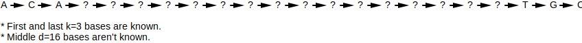
Assembly is the process of reconstructing an organism's genome from the fragments returned by a sequencer. Since the sequencer breaks up many copies of the same genome and each fragment's start position is random, the original genome can be reconstructed by finding overlaps between fragments and stitching them back together.

A typical problem with sequencing is that the number of errors in a fragment increase as the number of scanned bases increases. As such, read-pairs are preferred over reads: by only scanning in the head and tail of a long fragment, the scan won't contain as many errors as a read of the same length but will still contain extra information which helps with assembly (length of unknown nucleotides in between the prefix and suffix).
Assembly has many practical complications that prevent full genome reconstruction from fragments:
Which strand of double stranded DNA that a read / read-pair comes from isn't known, which means the overlaps you find may not be accurate.

The fragments may not cover the entire genome, which prevents full reconstruction.

The fragments may have errors (e.g. wrong nucleotides scanned in), which may prevent finding overlaps.

The fragments for repetitive parts of the genome (e.g. transposons) likely can't be accurately assembled.

WHAT: Given a list of overlapping reads where ...
... , stitch them together. For example, in the read list [GAAA, AAAT, AATC] each read overlaps the subsequent read by an offset of 1: GAAATC.
| 0 | 1 | 2 | 3 | 4 | 5 | |
|---|---|---|---|---|---|---|
| R1 | G | A | A | A | ||
| R2 | A | A | A | T | ||
| R3 | A | A | T | C | ||
| Stitched | G | A | A | A | T | C |
WHY: Since the sequencer breaks up many copies of the same DNA and each read's start position is random, larger parts of the original DNA can be reconstructed by finding overlaps between fragments and stitching them back together.
ALGORITHM:
ch3_code/src/Read.py (lines 55 to 76):
def append_overlap(self: Read, other: Read, skip: int = 1) -> Read:
offset = len(self.data) - len(other.data)
data_head = self.data[:offset]
data = self.data[offset:]
prefix = data[:skip]
overlap1 = data[skip:]
overlap2 = other.data[:-skip]
suffix = other.data[-skip:]
ret = data_head + prefix
for ch1, ch2 in zip(overlap1, overlap2):
ret += ch1 if ch1 == ch2 else '?' # for failure, use IUPAC nucleotide codes instead of question mark?
ret += suffix
return Read(ret, source=('overlap', [self, other]))
@staticmethod
def stitch(items: List[Read], skip: int = 1) -> str:
assert len(items) > 0
ret = items[0]
for other in items[1:]:
ret = ret.append_overlap(other, skip)
return ret.data
Stitched [GAAA, AAAT, AATC] to GAAATC
⚠️NOTE️️️⚠️
↩PREREQUISITES↩
WHAT: Given a list of overlapping read-pairs where ...
... , stitch them together. For example, in the read-pair list [ATG---CCG, TGT---CGT, GTT---GTT, TTA---TTC] each read-pair overlaps the subsequent read-pair by an offset of 1: ATGTTACCGTTC.
| 0 | 1 | 2 | 3 | 4 | 5 | 6 | 7 | 8 | 9 | 10 | 11 | |
|---|---|---|---|---|---|---|---|---|---|---|---|---|
| R1 | A | T | G | - | - | - | C | C | G | |||
| R2 | T | G | T | - | - | - | C | G | T | |||
| R3 | G | T | T | - | - | - | G | T | T | |||
| R4 | T | T | A | - | - | - | T | T | C | |||
| Stitched | A | T | G | T | T | A | C | C | G | T | T | C |
WHY: Since the sequencer breaks up many copies of the same DNA and each read's start position is random, larger parts of the original DNA can be reconstructed by finding overlaps between fragments and stitching them back together.
ALGORITHM:
Overlapping read-pairs are stitched by taking the first read-pair and iterating through the remaining read-pairs where ...
For example, to stitch [ATG---CCG, TGT---CGT], ...
| 0 | 1 | 2 | 3 | 4 | 5 | 6 | 7 | 8 | 9 | |
|---|---|---|---|---|---|---|---|---|---|---|
| R1 | A | T | G | - | - | - | C | C | G | |
| R2 | T | G | T | - | - | - | C | G | T | |
| Stitched | A | T | G | T | - | - | C | C | G | T |
ch3_code/src/ReadPair.py (lines 82 to 110):
def append_overlap(self: ReadPair, other: ReadPair, skip: int = 1) -> ReadPair:
self_head = Read(self.data.head)
other_head = Read(other.data.head)
new_head = self_head.append_overlap(other_head)
new_head = new_head.data
self_tail = Read(self.data.tail)
other_tail = Read(other.data.tail)
new_tail = self_tail.append_overlap(other_tail)
new_tail = new_tail.data
# WARNING: new_d may go negative -- In the event of a negative d, it means that rather than there being a gap
# in between the head and tail, there's an OVERLAP in between the head and tail. To get rid of the overlap, you
# need to remove either the last d chars from head or first d chars from tail.
new_d = self.d - skip
kdmer = Kdmer(new_head, new_tail, new_d)
return ReadPair(kdmer, source=('overlap', [self, other]))
@staticmethod
def stitch(items: List[ReadPair], skip: int = 1) -> str:
assert len(items) > 0
ret = items[0]
for other in items[1:]:
ret = ret.append_overlap(other, skip)
assert ret.d <= 0, "Gap still exists -- not enough to stitch"
overlap_count = -ret.d
return ret.data.head + ret.data.tail[overlap_count:]
Stitched [ATG---CCG, TGT---CGT, GTT---GTT, TTA---TTC] to ATGTTACCGTTC
⚠️NOTE️️️⚠️
WHAT: Given a set of reads that arbitrarily overlap, each read can be broken into many smaller reads that overlap better. For example, given 4 10-mers that arbitrarily overlap, you can break them into better overlapping 5-mers...

WHY: Breaking reads may cause more ambiguity in overlaps. At the same time, read breaking makes it easier to find overlaps by bringing the overlaps closer together and provides (artificially) increased coverage.
ALGORITHM:
ch3_code/src/Read.py (lines 80 to 87):
# This is read breaking -- why not just call it break? because break is a reserved keyword.
def shatter(self: Read, k: int) -> List[Read]:
ret = []
for kmer, _ in slide_window(self.data, k):
r = Read(kmer, source=('shatter', [self]))
ret.append(r)
return ret
Broke ACTAAGAACC to [ACTAA, CTAAG, TAAGA, AAGAA, AGAAC, GAACC]
↩PREREQUISITES↩
WHAT: Given a set of read-pairs that arbitrarily overlap, each read-pair can be broken into many read-pairs with a smaller k that overlap better. For example, given 4 (4,2)-mers that arbitrarily overlap, you can break them into better overlapping (2,4)-mers...

WHY: Breaking read-pairs may cause more ambiguity in overlaps. At the same time, read-pair breaking makes it easier to find overlaps by bringing the overlaps closer together and provides (artificially) increased coverage.
ALGORITHM:
ch3_code/src/ReadPair.py (lines 113 to 124):
# This is read breaking -- why not just call it break? because break is a reserved keyword.
def shatter(self: ReadPair, k: int) -> List[ReadPair]:
ret = []
d = (self.k - k) + self.d
for window_head, window_tail in zip(slide_window(self.data.head, k), slide_window(self.data.tail, k)):
kmer_head, _ = window_head
kmer_tail, _ = window_tail
kdmer = Kdmer(kmer_head, kmer_tail, d)
rp = ReadPair(kdmer, source=('shatter', [self]))
ret.append(rp)
return ret
Broke ACTA--AACC to [AC----AA, CT----AC, TA----CC]
↩PREREQUISITES↩
WHAT: Sequencers work by taking many copies of an organism's genome, randomly breaking up those genomes into smaller pieces, and randomly scanning in those pieces (fragments). As such, it isn't immediately obvious how many times each fragment actually appears in the genome.
Imagine that you're sequencing an organism's genome. Given that ...
... you can use probabilities to hint at how many times a fragment appears in the genome.
WHY:
Determining how many times a fragment appears in a genome helps with assembly. Specifically, ...
ALGORITHM:
⚠️NOTE️️️⚠️
For simplicity's sake, the genome is single-stranded (not double-stranded DNA / no reverse complementing stand).
Imagine a genome of ATGGATGC. A sequencer runs over that single strand and generates 3-mer reads with roughly 30x coverage. The resulting fragments are ...
| Read | # of Copies |
|---|---|
| ATG | 61 |
| TGG | 30 |
| GAT | 31 |
| TGC | 29 |
| TGT | 1 |
Since the genome is known to have less than 50% repeats, the dominate number of copies likely maps to 1 instance of that read appearing in the genome. Since the dominate number is ~30, divide the number of copies for each read by ~30 to find out roughly how many times each read appears in the genome ...
| Read | # of Copies | # of Appearances in Genome |
|---|---|---|
| ATG | 61 | 2 |
| TGG | 30 | 1 |
| GAT | 31 | 1 |
| TGC | 29 | 1 |
| TGT | 1 | 0.03 |
Note the last read (TGT) has 0.03 appearances, meaning it's a read that it either
In this case, it's an error because it doesn't appear in the original genome: TGT is not in ATGGATGC.
ch3_code/src/FragmentOccurrenceProbabilityCalculator.py (lines 15 to 29):
# If less than 50% of the reads are from repeats, this attempts to count and normalize such that it can hint at which
# reads may contain errors (= ~0) and which reads are for repeat regions (> 1.0).
def calculate_fragment_occurrence_probabilities(fragments: List[T]) -> Dict[T, float]:
counter = Counter(fragments)
max_digit_count = max([len(str(count)) for count in counter.values()])
for i in range(max_digit_count):
rounded_counter = Counter(dict([(k, round(count, -i)) for k, count in counter.items()]))
for k, orig_count in counter.items():
if rounded_counter[k] == 0:
rounded_counter[k] = orig_count
most_occurring_count, times_counted = Counter(rounded_counter.values()).most_common(1)[0]
if times_counted >= len(rounded_counter) * 0.5:
return dict([(key, value / most_occurring_count) for key, value in rounded_counter.items()])
raise ValueError(f'Failed to find a common count: {counter}')
Sequenced fragments:
Probability of occurrence in genome:
↩PREREQUISITES↩
WHAT: Given the fragments for a single strand of DNA, create a directed graph where ...
each node is a fragment.

each edge is between overlapping fragments (nodes), where the ...
This is called an overlap graph.
WHY: An overlap graph shows the different ways that fragments can be stitched together. A path in an overlap graph that touches each node exactly once is one possibility for the original single stranded DNA that the fragments came from. For example...
These paths are referred to as Hamiltonian paths.
⚠️NOTE️️️⚠️
Notice that the example graph is circular. If the organism genome itself were also circular (e.g. bacterial genome), the genome guesses above are all actually the same because circular genomes don't have a beginning / end.
ALGORITHM:
Sequencers produce fragments, but fragments by themselves typically aren't enough for most experiments / algorithms. In theory, stitching overlapping fragments for a single-strand of DNA should reveal that single-strand of DNA. In practice, real-world complications make revealing that single-strand of DNA nearly impossible:
Nevertheless, in an ideal world where most of these problems don't exist, an overlap graph is a good way to guess the single-strand of DNA that a set of fragments came from. An overlap graph assumes that the fragments it's operating on ...
⚠️NOTE️️️⚠️
Although the complications discussed above make it impossible to get the original genome in its entirety, it's still possible to pull out large parts of the original genome. This is discussed in Algorithms/DNA Assembly/Find Contigs.
To construct an overlap graph, create an edge between fragments that have an overlap.
For each fragment, add that fragment's ...
Then, join the hash tables together to find overlapping fragments.
ch3_code/src/ToOverlapGraphHash.py (lines 13 to 36):
def to_overlap_graph(items: List[T], skip: int = 1) -> Graph[T]:
ret = Graph()
prefixes = dict()
suffixes = dict()
for i, item in enumerate(items):
prefix = item.prefix(skip)
prefixes.setdefault(prefix, set()).add(i)
suffix = item.suffix(skip)
suffixes.setdefault(suffix, set()).add(i)
for key, indexes in suffixes.items():
other_indexes = prefixes.get(key)
if other_indexes is None:
continue
for i in indexes:
item = items[i]
for j in other_indexes:
if i == j:
continue
other_item = items[j]
ret.insert_edge(item, other_item)
return ret
Given the fragments ['TTA', 'TTA', 'TAG', 'AGT', 'GTT', 'TAC', 'ACT', 'CTT'], the overlap graph is...

A path that touches each node of an graph exactly once is a Hamiltonian path. Each The Hamiltonian path in an overlap graph is a guess as to the original single strand of DNA that the fragments for the graph came from.
The code shown below recursively walks all paths. Of all the paths it walks over, the ones that walk every node of the graph exactly once are selected.
This algorithm will likely fall over on non-trivial overlap graphs. Even finding one Hamiltonian path is computationally intensive.
ch3_code/src/WalkAllHamiltonianPaths.py (lines 15 to 38):
def exhaustively_walk_until_all_nodes_touched_exactly_one(
graph: Graph[T],
from_node: T,
current_path: List[T]
) -> List[List[T]]:
current_path.append(from_node)
if len(current_path) == len(graph):
found_paths = [current_path.copy()]
else:
found_paths = []
for to_node in graph.get_outputs(from_node):
if to_node in set(current_path):
continue
found_paths += exhaustively_walk_until_all_nodes_touched_exactly_one(graph, to_node, current_path)
current_path.pop()
return found_paths
# walk each node exactly once
def walk_hamiltonian_paths(graph: Graph[T], from_node: T) -> List[List[T]]:
return exhaustively_walk_until_all_nodes_touched_exactly_one(graph, from_node, [])
Given the fragments ['TTA', 'TTA', 'TAG', 'AGT', 'GTT', 'TAC', 'ACT', 'CTT'], the overlap graph is...
... and the Hamiltonian paths are ...
↩PREREQUISITES↩
WHAT: Given the fragments for a single strand of DNA, create a directed graph where ...
each fragment is represented as an edge connecting 2 nodes, where the ...

duplicate nodes are merged into a single node.

This graph is called a de Bruijn graph: a balanced and strongly connected graph where the fragments are represented as edges.
⚠️NOTE️️️⚠️
The example graph above is balanced. But, depending on the fragments used, the graph may not be totally balanced. A technique for dealing with this is detailed below. For now, just assume that the graph will be balanced.
WHY: Similar to an overlap graph, a de Bruijn graph shows the different ways that fragments can be stitched together. However, unlike an overlap graph, the fragments are represented as edges rather than nodes. Where in an overlap graph you need to find paths that touch every node exactly once (Hamiltonian path), in a de Bruijn graph you need to find paths that walk over every edge exactly once (Eulerian cycle).
A path in a de Bruijn graph that walks over each edge exactly once is one possibility for the original single stranded DNA that the fragments came from: it starts and ends at the same node (a cycle), and walks over every edge in the graph.
In contrast to finding a Hamiltonian path in an overlap graph, it's much faster to find an Eulerian cycle in a de Bruijn graph.
De Bruijn graphs were originally invented to solve the k-universal string problem, which is effectively the same concept as assembly.
ALGORITHM:
Sequencers produce fragments, but fragments by themselves typically aren't enough for most experiments / algorithms. In theory, stitching overlapping fragments for a single-strand of DNA should reveal that single-strand of DNA. In practice, real-world complications make revealing that single-strand of DNA nearly impossible:
Nevertheless, in an ideal world where most of these problems don't exist, a de Bruijn graph is a good way to guess the single-strand of DNA that a set of fragments came from. A de Bruijn graph assumes that the fragments it's operating on ...
⚠️NOTE️️️⚠️
Although the complications discussed above make it impossible to get the original genome in its entirety, it's still possible to pull out large parts of the original genome. This is discussed in Algorithms/DNA Assembly/Find Contigs.
To construct a de Bruijn graph, add an edge for each fragment, creating missing nodes as required.
ch3_code/src/ToDeBruijnGraph.py (lines 13 to 20):
def to_debruijn_graph(reads: List[T], skip: int = 1) -> Graph[T]:
graph = Graph()
for read in reads:
from_node = read.prefix(skip)
to_node = read.suffix(skip)
graph.insert_edge(from_node, to_node)
return graph
Given the fragments ['TTAG', 'TAGT', 'AGTT', 'GTTA', 'TTAC', 'TACT', 'ACTT', 'CTTA'], the de Bruijn graph is...
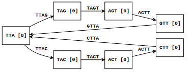
Note how the graph above is both balanced and strongly connected. In most cases, non-circular genomes won't generate a balanced graph like the one above. Instead, a non-circular genome will very likely generate a graph that's nearly balanced: Nearly balanced graphs are graphs that would be balanced if not for a few unbalanced nodes (usually root and tail nodes). They can artificially be made to become balanced by finding imbalanced nodes and creating artificial edges between them until they become balanced nodes.
⚠️NOTE️️️⚠️
Circular genomes are genomes that wrap around (e.g. bacterial genomes). They don't have a beginning / end.
ch3_code/src/BalanceNearlyBalancedGraph.py (lines 15 to 44):
def find_unbalanced_nodes(graph: Graph[T]) -> List[Tuple[T, int, int]]:
unbalanced_nodes = []
for node in graph.get_nodes():
in_degree = graph.get_in_degree(node)
out_degree = graph.get_out_degree(node)
if in_degree != out_degree:
unbalanced_nodes.append((node, in_degree, out_degree))
return unbalanced_nodes
# creates a balanced graph from a nearly balanced graph -- nearly balanced means the graph has an equal number of
# missing outputs and missing inputs.
def balance_graph(graph: Graph[T]) -> Tuple[Graph[T], Set[T], Set[T]]:
unbalanced_nodes = find_unbalanced_nodes(graph)
nodes_with_missing_ins = filter(lambda x: x[1] < x[2], unbalanced_nodes)
nodes_with_missing_outs = filter(lambda x: x[1] > x[2], unbalanced_nodes)
graph = graph.copy()
# create 1 copy per missing input / per missing output
n_per_need_in = [_n for n, in_degree, out_degree in nodes_with_missing_ins for _n in [n] * (out_degree - in_degree)]
n_per_need_out = [_n for n, in_degree, out_degree in nodes_with_missing_outs for _n in [n] * (in_degree - out_degree)]
assert len(n_per_need_in) == len(n_per_need_out) # need an equal count of missing ins and missing outs to balance
# balance
for n_need_in, n_need_out in zip(n_per_need_in, n_per_need_out):
graph.insert_edge(n_need_out, n_need_in)
return graph, set(n_per_need_in), set(n_per_need_out) # return graph with cycle, orig root nodes, orig tail nodes
Given the fragments ['TTAC', 'TACC', 'ACCC', 'CCCT'], the artificially balanced de Bruijn graph is...

... with original head nodes at {TTA} and tail nodes at {CCT}.
Given a de Bruijn graph (strongly connected and balanced), you can find a Eulerian cycle by randomly walking unexplored edges in the graph. Pick a starting node and randomly walk edges until you end up back at that same node, ignoring all edges that were previously walked over. Of the nodes that were walked over, pick one that still has unexplored edges and repeat the process: Walk edges from that node until you end up back at that same node, ignoring edges all edges that were previously walked over (including those in the past iteration). Continue this until you run out of unexplored edges.
ch3_code/src/WalkRandomEulerianCycle.py (lines 14 to 64):
# (6, 8), (8, 7), (7, 9), (9, 6) ----> 68796
def edge_list_to_node_list(edges: List[Tuple[T, T]]) -> List[T]:
ret = [edges[0][0]]
for e in edges:
ret.append(e[1])
return ret
def randomly_walk_and_remove_edges_until_cycle(graph: Graph[T], node: T) -> List[T]:
end_node = node
edge_list = []
from_node = node
while len(graph) > 0:
to_nodes = graph.get_outputs(from_node)
to_node = next(to_nodes, None)
assert to_node is not None # eularian graphs are strongly connected, meaning we should never hit dead-end nodes
graph.delete_edge(from_node, to_node, True, True)
edge = (from_node, to_node)
edge_list.append(edge)
from_node = to_node
if from_node == end_node:
return edge_list_to_node_list(edge_list)
assert False # eularian graphs are strongly connected and balanced, meaning we should never run out of nodes
# graph must be strongly connected
# graph must be balanced
# if the 2 conditions above are met, the graph will be eularian (a eulerian cycle exists)
def walk_eulerian_cycle(graph: Graph[T], start_node: T) -> List[T]:
graph = graph.copy()
node_cycle = randomly_walk_and_remove_edges_until_cycle(graph, start_node)
node_cycle_ptr = 0
while len(graph) > 0:
new_node_cycle = None
for local_ptr, node in enumerate(node_cycle[node_cycle_ptr:]):
if node not in graph:
continue
node_cycle_ptr += local_ptr
inject_node_cycle = randomly_walk_and_remove_edges_until_cycle(graph, node)
new_node_cycle = node_cycle[:]
new_node_cycle[node_cycle_ptr:node_cycle_ptr+1] = inject_node_cycle
break
assert new_node_cycle is not None
node_cycle = new_node_cycle
return node_cycle
Given the fragments ['TTA', 'TAT', 'ATT', 'TTC', 'TCT', 'CTT'], the de Bruijn graph is...

... and a Eulerian cycle is ...
TT -> TC -> CT -> TT -> TA -> AT -> TT
Note that the graph above is naturally balanced (no artificial edges have been added in to make it balanced). If the graph you're finding a Eulerian cycle on has been artificially balanced, simply start the search for a Eulerian cycle from one of the original head node. The artificial edge will show up at the end of the Eulerian cycle, and as such can be dropped from the path.
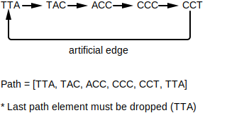
This algorithm picks one Eulerian cycle in a graph. Most graph have multiple Eulerian cycles, likely too many to enumerate all of them.
⚠️NOTE️️️⚠️
See the section on k-universal strings to see a real-world application of Eulerian graphs. For something like k=20, good luck trying to enumerate all Eulerian cycles.
WHAT: Given a set of a fragments that have been broken to k (read breaking / read-pair breaking), any ...
... of length ...
... may have been from a sequencing error.

WHY: When fragments returned by a sequencer get broken (read breaking / read-pair breaking), any fragments containing sequencing errors may show up in the graph as one of 3 structures: forked prefix, forked suffix, or bubble. As such, it may be possible to detect these structures and flatten them (by removing bad branches) to get a cleaner graph.
For example, imagine the read ATTGG. Read breaking it into 2-mer reads results in: [AT, TT, TG, GG].

Now, imagine that the sequencer captures that same part of the genome again, but this time the read contains a sequencing error. Depending on where the incorrect nucleotide is, one of the 3 structures will get introduced into the graph:
ATTGG vs ACTGG (within first 2 elements)

ATTGG vs ATTCG (within last 2 elements)

ATTGG vs ATCGG (sandwiched after first 2 elements and before last 2 elements)

Note that just because these structures exist doesn't mean that the fragments they represent definitively have sequencing errors. These structures could have been caused by other problems / may not be problems at all:
⚠️NOTE️️️⚠️
The Pevzner book says that bubble removal is a common feature in modern assemblers. My assumption is that, before pulling out contigs (described later on), basic probabilities are used to try and suss out if a branch in a bubble / prefix fork / suffix fork is bad and remove it if it is. This (hopefully) results in longer contigs.
ALGORITHM:
ch3_code/src/FindGraphAnomalies.py (lines 53 to 105):
def find_head_convergences(graph: Graph[T], branch_len: int) -> List[Tuple[Optional[T], List[T], Optional[T]]]:
root_nodes = filter(lambda n: graph.get_in_degree(n) == 0, graph.get_nodes())
ret = []
for n in root_nodes:
for child in graph.get_outputs(n):
path_from_child = walk_outs_until_converge(graph, child)
if path_from_child is None:
continue
diverging_node = None
branch_path = [n] + path_from_child[:-1]
converging_node = path_from_child[-1]
path = (diverging_node, branch_path, converging_node)
if len(branch_path) <= branch_len:
ret.append(path)
return ret
def find_tail_divergences(graph: Graph[T], branch_len: int) -> List[Tuple[Optional[T], List[T], Optional[T]]]:
tail_nodes = filter(lambda n: graph.get_out_degree(n) == 0, graph.get_nodes())
ret = []
for n in tail_nodes:
for child in graph.get_inputs(n):
path_from_child = walk_ins_until_diverge(graph, child)
if path_from_child is None:
continue
diverging_node = path_from_child[0]
branch_path = path_from_child[1:] + [n]
converging_node = None
path = (diverging_node, branch_path, converging_node)
if len(branch_path) <= branch_len:
ret.append(path)
return ret
def find_bubbles(graph: Graph[T], branch_len: int) -> List[Tuple[Optional[T], List[T], Optional[T]]]:
branching_nodes = filter(lambda n: graph.get_out_degree(n) > 1, graph.get_nodes())
ret = []
for n in branching_nodes:
for child in graph.get_outputs(n):
path_from_child = walk_outs_until_converge(graph, child)
if path_from_child is None:
continue
diverging_node = n
branch_path = path_from_child[:-1]
converging_node = path_from_child[-1]
path = (diverging_node, branch_path, converging_node)
if len(branch_path) <= branch_len:
ret.append(path)
return ret
Fragments from sequencer:
Fragments after being broken to k=4:
De Bruijn graph:

Problem paths:
↩PREREQUISITES↩
WHAT: Given an overlap graph or de Bruijn graph, find the longest possible stretches of non-branching nodes. Each stretch will be a path that's either ...
a line: each node has an indegree and outdegree of 1.

a cycle: each node has an indegree and outdegree of 1 and it loops.

a line sandwiched between branching nodes: nodes in between have an indegree and outdegree of 1 but either...

Each found path is called a contig: a contiguous piece of the graph. For example, ...
WHY: An overlap graph / de Bruijn graph represents all the possible ways a set of fragments may be stitched together to infer the full genome. However, real-world complications make it impractical to guess the full genome:
These complications result in graphs that are too tangled, disconnected, etc... As such, the best someone can do is to pull out the contigs in the graph: unambiguous stretches of DNA.
ALGORITHM:
ch3_code/src/FindContigs.py (lines 14 to 82):
def walk_until_non_1_to_1(graph: Graph[T], node: T) -> Optional[List[T]]:
ret = [node]
ret_quick_lookup = {node}
while True:
out_degree = graph.get_out_degree(node)
in_degree = graph.get_in_degree(node)
if not(in_degree == 1 and out_degree == 1):
return ret
children = graph.get_outputs(node)
child = next(children)
if child in ret_quick_lookup:
return ret
node = child
ret.append(node)
ret_quick_lookup.add(node)
def walk_until_loop(graph: Graph[T], node: T) -> Optional[List[T]]:
ret = [node]
ret_quick_lookup = {node}
while True:
out_degree = graph.get_out_degree(node)
if out_degree > 1 or out_degree == 0:
return None
children = graph.get_outputs(node)
child = next(children)
if child in ret_quick_lookup:
return ret
node = child
ret.append(node)
ret_quick_lookup.add(node)
def find_maximal_non_branching_paths(graph: Graph[T]) -> List[List[T]]:
paths = []
for node in graph.get_nodes():
out_degree = graph.get_out_degree(node)
in_degree = graph.get_in_degree(node)
if (in_degree == 1 and out_degree == 1) or out_degree == 0:
continue
for child in graph.get_outputs(node):
path_from_child = walk_until_non_1_to_1(graph, child)
if path_from_child is None:
continue
path = [node] + path_from_child
paths.append(path)
skip_nodes = set()
for node in graph.get_nodes():
if node in skip_nodes:
continue
out_degree = graph.get_out_degree(node)
in_degree = graph.get_in_degree(node)
if not (in_degree == 1 and out_degree == 1) or out_degree == 0:
continue
path = walk_until_loop(graph, node)
if path is None:
continue
path = path + [node]
paths.append(path)
skip_nodes |= set(path)
return paths
Given the fragments ['TGG', 'GGT', 'GGT', 'GTG', 'CAC', 'ACC', 'CCA'], the de Bruijn graph is...
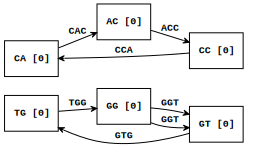
The following contigs were found...
GG->GT
GG->GT
GT->TG->GG
CA->AC->CC->CA
↩PREREQUISITES↩
A peptide is a miniature protein consisting of a chain of amino acids anywhere between 2 to 100 amino acids in length. Peptides are created through two mechanisms:
ribosomal peptides: DNA gets transcribed to mRNA (transcription), which in turn gets translated by the ribosome into a peptide (translation).

non-ribosomal peptides: proteins called NRP synthetase construct peptides one amino acid at a time.
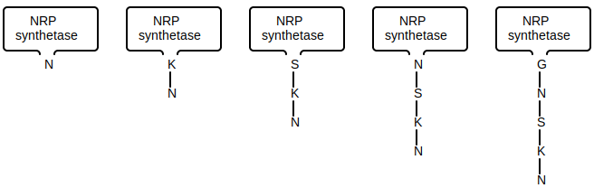
For ribosomal peptides, each amino acid is encoded as a DNA sequence of length 3. This 3 length DNA sequence is referred to as a codon. By knowing which codons map to which amino acids, the ...
For non-ribosomal peptides, a sample of the peptide needs to be isolated and passed through a mass spectrometer. A mass spectrometer is a device that shatters and bins molecules by their mass-to-charge ratio: Given a sample of molecules, the device randomly shatters each molecule in the sample (forming ions), then bins each ion by its mass-to-charge ratio ().
The output of a mass spectrometer is a plot called a spectrum. The plot's ...
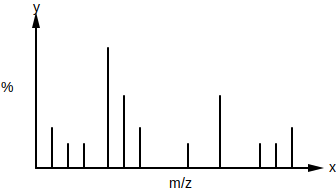
For example, given a sample containing multiple instances of the linear peptide NQY, the mass spectrometer will take each instance of NQY and randomly break the bonds between its amino acids:
⚠️NOTE️️️⚠️
How does it know to break the bonds holding amino acids together and not bonds within the amino acids themselves? My guess is that the bonds coupling one amino acid to another are much weaker than the bonds holding an individual amino acid together -- it's more likely that the weaker bonds will be broken.
Each subpeptide then will have its mass-to-charge ratio measured, which in turn gets converted to a set of potential masses by performing basic math. With these potential masses, it's possible to infer the sequence of the peptide.
Special consideration needs to be given to the real-world practical problems with mass spectrometry. Specifically, the spectrum given back by a mass spectrometer will very likely ...
The following table contains a list of proteinogenic amino acids with their masses and codon mappings:
| 1 Letter Code | 3 Letter Code | Amino Acid | Codons | Monoisotopic Mass (daltons) |
|---|---|---|---|---|
| A | Ala | Alanine | GCA, GCC, GCG, GCU | 71.04 |
| C | Cys | Cysteine | UGC, UGU | 103.01 |
| D | Asp | Aspartic acid | GAC, GAU | 115.03 |
| E | Glu | Glutamic acid | GAA, GAG | 129.04 |
| F | Phe | Phenylalanine | UUC, UUU | 147.07 |
| G | Gly | Glycine | GGA, GGC, GGG, GGU | 57.02 |
| H | His | Histidine | CAC, CAU | 137.06 |
| I | Ile | Isoleucine | AUA, AUC, AUU | 113.08 |
| K | Lys | Lysine | AAA, AAG | 128.09 |
| L | Leu | Leucine | CUA, CUC, CUG, CUU, UUA, UUG | 113.08 |
| M | Met | Methionine | AUG | 131.04 |
| N | Asn | Asparagine | AAC, AAU | 114.04 |
| P | Pro | Proline | CCA, CCC, CCG, CCU | 97.05 |
| Q | Gln | Glutamine | CAA, CAG | 128.06 |
| R | Arg | Arginine | AGA, AGG, CGA, CGC, CGG, CGU | 156.1 |
| S | Ser | Serine | AGC, AGU, UCA, UCC, UCG, UCU | 87.03 |
| T | Thr | Threonine | ACA, ACC, ACG, ACU | 101.05 |
| V | Val | Valine | GUA, GUC, GUG, GUU | 99.07 |
| W | Trp | Tryptophan | UGG | 186.08 |
| Y | Tyr | Tyrosine | UAC, UAU | 163.06 |
| * | * | STOP | UAA, UAG, UGA |
⚠️NOTE️️️⚠️
The stop marker tells the ribosome to stop translating / the protein is complete. The codons are listed as ribonucleotides (RNA). For nucleotides (DNA), swap U with T.
WHAT: Given a DNA sequence, map each codon to the amino acid it represents. In total, there are 6 different ways that a DNA sequence could be translated:
WHY: The composition of a peptide can be determined from the DNA sequence that encodes it.
ALGORITHM:
ch4_code/src/helpers/AminoAcidUtils.py (lines 4 to 24):
_codon_to_amino_acid = {'AAA': 'K', 'AAC': 'N', 'AAG': 'K', 'AAU': 'N', 'ACA': 'T', 'ACC': 'T', 'ACG': 'T', 'ACU': 'T',
'AGA': 'R', 'AGC': 'S', 'AGG': 'R', 'AGU': 'S', 'AUA': 'I', 'AUC': 'I', 'AUG': 'M', 'AUU': 'I',
'CAA': 'Q', 'CAC': 'H', 'CAG': 'Q', 'CAU': 'H', 'CCA': 'P', 'CCC': 'P', 'CCG': 'P', 'CCU': 'P',
'CGA': 'R', 'CGC': 'R', 'CGG': 'R', 'CGU': 'R', 'CUA': 'L', 'CUC': 'L', 'CUG': 'L', 'CUU': 'L',
'GAA': 'E', 'GAC': 'D', 'GAG': 'E', 'GAU': 'D', 'GCA': 'A', 'GCC': 'A', 'GCG': 'A', 'GCU': 'A',
'GGA': 'G', 'GGC': 'G', 'GGG': 'G', 'GGU': 'G', 'GUA': 'V', 'GUC': 'V', 'GUG': 'V', 'GUU': 'V',
'UAA': '*', 'UAC': 'Y', 'UAG': '*', 'UAU': 'Y', 'UCA': 'S', 'UCC': 'S', 'UCG': 'S', 'UCU': 'S',
'UGA': '*', 'UGC': 'C', 'UGG': 'W', 'UGU': 'C', 'UUA': 'L', 'UUC': 'F', 'UUG': 'L', 'UUU': 'F'}
_amino_acid_to_codons = dict()
for k, v in _codon_to_amino_acid.items():
_amino_acid_to_codons.setdefault(v, []).append(k)
def codon_to_amino_acid(rna: str) -> Optional[str]:
return _codon_to_amino_acid.get(rna)
def amino_acid_to_codons(codon: str) -> Optional[List[str]]:
return _amino_acid_to_codons.get(codon)
ch4_code/src/EncodePeptide.py (lines 9 to 26):
def encode_peptide(dna: str) -> str:
rna = dna_to_rna(dna)
protein_seq = ''
for codon in split_to_size(rna, 3):
codon_str = ''.join(codon)
protein_seq += codon_to_amino_acid(codon_str)
return protein_seq
def encode_peptides_all_readingframes(dna: str) -> List[str]:
ret = []
for dna_ in (dna, dna_reverse_complement(dna)):
for rf_start in range(3):
rf_end = len(dna_) - ((len(dna_) - rf_start) % 3)
peptide = encode_peptide(dna_[rf_start:rf_end])
ret.append(peptide)
return ret
Given AAAAGAACCTAATCTTAAAGGAGATGATGATTCTAA, the possible peptide encodings are...
WHAT: Given a peptide, map each amino acid to the DNA sequences it represents. Since each amino acid can map to multiple codons, there may be multiple DNA sequences for a single peptide.
WHY: The DNA sequences that encode a peptide can be determined from the peptide itself.
ALGORITHM:
ch4_code/src/helpers/AminoAcidUtils.py (lines 4 to 24):
_codon_to_amino_acid = {'AAA': 'K', 'AAC': 'N', 'AAG': 'K', 'AAU': 'N', 'ACA': 'T', 'ACC': 'T', 'ACG': 'T', 'ACU': 'T',
'AGA': 'R', 'AGC': 'S', 'AGG': 'R', 'AGU': 'S', 'AUA': 'I', 'AUC': 'I', 'AUG': 'M', 'AUU': 'I',
'CAA': 'Q', 'CAC': 'H', 'CAG': 'Q', 'CAU': 'H', 'CCA': 'P', 'CCC': 'P', 'CCG': 'P', 'CCU': 'P',
'CGA': 'R', 'CGC': 'R', 'CGG': 'R', 'CGU': 'R', 'CUA': 'L', 'CUC': 'L', 'CUG': 'L', 'CUU': 'L',
'GAA': 'E', 'GAC': 'D', 'GAG': 'E', 'GAU': 'D', 'GCA': 'A', 'GCC': 'A', 'GCG': 'A', 'GCU': 'A',
'GGA': 'G', 'GGC': 'G', 'GGG': 'G', 'GGU': 'G', 'GUA': 'V', 'GUC': 'V', 'GUG': 'V', 'GUU': 'V',
'UAA': '*', 'UAC': 'Y', 'UAG': '*', 'UAU': 'Y', 'UCA': 'S', 'UCC': 'S', 'UCG': 'S', 'UCU': 'S',
'UGA': '*', 'UGC': 'C', 'UGG': 'W', 'UGU': 'C', 'UUA': 'L', 'UUC': 'F', 'UUG': 'L', 'UUU': 'F'}
_amino_acid_to_codons = dict()
for k, v in _codon_to_amino_acid.items():
_amino_acid_to_codons.setdefault(v, []).append(k)
def codon_to_amino_acid(rna: str) -> Optional[str]:
return _codon_to_amino_acid.get(rna)
def amino_acid_to_codons(codon: str) -> Optional[List[str]]:
return _amino_acid_to_codons.get(codon)
ch4_code/src/DecodePeptide.py (lines 8 to 27):
def decode_peptide(peptide: str) -> List[str]:
def dfs(subpeptide: str, dna: str, ret: List[str]) -> None:
if len(subpeptide) == 0:
ret.append(dna)
return
aa = subpeptide[0]
for codon in amino_acid_to_codons(aa):
dfs(subpeptide[1:], dna + rna_to_dna(codon), ret)
dnas = []
dfs(peptide, '', dnas)
return dnas
def decode_peptide_count(peptide: str) -> int:
count = 1
for ch in peptide:
vals = amino_acid_to_codons(ch)
count *= len(vals)
return count
Given NQY, the possible DNA encodings are...
WHAT: Given a spectrum for a peptide, derive a set of potential masses from the mass-to-charge ratios. These potential masses are referred to as an experimental spectrum.
WHY: A peptide's sequence can be inferred from a list of its potential subpeptide masses.
ALGORITHM:
Prior to deriving masses from a spectrum, filter out low intensity mass-to-charge ratios. The remaining mass-to-charge ratios are converted to potential masses using .
For example, consider a mass spectrometer that has a tendency to produce +1 and +2 ions. This mass spectrometer produces the following mass-to-charge ratios: [100, 150, 250]. Each mass-to-charge ratio from this mass spectrometer will be converted to two possible masses:
It's impossible to know which mass is correct, so all masses are included in the experimental spectrum:
[100Da, 150Da, 200Da, 250Da, 300Da, 500Da].
ch4_code/src/ExperimentalSpectrum.py (lines 6 to 14):
# Its expected that low intensity mass_charge_ratios have already been filtered out prior to invoking this func.
def experimental_spectrum(mass_charge_ratios: List[float], charge_tendencies: Set[float]) -> List[float]:
ret = [0.0] # implied -- subpeptide of length 0
for mcr in mass_charge_ratios:
for charge in charge_tendencies:
ret.append(mcr * charge)
ret.sort()
return ret
The experimental spectrum for the mass-to-charge ratios...
[100.0, 150.0, 250.0]
... and charge tendencies...
{1.0, 2.0}
... is...
[0.0, 100.0, 150.0, 200.0, 250.0, 300.0, 500.0]
⚠️NOTE️️️⚠️
The following section isn't from the Pevzner book or any online resources. I came up with it in an effort to solve the final assignment for Chapter 4 (the chapter on non-ribosomal peptide sequencing). As such, it might not be entirely correct / there may be better ways to do this.
Just as a spectrum is noisy, the experimental spectrum derived from a spectrum is also noisy. For example, consider a mass spectrometer that produces up to ±0.5 noise per mass-to-charge ratio and has a tendency to produce +1 and +2 charges. A real mass of 100Da measured by this mass spectrometer will end up in the spectrum as a mass-to-charge ratio of either...
Converting these mass-to-charge ratio ranges to mass ranges...
Note how the +2 charge conversion produces the widest range: 100Da ± 1Da. Any real mass measured by this mass spectrometer will end up in the experimental spectrum with up to ±1Da noise. For example, a real mass of ...

Similarly, any mass in the experimental spectrum could have come from a real mass within ±1Da of it. For example, an experimental spectrum mass of 100Da could have come from a real mass of anywhere between 99Da to 101Da: At a real mass of ...

As such, the maximum amount of noise for a real mass that made its way into the experimental spectrum is the same as the tolerance required for mapping an experimental spectrum mass back to the real mass it came from. This tolerance can also be considered noise: the experimental spectrum mass is offset from the real mass that it came from.
ch4_code/src/ExperimentalSpectrumNoise.py (lines 6 to 8):
def experimental_spectrum_noise(max_mass_charge_ratio_noise: float, charge_tendencies: Set[float]) -> float:
return max_mass_charge_ratio_noise * abs(max(charge_tendencies))
Given a max mass-to-charge ratio noise of ±0.5 and charge tendencies {1.0, 2.0}, the maximum noise per experimental spectrum mass is ±1.0
↩PREREQUISITES↩
WHAT: A theoretical spectrum is an algorithmically generated list of all subpeptide masses for a known peptide sequence (including 0 and the full peptide's mass).
For example, linear peptide NQY has the theoretical spectrum...
theo_spec = [
0, # <empty>
114, # N
128, # Q
163, # Y
242, # NQ
291, # QY
405 # NQY
]
... while experimental spectrum produced by feeding NQY to a mass spectrometer may look something like...
exp_spec = [
0.0, # <empty> (implied)
113.9, # N
115.1, # N
# Q missing
136.2, # faulty
162.9, # Y
242.0, # NQ
# QY missing
311.1, # faulty
346.0, # faulty
405.2 # NQY
]
The theoretical spectrum is what the experimental spectrum would be in a perfect world...
WHY: The closer a theoretical spectrum is to an experimental spectrum, the more likely it is that the peptide sequence used to generate that theoretical spectrum is related to the peptide sequence that produced that experimental spectrum. This is the basis for how non-ribosomal peptides are sequenced: an experimental spectrum is produced by a mass spectrometer, then that experimental spectrum is compared against a set of theoretical spectrums.
ALGORITHM:
The following algorithm generates a theoretical spectrum in the most obvious way: iterate over each subpeptide and calculate its mass.
ch4_code/src/TheoreticalSpectrum_Bruteforce.py (lines 10 to 26):
def theoretical_spectrum(
peptide: List[AA],
peptide_type: PeptideType,
mass_table: Dict[AA, float]
) -> List[int]:
# add subpeptide of length 0's mass
ret = [0.0]
# add subpeptide of length 1 to k-1's mass
for k in range(1, len(peptide)):
for subpeptide, _ in slide_window(peptide, k, cyclic=peptide_type == PeptideType.CYCLIC):
ret.append(sum([mass_table[ch] for ch in subpeptide]))
# add subpeptide of length k's mass
ret.append(sum([mass_table[aa] for aa in peptide]))
# sort and return
ret.sort()
return ret
The theoretical spectrum for the linear peptide NQY is [0.0, 114.0, 128.0, 163.0, 242.0, 291.0, 405.0]
ALGORITHM:
The algorithm starts by calculating the prefix sum of the mass at each position of the peptide. The prefix sum is calculated by summing all amino acid masses up until that position. For example, the peptide GASP has the following masses at the following positions...
| G | A | S | P |
|---|---|---|---|
| 57 | 71 | 87 | 97 |
As such, the prefix sum at each position is...
| G | A | S | P | |
|---|---|---|---|---|
| Mass | 57 | 71 | 87 | 97 |
| Prefix sum of mass | 57=57 | 57+71=128 | 57+71+87=215 | 57+71+87+97=312 |
prefixsum_masses[0] = mass[''] = 0 = 0 # Artificially added
prefixsum_masses[1] = mass['G'] = 0+57 = 57
prefixsum_masses[2] = mass['GA'] = 0+57+71 = 128
prefixsum_masses[3] = mass['GAS'] = 0+57+71+87 = 215
prefixsum_masses[4] = mass['GASP'] = 0+57+71+87+97 = 312
The mass for each subpeptide can be derived from just these prefix sums. For example, ...
mass['GASP'] = mass['GASP'] - mass[''] = prefixsum_masses[4] - prefixsum_masses[0]
mass['ASP'] = mass['GASP'] - mass['G'] = prefixsum_masses[4] - prefixsum_masses[1]
mass['AS'] = mass['GAS'] - mass['G'] = prefixsum_masses[3] - prefixsum_masses[1]
mass['A'] = mass['GA'] - mass['G'] = prefixsum_masses[2] - prefixsum_masses[1]
mass['S'] = mass['GAS'] - mass['GA'] = prefixsum_masses[3] - prefixsum_masses[2]
mass['P'] = mass['GASP'] - mass['GAS'] = prefixsum_masses[4] - prefixsum_masses[3]
# etc...
If the peptide is a cyclic peptide, some subpeptides will wrap around. For example, PG is a valid subpeptide if GASP is a cyclic peptide:

The prefix sum can be used to calculate these wrapping subpeptides as well. For example...
mass['PG'] = mass['GASP'] - mass['AS']
= mass['GASP'] - (mass['GAS'] - mass['G']) # SUBSTITUTE IN mass['AS'] CALC FROM ABOVE
= prefixsum_masses[4] - (prefixsum_masses[3] - prefixsum_masses[1])
This algorithm is faster than the bruteforce algorithm, but most use-cases won't notice a performance improvement unless either the...
ch4_code/src/TheoreticalSpectrum_PrefixSum.py (lines 37 to 53):
def theoretical_spectrum(
peptide: List[AA],
peptide_type: PeptideType,
mass_table: Dict[AA, float]
) -> List[float]:
prefixsum_masses = list(accumulate([mass_table[aa] for aa in peptide], initial=0.0))
ret = [0.0]
for end_idx in range(0, len(prefixsum_masses)):
for start_idx in range(0, end_idx):
min_mass = prefixsum_masses[start_idx]
max_mass = prefixsum_masses[end_idx]
ret.append(max_mass - min_mass)
if peptide_type == PeptideType.CYCLIC and start_idx > 0 and end_idx < len(peptide):
ret.append(prefixsum_masses[-1] - (prefixsum_masses[end_idx] - prefixsum_masses[start_idx]))
ret.sort()
return ret
The theoretical spectrum for the linear peptide NQY is [0.0, 114.0, 128.0, 163.0, 242.0, 291.0, 405.0]
⚠️NOTE️️️⚠️
The algorithm above is serial, but it can be made parallel to get even more speed:
↩PREREQUISITES↩
WHAT: Given an experimental spectrum, subtract its masses from each other. The differences are a set of potential amino acid masses for the peptide that generated that experimental spectrum.
For example, the following experimental spectrum is for the linear peptide NQY:
[0.0Da, 113.9Da, 115.1Da, 136.2Da, 162.9Da, 242.0Da, 311.1Da, 346.0Da, 405.2Da]
Performing 242.0 - 113.9 results in 128.1, which is very close to the mass for amino acid Q. The mass for Q was derived even though no experimental spectrum masses are near Q's mass:
WHY: The closer a theoretical spectrum is to an experimental spectrum, the more likely it is that the peptide sequence used to generate that theoretical spectrum is related to the peptide sequence that produced that experimental spectrum. However, before being able to build a theoretical spectrum, a list of potential amino acids need to be inferred from the experimental spectrum. In addition to the 20 proteinogenic amino acids, there are many other non-proteinogenic amino acids that may be part of the peptide.
This operation infers a list of potential amino acid masses, which can be mapped back to amino acids themselves.
ALGORITHM:
Consider an experimental spectrum with masses that don't contain any noise. That is, the experimental spectrum may have faulty masses and may be missing masses, but any correct masses it does have are exact / noise-free. To derive a list of potential amino acid masses for this experimental spectrum:
The result is a list of potential amino acid masses for the peptide that produced that experimental spectrum. For example, consider the following experimental spectrum for the linear peptide NQY:
[0Da, 114Da, 136Da, 163Da, 242Da, 311Da, 346Da, 405Da]
The experimental spectrum masses...
Subtract the experimental spectrum masses:
| 0 | 114 | 136 | 163 | 242 | 311 | 346 | 405 | |
|---|---|---|---|---|---|---|---|---|
| 0 | 0 | -114 | -136 | -163 | -242 | -311 | -346 | -405 |
| 114 | 114 | 0 | -22 | -49 | -128 | -197 | -231 | -291 |
| 136 | 136 | 22 | 0 | -27 | -106 | -175 | -210 | -269 |
| 163 | 163 | 49 | 27 | 0 | -79 | -148 | -183 | -242 |
| 242 | 242 | 128 | 106 | 79 | 0 | -69 | -104 | -163 |
| 311 | 311 | 197 | 175 | 148 | 69 | 0 | -35 | -94 |
| 346 | 346 | 232 | 210 | 183 | 104 | 35 | 0 | -59 |
| 405 | 405 | 291 | 269 | 242 | 163 | 94 | 59 | 0 |
Then, remove differences that aren't between 57Da and 200Da:
| 0 | 114 | 136 | 163 | 242 | 311 | 346 | 405 | |
|---|---|---|---|---|---|---|---|---|
| 0 | ||||||||
| 114 | 114 | |||||||
| 136 | 136 | |||||||
| 163 | 163 | |||||||
| 242 | 128 | 106 | 79 | |||||
| 311 | 197 | 175 | 148 | 69 | ||||
| 346 | 183 | 104 | ||||||
| 405 | 163 | 94 | 59 |
Then, filter out any differences occurring less than than n times. In this case, it makes sense to set n to 1 because almost all of the differences occur only once.
The final result is a list of potential amino acid masses for the peptide that produced the experimental spectrum:
[59Da, 69Da, 79Da, 94Da, 104Da, 106Da, 114Da, 128Da, 136Da, 148Da, 163Da, 175Da, 183Da, 197Da]
Note that the experimental spectrum is for the linear peptide NQY. The experimental spectrum contained the masses for N (114Da) and Y (163Da), but not Q (128Da). This operation was able to pull out the mass for Q: 128Da is in the final list of differences.
ch4_code/src/SpectrumConvolution_NoNoise.py (lines 6 to 16):
def spectrum_convolution(experimental_spectrum: List[float], min_mass=57.0, max_mass=200.0) -> List[float]:
# it's expected that experimental_spectrum is sorted smallest to largest
diffs = []
for row_idx, row_mass in enumerate(experimental_spectrum):
for col_idx, col_mass in enumerate(experimental_spectrum):
mass_diff = row_mass - col_mass
if min_mass <= mass_diff <= max_mass:
diffs.append(mass_diff)
diffs.sort()
return diffs
The spectrum convolution for [0.0, 114.0, 136.0, 163.0, 242.0, 311.0, 346.0, 405.0] is ...
⚠️NOTE️️️⚠️
The following section isn't from the Pevzner book or any online resources. I came up with it in an effort to solve the final assignment for Chapter 4 (the chapter on non-ribosomal peptide sequencing). As such, it might not be entirely correct / there may be better ways to do this.
The algorithm described above is for experimental spectrums that have exact masses (no noise). However, real experimental spectrums will have noisy masses. Since a real experimental spectrum has noisy masses, the amino acid masses derived from it will also be noisy. For example, consider an experimental spectrum that has ±1Da noise per mass. A real mass of...
Subtract the opposite extremes from these two ranges: 243Da - 113Da = 130Da. That's 2Da away from the real mass difference: 128Da. As such, the maximum noise per amino acid mass is 2 times the maximum noise for the experimental spectrum that it was derived from: ±2Da for this example.
ch4_code/src/SpectrumConvolutionNoise.py (lines 7 to 9):
def spectrum_convolution_noise(exp_spec_mass_noise: float) -> float:
return 2.0 * exp_spec_mass_noise
Given a max experimental spectrum mass noise of ±1.0, the maximum noise per amino acid derived from an experimental spectrum is ±2.0
Extending the algorithm to handle noisy experimental spectrum masses requires one extra step: group together differences that are within some tolerance of each other, where this tolerance is the maximum amino acid mass noise calculation described above. For example, consider the following experimental spectrum for linear peptide NQY that has up to ±1Da noise per mass:
[0.0Da, 113.9Da, 115.1Da, 136.2Da, 162.9Da, 242.0Da, 311.1Da, 346.0Da, 405.2Da]
Just as before, subtract the experimental spectrum masses and differences that aren't between 57Da and 200Da:
| 0.0 | 113.9 | 115.1 | 136.2 | 162.9 | 242.0 | 311.1 | 346.0 | 405.2 | |
|---|---|---|---|---|---|---|---|---|---|
| 0.0 | |||||||||
| 113.9 | 113.9 | ||||||||
| 115.1 | 115.1 | ||||||||
| 136.2 | 136.2 | ||||||||
| 162.9 | 162.9 | ||||||||
| 242.0 | 128.1 | 126.9 | 105.8 | 79.1 | |||||
| 311.1 | 197.2 | 196.0 | 174.9 | 142.9 | 69.1 | ||||
| 346.0 | 183.1 | 104.0 | |||||||
| 405.2 | 163.0 | 94.1 | 59.2 |
Then, group differences that are within ±2Da of each other (2 times the experimental spectrum's maximum mass noise):
Then, filter out any groups that have less than n occurrences. In this case, filtering to n=2 occurrences reveals that all amino acid masses are captured for NQY:
Note that the experimental spectrum is for the linear peptide NQY. The experimental spectrum contained the masses near N (113.Da and 115.1Da) and Y (162.9Da), but not Q. This operation was able to pull out masses near Q: [128.1, 126.9] is in the final list of differences.
ch4_code/src/SpectrumConvolution.py (lines 7 to 58):
def group_masses_by_tolerance(masses: List[float], tolerance: float) -> typing.Counter[float]:
masses = sorted(masses)
length = len(masses)
ret = Counter()
for i, m1 in enumerate(masses):
if m1 in ret:
continue
# search backwards
left_limit = 0
for j in range(i, -1, -1):
m2 = masses[j]
if abs(m2 - m1) > tolerance:
break
left_limit = j
# search forwards
right_limit = length - 1
for j in range(i, length):
m2 = masses[j]
if abs(m2 - m1) > tolerance:
break
right_limit = j
count = right_limit - left_limit + 1
ret[m1] = count
return ret
def spectrum_convolution(
exp_spec: List[float], # must be sorted smallest to largest
tolerance: float,
min_mass: float = 57.0,
max_mass: float = 200.0,
round_digits: int = -1, # if set, rounds to this many digits past decimal point
implied_zero: bool = False # if set, run as if 0.0 were added to exp_spec
) -> typing.Counter[float]:
min_mass -= tolerance
max_mass += tolerance
diffs = []
for row_idx, row_mass in enumerate(exp_spec):
for col_idx, col_mass in enumerate(exp_spec):
mass_diff = row_mass - col_mass
if round_digits != -1:
mass_diff = round(mass_diff, round_digits)
if min_mass <= mass_diff <= max_mass:
diffs.append(mass_diff)
if implied_zero:
for mass in exp_spec:
if min_mass <= mass <= max_mass:
diffs.append(mass)
if mass > max_mass:
break
return group_masses_by_tolerance(diffs, tolerance)
The spectrum convolution for [113.9, 115.1, 136.2, 162.9, 242.0, 311.1, 346.0, 405.2] is ...
↩PREREQUISITES↩
WHAT: Given an experimental spectrum and a theoretical spectrum, score them against each other by counting how many masses match between them.
WHY: The more matching masses between a theoretical spectrum and an experimental spectrum, the more likely it is that the peptide sequence used to generate that theoretical spectrum is related to the peptide sequence that produced that experimental spectrum. This is the basis for how non-ribosomal peptides are sequenced: an experimental spectrum is produced by a mass spectrometer, then that experimental spectrum is compared against a set of theoretical spectrums.
ALGORITHM:
Consider an experimental spectrum with masses that don't contain any noise. That is, the experimental spectrum may have faulty masses and may be missing masses, but any correct masses it does have are exact / noise-free. Scoring this experimental spectrum against a theoretical spectrum is simple: count the number of matching masses.
ch4_code/src/SpectrumScore_NoNoise.py (lines 9 to 28):
def score_spectrums(
s1: List[float], # must be sorted ascending
s2: List[float] # must be sorted ascending
) -> int:
idx_s1 = 0
idx_s2 = 0
score = 0
while idx_s1 < len(s1) and idx_s2 < len(s2):
s1_mass = s1[idx_s1]
s2_mass = s2[idx_s2]
if s1_mass < s2_mass:
idx_s1 += 1
elif s1_mass > s2_mass:
idx_s2 += 1
else:
idx_s1 += 1
idx_s2 += 1
score += 1
return score
The spectrum score for...
[0.0, 57.0, 71.0, 128.0, 199.0, 256.0]
... vs ...
[0.0, 57.0, 71.0, 128.0, 128.0, 199.0, 256.0]
... is 6
Note that a theoretical spectrum may have multiple masses with the same value but an experimental spectrum won't. For example, the theoretical spectrum for GAK is ...
| G | A | K | GA | AK | GAK | ||
|---|---|---|---|---|---|---|---|
| Mass | 0Da | 57D a | 71Da | 128Da | 128Da | 199Da | 256Da |
K and GA both have a mass of 128Da. Since experimental spectrums don't distinguish between where masses come from, an experimental spectrum for this linear peptide will only have 1 entry for 128Da.
⚠️NOTE️️️⚠️
The following section isn't from the Pevzner book or any online resources. I came up with it in an effort to solve the final assignment for Chapter 4 (the chapter on non-ribosomal peptide sequencing). As such, it might not be entirely correct / there may be better ways to do this.
The algorithm described above is for experimental spectrums that have exact masses (no noise). However, real experimental spectrums have noisy masses. That noise needs to be accounted for when identifying matches.
Recall that each amino acid mass captured by a spectrum convolution has up to some amount of noise. This is what defines the tolerance for a matching mass between the experimental spectrum and the theoretical spectrum. Specifically, the maximum amount of noise for a captured amino acid mass is multiplied by the amino acid count of the subpeptide to determine the tolerance.
For example, imagine a case where it's determined that the noise tolerance for each captured amino acid mass is ±2Da. Given the theoretical spectrum for linear peptide NQY, the tolerances would be as follows:
| N | Q | Y | NQ | QY | NQY | ||
|---|---|---|---|---|---|---|---|
| Mass | 0Da | 114Da | 128Da | 163Da | 242Da | 291Da | 405Da |
| Tolerance | 0Da | ±2Da | ±2Da | ±2Da | ±4Da | ±4Da | ±6Da |
ch4_code/src/TheoreticalSpectrumTolerances.py (lines 7 to 26):
def theoretical_spectrum_tolerances(
peptide_len: int,
peptide_type: PeptideType,
amino_acid_mass_tolerance: float
) -> List[float]:
ret = [0.0]
if peptide_type == PeptideType.LINEAR:
for i in range(peptide_len):
tolerance = (i + 1) * amino_acid_mass_tolerance
ret += [tolerance] * (peptide_len - i)
elif peptide_type == PeptideType.CYCLIC:
for i in range(peptide_len - 1):
tolerance = (i + 1) * amino_acid_mass_tolerance
ret += [tolerance] * peptide_len
if peptide_len != 0:
ret.append(peptide_len * amino_acid_mass_tolerance)
else:
raise ValueError()
return ret
The theoretical spectrum for linear peptide NQY with amino acid mass tolerance of 2.0...
[0.0, 2.0, 2.0, 2.0, 4.0, 4.0, 6.0]
Given a theoretical spectrum with tolerances, each experimental spectrum mass is checked to see if it fits within a theoretical spectrum mass tolerance. If it fits, it's considered a match. The score includes both the number of matches and how closely each match was to the ideal theoretical spectrum mass.
ch4_code/src/SpectrumScore.py (lines 10 to 129):
def scan_left(
exp_spec: List[float],
exp_spec_lo_idx: int,
exp_spec_start_idx: int,
theo_mid_mass: float,
theo_min_mass: float
) -> Optional[int]:
found_dist = None
found_idx = None
for idx in range(exp_spec_start_idx, exp_spec_lo_idx - 1, -1):
exp_mass = exp_spec[idx]
if exp_mass < theo_min_mass:
break
dist_to_theo_mid_mass = abs(exp_mass - theo_mid_mass)
if found_dist is None or dist_to_theo_mid_mass < found_dist:
found_idx = idx
found_dist = dist_to_theo_mid_mass
return found_idx
def scan_right(
exp_spec: List[float],
exp_spec_hi_idx: int,
exp_spec_start_idx: int,
theo_mid_mass: float,
theo_max_mass: float
) -> Optional[int]:
found_dist = None
found_idx = None
for idx in range(exp_spec_start_idx, exp_spec_hi_idx):
exp_mass = exp_spec[idx]
if exp_mass > theo_max_mass:
break
dist_to_theo_mid_mass = abs(exp_mass - theo_mid_mass)
if found_dist is None or dist_to_theo_mid_mass < found_dist:
found_idx = idx
found_dist = dist_to_theo_mid_mass
return found_idx
def find_closest_within_tolerance(
exp_spec: List[float],
exp_spec_lo_idx: int,
exp_spec_hi_idx: int,
theo_exact_mass: float,
theo_min_mass: float,
theo_max_mass: float
) -> Optional[int]:
# Binary search exp_spec for the where theo_mid_mass would be inserted (left-most index chosen if already there).
start_idx = bisect_left(exp_spec, theo_exact_mass, lo=exp_spec_lo_idx, hi=exp_spec_hi_idx)
if start_idx == exp_spec_hi_idx:
start_idx -= 1
# From start_idx - 1, walk left to find the closest possible value to theo_mid_mass
left_idx = scan_left(exp_spec, exp_spec_lo_idx, start_idx - 1, theo_exact_mass, theo_min_mass)
# From start_idx, walk right to find the closest possible value to theo_mid_mass
right_idx = scan_right(exp_spec, exp_spec_hi_idx, start_idx, theo_exact_mass, theo_max_mass)
if left_idx is None and right_idx is None: # If nothing found, return None
return None
if left_idx is None: # If found something while walking left but not while walking right, return left
return right_idx
if right_idx is None: # If found something while walking right but not while walking left, return right
return left_idx
# Otherwise, compare left and right to see which is close to theo_mid_mass and return that
left_exp_mass = exp_spec[left_idx]
left_dist_to_theo_mid_mass = abs(left_exp_mass - theo_exact_mass)
right_exp_mass = exp_spec[left_idx]
right_dist_to_theo_mid_mass = abs(right_exp_mass - theo_exact_mass)
if left_dist_to_theo_mid_mass < right_dist_to_theo_mid_mass:
return left_idx
else:
return right_idx
def score_spectrums(
exp_spec: List[float], # must be sorted asc
theo_spec_with_tolerances: List[Tuple[float, float, float]] # must be sorted asc, items are (expected,min,max)
) -> Tuple[int, float, float]:
dist_score = 0.0
within_score = 0
exp_spec_lo_idx = 0
exp_spec_hi_idx = len(exp_spec)
for theo_mass in theo_spec_with_tolerances:
# Find closest exp_spec mass for theo_mass
theo_exact_mass, theo_min_mass, theo_max_mass = theo_mass
exp_idx = find_closest_within_tolerance(
exp_spec,
exp_spec_lo_idx,
exp_spec_hi_idx,
theo_exact_mass,
theo_min_mass,
theo_max_mass
)
if exp_idx is None:
continue
# Calculate how far the found mass is from the ideal mass (theo_exact_mass) -- a perfect match will add 1.0 to
# score, the farther out it is away the less gets added to score (min added will be 0.5).
exp_mass = exp_spec[exp_idx]
dist = abs(exp_mass - theo_exact_mass)
max_dist = theo_max_mass - theo_min_mass
if max_dist > 0.0:
closeness = 1.0 - (dist / max_dist)
else:
closeness = 1.0
dist_score += closeness
# Increment within_score for each match. The above block increases dist_score as the found mass gets closer to
# theo_exact_mass. There may be a case where a peptide with 6 of 10 AAs matches exactly (6 * 1.0) while another
# peptide with 10 of 10 AAs matching very loosely (10 * 0.5) -- the first peptide will incorrectly win out if
# only dist_score were used.
within_score += 1
# Move up the lower bound for what to consider in exp_spec such that it it's after the exp_spec mass found
# in this cycle. That is, the next cycle won't consider anything lower than the mass that was found here. This
# is done because theo_spec may contain multiple copies of the same mass, but a real experimental spectrum won't
# do that (e.g. a peptide containing 57 twice will have two entries for 57 in its theoretical spectrum, but a
# real experimental spectrum for that same peptide will only contain 57 -- anything with mass of 57 will be
# collected into the same bin).
exp_spec_lo_idx = exp_idx + 1
if exp_spec_lo_idx == exp_spec_hi_idx:
break
return within_score, dist_score, 0.0 if within_score == 0 else dist_score / within_score
The spectrum score for...
[0.0, 56.1, 71.9, 126.8, 200.6, 250.9]
... vs ...
[0.0, 57.0, 71.0, 128.0, 128.0, 199.0, 256.0]
... with 2.0 amino acid tolerance is...
(6, 4.624999999999999, 0.7708333333333331)
↩PREREQUISITES↩
WHAT: Given an experimental spectrum and a set of amino acid masses, generate theoretical spectrums and score them against the experimental spectrum in an effort to infer the peptide sequence of the experimental spectrum.
WHY: The more matching masses between a theoretical spectrum and an experimental spectrum, the more likely it is that the peptide sequence used to generate that theoretical spectrum is related to the peptide sequence that produced that experimental spectrum.
ALGORITHM:
Imagine if experimental spectrums were perfect just like theoretical spectrums: no missing masses, no faulty masses, no noise, and preserved repeat masses. To bruteforce the peptide that produced such an experimental spectrum, generate candidate peptides by branching out amino acids at each position and compare each candidate peptide's theoretical spectrum to the experimental spectrum. If the theoretical spectrum matches the experimental spectrum, it's reasonable to assume that peptide is the same as the peptide that generated the experimental spectrum.
The algorithm stops branching out once the mass of the candidate peptide exceeds the final mass in the experimental spectrum. For a perfect experimental spectrum, the final mass is always the mass of the peptide that produced it. For example, for the linear peptide GAK ...
| G | A | K | GA | AK | GAK | ||
|---|---|---|---|---|---|---|---|
| Mass | 0Da | 57Da | 71Da | 128Da | 128Da | 199Da | 256Da |
ch4_code/src/SequencePeptide_Naive_Bruteforce.py (lines 10 to 30):
def sequence_peptide(
exp_spec: List[float], # must be sorted asc
peptide_type: PeptideType,
aa_mass_table: Dict[AA, float]
) -> List[List[AA]]:
peptide_mass = exp_spec[-1]
candidate_peptides = [[]]
final_peptides = []
while len(candidate_peptides) > 0:
new_candidate_peptides = []
for p in candidate_peptides:
for m in aa_mass_table.keys():
new_p = p[:] + [m]
new_p_mass = sum([aa_mass_table[aa] for aa in new_p])
if new_p_mass == peptide_mass and theoretical_spectrum(new_p, peptide_type, aa_mass_table) == exp_spec:
final_peptides.append(new_p)
elif new_p_mass < peptide_mass:
new_candidate_peptides.append(new_p)
candidate_peptides = new_candidate_peptides
return final_peptides
The linear peptides matching the experimental spectrum [0.0, 57.0, 71.0, 128.0, 128.0, 199.0, 256.0] are...
⚠️NOTE️️️⚠️
The following section isn't from the Pevzner book or any online resources. I came up with it in an effort to solve the final assignment for Chapter 4 (the chapter on non-ribosomal peptide sequencing). As such, it might not be entirely correct / there may be better ways to do this.
Even though real experimental spectrums aren't perfect, the high-level algorithm remains the same: Create candidate peptides by branching out amino acids and capture the best scoring ones until the mass goes too high. However, various low-level aspects of the algorithm need to be modified to handle the problems with real experimental spectrums.
For starters, since there are no preset amino acids to build candidate peptides with, amino acid masses are captured using spectrum convolution and used directly. For example, instead of representing a peptide as GAK, it's represented as 57-71-128.
| G | A | K |
|---|---|---|
| 57Da | 71Da | 128Da |
Next, the last mass in a real experimental spectrum isn't guaranteed to be the mass of the peptide that produced it. Since real experimental spectrums have faulty masses and may be missing masses, it's possible that either the peptide's mass wasn't captured at all or was captured but at an index that isn't the last element.
If the experimental spectrum's peptide mass was captured and found, it'll have noise. For example, imagine an experimental spectrum for the peptide 57-57 with ±1Da noise. The exact mass of the peptide 57-57 is 114Da, but if that mass gets placed into the experimental spectrum it will show up as anywhere between 113Da to 115Da.
Given that same experimental spectrum, running a spectrum convolution to derive the amino acid masses ends up giving back amino acid masses with ±2Da noise. For example, the mass 57Da may be derived as anywhere between 55Da to 59Da. Assuming that you're building the peptide 57-57 with the low end of that range (55Da), its mass will be 55Da + 55Da = 110Da. Compared against the high end of the experimental spectrum's peptide mass (115Da), it's 5Da away.
ch4_code/src/ExperimentalSpectrumPeptideMassNoise.py (lines 18 to 21):
def experimental_spectrum_peptide_mass_noise(exp_spec_mass_noise: float, peptide_len: int) -> float:
aa_mass_noise = spectrum_convolution_noise(exp_spec_mass_noise)
return aa_mass_noise * peptide_len + exp_spec_mass_noise
Given an experimental spectrum mass noise of ±1.0 and expected peptide length of 2, the maximum noise for an experimental spectrum's peptide mass is ±5.0
Finally, given that real experimental spectrums contain faulty masses and may be missing masses, more often than not the peptides that score the best aren't the best candidates. Theoretical spectrum masses that are ...
... may push poor peptide candidates forward. As such, it makes sense to keep a backlog of the last m scoring peptides. Any of these backlog peptides may be the correct peptide for the experimental spectrum.
ch4_code/src/SequenceTester.py (lines 21 to 86):
class SequenceTester:
def __init__(
self,
exp_spec: List[float], # must be sorted asc
aa_mass_table: Dict[AA, float], # amino acid mass table
aa_mass_tolerance: float, # amino acid mass tolerance
peptide_min_mass: float, # min mass that the peptide could be
peptide_max_mass: float, # max mass that the peptide could be
peptide_type: PeptideType, # linear or cyclic
score_backlog: int = 0 # keep this many previous scores
):
self.exp_spec = exp_spec
self.aa_mass_table = aa_mass_table
self.aa_mass_tolerance = aa_mass_tolerance
self.peptide_min_mass = peptide_min_mass
self.peptide_max_mass = peptide_max_mass
self.peptide_type = peptide_type
self.score_backlog = score_backlog
self.leader_peptides_top_score = 0
self.leader_peptides = {0: []}
@staticmethod
def generate_theroetical_spectrum_with_tolerances(
peptide: List[AA],
peptide_type: PeptideType,
aa_mass_table: Dict[AA, float],
aa_mass_tolerance: float
) -> List[Tuple[float, float, float]]:
theo_spec_raw = theoretical_spectrum(peptide, peptide_type, aa_mass_table)
theo_spec_tols = theoretical_spectrum_tolerances(len(peptide), peptide_type, aa_mass_tolerance)
theo_spec = [(m, m - t, m + t) for m, t in zip(theo_spec_raw, theo_spec_tols)]
return theo_spec
def test(
self,
peptide: List[AA],
theo_spec: Optional[List[Tuple[float, float, float]]] = None
) -> TestResult:
if theo_spec is None:
theo_spec = SequenceTester.generate_theroetical_spectrum_with_tolerances(
peptide,
self.peptide_type,
self.aa_mass_table,
self.aa_mass_tolerance
)
# Don't add if mass out of range
_, tp_min_mass, tp_max_mass = theo_spec[-1] # last element of theo spec is the mass of the theo spec peptide
if tp_min_mass < self.peptide_min_mass:
return TestResult.MASS_TOO_SMALL
elif tp_max_mass > self.peptide_max_mass:
return TestResult.MASS_TOO_LARGE
# Don't add if the score is lower than the previous n best scores
peptide_score = score_spectrums(self.exp_spec, theo_spec)[0]
min_acceptable_score = self.leader_peptides_top_score - self.score_backlog
if peptide_score < min_acceptable_score:
return TestResult.SCORE_TOO_LOW
# Add, but also remove any previous test peptides that are no longer within the acceptable score threshold
leaders = self.leader_peptides.setdefault(peptide_score, [])
leaders.append(peptide)
if peptide_score > self.leader_peptides_top_score:
self.leader_peptides_top_score = peptide_score
if len(self.leader_peptides) >= self.score_backlog:
smallest_leader_score = min(self.leader_peptides.keys())
self.leader_peptides.pop(smallest_leader_score)
return TestResult.ADDED
ch4_code/src/SequencePeptide_Bruteforce.py (lines 13 to 41):
def sequence_peptide(
exp_spec: List[float], # must be sorted asc
aa_mass_table: Dict[AA, float], # amino acid mass table
aa_mass_tolerance: float, # amino acid mass tolerance
peptide_mass_candidates: List[Tuple[float, float]], # mass range candidates for mass of peptide
peptide_type: PeptideType, # linear or cyclic
score_backlog: int # backlog of top scores
) -> SequenceTesterSet:
tester_set = SequenceTesterSet(
exp_spec,
aa_mass_table,
aa_mass_tolerance,
peptide_mass_candidates,
peptide_type,
score_backlog
)
candidates = [[]]
while len(candidates) > 0:
new_candidate_peptides = []
for p in candidates:
for m in aa_mass_table.keys():
new_p = p[:]
new_p.append(m)
res = set(tester_set.test(new_p))
if res != {TestResult.MASS_TOO_LARGE}:
new_candidate_peptides.append(new_p)
candidates = new_candidate_peptides
return tester_set
⚠️NOTE️️️⚠️
The experimental spectrum in the example below is for the peptide 114-128-163, which has the theoretical spectrum [0, 114, 128, 163, 242, 291, 405].
Given the ...
Top 10 captured mino acid masses (rounded to 1): [114.0, 112.5, 115.8, 161.1, 162.9, 127.1, 130.4, 177.5]
For peptides between 397.0 and 411.0...
ALGORITHM:
This algorithm extends the bruteforce algorithm into a more efficient branch-and-bound algorithm by adding one extra step: After each branch, any candidate peptides deemed to be untenable are discarded. In this case, untenable means that there's no chance / little chance of the peptide branching out to a correct solution.
Imagine if experimental spectrums were perfect just like theoretical spectrums: no missing masses, no faulty masses, no noise, and preserved repeat masses. For such an experimental spectrum, an untenable candidate peptide has a theoretical spectrum with at least one mass that don't exist in the experimental spectrum. For example, the peptide 57-71-128 has the theoretical spectrum [0Da, 57Da, 71Da, 128Da, 128Da, 199Da, 256Da]. If 71Da were missing from the experimental spectrum, that peptide would be untenable (won't move forward).
When testing if a candidate peptide should move forward, the candidate peptide be treated as a linear peptide even if the experimental spectrum is for a cyclic peptide. For example, testing the experimental spectrum for cyclic peptide NQYQ against the theoretical spectrum for candidate cyclic peptide NQY...
| Peptide | 0 | 1 | 2 | 3 | 4 | 5 | 6 | 7 | 8 | 9 | 10 | 11 | 12 | 13 | 14 |
|---|---|---|---|---|---|---|---|---|---|---|---|---|---|---|---|
| NQYQ | 0 | 114 | 128 | 128 | 163 | 242 | 242 | 291 | 291 | 370 | 405 | 405 | 419 | 533 | |
| NQY | 0 | 114 | 128 | 163 | 242 | 277 | 291 | 405 |
The theoretical spectrum contains 277, but the experimental spectrum doesn't. That means NQY won't branch out any further even though it should. As such, even if the experimental spectrum is for a cyclic peptide, treat candidate peptides as if they're linear segments of a cyclic peptide (essentially the same as linear peptides). If the theoretical spectrum for candidate linear peptide NQY were used...
| Peptide | 0 | 1 | 2 | 3 | 4 | 5 | 6 | 7 | 8 | 9 | 10 | 11 | 12 | 13 |
|---|---|---|---|---|---|---|---|---|---|---|---|---|---|---|
| NQYQ | 0 | 114 | 128 | 128 | 163 | 242 | 242 | 291 | 291 | 370 | 405 | 405 | 419 | 533 |
| NQY | 0 | 114 | 128 | 163 | 242 | 291 | 405 |
All theoretical spectrum masses are in the experimental spectrum. As such, the candidate NQY would move forward.
ch4_code/src/SequencePeptide_Naive_BranchAndBound.py (lines 11 to 61):
def sequence_peptide(
exp_spec: List[float], # must be sorted asc
peptide_type: PeptideType,
aa_mass_table: Dict[AA, float]
) -> List[List[AA]]:
peptide_mass = exp_spec[-1]
candidate_peptides = [[]]
final_peptides = []
while len(candidate_peptides) > 0:
# Branch candidates
new_candidate_peptides = []
for p in candidate_peptides:
for m in aa_mass_table:
new_p = p[:] + [m]
new_candidate_peptides.append(new_p)
candidate_peptides = new_candidate_peptides
# Test candidates to see if they match exp_spec or if they should keep being branched
removal_idxes = set()
for i, p in enumerate(candidate_peptides):
p_mass = sum([aa_mass_table[aa] for aa in p])
if p_mass == peptide_mass:
theo_spec = theoretical_spectrum(p, peptide_type, aa_mass_table)
if theo_spec == exp_spec:
final_peptides.append(p)
removal_idxes.add(i)
else:
# Why get the theo spec of the linear version even if the peptide is cyclic? Think about what's
# happening here. If the exp spec is for cyclic peptide NQYQ, and you're checking to see if the
# candidate NQY should continue to be branched out...
#
# Exp spec cyclic NQYQ: [0, 114, 128, 128, 163, 242, 242, 291, 291, 370, 405, 405, 419, 533]
# Theo spec cyclic NQY: [0, 114, 128, 163, 242, 277, 291, 405]
# ^
# |
# mass(YN)
#
# Since NQY is being treated as a cyclic peptide, it has the subpeptide YN (mass of 277). However, the
# cyclic peptide NQYQ doesn't have the subpeptide YN. That means NQY won't be branched out any further
# even though it should. As such, even if the exp spec is for a cyclic peptide, treat the candidates as
# linear segments of that cyclic peptide (essentially linear peptides).
#
# Exp spec cyclic NQYQ: [0, 114, 128, 128, 163, 242, 242, 291, 291, 370, 405, 405, 419, 533]
# Theo spec linear NQY: [0, 114, 128, 163, 242, 291, 405]
#
# Given the specs above, the exp spec contains all masses in the theo spec.
theo_spec = theoretical_spectrum(p, PeptideType.LINEAR, aa_mass_table)
if not contains_all_sorted(theo_spec, exp_spec):
removal_idxes.add(i)
candidate_peptides = [p for i, p in enumerate(candidate_peptides) if i not in removal_idxes]
return final_peptides
The cyclic peptides matching the experimental spectrum [0.0, 114.0, 128.0, 128.0, 163.0, 242.0, 242.0, 291.0, 291.0, 370.0, 405.0, 405.0, 419.0, 533.0] are...
⚠️NOTE️️️⚠️
The following section isn't from the Pevzner book or any online resources. I came up with it in an effort to solve the final assignment for Chapter 4 (the chapter on non-ribosomal peptide sequencing). As such, it might not be entirely correct / there may be better ways to do this.
The bounding step described above won't work for real experimental spectrums. For example, a real experimental spectrum may ...
A possible bounding step for real experimental spectrums is to mark a candidate peptide as untenable if it has a certain number or percentage of mismatches. This is a heuristic, meaning that it won't always lead to the correct peptide. In contrast, the algorithm described above for perfect experimental spectrums always leads to the correct peptide.
ch4_code/src/SequencePeptide_BranchAndBound.py (lines 14 to 78):
def sequence_peptide(
exp_spec: List[float], # must be sorted asc
aa_mass_table: Dict[AA, float], # amino acid mass table
aa_mass_tolerance: float, # amino acid mass tolerance
peptide_mass_candidates: List[Tuple[float, float]], # mass range candidates for mass of peptide
peptide_type: PeptideType, # linear or cyclic
score_backlog: int, # backlog of top scores
candidate_threshold: float # if < 1 then min % match, else min count match
) -> SequenceTesterSet:
tester_set = SequenceTesterSet(
exp_spec,
aa_mass_table,
aa_mass_tolerance,
peptide_mass_candidates,
peptide_type,
score_backlog
)
candidate_peptides = [[]]
while len(candidate_peptides) > 0:
# Branch candidates
new_candidate_peptides = []
for p in candidate_peptides:
for m in aa_mass_table:
new_p = p[:] + [m]
new_candidate_peptides.append(new_p)
candidate_peptides = new_candidate_peptides
# Test candidates to see if they match exp_spec or if they should keep being branched
removal_idxes = set()
for i, p in enumerate(candidate_peptides):
res = set(tester_set.test(p))
if {TestResult.MASS_TOO_LARGE} == res:
removal_idxes.add(i)
else:
# Why get the theo spec of the linear version even if the peptide is cyclic? Think about what's
# happening here. If the exp spec is for cyclic peptide NQYQ, and you're checking to see if the
# candidate NQY should continue to be branched out...
#
# Exp spec cyclic NQYQ: [0, 114, 128, 128, 163, 242, 242, 291, 291, 370, 405, 405, 419, 533]
# Theo spec cyclic NQY: [0, 114, 128, 163, 242, 277, 291, 405]
# ^
# |
# mass(YN)
#
# Since NQY is being treated as a cyclic peptide, it has the subpeptide YN (mass of 277). However, the
# cyclic peptide NQYQ doesn't have the subpeptide YN. That means NQY won't be branched out any further
# even though it should. As such, even if the exp spec is for a cyclic peptide, treat the candidates as
# linear segments of that cyclic peptide (essentially linear peptides).
#
# Exp spec cyclic NQYQ: [0, 114, 128, 128, 163, 242, 242, 291, 291, 370, 405, 405, 419, 533]
# Theo spec linear NQY: [0, 114, 128, 163, 242, 291, 405]
#
# Given the specs above, the exp spec contains all masses in the theo spec.
theo_spec = SequenceTester.generate_theroetical_spectrum_with_tolerances(
p,
PeptideType.LINEAR,
aa_mass_table,
aa_mass_tolerance
)
score = score_spectrums(exp_spec, theo_spec)
if (candidate_threshold < 1.0 and score[0] / len(theo_spec) < candidate_threshold)\
or score[0] < candidate_threshold:
removal_idxes.add(i)
candidate_peptides = [p for i, p in enumerate(candidate_peptides) if i not in removal_idxes]
return tester_set
⚠️NOTE️️️⚠️
The experimental spectrum in the example below is for the peptide 114-128-163, which has the theoretical spectrum [0, 114, 128, 163, 242, 291, 405].
Given the ...
Top 10 captured mino acid masses (rounded to 1): [114.0, 112.5, 115.8, 161.1, 162.9, 127.1, 130.4, 177.5]
For peptides between 397.0 and 411.0...
ALGORITHM:
↩PREREQUISITES↩
This algorithm is similar to the branch-and-bound algorithm, but the bounding step is slightly different: At each branch, rather than removing untenable candidate peptides, it only moves forward the best n scoring candidate peptides. These best scoring peptides are referred to as the leaderboard.
For a perfect experimental spectrum (no missing masses, no faulty masses, no noise, and preserved repeat masses), this algorithm isn't much different than the branch-and-bound algorithm. However, imagine if the perfect experimental spectrum wasn't exactly perfect in that it could have faulty masses and could be missing masses. In such a case, the branch-and-bound algorithm would always fail while this algorithm could still converge to the correct peptide -- it's a heuristic, meaning that it isn't guaranteed to lead to the correct peptide.
ch4_code/src/SequencePeptide_Naive_Leaderboard.py (lines 11 to 95):
def sequence_peptide(
exp_spec: List[float], # must be sorted
peptide_type: PeptideType,
peptide_mass: Optional[float],
aa_mass_table: Dict[AA, float],
leaderboard_size: int
) -> List[List[AA]]:
# Exp_spec could be missing masses / have faulty masses, but even so assume the last mass in exp_spec is the peptide
# mass if the user didn't supply one. This may not be correct -- it's a best guess.
if peptide_mass is None:
peptide_mass = exp_spec[-1]
leaderboard = [[]]
final_peptides = [next(iter(leaderboard))]
final_score = score_spectrums(
theoretical_spectrum(final_peptides[0], peptide_type, aa_mass_table),
exp_spec
)
while len(leaderboard) > 0:
# Branch leaderboard
expanded_leaderboard = []
for p in leaderboard:
for m in aa_mass_table:
new_p = p[:] + [m]
expanded_leaderboard.append(new_p)
# Pull out any expanded_leaderboard peptides with mass >= peptide_mass
removal_idxes = set()
for i, p in enumerate(expanded_leaderboard):
p_mass = sum([aa_mass_table[aa] for aa in p])
if p_mass == peptide_mass:
# The peptide's mass is equal to the expected mass. Check if the score against the current top score. If
# it's ...
# * a higher score, reset the final peptides to it.
# * the same score, add it to the final peptides.
theo_spec = theoretical_spectrum(p, peptide_type, aa_mass_table)
score = score_spectrums(theo_spec, exp_spec)
if score > final_score:
final_peptides = [p]
final_score = score_spectrums(
theoretical_spectrum(final_peptides[0], peptide_type, aa_mass_table),
exp_spec
)
elif score == final_score:
final_peptides.append(p)
# p should be removed at this point (the line below should be uncommented). Not removing it means that
# it may end up in the leaderboard for the next cycle. If that happens, it'll get branched out into new
# candidate peptides where each has an amino acids appended.
#
# The problem with branching p out further is that p's mass already matches the expected peptide mass.
# Once p gets branched out, those branched out candidate peptides will have masses that EXCEED the
# expected peptide mass, meaning they'll all get removed anyway. This would be fine, except that by
# moving p into the leaderboard for the next cycle you're potentially preventing other viable
# candidate peptides from making it in.
#
# So why isn't p being removed here (why was the line below commented out)? The questions on Stepik
# expect no removal at this point. Uncommenting it will cause more peptides than are expected to show up
# for some questions, meaning the answer will be rejected by Stepik.
#
# removal_idxes.add(i)
elif p_mass > peptide_mass:
# The peptide's mass exceeds the expected mass, meaning that there's no chance that this peptide can be
# a match for exp_spec. Discard it.
removal_idxes.add(i)
expanded_leaderboard = [p for i, p in enumerate(expanded_leaderboard) if i not in removal_idxes]
# Set leaderboard to the top n scoring peptides from expanded_leaderboard, but include peptides past n as long
# as those peptides have a score equal to the nth peptide. The reason for this is that because they score the
# same, there's just as much of a chance that they'll end up as a winner as it is that the nth peptide will.
# NOTE: Why get the theo spec of the linear version even if the peptide is cyclic? For similar reasons as to
# why it's done in the branch-and-bound variant: If we treat candidate peptides as cyclic, their theo spec
# will include masses for wrapping subpeptides of the candidate peptide. These wrapping subpeptide masses
# may end up inadvertently matching masses in the experimental spectrum, meaning that the candidate may get
# a better score than it should, potentially pushing it forward over other candidates that would ultimately
# branch out to a more optimal final solution. As such, even if the exp spec is for a cyclic peptide,
# treat the candidates as linear segments of that cyclic peptide (essentially linear peptides). If you're
# confused go see the comment in the branch-and-bound variant.
theo_specs = [theoretical_spectrum(p, PeptideType.LINEAR, aa_mass_table) for p in expanded_leaderboard]
scores = [score_spectrums(theo_spec, exp_spec) for theo_spec in theo_specs]
scores_paired = sorted(zip(expanded_leaderboard, scores), key=lambda x: x[1], reverse=True)
leaderboard_trim_to_size = len(expanded_leaderboard)
for j in range(leaderboard_size + 1, len(scores_paired)):
if scores_paired[leaderboard_size][1] > scores_paired[j][1]:
leaderboard_trim_to_size = j - 1
break
leaderboard = [p for p, _ in scores_paired[:leaderboard_trim_to_size]]
return final_peptides
⚠️NOTE️️️⚠️
The experimental spectrum in the example below is for the peptide NQYQ, which has the theoretical spectrum [0, 114, 128, 128, 163, 242, 242, 291, 291, 370, 405, 405, 419, 533].
The cyclic peptides matching the experimental spectrum [0.0, 114.0, 163.0, 242.0, 291.0, 370.0, 405.0, 419.0, 480.0, 533.0] are with leaderboard size of 10...
⚠️NOTE️️️⚠️
The following section isn't from the Pevzner book or any online resources. I came up with it in an effort to solve the final assignment for Chapter 4 (the chapter on non-ribosomal peptide sequencing). As such, it might not be entirely correct / there may be better ways to do this.
For real experimental spectrums, the algorithm is very similar to the real experimental spectrum version of the branch-and-bound algorithm. The only difference is the bounding heuristic: At each branch, rather than moving forward candidate peptides that meet a certain score threshold, move forward the best n scoring candidate peptides. These best scoring peptides are referred to as the leaderboard.
ch4_code/src/SequencePeptide_Leaderboard.py (lines 14 to 79):
def sequence_peptide(
exp_spec: List[float], # must be sorted asc
aa_mass_table: Dict[AA, float], # amino acid mass table
aa_mass_tolerance: float, # amino acid mass tolerance
peptide_mass_candidates: List[Tuple[float, float]], # mass range candidates for mass of peptide
peptide_type: PeptideType, # linear or cyclic
score_backlog: int, # backlog of top scores
leaderboard_size: int,
leaderboard_initial: List[List[AA]] = None # bootstrap candidate peptides for leaderboard
) -> SequenceTesterSet:
tester_set = SequenceTesterSet(
exp_spec,
aa_mass_table,
aa_mass_tolerance,
peptide_mass_candidates,
peptide_type,
score_backlog
)
if leaderboard_initial is None:
leaderboard = [[]]
else:
leaderboard = leaderboard_initial[:]
while len(leaderboard) > 0:
# Branch candidates
expanded_leaderboard = []
for p in leaderboard:
for m in aa_mass_table:
new_p = p[:] + [m]
expanded_leaderboard.append(new_p)
# Test candidates to see if they match exp_spec or if they should keep being branched
removal_idxes = set()
for i, p in enumerate(expanded_leaderboard):
res = set(tester_set.test(p))
if {TestResult.MASS_TOO_LARGE} == res:
removal_idxes.add(i)
expanded_leaderboard = [p for i, p in enumerate(expanded_leaderboard) if i not in removal_idxes]
# Set leaderboard to the top n scoring peptides from expanded_leaderboard, but include peptides past n as long
# as those peptides have a score equal to the nth peptide. The reason for this is that because they score the
# same, there's just as much of a chance that they'll end up as the winner as it is that the nth peptide will.
# NOTE: Why get the theo spec of the linear version even if the peptide is cyclic? For similar reasons as to
# why it's done in the branch-and-bound variant: If we treat candidate peptides as cyclic, their theo spec
# will include masses for wrapping subpeptides of the candidate peptide. These wrapping subpeptide masses
# may end up inadvertently matching masses in the experimental spectrum, meaning that the candidate may get
# a better score than it should, potentially pushing it forward over other candidates that would ultimately
# branch out to a more optimal final solution. As such, even if the exp spec is for a cyclic peptide,
# treat the candidates as linear segments of that cyclic peptide (essentially linear peptides).
theo_specs = [
SequenceTester.generate_theroetical_spectrum_with_tolerances(
p,
peptide_type,
aa_mass_table,
aa_mass_tolerance
)
for p in expanded_leaderboard
]
scores = [score_spectrums(exp_spec, theo_spec) for theo_spec in theo_specs]
scores_paired = sorted(zip(expanded_leaderboard, scores), key=lambda x: x[1], reverse=True)
leaderboard_tail_idx = min(leaderboard_size, len(scores_paired)) - 1
leaderboard_tail_score = 0 if leaderboard_tail_idx == -1 else scores_paired[leaderboard_tail_idx][1]
for j in range(leaderboard_tail_idx + 1, len(scores_paired)):
if scores_paired[j][1] < leaderboard_tail_score:
leaderboard_tail_idx = j - 1
break
leaderboard = [p for p, _ in scores_paired[:leaderboard_tail_idx + 1]]
return tester_set
⚠️NOTE️️️⚠️
The experimental spectrum in the example below is for the peptide 114-128-163, which has the theoretical spectrum [0, 114, 128, 163, 242, 291, 405].
Given the ...
Top 10 captured mino acid masses (rounded to 1): [114.0, 112.5, 115.8, 161.1, 162.9, 127.1, 130.4, 177.5]
For peptides between 397.0 and 411.0...
⚠️NOTE️️️⚠️
This was the version of the algorithm used to solve chapter 4's final assignment (sequence a real experimental spectrum for some unknown variant of Tyrocidine). Note how the parameters into sequence_peptide take an initial leaderboard. This initial leaderboard was primed with subpeptide sequences from other Tyrocidine variants discusses in chapter 4. The problem wasn't solvable without these subpeptide sequences. More information on this can be found in the Python file for the final assignment.
Before coming up with the above solution, I came up with another heuristic that I tried: Use basic genetic algorithms / evolutionary algorithms as the heuristic to move forward peptides. This performed even worse than leaderboard: If the mutation rate is too low, the candidates converge to a local optima and can't break out. If the mutation rate is too high, the candidates never converge to a solution. As such, it was removed from the code.
Many core biology constructs are represented as sequences. For example, ...
Performing a sequence alignment on a set of sequences means to match up the elements of those sequences against each other using a set of basic operations:
There are many ways that a set of sequences can be aligned. For example, the sequences MAPLE and TABLE may be aligned by performing...
| String 1 | String 2 | Operation |
|---|---|---|
| M | Insert/delete | |
| T | Insert/delete | |
| A | A | Keep matching |
| P | B | Replace |
| L | L | Keep matching |
| E | E | Keep matching |
Or, MAPLE and TABLE may be aligned by performing...
| String 1 | String 2 | Operation |
|---|---|---|
| M | T | Replace |
| A | A | Keep matching |
| P | B | Replace |
| L | L | Keep matching |
| E | E | Keep matching |
Typically the highest scoring sequence alignment is the one that's chosen, where the score is some custom function that best represents the type of sequence being worked with (e.g. proteins are scored differently than DNA). In the example above, if replacements are scored better than indels, the latter alignment would be the highest scoring. Sequences that strongly align are thought of as being related / similar (e.g. proteins that came from the same parent but diverged to 2 separate evolutionary paths).
The names of these operations make more sense if you were to think of alignment instead as transformation. The example above's first alignment in the context of transforming MAPLE to TABLE may be thought of as:
| From | To | Operation | Result |
|---|---|---|---|
| M | Delete M | ||
| T | Insert T | T | |
| A | A | Keep matching A | TA |
| P | B | Replace P to B | TAB |
| L | L | Keep matching L | TABL |
| E | E | Keep matching E | TABLE |
The shorthand form of representing sequence alignments is to stack each sequence. The example above may be written as...
| 0 | 1 | 2 | 3 | 4 | 5 | |
|---|---|---|---|---|---|---|
| String 1 | M | A | P | L | E | |
| String 2 | T | A | B | L | E |
Typically, all possible sequence alignments are represented using an alignment graph: a graph that represents all possible alignments for a set of sequences. A path through an alignment graph from source node to sink node is called an alignment path: a path that represents one specific way the set of sequences may be aligned. For example, the alignment graph and alignment paths for the alignments above (MAPLE vs TABLE) ...

The example above is just one of many sequence alignment types. There are different types of alignment graphs, applications of alignment graphs, and different scoring models used in bioinformatics.
⚠️NOTE️️️⚠️
The Pevzner book mentions a non-biology related problem to help illustrate alignment graphs: the Manhattan Tourist problem. Look it up if you're confused.
⚠️NOTE️️️⚠️
The Pevzner book, in a later chapter (ch7 -- phylogeny), spends an entire section talking about character tables and how they can be thought of as sequences (character vectors). There's no good place to put this information. It seems non-critical so the only place it exists is in the terminology section.
WHAT: Given an arbitrary directed acyclic graph where each edge has a weight, find the path with the maximum weight between two nodes.
WHY: Finding a maximum path between nodes is fundamental to sequence alignments. That is, regardless of what type of sequence alignment is being performed, at its core it boils down to finding the maximum weight between two nodes in an alignment graph.
ALGORITHM:
This algorithm finds a maximum path using recursion. To calculate the maximum path between two nodes, iterate over each of the source node's children and calculate edge_weight + max_path(child, destination).weight. The iteration with the highest value is the one with the maximum path to the destination node.
This is too slow to be used on anything but small DAGs.
ch5_code/src/find_max_path/FindMaxPath_Bruteforce.py (lines 21 to 50):
def find_max_path(
graph: Graph[N, ND, E, ED],
current_node: N,
end_node: N,
get_edge_weight_func: GET_EDGE_WEIGHT_FUNC_TYPE
) -> Optional[Tuple[List[E], float]]:
if current_node == end_node:
return [], 0.0
alternatives = []
for edge_id in graph.get_outputs(current_node):
edge_weight = get_edge_weight_func(edge_id)
child_n = graph.get_edge_to(edge_id)
res = find_max_path(
graph,
child_n,
end_node,
get_edge_weight_func
)
if res is None:
continue
path, weight = res
path = [edge_id] + path
weight = edge_weight + weight
res = path, weight
alternatives.append(res)
if len(alternatives) == 0:
return None # no path to end, so return None
else:
return max(alternatives, key=lambda x: x[1]) # choose path to end with max weight
Given the following graph...

... the path with the max weight between A and E ...
ALGORITHM:
This algorithm extends the bruteforce algorithm using dynamic programming: A technique that breaks down a problem into recursive sub-problems, where the result of each sub-problem is stored in some lookup table (cache) such that it can be re-used if that sub-problem were ever encountered again. The bruteforce algorithm already breaks down into recursive sub-problems. As such, the only change here is that the result of each sub-problem computation is cached such that it can be re-used if it were ever encountered again.
ch5_code/src/find_max_path/FindMaxPath_DPCache.py (lines 21 to 56):
def find_max_path(
graph: Graph[N, ND, E, ED],
current_node: N,
end_node: N,
cache: Dict[N, Optional[Tuple[List[E], float]]],
get_edge_weight_func: GET_EDGE_WEIGHT_FUNC_TYPE
) -> Optional[Tuple[List[E], float]]:
if current_node == end_node:
return [], 0.0
alternatives = []
for edge_id in graph.get_outputs(current_node):
edge_weight = get_edge_weight_func(edge_id)
child_n = graph.get_edge_to(edge_id)
if child_n in cache:
res = cache[child_n]
else:
res = find_max_path(
graph,
child_n,
end_node,
cache,
get_edge_weight_func
)
cache[child_n] = res
if res is None:
continue
path, weight = res
path = [edge_id] + path
weight = edge_weight + weight
res = path, weight
alternatives.append(res)
if len(alternatives) == 0:
return None # no path to end, so return None
else:
return max(alternatives, key=lambda x: x[1]) # choose path to end with max weight
Given the following graph...
... the path with the max weight between A and E ...
↩PREREQUISITES↩
ALGORITHM:
This algorithm is a better but less obvious dynamic programming approach. The previous dynamic programming algorithm builds a cache containing the maximum path from each node encountered to the destination node. This dynamic programming algorithm instead builds out a smaller cache from the source node fanning out one step at a time.
In this less obvious algorithm, there are edge weights just as before but each node also has a weight and a selected incoming edge. The DAG starts off with all node weights and incoming edge selections being unset. The source node has its weight set to 0. Then, for any node where all of its parents have a weight set, select the incoming edge where parent_weight + edge_weight is the highest. That highest parent_weight + edge_weight becomes the weight of that node and the edge responsible for it becomes the selected incoming edge (backtracking edge).
Repeat until all nodes have a weight and backtracking edge set.
For example, imagine the following DAG...

Set source nodes to have a weight of 0...
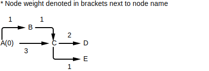
Then, iteratively set the weights and backtracking edges...
⚠️NOTE️️️⚠️
This process is walking the DAG in topological order.
To find the path with the maximum weight, simply walk backward using the backtracking edges from the destination node to the source node. For example, in the DAG above the maximum path that ends at E can be determined by following the backtracking edges from E until A is reached...
The maximum path from A to E is A -> C -> E and the weight of that path is 4 (the weight of E).
This variant of the dynamic programming algorithm uses less memory than the first. For each node encountered, ...
ch5_code/src/find_max_path/FindMaxPath_DPBacktrack.py (lines 41 to 143):
def populate_weights_and_backtrack_pointers(
g: Graph[N, ND, E, ED],
from_node: N,
set_node_data_func: SET_NODE_DATA_FUNC_TYPE,
get_node_data_func: GET_NODE_DATA_FUNC_TYPE,
get_edge_weight_func: GET_EDGE_WEIGHT_FUNC_TYPE
):
processed_nodes = set() # nodes where all parents have been processed AND it has been processed
waiting_nodes = set() # nodes where all parents have been processed BUT it has yet to be processed
unprocessable_nodes = Counter() # nodes that have some parents remaining to be processed (value=# of parents left)
# For all root nodes, add to processed_nodes and set None weight and None backtracking edge.
for node in g.get_nodes():
if g.get_in_degree(node) == 0:
set_node_data_func(node, None, None)
processed_nodes |= {node}
# For all root nodes, add any children where its the only parent to waiting_nodes.
for node in processed_nodes:
for e in g.get_outputs(node):
dst_node = g.get_edge_to(e)
if {g.get_edge_from(e) for e in g.get_inputs(dst_node)}.issubset(processed_nodes):
waiting_nodes |= {dst_node}
# Make sure from_node is a root and set its weight to 0.
assert from_node in processed_nodes
set_node_data_func(from_node, 0.0, None)
# Track how many remaining parents each node in the graph has. Note that the graph's root nodes were already marked
# as processed above.
for node in g.get_nodes():
incoming_nodes = {g.get_edge_from(e) for e in g.get_inputs(node)}
incoming_nodes -= processed_nodes
unprocessable_nodes[node] = len(incoming_nodes)
# Any nodes in waiting_nodes have had all their parents already processed (in processed_nodes). As such, they can
# have their weights and backtracking pointers calculated. They can then be placed into processed_nodes themselves.
while len(waiting_nodes) > 0:
node = next(iter(waiting_nodes))
incoming_nodes = {g.get_edge_from(e) for e in g.get_inputs(node)}
if not incoming_nodes.issubset(processed_nodes):
continue
incoming_accum_weights = {}
for edge in g.get_inputs(node):
src_node = g.get_edge_from(edge)
src_node_weight, _ = get_node_data_func(src_node)
edge_weight = get_edge_weight_func(edge)
# Roots that aren't from_node were initialized to a weight of None -- if you see them, skip them.
if src_node_weight is not None:
incoming_accum_weights[edge] = src_node_weight + edge_weight
if len(incoming_accum_weights) == 0:
max_edge = None
max_weight = None
else:
max_edge = max(incoming_accum_weights, key=lambda e: incoming_accum_weights[e])
max_weight = incoming_accum_weights[max_edge]
set_node_data_func(node, max_weight, max_edge)
# This node has been processed, move it over to processed_nodes.
waiting_nodes.remove(node)
processed_nodes.add(node)
# For outgoing nodes this node points to, if that outgoing node has all of its dependencies in processed_nodes,
# then add it to waiting_nodes (so it can be processed).
outgoing_nodes = {g.get_edge_to(e) for e in g.get_outputs(node)}
for output_node in outgoing_nodes:
unprocessable_nodes[output_node] -= 1
if unprocessable_nodes[output_node] == 0:
waiting_nodes.add(output_node)
def backtrack(
g: Graph[N, ND, E, ED],
end_node: N,
get_node_data_func: GET_NODE_DATA_FUNC_TYPE
) -> List[E]:
next_node = end_node
reverse_path = []
while True:
node = next_node
weight, backtracking_edge = get_node_data_func(node)
if backtracking_edge is None:
break
else:
reverse_path.append(backtracking_edge)
next_node = g.get_edge_from(backtracking_edge)
return reverse_path[::-1] # this is the path in reverse -- reverse it to get it in the correct order
def find_max_path(
graph: Graph[N, ND, E, ED],
start_node: N,
end_node: N,
set_node_data_func: SET_NODE_DATA_FUNC_TYPE,
get_node_data_func: GET_NODE_DATA_FUNC_TYPE,
get_edge_weight_func: GET_EDGE_WEIGHT_FUNC_TYPE
) -> Optional[Tuple[List[E], float]]:
populate_weights_and_backtrack_pointers(
graph,
start_node,
set_node_data_func,
get_node_data_func,
get_edge_weight_func
)
path = backtrack(graph, end_node, get_node_data_func)
if not path:
return None
weight, _ = get_node_data_func(end_node)
return path, weight
Given the following graph...
... the path with the max weight between A and E ...
The edges in blue signify the incoming edge that was selected for that node.
⚠️NOTE️️️⚠️
Note how ...
It's easy to flip this around by reversing the direction the algorithm walks.
↩PREREQUISITES↩
WHAT: Given two sequences, perform sequence alignment and pull out the highest scoring alignment.
WHY: A strong global alignment indicates that the sequences are likely homologous / related.
ALGORITHM:
Determining the best scoring pairwise alignment can be done by generating a DAG of all possible operations at all possible positions in each sequence. Specifically, each operation (indel, match, mismatch) is represented as an edge in the graph, where that edge has a weight. Operations with higher weights are more desirable operations compared to operations with lower weights (e.g. a match is typically more favourable than an indel).
For example, consider a DAG that pits FOUR against CHOIR...
Given this graph, each ...

NOTE: Each edge is labeled with the elements selected from the 1st sequence, 2nd sequence, and edge weight.
This graph is called an alignment graph. A path through the alignment graph from source (top-left) to sink (bottom-right) represents a single alignment, referred to as an alignment path. For example the alignment path representing...
CH-OIR
--FOUR
... is as follows...
NOTE: Each edge is labeled with the elements selected from the 1st sequence, 2nd sequence, and edge weight.
The weight of an alignment path is the sum of its operation weights. Since operations with higher weights are more desirable than those with lower weights, alignment paths with higher weights are more desirable than those with lower weights. As such, out of all the alignment paths possible, the one with the highest weight is the one with the most desirable set of operations.
The highlighted path in the example path above has a weight of -1: -1 + -1 + -1 + 1 + 0 + 1.
ch5_code/src/global_alignment/GlobalAlignment_Graph.py (lines 37 to 78):
def create_global_alignment_graph(
v: List[ELEM],
w: List[ELEM],
weight_lookup: WeightLookup
) -> Graph[Tuple[int, ...], NodeData, str, EdgeData]:
graph = create_grid_graph(
[v, w],
lambda n_id: NodeData(),
lambda src_n_id, dst_n_id, offset, elems: EdgeData(elems[0], elems[1], weight_lookup.lookup(*elems))
)
return graph
def global_alignment(
v: List[ELEM],
w: List[ELEM],
weight_lookup: WeightLookup
) -> Tuple[float, List[str], List[Tuple[ELEM, ELEM]]]:
v_node_count = len(v) + 1
w_node_count = len(w) + 1
graph = create_global_alignment_graph(v, w, weight_lookup)
from_node = (0, 0)
to_node = (v_node_count - 1, w_node_count - 1)
populate_weights_and_backtrack_pointers(
graph,
from_node,
lambda n_id, weight, e_id: graph.get_node_data(n_id).set_weight_and_backtracking_edge(weight, e_id),
lambda n_id: graph.get_node_data(n_id).get_weight_and_backtracking_edge(),
lambda e_id: graph.get_edge_data(e_id).weight
)
final_weight = graph.get_node_data(to_node).weight
edges = backtrack(
graph,
to_node,
lambda n_id: graph.get_node_data(n_id).get_weight_and_backtracking_edge()
)
alignment = []
for e in edges:
ed = graph.get_edge_data(e)
alignment.append((ed.v_elem, ed.w_elem))
return final_weight, edges, alignment
Given the sequences TAAT and GAT and the score matrix...
INDEL=-1.0
A C T G
A 1 0 0 0
C 0 1 0 0
T 0 0 1 0
G 0 0 0 1
... the global alignment is...
TAAT
GA-T
Weight: 1.0
↩PREREQUISITES↩
ALGORITHM:
The following algorithm is essentially the same as the graph algorithm, except that the implementation is much more sympathetic to modern hardware. The alignment graph is represented as a 2D matrix where each element in the matrix represents a node in the alignment graph. The elements are then populated in a predefined topological order, where each element gets populated with the node weight, the chosen backtracking edge, and the elements from that backtracking edge.
Since the alignment graph is a grid, the node weights may be populated either...
In either case, the nodes being walked are guaranteed to have their parent node weights already set.

ch5_code/src/global_alignment/GlobalAlignment_Matrix.py (lines 10 to 73):
def backtrack(
node_matrix: List[List[Any]]
) -> Tuple[float, List[Tuple[ELEM, ELEM]]]:
v_node_idx = len(node_matrix) - 1
w_node_idx = len(node_matrix[0]) - 1
final_weight = node_matrix[v_node_idx][w_node_idx][0]
alignment = []
while v_node_idx != 0 or w_node_idx != 0:
_, elems, backtrack_ptr = node_matrix[v_node_idx][w_node_idx]
if backtrack_ptr == '↓':
v_node_idx -= 1
elif backtrack_ptr == '→':
w_node_idx -= 1
elif backtrack_ptr == '↘':
v_node_idx -= 1
w_node_idx -= 1
alignment.append(elems)
return final_weight, alignment[::-1]
def global_alignment(
v: List[ELEM],
w: List[ELEM],
weight_lookup: WeightLookup
) -> Tuple[float, List[Tuple[ELEM, ELEM]]]:
v_node_count = len(v) + 1
w_node_count = len(w) + 1
node_matrix = []
for v_node_idx in range(v_node_count):
row = []
for w_node_idx in range(w_node_count):
row.append([-1.0, (None, None), '?'])
node_matrix.append(row)
node_matrix[0][0][0] = 0.0 # source node weight
node_matrix[0][0][1] = (None, None) # source node elements (elements don't matter for source node)
node_matrix[0][0][2] = '↘' # source node backtracking edge (direction doesn't matter for source node)
for v_node_idx, w_node_idx in product(range(v_node_count), range(w_node_count)):
parents = []
if v_node_idx > 0 and w_node_idx > 0:
v_elem = v[v_node_idx - 1]
w_elem = w[w_node_idx - 1]
parents.append([
node_matrix[v_node_idx - 1][w_node_idx - 1][0] + weight_lookup.lookup(v_elem, w_elem),
(v_elem, w_elem),
'↘'
])
if v_node_idx > 0:
v_elem = v[v_node_idx - 1]
parents.append([
node_matrix[v_node_idx - 1][w_node_idx][0] + weight_lookup.lookup(v_elem, None),
(v_elem, None),
'↓'
])
if w_node_idx > 0:
w_elem = w[w_node_idx - 1]
parents.append([
node_matrix[v_node_idx][w_node_idx - 1][0] + weight_lookup.lookup(None, w_elem),
(None, w_elem),
'→'
])
if parents: # parents wil be empty if v_node_idx and w_node_idx were both 0
node_matrix[v_node_idx][w_node_idx] = max(parents, key=lambda x: x[0])
return backtrack(node_matrix)
Given the sequences TATTATTAT and AAA and the score matrix...
INDEL=-1.0
A C T G
A 1 0 0 0
C 0 1 0 0
T 0 0 1 0
G 0 0 0 1
... the global alignment is...
TATTATTAT
-A--A--A-
Weight: -3.0
⚠️NOTE️️️⚠️
The standard Levenshtein distance algorithm using a 2D array you remember from over a decade ago is this algorithm: Matrix-based global alignment where matches score 0 but mismatches and indels score -1. The final weight of the alignment is the minimum number of operations required to convert one sequence to another (e.g. swap, insert, delete) -- it'll be negative, ignore the sign.
↩PREREQUISITES↩
ALGORITHM:
The following algorithm extends the matrix algorithm such that it can process much larger graphs at the expense of duplicating some computation work (trading time for space). It relies on two ideas.
Recall that in the matrix implementation of global alignment, node weights are populated in a pre-defined topological order (either row-by-row or column-by-column). Imagine that you've chosen to populate the matrix column-by-column.
The first idea is that, if all you care about is the final weight of the sink node, the matrix implementation technically only needs to keep 2 columns in memory: the column having its node weights populated as well as the previous column.
In other words, the only data needed to calculate the weights of the next column is the weights in the previous column.

ch5_code/src/global_alignment/Global_ForwardSweeper.py (lines 9 to 51):
class ForwardSweeper:
def __init__(self, v: List[ELEM], w: List[ELEM], weight_lookup: WeightLookup, col_backtrack: int = 2):
self.v = v
self.v_node_count = len(v) + 1
self.w = w
self.w_node_count = len(w) + 1
self.weight_lookup = weight_lookup
self.col_backtrack = col_backtrack
self.matrix_v_start_idx = 0 # col
self.matrix = []
self._reset()
def _reset(self):
self.matrix_v_start_idx = 0 # col
col = [-1.0] * self.w_node_count
col[0] = 0.0 # source node weight is 0
for w_idx in range(1, self.w_node_count):
col[w_idx] = col[w_idx - 1] + self.weight_lookup.lookup(None, self.w[w_idx - 1])
self.matrix = [col]
def _step(self):
next_col = [-1.0] * self.w_node_count
next_v_idx = self.matrix_v_start_idx + len(self.matrix)
if len(self.matrix) == self.col_backtrack:
self.matrix.pop(0)
self.matrix_v_start_idx += 1
self.matrix += [next_col]
self.matrix[-1][0] = self.matrix[-2][0] + self.weight_lookup.lookup(self.v[next_v_idx - 1], None) # right penalty for first row of new col
for w_idx in range(1, len(self.w) + 1):
self.matrix[-1][w_idx] = max(
self.matrix[-2][w_idx] + self.weight_lookup.lookup(None, self.w[w_idx - 1]), # right score
self.matrix[-1][w_idx-1] + self.weight_lookup.lookup(self.v[next_v_idx - 1], None), # down score
self.matrix[-2][w_idx-1] + self.weight_lookup.lookup(self.v[next_v_idx - 1], self.w[w_idx - 1]) # diag score
)
def get_col(self, idx: int):
if idx < self.matrix_v_start_idx:
self._reset()
furthest_stored_idx = self.matrix_v_start_idx + len(self.matrix) - 1
for _ in range(furthest_stored_idx, idx):
self._step()
return list(self.matrix[idx - self.matrix_v_start_idx])
Given the sequences TACT and GACGT and the score matrix...
INDEL=-1.0
A C T G
A 1 0 0 0
C 0 1 0 0
T 0 0 1 0
G 0 0 0 1
... the node weights are ...
0.0 -1.0 -2.0 -3.0 -4.0
-1.0 0.0 -1.0 -2.0 -3.0
-2.0 -1.0 1.0 0.0 -1.0
-3.0 -2.0 0.0 2.0 1.0
-4.0 -3.0 -1.0 1.0 2.0
-5.0 -3.0 -2.0 0.0 2.0
The sink node weight (maximum alignment path weight) is 2.0
The second idea is that, for a column, it's possible to find out which node in that column a maximum alignment path travels through without knowing that path beforehand.
Knowing this, a divide-and-conquer algorithm may be used to find that maximum alignment path. Any alignment path must travel from the source node (top-left) to the sink node (bottom-right). If you're able to find a node between the source node and sink node that a maximum alignment path travels through, you can sub-divide the alignment graph into 2.
That is, if you know that a maximum alignment path travels through some node, it's guaranteed that...

By recursively performing this operation, you can pull out all nodes that make up a maximum alignment path:
Finding the edges between these nodes yields the maximum alignment path. To find the edges between the node found at column n and the node found at column n + 1, isolate the alignment graph between those nodes and perform the standard matrix variant of global alignment. The graph will likely be very small, so the computation and space requirements will likely be very low.
ch5_code/src/global_alignment/GlobalAlignment_DivideAndConquer_NodeVariant.py (lines 11 to 40):
def find_max_alignment_path_nodes(
v: List[ELEM],
w: List[ELEM],
weight_lookup: WeightLookup,
buffer: List[Tuple[int, int]],
v_offset: int = 0,
w_offset: int = 0) -> None:
if len(v) == 0 or len(w) == 0:
return
c, r = find_node_that_max_alignment_path_travels_through_at_middle_col(v, w, weight_lookup)
find_max_alignment_path_nodes(v[:c-1], w[:r-1], weight_lookup, buffer, v_offset=0, w_offset=0)
buffer.append((v_offset + c, w_offset + r))
find_max_alignment_path_nodes(v[c:], w[r:], weight_lookup, buffer, v_offset=v_offset+c, w_offset=v_offset+r)
def global_alignment(
v: List[ELEM],
w: List[ELEM],
weight_lookup: WeightLookup
) -> Tuple[float, List[Tuple[ELEM, ELEM]]]:
nodes = [(0, 0)]
find_max_alignment_path_nodes(v, w, weight_lookup, nodes)
weight = 0.0
alignment = []
for (v_idx1, w_idx1), (v_idx2, w_idx2) in zip(nodes, nodes[1:]):
sub_weight, sub_alignment = GlobalAlignment_Matrix.global_alignment(v[v_idx1:v_idx2], w[w_idx1:w_idx2], weight_lookup)
weight += sub_weight
alignment += sub_alignment
return weight, alignment
Given the sequences TACT and GACGT and the score matrix...
INDEL=-1.0
A C T G
A 1 0 0 0
C 0 1 0 0
T 0 0 1 0
G 0 0 0 1
... the global alignment is...
TAC-T
GACGT
Weight: 2.0
To understand how to find which node in a column a maximum alignment path travels through, consider what happens when edge directions are reversed in an alignment graph. When edge directions are reversed, the alignment graph essentially becomes the alignment graph for the reversed sequences. For example, reversing the edges for the alignment graph of SNACK and AJAX is essentially the same as the alignment graph for KCANS (reverse of SNACK) and XAJA (reverse of AJAX)...

Between an alignment graph and its reversed edge variant, a maximum alignment path should travel through the same set of nodes. Notice how in the following example, ...
the maximum alignment path in both alignment graphs have the same edges.
the sink node weight in both alignment graphs are the same.
for any node that the maximum alignment path travels through, taking the weight of that node from both alignment graphs and adding them together results in the sink node weight.
for any node that the maximum alignment path DOES NOT travel through, taking the weight of that node from both alignment graphs and adding them together results in LESS THAN the sink node weight.
Insights #3 and #4 in the list above are the key for this algorithm. Consider an alignment graph getting split down a column into two. The first half has edges traveling in the normal direction but the second half has its edges reversed...
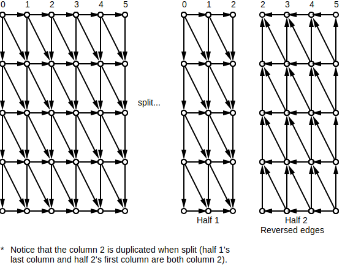
Populate node weights for both halves. Then, pair up half 1's last column with half 2's first column. For each row in the pair, add together the node weights in that row. The row with the maximum sum is for a node that a maximum alignment path travels through (insight #4 above). That maximum sum will always end up being the weight of the sink node in the original non-split alignment graph (insight #3 above).
One way to think about what's happening above is that the algorithm is converging on to the same answer but at a different spot in the alignment graph (the same edge weights are being added). Normally the algorithm converges on to the bottom-right node of the alignment graph. If it were to instead converge on the column just before, the answer would be the same, but the node's position in that column may be different -- it may be any node that ultimately drives to the bottom-right node.
Given that there may be multiple maximum alignment paths for an alignment graph, there may be multiple nodes found per column. Each found node may be for a different maximum alignment path or the same maximum alignment path.
Ultimately, this entire process may be combined with the first idea (only need the previous column in memory to calculate the next column) such that the algorithm requires much lower memory requirements. That is, to find the nodes in a column which maximum alignment paths travel through, the...
ch5_code/src/global_alignment/Global_SweepCombiner.py (lines 10 to 19):
class SweepCombiner:
def __init__(self, v: List[ELEM], w: List[ELEM], weight_lookup: WeightLookup):
self.forward_sweeper = ForwardSweeper(v, w, weight_lookup)
self.reverse_sweeper = ReverseSweeper(v, w, weight_lookup)
def get_col(self, idx: int):
fcol = self.forward_sweeper.get_col(idx)
rcol = self.reverse_sweeper.get_col(idx)
return [a + b for a, b in zip(fcol, rcol)]
Given the sequences TACT and GACGT and the score matrix...
INDEL=-1.0
A C T G
A 1 0 0 0
C 0 1 0 0
T 0 0 1 0
G 0 0 0 1
... the combined node weights at column 3 are ...
-6.0
-4.0
-1.0
2.0
2.0
-1.0
To recap, the full divide-and-conquer algorithm is as follows: For the middle column in an alignment graph, find a node that a maximum alignment path travels through. Then, sub-divide the alignment graph based on that node. Recursively repeat this process on each sub-division until you have a node from each column -- these are the nodes in a maximum alignment path. The edges between these found nodes can be determined by finding a maximum alignment path between each found node and its neighbouring found node. Concatenate these edges to construct the path.
ch5_code/src/global_alignment/Global_FindNodeThatMaxAlignmentPathTravelsThroughAtColumn.py (lines 10 to 29):
def find_node_that_max_alignment_path_travels_through_at_col(
v: List[ELEM],
w: List[ELEM],
weight_lookup: WeightLookup,
col: int
) -> Tuple[int, int]:
col_vals = SweepCombiner(v, w, weight_lookup).get_col(col)
row, _ = max(enumerate(col_vals), key=lambda x: x[1])
return col, row
def find_node_that_max_alignment_path_travels_through_at_middle_col(
v: List[ELEM],
w: List[ELEM],
weight_lookup: WeightLookup
) -> Tuple[int, int]:
v_node_count = len(v) + 1
middle_col_idx = v_node_count // 2
return find_node_that_max_alignment_path_travels_through_at_col(v, w, weight_lookup, middle_col_idx)
Given the sequences TACT and GACGT and the score matrix...
INDEL=-1.0
A C T G
A 1 0 0 0
C 0 1 0 0
T 0 0 1 0
G 0 0 0 1
... a maximum alignment path is guaranteed to travel through (3, 3).
ch5_code/src/global_alignment/GlobalAlignment_DivideAndConquer_NodeVariant.py (lines 11 to 40):
def find_max_alignment_path_nodes(
v: List[ELEM],
w: List[ELEM],
weight_lookup: WeightLookup,
buffer: List[Tuple[int, int]],
v_offset: int = 0,
w_offset: int = 0) -> None:
if len(v) == 0 or len(w) == 0:
return
c, r = find_node_that_max_alignment_path_travels_through_at_middle_col(v, w, weight_lookup)
find_max_alignment_path_nodes(v[:c-1], w[:r-1], weight_lookup, buffer, v_offset=0, w_offset=0)
buffer.append((v_offset + c, w_offset + r))
find_max_alignment_path_nodes(v[c:], w[r:], weight_lookup, buffer, v_offset=v_offset+c, w_offset=v_offset+r)
def global_alignment(
v: List[ELEM],
w: List[ELEM],
weight_lookup: WeightLookup
) -> Tuple[float, List[Tuple[ELEM, ELEM]]]:
nodes = [(0, 0)]
find_max_alignment_path_nodes(v, w, weight_lookup, nodes)
weight = 0.0
alignment = []
for (v_idx1, w_idx1), (v_idx2, w_idx2) in zip(nodes, nodes[1:]):
sub_weight, sub_alignment = GlobalAlignment_Matrix.global_alignment(v[v_idx1:v_idx2], w[w_idx1:w_idx2], weight_lookup)
weight += sub_weight
alignment += sub_alignment
return weight, alignment
Given the sequences TACT and GACGT and the score matrix...
INDEL=-1.0
A C T G
A 1 0 0 0
C 0 1 0 0
T 0 0 1 0
G 0 0 0 1
... the global alignment is...
TAC-T
GACGT
Weight: 2.0
A slightly more complicated but also more elegant / efficient solution is to extend the algorithm to find the edges for the nodes that it finds. In other words, rather than finding just nodes that maximum alignment paths travel through, find the edges where those nodes are the edge source (node that the edge starts from).
The algorithm finds all nodes that a maximum alignment path travels through at both column n and column n + 1. For a found node in column n, it's guaranteed that at least one of its immediate neighbours is also a found node. It may be that the node immediately to the ...
Of the immediate neighbours that are also found nodes, the one forming the edge with the highest weight is the edge that a maximum alignment path travels through.
ch5_code/src/global_alignment/Global_FindEdgeThatMaxAlignmentPathTravelsThroughAtColumn.py (lines 10 to 65):
def find_edge_that_max_alignment_path_travels_through_at_col(
v: List[ELEM],
w: List[ELEM],
weight_lookup: WeightLookup,
col: int
) -> Tuple[Tuple[int, int], Tuple[int, int]]:
v_node_count = len(v) + 1
w_node_count = len(w) + 1
sc = SweepCombiner(v, w, weight_lookup)
# Get max node in column -- max alignment path guaranteed to go through here.
col_vals = sc.get_col(col)
row, _ = max(enumerate(col_vals), key=lambda x: x[1])
# Check node immediately to the right, down, right-down (diag) -- the ones with the max value MAY form the edge that
# the max alignment path goes through. Recall that the max value will be the same max value as the one from col_vals
# (weight of the final alignment path / sink node in the full alignment graph).
#
# Of the ones WITH the max value, check the weights formed by each edge. The one with the highest edge weight is the
# edge that the max alignment path goes through (if there's more than 1, it means there's more than 1 max alignment
# path -- one is picked at random).
neighbours = []
next_col_vals = sc.get_col(col + 1) if col + 1 < v_node_count else None # very quick due to prev call to get_col()
if col + 1 < v_node_count:
right_weight = next_col_vals[row]
right_node = (col + 1, row)
v_elem = v[col - 1]
w_elem = None
edge_weight = weight_lookup.lookup(v_elem, w_elem)
neighbours += [(right_weight, edge_weight, right_node)]
if row + 1 < w_node_count:
down_weight = col_vals[row + 1]
down_node = (col, row + 1)
v_elem = None
w_elem = w[row - 1]
edge_weight = weight_lookup.lookup(v_elem, w_elem)
neighbours += [(down_weight, edge_weight, down_node)]
if col + 1 < v_node_count and row + 1 < w_node_count:
downright_weight = next_col_vals[row + 1]
downright_node = (col + 1, row + 1)
v_elem = v[col - 1]
w_elem = w[row - 1]
edge_weight = weight_lookup.lookup(v_elem, w_elem)
neighbours += [(downright_weight, edge_weight, downright_node)]
neighbours.sort(key=lambda x: x[:2]) # sort by weight, then edge weight
_, _, (col2, row2) = neighbours[-1]
return (col, row), (col2, row2)
def find_edge_that_max_alignment_path_travels_through_at_middle_col(
v: List[ELEM],
w: List[ELEM],
weight_lookup: WeightLookup
) -> Tuple[Tuple[int, int], Tuple[int, int]]:
v_node_count = len(v) + 1
middle_col_idx = (v_node_count - 1) // 2
return find_edge_that_max_alignment_path_travels_through_at_col(v, w, weight_lookup, middle_col_idx)
Given the sequences TACT and GACGT and the score matrix...
INDEL=-1.0
A C T G
A 1 0 0 0
C 0 1 0 0
T 0 0 1 0
G 0 0 0 1
... a maximum alignment path is guaranteed to travel through the edge (3, 3), (3, 4).
The recursive sub-division process happens just as before, but this time with edges. Finding the maximum alignment path from edges provides two distinct advantages over the previous method of finding the maximum alignment path from nodes:
Each sub-division results in one of the sub-graphs being smaller.

Since edges are being pulled out, the step that path finds between two neighbouring found nodes is no longer required. This is because sub-division of the alignment graph happens on edges rather than nodes -- eventually all edges in the path will be walked as part of the recursive subdivision.
ch5_code/src/global_alignment/GlobalAlignment_DivideAndConquer_EdgeVariant.py (lines 10 to 80):
def find_max_alignment_path_edges(
v: List[ELEM],
w: List[ELEM],
weight_lookup: WeightLookup,
top: int,
bottom: int,
left: int,
right: int,
output: List[str]):
if left == right:
for i in range(top, bottom):
output += ['↓']
return
if top == bottom:
for i in range(left, right):
output += ['→']
return
(col1, row1), (col2, row2) = find_edge_that_max_alignment_path_travels_through_at_middle_col(v[left:right], w[top:bottom], weight_lookup)
middle_col = left + col1
middle_row = top + row1
find_max_alignment_path_edges(v, w, weight_lookup, top, middle_row, left, middle_col, output)
if row1 + 1 == row2 and col1 + 1 == col2:
edge_dir = '↘'
elif row1 == row2 and col1 + 1 == col2:
edge_dir = '→'
elif row1 + 1 == row2 and col1 == col2:
edge_dir = '↓'
else:
raise ValueError()
if edge_dir == '→' or edge_dir == '↘':
middle_col += 1
if edge_dir == '↓' or edge_dir == '↘':
middle_row += 1
output += [edge_dir]
find_max_alignment_path_edges(v, w, weight_lookup, middle_row, bottom, middle_col, right, output)
def global_alignment(
v: List[ELEM],
w: List[ELEM],
weight_lookup: WeightLookup
) -> Tuple[float, List[Tuple[ELEM, ELEM]]]:
edges = []
find_max_alignment_path_edges(v, w, weight_lookup, 0, len(w), 0, len(v), edges)
weight = 0.0
alignment = []
v_idx = 0
w_idx = 0
for edge in edges:
if edge == '→':
v_elem = v[v_idx]
w_elem = None
alignment.append((v_elem, w_elem))
weight += weight_lookup.lookup(v_elem, w_elem)
v_idx += 1
elif edge == '↓':
v_elem = None
w_elem = w[w_idx]
alignment.append((v_elem, w_elem))
weight += weight_lookup.lookup(v_elem, w_elem)
w_idx += 1
elif edge == '↘':
v_elem = v[v_idx]
w_elem = w[w_idx]
alignment.append((v_elem, w_elem))
weight += weight_lookup.lookup(v_elem, w_elem)
v_idx += 1
w_idx += 1
return weight, alignment
Given the sequences TACT and GACGT and the score matrix...
INDEL=-1.0
A C T G
A 1 0 0 0
C 0 1 0 0
T 0 0 1 0
G 0 0 0 1
... the global alignment is...
TAC-T
GACGT
Weight: 2.0
⚠️NOTE️️️⚠️
The other types of sequence alignment detailed in the sibling sections below don't implement a version of this algorithm. It's fairly straight forward to adapt this algorithm to support those sequence alignment types, but I didn't have the time to do it -- I almost completed a local alignment version but backed out. The same high-level logic applies to those other alignment types: Converge on positions to find nodes/edges in the maximal alignment path and sub-divide on those positions.
↩PREREQUISITES↩
WHAT: Given two sequences, for all possible substrings of the first sequence, pull out the highest scoring alignment between that substring that the second sequence.
In other words, find the substring within the second sequence that produces the highest scoring alignment with the first sequence. For example, given the sequences GGTTTTTAA and TTCTT, it may be that TTCTT (second sequence) has the highest scoring alignment with TTTTT (substring of the first sequence)...
TTC-TT
TT-TTT
WHY: Searching for a gene's sequence in some larger genome may be problematic because of mutation. The gene sequence being searched for may be slightly off from the gene sequence in the genome.
In the presence of minor mutations, a standard search will fail where a fitting alignment will still be able to find that gene.
↩PREREQUISITES↩
The graph algorithm for fitting alignment is an extension of the graph algorithm for global alignment. Construct the DAG as you would for global alignment, but for each node...

NOTE: Orange edges are "free rides" from source / Purple edges are "free rides" to sink.
These newly added edges represent hops in the graph -- 0 weight "free rides" to other nodes. The nodes at the destination of each one of these edges will never go below 0: When selecting a backtracking edge, the "free ride" edge will always be chosen over other edges that make the node weight negative.
When finding a maximum alignment path, these "free rides" make it so that the path ...
such that if the first sequence is wedged somewhere within the second sequence, that maximum alignment path will be targeted in such a way that it homes in on it.
ch5_code/src/fitting_alignment/FittingAlignment_Graph.py (lines 37 to 95):
def create_fitting_alignment_graph(
v: List[ELEM],
w: List[ELEM],
weight_lookup: WeightLookup
) -> Graph[Tuple[int, ...], NodeData, str, EdgeData]:
graph = create_grid_graph(
[v, w],
lambda n_id: NodeData(),
lambda src_n_id, dst_n_id, offset, elems: EdgeData(elems[0], elems[1], weight_lookup.lookup(*elems))
)
v_node_count = len(v) + 1
w_node_count = len(w) + 1
source_node = 0, 0
source_create_free_ride_edge_id_func = unique_id_generator('FREE_RIDE_SOURCE')
for node in product([0], range(w_node_count)):
if node == source_node:
continue
e = source_create_free_ride_edge_id_func()
graph.insert_edge(e, source_node, node, EdgeData(None, None, 0.0))
sink_node = v_node_count - 1, w_node_count - 1
sink_create_free_ride_edge_id_func = unique_id_generator('FREE_RIDE_SINK')
for node in product([v_node_count - 1], range(w_node_count)):
if node == sink_node:
continue
e = sink_create_free_ride_edge_id_func()
graph.insert_edge(e, node, sink_node, EdgeData(None, None, 0.0))
return graph
def fitting_alignment(
v: List[ELEM],
w: List[ELEM],
weight_lookup: WeightLookup
) -> Tuple[float, List[str], List[Tuple[ELEM, ELEM]]]:
v_node_count = len(v) + 1
w_node_count = len(w) + 1
graph = create_fitting_alignment_graph(v, w, weight_lookup)
from_node = (0, 0)
to_node = (v_node_count - 1, w_node_count - 1)
populate_weights_and_backtrack_pointers(
graph,
from_node,
lambda n_id, weight, e_id: graph.get_node_data(n_id).set_weight_and_backtracking_edge(weight, e_id),
lambda n_id: graph.get_node_data(n_id).get_weight_and_backtracking_edge(),
lambda e_id: graph.get_edge_data(e_id).weight
)
final_weight = graph.get_node_data(to_node).weight
edges = backtrack(
graph,
to_node,
lambda n_id: graph.get_node_data(n_id).get_weight_and_backtracking_edge()
)
alignment_edges = list(filter(lambda e: not e.startswith('FREE_RIDE'), edges)) # remove free rides from list
alignment = []
for e in alignment_edges:
ed = graph.get_edge_data(e)
alignment.append((ed.v_elem, ed.w_elem))
return final_weight, edges, alignment
Given the sequences AGAC and TAAGAACT and the score matrix...
INDEL=-1.0
A C T G
A 1 -1 -1 -1
C -1 1 -1 -1
T -1 -1 1 -1
G -1 -1 -1 1
... the global alignment is...
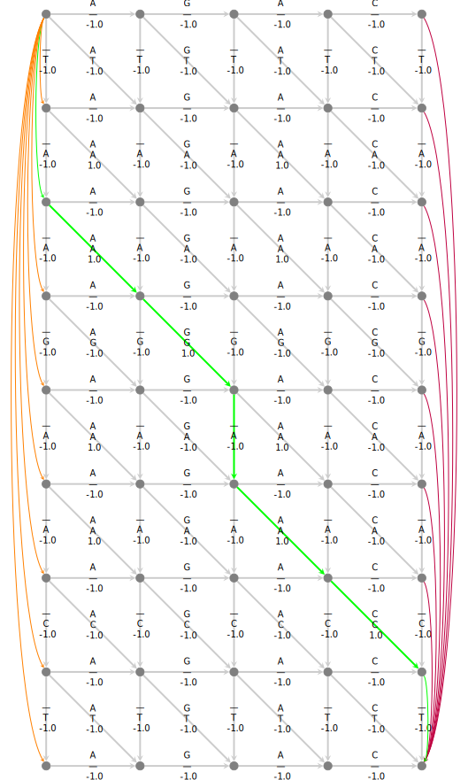
AG-AC
AGAAC
Weight: 3.0
↩PREREQUISITES↩
ALGORITHM:
The following algorithm is an extension to global alignment's matrix algorithm to properly account for the "free ride" edges required by fitting alignment. It's essentially the same as the graph algorithm, except that the implementation is much more sympathetic to modern hardware.
ch5_code/src/fitting_alignment/FittingAlignment_Matrix.py (lines 10 to 93):
def backtrack(
node_matrix: List[List[Any]]
) -> Tuple[float, List[Tuple[ELEM, ELEM]]]:
v_node_idx = len(node_matrix) - 1
w_node_idx = len(node_matrix[0]) - 1
final_weight = node_matrix[v_node_idx][w_node_idx][0]
alignment = []
while v_node_idx != 0 or w_node_idx != 0:
_, elems, backtrack_ptr = node_matrix[v_node_idx][w_node_idx]
if backtrack_ptr == '↓':
v_node_idx -= 1
alignment.append(elems)
elif backtrack_ptr == '→':
w_node_idx -= 1
alignment.append(elems)
elif backtrack_ptr == '↘':
v_node_idx -= 1
w_node_idx -= 1
alignment.append(elems)
elif isinstance(backtrack_ptr, tuple):
v_node_idx = backtrack_ptr[0]
w_node_idx = backtrack_ptr[1]
return final_weight, alignment[::-1]
def fitting_alignment(
v: List[ELEM],
w: List[ELEM],
weight_lookup: WeightLookup
) -> Tuple[float, List[Tuple[ELEM, ELEM]]]:
v_node_count = len(v) + 1
w_node_count = len(w) + 1
node_matrix = []
for v_node_idx in range(v_node_count):
row = []
for w_node_idx in range(w_node_count):
row.append([-1.0, (None, None), '?'])
node_matrix.append(row)
node_matrix[0][0][0] = 0.0 # source node weight
node_matrix[0][0][1] = (None, None) # source node elements (elements don't matter for source node)
node_matrix[0][0][2] = '↘' # source node backtracking edge (direction doesn't matter for source node)
for v_node_idx, w_node_idx in product(range(v_node_count), range(w_node_count)):
parents = []
if v_node_idx > 0 and w_node_idx > 0:
v_elem = v[v_node_idx - 1]
w_elem = w[w_node_idx - 1]
parents.append([
node_matrix[v_node_idx - 1][w_node_idx - 1][0] + weight_lookup.lookup(v_elem, w_elem),
(v_elem, w_elem),
'↘'
])
if v_node_idx > 0:
v_elem = v[v_node_idx - 1]
parents.append([
node_matrix[v_node_idx - 1][w_node_idx][0] + weight_lookup.lookup(v_elem, None),
(v_elem, None),
'↓'
])
if w_node_idx > 0:
w_elem = w[w_node_idx - 1]
parents.append([
node_matrix[v_node_idx][w_node_idx - 1][0] + weight_lookup.lookup(None, w_elem),
(None, w_elem),
'→'
])
# If first column but not source node, consider free-ride from source node
if v_node_idx == 0 and w_node_idx != 0:
parents.append([
0.0,
(None, None),
(0, 0) # jump to source
])
# If sink node, consider free-rides coming from every node in last column that isn't sink node
if v_node_idx == v_node_count - 1 and w_node_idx == w_node_count - 1:
for w_node_idx_from in range(w_node_count - 1):
parents.append([
node_matrix[v_node_idx][w_node_idx_from][0] + 0.0,
(None, None),
(v_node_idx, w_node_idx_from) # jump to this position
])
if parents: # parents will be empty if v_node_idx and w_node_idx were both 0
node_matrix[v_node_idx][w_node_idx] = max(parents, key=lambda x: x[0])
return backtrack(node_matrix)
Given the sequences AGAC and TAAGAACT and the score matrix...
INDEL=-1.0
A C T G
A 1 -1 -1 -1
C -1 1 -1 -1
T -1 -1 1 -1
G -1 -1 -1 1
... the fitting alignment is...
AG-AC
AGAAC
Weight: 3.0
↩PREREQUISITES↩
WHAT: Given two sequences, for all possible substrings that ...
... , pull out the highest scoring alignment.
In other words, find the overlap between the two sequences that produces the highest scoring alignment. For example, given the sequences CCAAGGCT and GGTTTTTAA, it may be that the substrings with the highest scoring alignment are GGCT (tail of the first sequence) and GGT (head of the second sequence)...
GGCT
GG-T
WHY: DNA sequencers frequently produce fragments with sequencing errors. Overlap alignments may be used to detect if those fragment overlap even in the presence of sequencing errors and minor mutations, making assembly less tedious (overlap graphs / de Bruijn graphs may turn out less tangled).
↩PREREQUISITES↩
The graph algorithm for overlap alignment is an extension of the graph algorithm for global alignment. Construct the DAG as you would for global alignment, but for each node...
NOTE: Orange edges are "free rides" from source / Purple edges are "free rides" to sink.
These newly added edges represent hops in the graph -- 0 weight "free rides" to other nodes. The nodes at the destination of each one of these edges will never go below 0: When selecting a backtracking edge, the "free ride" edge will always be chosen over other edges that make the node weight negative.
When finding a maximum alignment path, these "free rides" make it so that the path ...
such that if there is a matching overlap between the sequences, that maximum alignment path will be targeted in such a way that maximizes that overlap.
ch5_code/src/overlap_alignment/OverlapAlignment_Graph.py (lines 37 to 95):
def create_overlap_alignment_graph(
v: List[ELEM],
w: List[ELEM],
weight_lookup: WeightLookup
) -> Graph[Tuple[int, ...], NodeData, str, EdgeData]:
graph = create_grid_graph(
[v, w],
lambda n_id: NodeData(),
lambda src_n_id, dst_n_id, offset, elems: EdgeData(elems[0], elems[1], weight_lookup.lookup(*elems))
)
v_node_count = len(v) + 1
w_node_count = len(w) + 1
source_node = 0, 0
source_create_free_ride_edge_id_func = unique_id_generator('FREE_RIDE_SOURCE')
for node in product([0], range(w_node_count)):
if node == source_node:
continue
e = source_create_free_ride_edge_id_func()
graph.insert_edge(e, source_node, node, EdgeData(None, None, 0.0))
sink_node = v_node_count - 1, w_node_count - 1
sink_create_free_ride_edge_id_func = unique_id_generator('FREE_RIDE_SINK')
for node in product(range(v_node_count), [w_node_count - 1]):
if node == sink_node:
continue
e = sink_create_free_ride_edge_id_func()
graph.insert_edge(e, node, sink_node, EdgeData(None, None, 0.0))
return graph
def overlap_alignment(
v: List[ELEM],
w: List[ELEM],
weight_lookup: WeightLookup
) -> Tuple[float, List[str], List[Tuple[ELEM, ELEM]]]:
v_node_count = len(v) + 1
w_node_count = len(w) + 1
graph = create_overlap_alignment_graph(v, w, weight_lookup)
from_node = (0, 0)
to_node = (v_node_count - 1, w_node_count - 1)
populate_weights_and_backtrack_pointers(
graph,
from_node,
lambda n_id, weight, e_id: graph.get_node_data(n_id).set_weight_and_backtracking_edge(weight, e_id),
lambda n_id: graph.get_node_data(n_id).get_weight_and_backtracking_edge(),
lambda e_id: graph.get_edge_data(e_id).weight
)
final_weight = graph.get_node_data(to_node).weight
edges = backtrack(
graph,
to_node,
lambda n_id: graph.get_node_data(n_id).get_weight_and_backtracking_edge()
)
alignment_edges = list(filter(lambda e: not e.startswith('FREE_RIDE'), edges)) # remove free rides from list
alignment = []
for e in alignment_edges:
ed = graph.get_edge_data(e)
alignment.append((ed.v_elem, ed.w_elem))
return final_weight, edges, alignment
Given the sequences AGACAAAT and GGGGAAAC and the score matrix...
INDEL=-1.0
A C T G
A 1 -1 -1 -1
C -1 1 -1 -1
T -1 -1 1 -1
G -1 -1 -1 1
... the global alignment is...
AGAC
A-AC
Weight: 2.0
↩PREREQUISITES↩
ALGORITHM:
The following algorithm is an extension to global alignment's matrix algorithm to properly account for the "free ride" edges required by overlap alignment. It's essentially the same as the graph algorithm, except that the implementation is much more sympathetic to modern hardware.
ch5_code/src/overlap_alignment/OverlapAlignment_Matrix.py (lines 10 to 93):
def backtrack(
node_matrix: List[List[Any]]
) -> Tuple[float, List[Tuple[ELEM, ELEM]]]:
v_node_idx = len(node_matrix) - 1
w_node_idx = len(node_matrix[0]) - 1
final_weight = node_matrix[v_node_idx][w_node_idx][0]
alignment = []
while v_node_idx != 0 or w_node_idx != 0:
_, elems, backtrack_ptr = node_matrix[v_node_idx][w_node_idx]
if backtrack_ptr == '↓':
v_node_idx -= 1
alignment.append(elems)
elif backtrack_ptr == '→':
w_node_idx -= 1
alignment.append(elems)
elif backtrack_ptr == '↘':
v_node_idx -= 1
w_node_idx -= 1
alignment.append(elems)
elif isinstance(backtrack_ptr, tuple):
v_node_idx = backtrack_ptr[0]
w_node_idx = backtrack_ptr[1]
return final_weight, alignment[::-1]
def overlap_alignment(
v: List[ELEM],
w: List[ELEM],
weight_lookup: WeightLookup
) -> Tuple[float, List[Tuple[ELEM, ELEM]]]:
v_node_count = len(v) + 1
w_node_count = len(w) + 1
node_matrix = []
for v_node_idx in range(v_node_count):
row = []
for w_node_idx in range(w_node_count):
row.append([-1.0, (None, None), '?'])
node_matrix.append(row)
node_matrix[0][0][0] = 0.0 # source node weight
node_matrix[0][0][1] = (None, None) # source node elements (elements don't matter for source node)
node_matrix[0][0][2] = '↘' # source node backtracking edge (direction doesn't matter for source node)
for v_node_idx, w_node_idx in product(range(v_node_count), range(w_node_count)):
parents = []
if v_node_idx > 0 and w_node_idx > 0:
v_elem = v[v_node_idx - 1]
w_elem = w[w_node_idx - 1]
parents.append([
node_matrix[v_node_idx - 1][w_node_idx - 1][0] + weight_lookup.lookup(v_elem, w_elem),
(v_elem, w_elem),
'↘'
])
if v_node_idx > 0:
v_elem = v[v_node_idx - 1]
parents.append([
node_matrix[v_node_idx - 1][w_node_idx][0] + weight_lookup.lookup(v_elem, None),
(v_elem, None),
'↓'
])
if w_node_idx > 0:
w_elem = w[w_node_idx - 1]
parents.append([
node_matrix[v_node_idx][w_node_idx - 1][0] + weight_lookup.lookup(None, w_elem),
(None, w_elem),
'→'
])
# If first column but not source node, consider free-ride from source node
if v_node_idx == 0 and w_node_idx != 0:
parents.append([
0.0,
(None, None),
(0, 0) # jump to source
])
# If sink node, consider free-rides coming from every node in last row that isn't sink node
if v_node_idx == v_node_count - 1 and w_node_idx == w_node_count - 1:
for v_node_idx_from in range(v_node_count - 1):
parents.append([
node_matrix[v_node_idx_from][w_node_idx][0] + 0.0,
(None, None),
(v_node_idx_from, w_node_idx) # jump to this position
])
if parents: # parents will be empty if v_node_idx and w_node_idx were both 0
node_matrix[v_node_idx][w_node_idx] = max(parents, key=lambda x: x[0])
return backtrack(node_matrix)
Given the sequences AGACAAAT and GGGGAAAC and the score matrix...
INDEL=-1.0
A C T G
A 1 -1 -1 -1
C -1 1 -1 -1
T -1 -1 1 -1
G -1 -1 -1 1
... the overlap alignment is...
AGAC
AAAC
Weight: 2.0
↩PREREQUISITES↩
WHAT: Given two sequences, for all possible substrings of those sequences, pull out the highest scoring alignment. For example, given the sequences GGTTTTTAA and CCTTCTTAA, it may be that the substrings with the highest scoring alignment are TTTTT (substring of first sequence) and TTCTT (substring of second sequence) ...
TTC-TT
TT-TTT
WHY: Two biological sequences may have strongly related parts rather than being strongly related in their entirety. For example, a class of proteins called NRP synthetase creates peptides without going through a ribosome (non-ribosomal peptides). Each NRP synthetase outputs a specific peptide, where each amino acid in that peptide is pumped out by the unique part of the NRP synthetase responsible for it.
These unique parts are referred to adenylation domains (multiple adenylation domains, 1 per amino acid in created peptide). While the overall sequence between two types of NRP synthetase differ greatly, the sequences between their adenylation domains are similar -- only a handful of positions in an adenylation domain sequence define the type of amino acid it pumps out. As such, local alignment may be used to identify these adenylation domains across different types of NRP synthetase.
⚠️NOTE️️️⚠️
The WHY section above is giving a high-level use-case for local alignment. If you actually want to perform that use-case you need to get familiar with the protein scoring section: Algorithms/Sequence Alignment/Protein Scoring.
↩PREREQUISITES↩
ALGORITHM:
The graph algorithm for local alignment is an extension of the graph algorithm for global alignment. Construct the DAG as you would for global alignment, but for each node...

NOTE: Orange edges are "free rides" from source / Purple edges are "free rides" to sink.
These newly added edges represent hops in the graph -- 0 weight "free rides" to other nodes. The nodes at the destination of each one of these edges will never go below 0: When selecting a backtracking edge, the "free ride" edge will always be chosen over other edges that make the node weight negative.
When finding a maximum alignment path, these "free rides" make it so that if either the...
The maximum alignment path will be targeted in such a way that it homes on the substring within each sequence that produces the highest scoring alignment.
ch5_code/src/local_alignment/LocalAlignment_Graph.py (lines 38 to 96):
def create_local_alignment_graph(
v: List[ELEM],
w: List[ELEM],
weight_lookup: WeightLookup
) -> Graph[Tuple[int, ...], NodeData, str, EdgeData]:
graph = create_grid_graph(
[v, w],
lambda n_id: NodeData(),
lambda src_n_id, dst_n_id, offset, elems: EdgeData(elems[0], elems[1], weight_lookup.lookup(*elems))
)
v_node_count = len(v) + 1
w_node_count = len(w) + 1
source_node = 0, 0
source_create_free_ride_edge_id_func = unique_id_generator('FREE_RIDE_SOURCE')
for node in product(range(v_node_count), range(w_node_count)):
if node == source_node:
continue
e = source_create_free_ride_edge_id_func()
graph.insert_edge(e, source_node, node, EdgeData(None, None, 0.0))
sink_node = v_node_count - 1, w_node_count - 1
sink_create_free_ride_edge_id_func = unique_id_generator('FREE_RIDE_SINK')
for node in product(range(v_node_count), range(w_node_count)):
if node == sink_node:
continue
e = sink_create_free_ride_edge_id_func()
graph.insert_edge(e, node, sink_node, EdgeData(None, None, 0.0))
return graph
def local_alignment(
v: List[ELEM],
w: List[ELEM],
weight_lookup: WeightLookup
) -> Tuple[float, List[str], List[Tuple[ELEM, ELEM]]]:
v_node_count = len(v) + 1
w_node_count = len(w) + 1
graph = create_local_alignment_graph(v, w, weight_lookup)
from_node = (0, 0)
to_node = (v_node_count - 1, w_node_count - 1)
populate_weights_and_backtrack_pointers(
graph,
from_node,
lambda n_id, weight, e_id: graph.get_node_data(n_id).set_weight_and_backtracking_edge(weight, e_id),
lambda n_id: graph.get_node_data(n_id).get_weight_and_backtracking_edge(),
lambda e_id: graph.get_edge_data(e_id).weight
)
final_weight = graph.get_node_data(to_node).weight
edges = backtrack(
graph,
to_node,
lambda n_id: graph.get_node_data(n_id).get_weight_and_backtracking_edge()
)
alignment_edges = list(filter(lambda e: not e.startswith('FREE_RIDE'), edges)) # remove free rides from list
alignment = []
for e in alignment_edges:
ed = graph.get_edge_data(e)
alignment.append((ed.v_elem, ed.w_elem))
return final_weight, edges, alignment
Given the sequences TAGAACT and CGAAG and the score matrix...
INDEL=-1.0
A C T G
A 1 -1 -1 -1
C -1 1 -1 -1
T -1 -1 1 -1
G -1 -1 -1 1
... the local alignment is...
GAA
GAA
Weight: 3.0
↩PREREQUISITES↩
ALGORITHM:
The following algorithm is an extension to global alignment's matrix algorithm to properly account for the "free ride" edges required by local alignment. It's essentially the same as the graph algorithm, except that the implementation is much more sympathetic to modern hardware.
ch5_code/src/local_alignment/LocalAlignment_Matrix.py (lines 10 to 95):
def backtrack(
node_matrix: List[List[Any]]
) -> Tuple[float, List[Tuple[ELEM, ELEM]]]:
v_node_idx = len(node_matrix) - 1
w_node_idx = len(node_matrix[0]) - 1
final_weight = node_matrix[v_node_idx][w_node_idx][0]
alignment = []
while v_node_idx != 0 or w_node_idx != 0:
_, elems, backtrack_ptr = node_matrix[v_node_idx][w_node_idx]
if backtrack_ptr == '↓':
v_node_idx -= 1
alignment.append(elems)
elif backtrack_ptr == '→':
w_node_idx -= 1
alignment.append(elems)
elif backtrack_ptr == '↘':
v_node_idx -= 1
w_node_idx -= 1
alignment.append(elems)
elif isinstance(backtrack_ptr, tuple):
v_node_idx = backtrack_ptr[0]
w_node_idx = backtrack_ptr[1]
return final_weight, alignment[::-1]
def local_alignment(
v: List[ELEM],
w: List[ELEM],
weight_lookup: WeightLookup
) -> Tuple[float, List[Tuple[ELEM, ELEM]]]:
v_node_count = len(v) + 1
w_node_count = len(w) + 1
node_matrix = []
for v_node_idx in range(v_node_count):
row = []
for w_node_idx in range(w_node_count):
row.append([-1.0, (None, None), '?'])
node_matrix.append(row)
node_matrix[0][0][0] = 0.0 # source node weight
node_matrix[0][0][1] = (None, None) # source node elements (elements don't matter for source node)
node_matrix[0][0][2] = '↘' # source node backtracking edge (direction doesn't matter for source node)
for v_node_idx, w_node_idx in product(range(v_node_count), range(w_node_count)):
parents = []
if v_node_idx > 0 and w_node_idx > 0:
v_elem = v[v_node_idx - 1]
w_elem = w[w_node_idx - 1]
parents.append([
node_matrix[v_node_idx - 1][w_node_idx - 1][0] + weight_lookup.lookup(v_elem, w_elem),
(v_elem, w_elem),
'↘'
])
if v_node_idx > 0:
v_elem = v[v_node_idx - 1]
parents.append([
node_matrix[v_node_idx - 1][w_node_idx][0] + weight_lookup.lookup(v_elem, None),
(v_elem, None),
'↓'
])
if w_node_idx > 0:
w_elem = w[w_node_idx - 1]
parents.append([
node_matrix[v_node_idx][w_node_idx - 1][0] + weight_lookup.lookup(None, w_elem),
(None, w_elem),
'→'
])
# If not source node, consider free-ride from source node
if v_node_idx != 0 and w_node_idx != 0:
parents.append([
0.0,
(None, None),
(0, 0) # jump to source
])
# If sink node, consider free-rides coming from every node that isn't sink node
if v_node_idx == v_node_count - 1 and w_node_idx == w_node_count - 1:
for v_node_idx_from, w_node_idx_from in product(range(v_node_count), range(w_node_count)):
if v_node_idx_from == v_node_count - 1 and w_node_idx_from == w_node_count - 1:
continue
parents.append([
node_matrix[v_node_idx_from][w_node_idx_from][0] + 0.0,
(None, None),
(v_node_idx_from, w_node_idx_from) # jump to this position
])
if parents: # parents will be empty if v_node_idx and w_node_idx were both 0
node_matrix[v_node_idx][w_node_idx] = max(parents, key=lambda x: x[0])
return backtrack(node_matrix)
Given the sequences TAGAACT and CGAAG and the score matrix...
INDEL=-1.0
A C T G
A 1 -1 -1 -1
C -1 1 -1 -1
T -1 -1 1 -1
G -1 -1 -1 1
... the local alignment is...
GAA
GAA
Weight: 3.0
↩PREREQUISITES↩
WHAT: Given a pair of protein sequences, score those sequences against each other based on the similarity of the amino acids. In this case, similarity is defined as how probable it is that one amino acid mutates to the other while still having the protein remain functional.
WHY: Before performing a pair-wise sequence alignment, there needs to be some baseline for how elements within those sequences measure up against each other. In the simplest case, elements are compared using equality: matching elements score 1, while mismatches or indels score 0. However, there are many other cases where element equality isn't a good measure.
Protein sequences are one such case. Biological sequences such as proteins and DNA undergo mutation. Two proteins may be very closely related (e.g. evolved from same parent protein, perform the same function, etc..) but their sequences may have mutated to a point where they appear as being wildly different. To appropriately align protein sequences, amino acid mutation probabilities need to be derived and factored into scoring. For example, there may be good odds that some random protein would still continue to function as-is if some of its Y amino acids were swapped with F.
Point accepted mutation (PAM) is a scoring matrix used for sequence alignments of proteins. The scoring matrix is calculated by inspecting / extrapolating mutations as homologous proteins evolve. Specifically, mutations in the DNA sequence that encode some protein may change the resulting amino acid sequence for that protein. Those mutations that...
PAM matrices are developed iteratively. An initial PAM matrix is calculated by aligning extremely similar protein sequences using a simple scoring model (1 for match, 0 for mismatch / indel). That sequence alignment then provides the scoring model for the next iteration. For example, the alignment for the initial iteration may have determined that D may be a suitable substitution for W. As such, the sequence alignment for the next iteration will score more than 0 (e.g. 1) if it encounters D being compared to W.
Other factors are also brought into the mix when developing scores for PAM matrices. For example, the ...
It's said that PAM is focused on tracking the evolutionary origins of proteins. Sequences that are 99% similar are said to be 1 PAM unit diverged, where a PAM unit is the amount of time it takes an "average" protein to mutate 1% of its amino acids. PAM1 (the initial scoring matrix) was defined by performing many sequence alignments between proteins that are 99% similar (1 PAM unit diverged).
⚠️NOTE️️️⚠️
Here and here both seem to say that BLOSUM supersedes PAM as a scoring matrix for protein sequences.
Although both matrices produce similar scoring outcomes they were generated using differing methodologies. The BLOSUM matrices were generated directly from the amino acid differences in aligned blocks that have diverged to varying degrees the PAM matrices reflect the extrapolation of evolutionary information based on closely related sequences to longer timescales
Henikoff and Henikoff [16] have compared the BLOSUM matrices to PAM, PET, Overington, Gonnet [17] and multiple PAM matrices by evaluating how effectively the matrices can detect known members of a protein family from a database when searching with the ungapped local alignment program BLAST [18]. They conclude that overall the BLOSUM 62 matrix is the most effective.
PAM250 is the most commonly used variant:
ch5_code/src/PAM250.txt (lines 2 to 22):
A C D E F G H I K L M N P Q R S T V W Y
A 2 -2 0 0 -3 1 -1 -1 -1 -2 -1 0 1 0 -2 1 1 0 -6 -3
C -2 12 -5 -5 -4 -3 -3 -2 -5 -6 -5 -4 -3 -5 -4 0 -2 -2 -8 0
D 0 -5 4 3 -6 1 1 -2 0 -4 -3 2 -1 2 -1 0 0 -2 -7 -4
E 0 -5 3 4 -5 0 1 -2 0 -3 -2 1 -1 2 -1 0 0 -2 -7 -4
F -3 -4 -6 -5 9 -5 -2 1 -5 2 0 -3 -5 -5 -4 -3 -3 -1 0 7
G 1 -3 1 0 -5 5 -2 -3 -2 -4 -3 0 0 -1 -3 1 0 -1 -7 -5
H -1 -3 1 1 -2 -2 6 -2 0 -2 -2 2 0 3 2 -1 -1 -2 -3 0
I -1 -2 -2 -2 1 -3 -2 5 -2 2 2 -2 -2 -2 -2 -1 0 4 -5 -1
K -1 -5 0 0 -5 -2 0 -2 5 -3 0 1 -1 1 3 0 0 -2 -3 -4
L -2 -6 -4 -3 2 -4 -2 2 -3 6 4 -3 -3 -2 -3 -3 -2 2 -2 -1
M -1 -5 -3 -2 0 -3 -2 2 0 4 6 -2 -2 -1 0 -2 -1 2 -4 -2
N 0 -4 2 1 -3 0 2 -2 1 -3 -2 2 0 1 0 1 0 -2 -4 -2
P 1 -3 -1 -1 -5 0 0 -2 -1 -3 -2 0 6 0 0 1 0 -1 -6 -5
Q 0 -5 2 2 -5 -1 3 -2 1 -2 -1 1 0 4 1 -1 -1 -2 -5 -4
R -2 -4 -1 -1 -4 -3 2 -2 3 -3 0 0 0 1 6 0 -1 -2 2 -4
S 1 0 0 0 -3 1 -1 -1 0 -3 -2 1 1 -1 0 2 1 -1 -2 -3
T 1 -2 0 0 -3 0 -1 0 0 -2 -1 0 0 -1 -1 1 3 0 -5 -3
V 0 -2 -2 -2 -1 -1 -2 4 -2 2 2 -2 -1 -2 -2 -1 0 4 -6 -2
W -6 -8 -7 -7 0 -7 -3 -5 -3 -2 -4 -4 -6 -5 2 -2 -5 -6 17 0
Y -3 0 -4 -4 7 -5 0 -1 -4 -1 -2 -2 -5 -4 -4 -3 -3 -2 0 10
⚠️NOTE️️️⚠️
The above matrix was supplied by the Pevzner book. You can find it online here, but the indel scores on that website are set to -8 Whereas in the Pevzner book I've also seen them set to -5. I don't know which is correct. I don't know if PAM250 defines a constant for indels.
Blocks amino acid substitution matrix (BLOSUM) is a scoring matrix used for sequence alignments of proteins. The scoring matrix is calculated by scanning a protein database for highly conserved regions between similar proteins, where the mutations between those highly conserved regions define the scores. Specifically, those highly conserved regions are identified based on local alignments without support for indels (gaps not allowed). Non-matching positions in that alignment define potentially acceptable mutations.
Several sets of BLOSUM matrices exist, each identified by a different number. This number defines the similarity of the sequences used to create the matrix: The protein database sequences used to derive the matrix are filtered such that only those with >= n% similarity are used, where n is the number. For example, ...
As such, BLOSUM matrices with higher numbers are designed to compare more closely related sequences while those with lower numbers are designed to score more distant related sequences.
BLOSUM62 is the most commonly used variant since "experimentation has shown that it's among the best for detecting weak similarities":
ch5_code/src/BLOSUM62.txt (lines 2 to 22):
A C D E F G H I K L M N P Q R S T V W Y
A 4 0 -2 -1 -2 0 -2 -1 -1 -1 -1 -2 -1 -1 -1 1 0 0 -3 -2
C 0 9 -3 -4 -2 -3 -3 -1 -3 -1 -1 -3 -3 -3 -3 -1 -1 -1 -2 -2
D -2 -3 6 2 -3 -1 -1 -3 -1 -4 -3 1 -1 0 -2 0 -1 -3 -4 -3
E -1 -4 2 5 -3 -2 0 -3 1 -3 -2 0 -1 2 0 0 -1 -2 -3 -2
F -2 -2 -3 -3 6 -3 -1 0 -3 0 0 -3 -4 -3 -3 -2 -2 -1 1 3
G 0 -3 -1 -2 -3 6 -2 -4 -2 -4 -3 0 -2 -2 -2 0 -2 -3 -2 -3
H -2 -3 -1 0 -1 -2 8 -3 -1 -3 -2 1 -2 0 0 -1 -2 -3 -2 2
I -1 -1 -3 -3 0 -4 -3 4 -3 2 1 -3 -3 -3 -3 -2 -1 3 -3 -1
K -1 -3 -1 1 -3 -2 -1 -3 5 -2 -1 0 -1 1 2 0 -1 -2 -3 -2
L -1 -1 -4 -3 0 -4 -3 2 -2 4 2 -3 -3 -2 -2 -2 -1 1 -2 -1
M -1 -1 -3 -2 0 -3 -2 1 -1 2 5 -2 -2 0 -1 -1 -1 1 -1 -1
N -2 -3 1 0 -3 0 1 -3 0 -3 -2 6 -2 0 0 1 0 -3 -4 -2
P -1 -3 -1 -1 -4 -2 -2 -3 -1 -3 -2 -2 7 -1 -2 -1 -1 -2 -4 -3
Q -1 -3 0 2 -3 -2 0 -3 1 -2 0 0 -1 5 1 0 -1 -2 -2 -1
R -1 -3 -2 0 -3 -2 0 -3 2 -2 -1 0 -2 1 5 -1 -1 -3 -3 -2
S 1 -1 0 0 -2 0 -1 -2 0 -2 -1 1 -1 0 -1 4 1 -2 -3 -2
T 0 -1 -1 -1 -2 -2 -2 -1 -1 -1 -1 0 -1 -1 -1 1 5 0 -2 -2
V 0 -1 -3 -2 -1 -3 -3 3 -2 1 1 -3 -2 -2 -3 -2 0 4 -3 -1
W -3 -2 -4 -3 1 -2 -2 -3 -3 -2 -1 -4 -4 -2 -3 -3 -2 -3 11 2
Y -2 -2 -3 -2 3 -3 2 -1 -2 -1 -1 -2 -3 -1 -2 -2 -2 -1 2 7
⚠️NOTE️️️⚠️
The above matrix was supplied by the Pevzner book. You can find it online here, but the indel scores on that website are set to -4 whereas in the Pevzner book I've seen them set to -5. I don't know which is correct. I don't know if BLOSUM62 defines a constant for indels.
↩PREREQUISITES↩
WHAT: When performing sequence alignment, prefer contiguous indels in a sequence vs individual indels. This is done by scoring contiguous indels differently than individual indels:
For example, given an alignment region where one of the sequences has 3 contiguous indels, the traditional method would assign a score of -15 (-5 for each indel) while this method would assign a score of -5.2 (-5 for starting indel, -0.1 for each subsequent indel)...
AAATTTAATA
AAA---AA-A
Score from indels using traditional scoring: -5 + -5 + -5 + -5 = -20
Score from indels using extended gap scoring: -5 + -0.1 + -0.1 + -5 = -10.2
WHY: DNA mutations are more likely to happen in chunks rather than point mutations (e.g. transposons). Extended gap scoring helps account for that fact. Since DNA encode proteins (codons), this effects proteins as well.
ALGORITHM:
The naive way to perform extended gap scoring is to introduce a new edge for each contiguous indel. For example, given the alignment graph...
each row would have an edge added to represent a contiguous indels.
each column would have an edge added to represent a contiguous indels.

Each added edge represents a contiguous set of indels. Contiguous indels are penalized by choosing the normal indel score for the first indel in the list (e.g. score of -5), then all other indels are scored using a better extended indel score (e.g. score of -0.1). As such, the maximum alignment path will choose one of these contiguous indel edges over individual indel edges or poor substitution choices such as those in PAM / BLOSUM scoring matrices.
NOTE: Purple and red edges are extended indel edges.
The problem with this algorithm is that as the sequence lengths grow, the number of added edges explodes. It isn't practical for anything other than short sequences.
ch5_code/src/affine_gap_alignment/AffineGapAlignment_Basic_Graph.py (lines 37 to 104):
def create_affine_gap_alignment_graph(
v: List[ELEM],
w: List[ELEM],
weight_lookup: WeightLookup,
extended_gap_weight: float
) -> Graph[Tuple[int, ...], NodeData, str, EdgeData]:
graph = create_grid_graph(
[v, w],
lambda n_id: NodeData(),
lambda src_n_id, dst_n_id, offset, elems: EdgeData(elems[0], elems[1], weight_lookup.lookup(*elems))
)
v_node_count = len(v) + 1
w_node_count = len(w) + 1
horizontal_indel_hop_edge_id_func = unique_id_generator('HORIZONTAL_INDEL_HOP')
for from_c, r in product(range(v_node_count), range(w_node_count)):
from_node_id = from_c, r
for to_c in range(from_c + 2, v_node_count):
to_node_id = to_c, r
edge_id = horizontal_indel_hop_edge_id_func()
v_elems = v[from_c:to_c]
w_elems = [None] * len(v_elems)
hop_count = to_c - from_c
weight = weight_lookup.lookup(v_elems[0], w_elems[0]) + (hop_count - 1) * extended_gap_weight
graph.insert_edge(edge_id, from_node_id, to_node_id, EdgeData(v_elems, w_elems, weight))
vertical_indel_hop_edge_id_func = unique_id_generator('VERTICAL_INDEL_HOP')
for c, from_r in product(range(v_node_count), range(w_node_count)):
from_node_id = c, from_r
for to_r in range(from_r + 2, w_node_count):
to_node_id = c, to_r
edge_id = vertical_indel_hop_edge_id_func()
w_elems = w[from_r:to_r]
v_elems = [None] * len(w_elems)
hop_count = to_r - from_r
weight = weight_lookup.lookup(v_elems[0], w_elems[0]) + (hop_count - 1) * extended_gap_weight
graph.insert_edge(edge_id, from_node_id, to_node_id, EdgeData(v_elems, w_elems, weight))
return graph
def affine_gap_alignment(
v: List[ELEM],
w: List[ELEM],
weight_lookup: WeightLookup,
extended_gap_weight: float
) -> Tuple[float, List[str], List[Tuple[ELEM, ELEM]]]:
v_node_count = len(v) + 1
w_node_count = len(w) + 1
graph = create_affine_gap_alignment_graph(v, w, weight_lookup, extended_gap_weight)
from_node = (0, 0)
to_node = (v_node_count - 1, w_node_count - 1)
populate_weights_and_backtrack_pointers(
graph,
from_node,
lambda n_id, weight, e_id: graph.get_node_data(n_id).set_weight_and_backtracking_edge(weight, e_id),
lambda n_id: graph.get_node_data(n_id).get_weight_and_backtracking_edge(),
lambda e_id: graph.get_edge_data(e_id).weight
)
final_weight = graph.get_node_data(to_node).weight
edges = backtrack(
graph,
to_node,
lambda n_id: graph.get_node_data(n_id).get_weight_and_backtracking_edge()
)
alignment = []
for e in edges:
ed = graph.get_edge_data(e)
alignment.append((ed.v_elem, ed.w_elem))
return final_weight, edges, alignment
Given the sequences TAGGCGGAT and TACCCCCAT and the score matrix...
INDEL=-1.0
A C T G
A 1 -1 -1 -1
C -1 1 -1 -1
T -1 -1 1 -1
G -1 -1 -1 1
... the global alignment is...

TA----GGCGGAT
TACCCC--C--AT
Weight: 1.4999999999999998
⚠️NOTE️️️⚠️
The algorithm above was applied on global alignment, but it should be obvious how to apply it to the other alignment types discussed.
ALGORITHM:
Recall that the problem with the naive algorithm algorithm is that as the sequence lengths grow, the number of added edges explodes. It isn't practical for anything other than short sequences. A better algorithm that achieves the exact same result is the layer algorithm. The layer algorithm breaks an alignment graph into 3 distinct layers:
The edge weights in the horizontal and diagonal layers are updated such that they use the extended indel score (e.g. -0.1). Then, for each node (x, y) in the diagonal layer, ...
Similarly, for each node (x, y) in both the horizontal and vertical layers that an edge from the diagonal layer points to, create a 0 weight "free ride" edge back to node (x, y) in the diagonal layer. These "free ride" edges are the same as the "free ride" edges in local alignment / fitting alignment / overlap alignment -- they hop across the alignment graph without adding anything to the sequence alignment.
The source node and sink node are at the top-left node and bottom-right node (respectively) of the diagonal layer.

NOTE: Orange edges are "free rides" from source / Purple edges are "free rides" to sink.
The way to think about this layered structure alignment graph is that the hop from a node in the diagonal layer to a node in the horizontal/vertical layer will always have a normal indel score (e.g. -5). From there it either has the option to hop back to the diagonal layer (via the "free ride" edge) or continue pushing through indels using the less penalizing extended indel score (e.g. -0.1).
This layered structure produces 3 times the number of nodes, but for longer sequences it has far less edges than the naive method.
ch5_code/src/affine_gap_alignment/AffineGapAlignment_Layer_Graph.py (lines 37 to 135):
def create_affine_gap_alignment_graph(
v: List[ELEM],
w: List[ELEM],
weight_lookup: WeightLookup,
extended_gap_weight: float
) -> Graph[Tuple[int, ...], NodeData, str, EdgeData]:
graph_low = create_grid_graph(
[v, w],
lambda n_id: NodeData(),
lambda src_n_id, dst_n_id, offset, elems: EdgeData(elems[0], elems[1], extended_gap_weight) if offset == (1, 0) else None
)
graph_mid = create_grid_graph(
[v, w],
lambda n_id: NodeData(),
lambda src_n_id, dst_n_id, offset, elems: EdgeData(elems[0], elems[1], weight_lookup.lookup(*elems)) if offset == (1, 1) else None
)
graph_high = create_grid_graph(
[v, w],
lambda n_id: NodeData(),
lambda src_n_id, dst_n_id, offset, elems: EdgeData(elems[0], elems[1], extended_gap_weight) if offset == (0, 1) else None
)
graph_merged = Graph()
create_edge_id_func = unique_id_generator('E')
def merge(from_graph, n_prefix):
for n_id in from_graph.get_nodes():
n_data = from_graph.get_node_data(n_id)
graph_merged.insert_node(n_prefix + n_id, n_data)
for e_id in from_graph.get_edges():
from_n_id, to_n_id, e_data = from_graph.get_edge(e_id)
graph_merged.insert_edge(create_edge_id_func(), n_prefix + from_n_id, n_prefix + to_n_id, e_data)
merge(graph_low, ('high', ))
merge(graph_mid, ('mid',))
merge(graph_high, ('low',))
v_node_count = len(v) + 1
w_node_count = len(w) + 1
mid_to_low_edge_id_func = unique_id_generator('MID_TO_LOW')
for r, c in product(range(v_node_count - 1), range(w_node_count)):
from_n_id = 'mid', r, c
to_n_id = 'high', r + 1, c
e = mid_to_low_edge_id_func()
graph_merged.insert_edge(e, from_n_id, to_n_id, EdgeData(v[r], None, weight_lookup.lookup(v[r], None)))
low_to_mid_edge_id_func = unique_id_generator('HIGH_TO_MID')
for r, c in product(range(1, v_node_count), range(w_node_count)):
from_n_id = 'high', r, c
to_n_id = 'mid', r, c
e = low_to_mid_edge_id_func()
graph_merged.insert_edge(e, from_n_id, to_n_id, EdgeData(None, None, 0.0))
mid_to_high_edge_id_func = unique_id_generator('MID_TO_HIGH')
for r, c in product(range(v_node_count), range(w_node_count - 1)):
from_n_id = 'mid', r, c
to_n_id = 'low', r, c + 1
e = mid_to_high_edge_id_func()
graph_merged.insert_edge(e, from_n_id, to_n_id, EdgeData(None, w[c], weight_lookup.lookup(None, w[c])))
high_to_mid_edge_id_func = unique_id_generator('LOW_TO_MID')
for r, c in product(range(v_node_count), range(1, w_node_count)):
from_n_id = 'low', r, c
to_n_id = 'mid', r, c
e = high_to_mid_edge_id_func()
graph_merged.insert_edge(e, from_n_id, to_n_id, EdgeData(None, None, 0.0))
return graph_merged
def affine_gap_alignment(
v: List[ELEM],
w: List[ELEM],
weight_lookup: WeightLookup,
extended_gap_weight: float
) -> Tuple[float, List[str], List[Tuple[ELEM, ELEM]]]:
v_node_count = len(v) + 1
w_node_count = len(w) + 1
graph = create_affine_gap_alignment_graph(v, w, weight_lookup, extended_gap_weight)
from_node = ('mid', 0, 0)
to_node = ('mid', v_node_count - 1, w_node_count - 1)
populate_weights_and_backtrack_pointers(
graph,
from_node,
lambda n_id, weight, e_id: graph.get_node_data(n_id).set_weight_and_backtracking_edge(weight, e_id),
lambda n_id: graph.get_node_data(n_id).get_weight_and_backtracking_edge(),
lambda e_id: graph.get_edge_data(e_id).weight
)
final_weight = graph.get_node_data(to_node).weight
edges = backtrack(
graph,
to_node,
lambda n_id: graph.get_node_data(n_id).get_weight_and_backtracking_edge()
)
edges = list(filter(lambda e: not e.startswith('LOW_TO_MID'), edges)) # remove free rides from list
edges = list(filter(lambda e: not e.startswith('HIGH_TO_MID'), edges)) # remove free rides from list
alignment = []
for e in edges:
ed = graph.get_edge_data(e)
alignment.append((ed.v_elem, ed.w_elem))
return final_weight, edges, alignment
Given the sequences TGGCGG and TCCCCC and the score matrix...
INDEL=-1.0
A C T G
A 1 -1 -1 -1
C -1 1 -1 -1
T -1 -1 1 -1
G -1 -1 -1 1
... the global alignment is...

TGGC----GG
T--CCCCC--
Weight: -1.5
⚠️NOTE️️️⚠️
The algorithm above was applied on global alignment, but it should be obvious how to apply it to the other alignment types discussed.
↩PREREQUISITES↩
WHAT: Given more than two sequences, perform sequence alignment and pull out the highest scoring alignment.
WHY: Proteins that perform the same function but are distantly related are likely to have similar regions. The problem is that a 2-way sequence alignment may have a hard time identifying those similar regions, where as an n-way sequence alignment (n > 2) will likely reveal much more / more accurate regions.
⚠️NOTE️️️⚠️
Quote from Pevzner book: "Bioinformaticians sometimes say that pairwise alignment whispers and multiple alignment shouts."
ALGORITHM:
Thinking about sequence alignment geometrically, adding another sequence to a sequence alignment graph is akin to adding a new dimension. For example, a sequence alignment graph with...
The alignment possibilities at each step of a sequence alignment may be thought of as a vertex shooting out edges to all other vertices in the geometry. For example, in a sequence alignment with 2 sequences, the vertex (0, 0) shoots out an edge to vertices ...
The vertex coordinates may be thought of as analogs of whether to keep or skip an element. Each coordinate position corresponds to a sequence element (first coordinate = first sequence's element, second coordinate = second sequence's element). If a coordinate is set to ...

This same logic extends to sequence alignment with 3 or more sequences. For example, in a sequence alignment with 3 sequences, the vertex (0, 0, 0) shoots out an edge to all other vertices in the cube. The vertex coordinates define which sequence elements should be kept or skipped based on the same rules described above.
ch5_code/src/graph/GraphGridCreate.py (lines 31 to 58):
def create_grid_graph(
sequences: List[List[ELEM]],
on_new_node: ON_NEW_NODE_FUNC_TYPE,
on_new_edge: ON_NEW_EDGE_FUNC_TYPE
) -> Graph[Tuple[int, ...], ND, str, ED]:
create_edge_id_func = unique_id_generator('E')
graph = Graph()
axes = [[None] + av for av in sequences]
axes_len = [range(len(axis)) for axis in axes]
for grid_coord in product(*axes_len):
node_data = on_new_node(grid_coord)
if node_data is not None:
graph.insert_node(grid_coord, node_data)
for src_grid_coord in graph.get_nodes():
for grid_coord_offsets in product([0, 1], repeat=len(sequences)):
dst_grid_coord = tuple(axis + offset for axis, offset in zip(src_grid_coord, grid_coord_offsets))
if src_grid_coord == dst_grid_coord: # skip if making a connection to self
continue
if not graph.has_node(dst_grid_coord): # skip if neighbouring node doesn't exist
continue
elements = tuple(None if src_idx == dst_idx else axes[axis_idx][dst_idx]
for axis_idx, (src_idx, dst_idx) in enumerate(zip(src_grid_coord, dst_grid_coord)))
edge_data = on_new_edge(src_grid_coord, dst_grid_coord, grid_coord_offsets, elements)
if edge_data is not None:
edge_id = create_edge_id_func()
graph.insert_edge(edge_id, src_grid_coord, dst_grid_coord, edge_data)
return graph
ch5_code/src/global_alignment/GlobalMultipleAlignment_Graph.py (lines 33 to 71):
def create_global_alignment_graph(
seqs: List[List[ELEM]],
weight_lookup: WeightLookup
) -> Graph[Tuple[int, ...], NodeData, str, EdgeData]:
graph = create_grid_graph(
seqs,
lambda n_id: NodeData(),
lambda src_n_id, dst_n_id, offset, elems: EdgeData(elems, weight_lookup.lookup(*elems))
)
return graph
def global_alignment(
seqs: List[List[ELEM]],
weight_lookup: WeightLookup
) -> Tuple[float, List[str], List[Tuple[ELEM, ...]]]:
seq_node_counts = [len(s) for s in seqs]
graph = create_global_alignment_graph(seqs, weight_lookup)
from_node = tuple([0] * len(seqs))
to_node = tuple(seq_node_counts)
populate_weights_and_backtrack_pointers(
graph,
from_node,
lambda n_id, weight, e_id: graph.get_node_data(n_id).set_weight_and_backtracking_edge(weight, e_id),
lambda n_id: graph.get_node_data(n_id).get_weight_and_backtracking_edge(),
lambda e_id: graph.get_edge_data(e_id).weight
)
final_weight = graph.get_node_data(to_node).weight
edges = backtrack(
graph,
to_node,
lambda n_id: graph.get_node_data(n_id).get_weight_and_backtracking_edge()
)
alignment = []
for e in edges:
ed = graph.get_edge_data(e)
alignment.append(ed.elems)
return final_weight, edges, alignment
Given the sequences ['TATTATTAT', 'GATTATGATTAT', 'TACCATTACAT'] and the score matrix...
INDEL=-1.0
A A A 1
A A C -1
A A T -1
A A G -1
A C A -1
A C C -1
A C T -1
A C G -1
A T A -1
A T C -1
A T T -1
A T G -1
A G A -1
A G C -1
A G T -1
A G G -1
C A A -1
C A C -1
C A T -1
C A G -1
C C A -1
C C C 1
C C T -1
C C G -1
C T A -1
C T C -1
C T T -1
C T G -1
C G A -1
C G C -1
C G T -1
C G G -1
T A A -1
T A C -1
T A T -1
T A G -1
T C A -1
T C C -1
T C T -1
T C G -1
T T A -1
T T C -1
T T T 1
T T G -1
T G A -1
T G C -1
T G T -1
T G G -1
G A A -1
G A C -1
G A T -1
G A G -1
G C A -1
G C C -1
G C T -1
G C G -1
G T A -1
G T C -1
G T T -1
G T G -1
G G A -1
G G C -1
G G T -1
G G G 1
... the global alignment is...
--T-ATTATTA--T
GATTATGATTA--T
--T-ACCATTACAT
Weight: 0.0
⚠️NOTE️️️⚠️
The multiple alignment algorithm displayed above was specifically for on global alignment on a graph implementation, but it should be obvious how to apply it to most of the other alignment types (e.g. local alignment).
↩PREREQUISITES↩
The following algorithm is essentially the same as the graph algorithm, except that the implementation is much more sympathetic to modern hardware. The alignment graph is represented as an N-dimensional matrix where each element in the matrix represents a node in the alignment graph. This is similar to the 2D matrix used for global alignment's matrix implementation.
ch5_code/src/global_alignment/GlobalMultipleAlignment_Matrix.py (lines 12 to 79):
def generate_matrix(seq_node_counts: List[int]) -> List[Any]:
last_buffer = [[-1.0, (None, None), '?'] for _ in range(seq_node_counts[-1])] # row
for dim in reversed(seq_node_counts[:-1]):
# DON'T USE DEEPCOPY -- VERY SLOW: https://stackoverflow.com/a/29385667
# last_buffer = [deepcopy(last_buffer) for _ in range(dim)]
last_buffer = [pickle.loads(pickle.dumps(last_buffer, -1)) for _ in range(dim)]
return last_buffer
def get_cell(matrix: List[Any], idxes: Iterable[int]):
buffer = matrix
for i in idxes:
buffer = buffer[i]
return buffer
def set_cell(matrix: List[Any], idxes: Iterable[int], value: Any):
buffer = matrix
for i in idxes[:-1]:
buffer = buffer[i]
buffer[idxes[-1]] = value
def backtrack(
node_matrix: List[List[Any]],
dimensions: List[int]
) -> Tuple[float, List[Tuple[ELEM, ELEM]]]:
node_idxes = [d - 1 for d in dimensions]
final_weight = get_cell(node_matrix, node_idxes)[0]
alignment = []
while set(node_idxes) != {0}:
_, elems, backtrack_ptr = get_cell(node_matrix, node_idxes)
node_idxes = backtrack_ptr
alignment.append(elems)
return final_weight, alignment[::-1]
def global_alignment(
seqs: List[List[ELEM]],
weight_lookup: WeightLookup
) -> Tuple[float, List[Tuple[ELEM, ...]]]:
seq_node_counts = [len(s) + 1 for s in seqs]
node_matrix = generate_matrix(seq_node_counts)
src_node = get_cell(node_matrix, [0] * len(seqs))
src_node[0] = 0.0 # source node weight
src_node[1] = (None, ) * len(seqs) # source node elements (elements don't matter for source node)
src_node[2] = (None, ) * len(seqs) # source node parent (direction doesn't matter for source node)
for to_node in product(*(range(sc) for sc in seq_node_counts)):
parents = []
parent_idx_ranges = []
for idx in to_node:
vals = [idx]
if idx > 0:
vals += [idx-1]
parent_idx_ranges.append(vals)
for from_node in product(*parent_idx_ranges):
if from_node == to_node: # we want indexes of parent nodes, not self
continue
edge_elems = tuple(None if f == t else s[t-1] for s, f, t in zip(seqs, from_node, to_node))
parents.append([
get_cell(node_matrix, from_node)[0] + weight_lookup.lookup(*edge_elems),
edge_elems,
from_node
])
if parents: # parents will be empty if source node
set_cell(node_matrix, to_node, max(parents, key=lambda x: x[0]))
return backtrack(node_matrix, seq_node_counts)
Given the sequences ['TATTATTAT', 'GATTATGATTAT', 'TACCATTACAT'] and the score matrix...
INDEL=-1.0
A A A 1
A A C -1
A A T -1
A A G -1
A C A -1
A C C -1
A C T -1
A C G -1
A T A -1
A T C -1
A T T -1
A T G -1
A G A -1
A G C -1
A G T -1
A G G -1
C A A -1
C A C -1
C A T -1
C A G -1
C C A -1
C C C 1
C C T -1
C C G -1
C T A -1
C T C -1
C T T -1
C T G -1
C G A -1
C G C -1
C G T -1
C G G -1
T A A -1
T A C -1
T A T -1
T A G -1
T C A -1
T C C -1
T C T -1
T C G -1
T T A -1
T T C -1
T T T 1
T T G -1
T G A -1
T G C -1
T G T -1
T G G -1
G A A -1
G A C -1
G A T -1
G A G -1
G C A -1
G C C -1
G C T -1
G C G -1
G T A -1
G T C -1
G T T -1
G T G -1
G G A -1
G G C -1
G G T -1
G G G 1
... the global alignment is...
--T-ATTATTA--T
GATTATGATTA--T
--T-ACCATTACAT
Weight: 0.0
⚠️NOTE️️️⚠️
The multiple alignment algorithm displayed above was specifically for on global alignment on a graph implementation, but it should be obvious how to apply it to most of the other alignment types (e.g. local alignment). With a little bit of effort it can also be converted to using the divide-and-conquer algorithm discussed earlier (there aren't that many leaps in logic).
↩PREREQUISITES↩
⚠️NOTE️️️⚠️
The Pevzner book challenged you to come up with a greedy algorithm for multiple alignment using profile matrices. This is what I was able to come up with. I have no idea if my logic is correct / optimal, but with toy sequences that are highly related it seems to perform well.
UPDATE: This algorithm seems to work well for the final assignment. ~380 a-domain sequences were aligned in about 2 days and it produced an okay/good looking alignment. Aligning those sequences using normal multiple alignment would be impossible -- nowhere near enough memory or speed available.
For an n-way sequence alignment, the greedy algorithm starts by finding the 2 sequences that produce the highest scoring 2-way sequence alignment. That alignment is then used to build a profile matrix. For example, the alignment of TRELLO and MELLOW results in the following alignment:
| 0 | 1 | 2 | 3 | 4 | 5 | 6 |
|---|---|---|---|---|---|---|
| T | R | E | L | L | O | - |
| - | M | E | L | L | O | W |
That alignment then turns into the following profile matrix:
| 0 | 1 | 2 | 3 | 4 | 5 | 6 | |
|---|---|---|---|---|---|---|---|
| Probability of T | 0.5 | 0.0 | 0.0 | 0.0 | 0.0 | 0.0 | 0.0 |
| Probability of R | 0.0 | 0.5 | 0.0 | 0.0 | 0.0 | 0.0 | 0.0 |
| Probability of M | 0.0 | 0.5 | 0.0 | 0.0 | 0.0 | 0.0 | 0.0 |
| Probability of E | 0.0 | 0.0 | 1.0 | 0.0 | 0.0 | 0.0 | 0.0 |
| Probability of L | 0.0 | 0.0 | 0.0 | 1.0 | 1.0 | 0.0 | 0.0 |
| Probability of O | 0.0 | 0.0 | 0.0 | 0.0 | 0.0 | 1.0 | 0.0 |
| Probability of W | 0.0 | 0.0 | 0.0 | 0.0 | 0.0 | 0.0 | 0.5 |
Then, 2-way sequence alignments are performed between the profile matrix and the remaining sequences. For example, if the letter V is scored against column 1 of the profile matrix, the algorithm would score W against each letter stored in the profile matrix using the same scoring matrix as the initial 2-way sequence alignment. Each score would then get weighted by the corresponding probability in column 2 and the highest one would be chosen as the final score.
max(
score('W', 'T') * profile_mat[1]['T'],
score('W', 'R') * profile_mat[1]['R'],
score('W', 'M') * profile_mat[1]['M'],
score('W', 'E') * profile_mat[1]['E'],
score('W', 'L') * profile_mat[1]['L'],
score('W', 'O') * profile_mat[1]['O'],
score('W', 'W') * profile_mat[1]['W']
)
Of all the remaining sequences, the one with the highest scoring alignment is removed and its alignment is added to the profile matrix. The process repeats until no more sequences are left.
⚠️NOTE️️️⚠️
The logic above is what was used to solve the final assignment. But, after thinking about it some more it probably isn't entirely correct. Elements that haven't been encountered yet should be left unset in the profile matrix. If this change were applied, the example above would end up looking more like this...
| 0 | 1 | 2 | 3 | 4 | 5 | 6 | |
|---|---|---|---|---|---|---|---|
| Probability of T | 0.5 | ||||||
| Probability of R | 0.5 | ||||||
| Probability of M | 0.5 | ||||||
| Probability of E | 1.0 | ||||||
| Probability of L | 1.0 | 1.0 | |||||
| Probability of O | 1.0 | ||||||
| Probability of W | 0.5 |
Then, when scoring an element against a column in the profile matrix, ignore the unset elements in the column. The score calculation in the example above would end up being...
max(
score('W', 'R') * profile_mat[1]['R'],
score('W', 'M') * profile_mat[1]['M']
)
For n-way sequence alignments where n is large (e.g. n=300) and the sequences are highly related, the greedy algorithm performs well but it may produce sub-optimal results. In contrast, the amount of memory and computation required for an n-way sequence alignment using the standard graph algorithm goes up exponentially as n grows linearly. For realistic biological sequences, the normal algorithm will likely fail for any n past 3 or 4. Adapting the divide-and-conquer algorithm for n-way sequence alignment will help, but even that only allows for targeting a slightly larger n (e.g. n=6).
ch5_code/src/global_alignment/GlobalMultipleAlignment_Greedy.py (lines 17 to 84):
class ProfileWeightLookup(WeightLookup):
def __init__(self, total_seqs: int, backing_2d_lookup: WeightLookup):
self.total_seqs = total_seqs
self.backing_wl = backing_2d_lookup
def lookup(self, *elements: Tuple[ELEM_OR_COLUMN, ...]):
col: Tuple[ELEM, ...] = elements[0]
elem: ELEM = elements[1]
if col is None:
return self.backing_wl.lookup(elem, None) # should map to indel score
elif elem is None:
return self.backing_wl.lookup(None, col[0]) # should map to indel score
else:
probs = {elem: count / self.total_seqs for elem, count in Counter(e for e in col if e is not None).items()}
ret = 0.0
for p_elem, prob in probs.items():
val = self.backing_wl.lookup(elem, p_elem) * prob
ret = max(val, ret)
return ret
def global_alignment(
seqs: List[List[ELEM]],
weight_lookup_2way: WeightLookup,
weight_lookup_multi: WeightLookup
) -> Tuple[float, List[Tuple[ELEM, ...]]]:
seqs = seqs[:] # copy
# Get initial best 2-way alignment
highest_res = None
highest_seqs = None
for s1, s2 in combinations(seqs, r=2):
if s1 is s2:
continue
res = GlobalAlignment_Matrix.global_alignment(s1, s2, weight_lookup_2way)
if highest_res is None or res[0] > highest_res[0]:
highest_res = res
highest_seqs = s1, s2
seqs.remove(highest_seqs[0])
seqs.remove(highest_seqs[1])
total_seqs = 2
final_alignment = highest_res[1]
# Build out profile matrix from alignment and continually add to it using 2-way alignment
if seqs:
s1 = highest_res[1]
while seqs:
profile_weight_lookup = ProfileWeightLookup(total_seqs, weight_lookup_2way)
_, alignment = max(
[GlobalAlignment_Matrix.global_alignment(s1, s2, profile_weight_lookup) for s2 in seqs],
key=lambda x: x[0]
)
# pull out s1 from alignment and flatten for next cycle
s1 = []
for e in alignment:
if e[0] is None:
s1 += [((None, ) * total_seqs) + (e[1], )]
else:
s1 += [(*e[0], e[1])]
# pull out s2 from alignment and remove from seqs
s2 = [e for _, e in alignment if e is not None]
seqs.remove(s2)
# increase seq count
total_seqs += 1
final_alignment = s1
# Recalculate score based on multi weight lookup
final_weight = sum(weight_lookup_multi.lookup(*elems) for elems in final_alignment)
return final_weight, final_alignment
Given the sequences ['TATTATTAT', 'GATTATGATTAT', 'TACCATTACAT', 'CTATTAGGAT'] and the score matrix...
INDEL=-1.0
A C T G
A 1 -1 -1 -1
C -1 1 -1 -1
T -1 -1 1 -1
G -1 -1 -1 1
... the global alignment is...
---TATTATTAT
GATTATGATTAT
TACCATTA-CAT
--CTATTAGGAT
Weight: 8.0
↩PREREQUISITES↩
WHAT: If a scoring model already exists for 2-way sequence alignments, that scoring model can be used as the basis for n-way sequence alignments (where n > 2). For a possible alignment position, generate all possible pairs between the elements at that position and score them. Then, sum those scores to get the final score for that alignment position.
WHY: Traditionally, scoring an n-way alignment requires an n-dimensional scoring matrix. For example, protein sequences have 20 possible element types (1 for each proteinogenic amino acid). That means a...
Creating probabilistic scoring models such a BLOSUM and PAM for n-way alignments where n > 2 is impractical. Sum-of-pairs scoring is a viable alternative.
ALGORITHM:
ch5_code/src/scoring/SumOfPairsWeightLookup.py (lines 8 to 14):
class SumOfPairsWeightLookup(WeightLookup):
def __init__(self, backing_2d_lookup: WeightLookup):
self.backing_wl = backing_2d_lookup
def lookup(self, *elements: Tuple[Optional[ELEM], ...]):
return sum(self.backing_wl.lookup(a, b) for a, b in combinations(elements, r=2))
Given the elements ['M', 'E', 'A', None, 'L', 'Y'] and the backing score matrix...
INDEL=-1.0
A C D E F G H I K L M N P Q R S T V W Y
A 4 0 -2 -1 -2 0 -2 -1 -1 -1 -1 -2 -1 -1 -1 1 0 0 -3 -2
C 0 9 -3 -4 -2 -3 -3 -1 -3 -1 -1 -3 -3 -3 -3 -1 -1 -1 -2 -2
D -2 -3 6 2 -3 -1 -1 -3 -1 -4 -3 1 -1 0 -2 0 -1 -3 -4 -3
E -1 -4 2 5 -3 -2 0 -3 1 -3 -2 0 -1 2 0 0 -1 -2 -3 -2
F -2 -2 -3 -3 6 -3 -1 0 -3 0 0 -3 -4 -3 -3 -2 -2 -1 1 3
G 0 -3 -1 -2 -3 6 -2 -4 -2 -4 -3 0 -2 -2 -2 0 -2 -3 -2 -3
H -2 -3 -1 0 -1 -2 8 -3 -1 -3 -2 1 -2 0 0 -1 -2 -3 -2 2
I -1 -1 -3 -3 0 -4 -3 4 -3 2 1 -3 -3 -3 -3 -2 -1 3 -3 -1
K -1 -3 -1 1 -3 -2 -1 -3 5 -2 -1 0 -1 1 2 0 -1 -2 -3 -2
L -1 -1 -4 -3 0 -4 -3 2 -2 4 2 -3 -3 -2 -2 -2 -1 1 -2 -1
M -1 -1 -3 -2 0 -3 -2 1 -1 2 5 -2 -2 0 -1 -1 -1 1 -1 -1
N -2 -3 1 0 -3 0 1 -3 0 -3 -2 6 -2 0 0 1 0 -3 -4 -2
P -1 -3 -1 -1 -4 -2 -2 -3 -1 -3 -2 -2 7 -1 -2 -1 -1 -2 -4 -3
Q -1 -3 0 2 -3 -2 0 -3 1 -2 0 0 -1 5 1 0 -1 -2 -2 -1
R -1 -3 -2 0 -3 -2 0 -3 2 -2 -1 0 -2 1 5 -1 -1 -3 -3 -2
S 1 -1 0 0 -2 0 -1 -2 0 -2 -1 1 -1 0 -1 4 1 -2 -3 -2
T 0 -1 -1 -1 -2 -2 -2 -1 -1 -1 -1 0 -1 -1 -1 1 5 0 -2 -2
V 0 -1 -3 -2 -1 -3 -3 3 -2 1 1 -3 -2 -2 -3 -2 0 4 -3 -1
W -3 -2 -4 -3 1 -2 -2 -3 -3 -2 -1 -4 -4 -2 -3 -3 -2 -3 11 2
Y -2 -2 -3 -2 3 -3 2 -1 -2 -1 -1 -2 -3 -1 -2 -2 -2 -1 2 7
... the sum-of-pairs score for these elements is -17.0.
↩PREREQUISITES↩
WHAT: When performing an n-way sequence alignment, score each possible alignment position based on entropy.
WHY: Entropy is a measure of uncertainty. The idea is that the more "certain" an alignment position is, the more likely it is to be correct.
ALGORITHM:
ch5_code/src/scoring/EntropyWeightLookup.py (lines 9 to 31):
class EntropyWeightLookup(WeightLookup):
def __init__(self, indel_weight: float):
self.indel_weight = indel_weight
@staticmethod
def _calculate_entropy(values: Tuple[float, ...]) -> float:
ret = 0.0
for value in values:
ret += value * (log(value, 2.0) if value > 0.0 else 0.0)
ret = -ret
return ret
def lookup(self, *elements: Tuple[Optional[ELEM], ...]):
if None in elements:
return self.indel_weight
counts = Counter(elements)
total = len(elements)
probs = tuple(v / total for k, v in counts.most_common())
entropy = EntropyWeightLookup._calculate_entropy(probs)
return -entropy
Given the elements ['A', 'A', 'A', 'A', 'C'], the entropy score for these elements is -0.7219280948873623 (INDEL=-2.0).
↩PREREQUISITES↩
A form of DNA mutation, called genome rearrangement, is when chromosomes go through structural changes such as ...
When a new species branches off from an existing one, genome rearrangements are responsible for at least some of the divergence. That is, the two related genomes will share long stretches of similar genes, but these long stretches will appear as if they had been randomly cut-and-paste and / or randomly reversed when compared to the other.
These long stretches of similar genes are called synteny blocks. The example above has 4 synteny blocks:
Real-life examples of species that share synteny blocks include ...
WHAT: Given two genomes, create a 2D plot where each axis is assigned to one of the genomes and a dot is placed at each coordinate containing a match, where a match is either a shared k-mer or a k-mer and its reverse complement. These plots are called genomic dot plots.

WHY: Genomic dot plots are used for identifying synteny blocks between two genomes.
ALGORITHM:
The following algorithm finds direct matches. However, a better solution may be to consider anything with some hamming distance as a match. Doing so would require non-trivial changes to the algorithm (e.g. modifying the lookup to use bloom filters).
ch6_code/src/synteny_graph/Match.py (lines 176 to 232):
@staticmethod
def create_from_genomes(
k: int,
cyclic: bool, # True if chromosomes are cyclic
genome1: Dict[str, str], # chromosome id -> dna string
genome2: Dict[str, str] # chromosome id -> dna string
) -> List[Match]:
# lookup tables for data1
fwd_kmers1 = defaultdict(list)
rev_kmers1 = defaultdict(list)
for chr_name, chr_data in genome1.items():
for kmer, idx in slide_window(chr_data, k, cyclic):
fwd_kmers1[kmer].append((chr_name, idx))
rev_kmers1[dna_reverse_complement(kmer)].append((chr_name, idx))
# lookup tables for data2
fwd_kmers2 = defaultdict(list)
rev_kmers2 = defaultdict(list)
for chr_name, chr_data in genome2.items():
for kmer, idx in slide_window(chr_data, k, cyclic):
fwd_kmers2[kmer].append((chr_name, idx))
rev_kmers2[dna_reverse_complement(kmer)].append((chr_name, idx))
# match
matches = []
fwd_key_matches = set(fwd_kmers1.keys())
fwd_key_matches.intersection_update(fwd_kmers2.keys())
for kmer in fwd_key_matches:
idxes1 = fwd_kmers1.get(kmer, [])
idxes2 = fwd_kmers2.get(kmer, [])
for (chr_name1, idx1), (chr_name2, idx2) in product(idxes1, idxes2):
m = Match(
y_axis_chromosome=chr_name1,
y_axis_chromosome_min_idx=idx1,
y_axis_chromosome_max_idx=idx1 + k - 1,
x_axis_chromosome=chr_name2,
x_axis_chromosome_min_idx=idx2,
x_axis_chromosome_max_idx=idx2 + k - 1,
type=MatchType.NORMAL
)
matches.append(m)
rev_key_matches = set(fwd_kmers1.keys())
rev_key_matches.intersection_update(rev_kmers2.keys())
for kmer in rev_key_matches:
idxes1 = fwd_kmers1.get(kmer, [])
idxes2 = rev_kmers2.get(kmer, [])
for (chr_name1, idx1), (chr_name2, idx2) in product(idxes1, idxes2):
m = Match(
y_axis_chromosome=chr_name1,
y_axis_chromosome_min_idx=idx1,
y_axis_chromosome_max_idx=idx1 + k - 1,
x_axis_chromosome=chr_name2,
x_axis_chromosome_min_idx=idx2,
x_axis_chromosome_max_idx=idx2 + k - 1,
type=MatchType.REVERSE_COMPLEMENT
)
matches.append(m)
return matches
Generating genomic dot plot for...
Result...
⚠️NOTE️️️⚠️
Rather than just showing dots at matches, the plot below draws a line over the entire match.
↩PREREQUISITES↩
WHAT: Given the genomic dot-plot for two genomes, connect dots that are close together and going in the same direction. This process is commonly referred to as clustering. A clustered genomic dot plot is called a synteny graph.
WHY: Clustering together matches reveals synteny blocks.
ALGORITHM:
The following synteny graph algorithm relies on three non-trivial components:
These components are complicated and not specific to bioinformatics. As such, this section doesn't discuss them in detail but the source code is available (entrypoint is displayed below)).
⚠️NOTE️️️⚠️
This is code I came up with to solve the ch 6 final assignment in the Pevzner book. I came up with / fleshed out the ideas myself -- the book only hinted at specific bits. I believe the fundamentals are correct but the implementation is finicky and requires a lot of knob twisting to get decent results.
ch6_code/src/synteny_graph/MatchMerger.py (lines 18 to 65):
def distance_merge(matches: Iterable[Match], radius: int, angle_half_maw: int = 45) -> List[Match]:
min_x = min(m.x_axis_chromosome_min_idx for m in matches)
max_x = max(m.x_axis_chromosome_max_idx for m in matches)
min_y = min(m.y_axis_chromosome_min_idx for m in matches)
max_y = max(m.y_axis_chromosome_max_idx for m in matches)
indexer = MatchSpatialIndexer(min_x, max_x, min_y, max_y)
for m in matches:
indexer.index(m)
ret = []
remaining = set(matches)
while remaining:
m = next(iter(remaining))
found = indexer.scan(m, radius, angle_half_maw)
merged = Match.merge(found)
for _m in found:
indexer.unindex(_m)
remaining.remove(_m)
ret.append(merged)
return ret
def overlap_filter(
matches: Iterable[Match],
max_filter_length: float,
max_merge_distance: float
) -> List[Match]:
clipper = MatchOverlapClipper(max_filter_length, max_merge_distance)
for m in matches:
while True:
# When you attempt to add a match to the clipper, the clipper may instead ask you to make a set of changes
# before it'll accept it. Specifically, the clipper may ask you to replace a bunch of existing matches that
# it's already indexed and then give you a MODIFIED version of m that it'll accept once you've applied
# those replacements
changes_requested = clipper.index(m)
if not changes_requested:
break
# replace existing entries in clipper
for from_m, to_m in changes_requested.existing_matches_to_replace.items():
clipper.unindex(from_m)
if to_m:
res = clipper.index(to_m)
assert res is None
# replace m with a revised version -- if None it means m isn't needed (its been filtered out)
m = changes_requested.revised_match
if not m:
break
return list(clipper.get())
Generating synteny graph for...
Original genomic dot plot...
Merging radius=10 angle_half_maw=45...
Merging radius=15 angle_half_maw=45...
Merging radius=25 angle_half_maw=45...
Merging radius=35 angle_half_maw=45...
Filtering max_filter_length=35.0 max_merge_distance=35.0...
Merging radius=100 angle_half_maw=45...
Filtering max_filter_length=65.0 max_merge_distance=65.0...
Culling below length=15.0...
Final synteny graph...
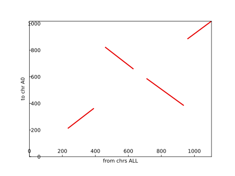
↩PREREQUISITES↩
WHAT: Given two genomes that share synteny blocks, where one genome has the synteny blocks in desired form while the other does not, determine the minimum number of genome rearrangement reversals (reversal distance) required to get the undesired genome's synteny blocks to match those in the desired genome.

WHY: The theory is that the genome rearrangements between two species take the parsimonious path (or close to it). Since genome reversals are the most common form of genome rearrangement mutation, by calculating a parsimonious reversal path (smallest set of reversals) it's possible to get an idea of how the two species branched off. In the example above, it may be that one of the genomes in the reversal path is the parent that both genomes are based off of.
ALGORITHM:
This algorithm is a simple best effort heuristic to estimate the parsimonious reversal path. It isn't guaranteed to generate a reversal path in every case: The point of this algorithm isn't so much to be a robust solution as much as it is to be a foundation / provide intuition for better algorithms that determine reversal paths.
The algorithm relies on the concept of breakpoints and adjacencies...
Adjacency: Two neighbouring synteny blocks in the undesired genome that follow each other just as they do in the desired genome. For example, ...
this undesired genome has B and C next to each other and the tail of B is followed by the head of C, just as in the desired genome.

this undesired genome has B and C next to each other and the tail of B is followed by the tail of C, just as in the desired genome.

this undesired genome has B and C next to each other and the tail of B is followed by the head of C, just as in the desired genome. Note that their placement has been swapped when compared to the desired genome. As long as they follow each other as they do in the desired genome, it's considered an adjacency.
Breakpoint: Two neighbouring synteny blocks in the undesired genome don't fit the definition of an adjacency. For example, ...
Breakpoints and adjacencies are useful because they identify desirable points for reversals. This algorithm takes advantage of that fact to estimate the reversal distance. For example, a contiguous train of adjacencies in an undesired genome may identify the boundaries for a single reversal that gets the undesired genome closer to the desired genome.
The algorithm starts by assigning integers to synteny blocks. The synteny blocks in the...
For example, ...

The synteny blocks in each genomes of the above example may be represented as lists...
[+1, +2, +3, +4, +5] (DESIRED)[+1, -4, -3, -2, -5] (UNDESIRED)Artificially add a 0 prefix and a length + 1 suffix to both lists. In the above example, the length is 5, so each list gets a prefix of 0 and a suffix of 6...
[0, +1, +2, +3, +4, +5, +6] (DESIRED)[0, +1, -4, -3, -2, -5, +6] (UNDESIRED)In this modified list, consecutive elements are considered a...
In the undesired version of the example above, the breakpoints and adjacencies are...
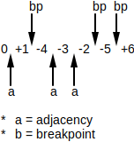
This algorithm continually applies genome rearrangement reversal operations on portions of the list in the hopes of reducing the number of breakpoints at each reversal, ultimately hoping to get it to the desired list. It targets portions of contiguous adjacencies sandwiched between breakpoints. In the example above, the reversal of [-4, -3, -2] reduces the number of breakpoints by 1...

Following that up with a reversal of [-5] reduces the number of breakpoints by 2...

Leaving the undesired list in the same state as the desired list. As such, the reversal distance for this example is 2 reversals.
In the best case, a single reversal will remove 2 breakpoints (one on each side of the reversal). In the worst case, there is no single reversal that drives down the number of breakpoints. For example, there is no single reversal for the list [+2, +1] that reduces the number of breakpoints...

In such worst case scenarios, the algorithm fails. However, the point of this algorithm isn't so much to be a robust solution as much as it is to be a foundation for better algorithms that determine reversal paths.
ch6_code/src/breakpoint_list/BreakpointList.py (lines 7 to 26):
def find_adjacencies_sandwiched_between_breakpoints(augmented_blocks: List[int]) -> List[int]:
assert augmented_blocks[0] == 0
assert augmented_blocks[-1] == len(augmented_blocks) - 1
ret = []
for (x1, x2), idx in slide_window(augmented_blocks, 2):
if x1 + 1 != x2:
ret.append(idx)
return ret
def find_and_reverse_section(augmented_blocks: List[int]) -> Optional[List[int]]:
bp_idxes = find_adjacencies_sandwiched_between_breakpoints(augmented_blocks)
for (bp_i1, bp_i2), _ in slide_window(bp_idxes, 2):
if augmented_blocks[bp_i1] + 1 == -augmented_blocks[bp_i2] or\
augmented_blocks[bp_i2 + 1] == -augmented_blocks[bp_i1 + 1] + 1:
return augmented_blocks[:bp_i1 + 1]\
+ [-x for x in reversed(augmented_blocks[bp_i1 + 1:bp_i2 + 1])]\
+ augmented_blocks[bp_i2 + 1:]
return None
Reversing on breakpoint boundaries...
[0, +1, -4, -3, -2, -5, +6][0, +1, +2, +3, +4, -5, +6][0, +1, +2, +3, +4, +5, +6]No more reversals possible.
Since each reversal can at most reduce the number of breakpoints by 2, the reversal distance must be at least half the number of breakpoints (lower bound): . In other words, the minimum number of reversals to transform a permutations to an identity permutation will never be less than .
↩PREREQUISITES↩
ALGORITHM:
This algorithm calculates a parsimonious reversal path by constructing an undirected graph representing the synteny blocks between genomes. Unlike the breakpoint list algorithm, this algorithm...
This algorithm begins by constructing an undirected graphs containing both the desired and undesired genomes, referred to as a breakpoint graph. It then performs a set of re-wiring operations on the breakpoint graph to determine a parsimonious reversal path (including fusion and fission), where each re-wiring operation is referred to as a two-break.
BREAKPOINT GRAPH REPRESENTATION
Construction of a breakpoint graph is as follows:
Set the ends of synteny blocks as nodes. The arrow end should have a t suffix (for tail) while the non-arrow end should have a h suffix (for head)...

If the genome has linear chromosomes, add a termination node as well to represent chromosome ends. Only one termination node is needed -- all chromosome ends are represented by the same termination node.
Set the synteny blocks themselves as undirected edges, represented by dashed edges.
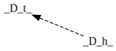
Note that the arrow heads on these dashed edges represent the direction of the synteny match (e.g. head-to-tail for a normal match vs tail-to-head for a reverse complement match), not edge directions in the graph (graph is undirected). Since the h and t suffixes on nodes already convey the match direction information, the arrows may be omitted to reduce confusion.

Set the regions between synteny blocks as undirected edges, represented by colored edges. Regions of ...
For linear chromosomes, the region between a chromosome end and the synteny node just before it is also represented by the appropriate colored edge.
For example, the following two genomes share the synteny blocks A, B, C, and D between them ...
Converting the above genomes to both a circular and linear breakpoint graph is as follows...
As shown in the example above, the convention for drawing a breakpoint graph is to position nodes and edges as they appear in the desired genome (synteny edges should be neatly sandwiched between blue edges). Note how both breakpoint graphs in the example above are just another representation of their linear diagram counterparts. The ...
The reason for this convention is that it helps conceptualize the algorithms that operate on breakpoint graphs (described further down). Ultimately, a breakpoint graph is simply a merged version of the linear diagrams for both the desired and undesired genomes.
For example, if the circular genome version of the breakpoint graph example above were flattened based on the blue edges (desired genome), the synteny blocks would be ordered as they are in the linear diagram for the desired genome...


Likewise, if the circular genome version of the breakpoint graph example above were flattened based on red edges (undesired genome), the synteny blocks would be ordered as they are in the linear diagram for the undesired genome...


⚠️NOTE️️️⚠️
If you're confused at this point, don't continue. Go back and make sure you understand because in the next section builds on the above content.
DATA STRUCTURE REPRESENTATION
The data structure used to represent a breakpoint graph can simply be two adjacency lists: one for the red edges and one for the blue edges.
ch6_code/src/breakpoint_graph/ColoredEdgeSet.py (lines 16 to 35):
# Represents a single genome in a breakpoint graph
class ColoredEdgeSet:
def __init__(self):
self.by_node: Dict[SyntenyNode, ColoredEdge] = {}
@staticmethod
def create(ce_list: Iterable[ColoredEdge]) -> ColoredEdgeSet:
ret = ColoredEdgeSet()
for ce in ce_list:
ret.insert(ce)
return ret
def insert(self, e: ColoredEdge):
if e.n1 in self.by_node or e.n2 in self.by_node:
raise ValueError(f'Node already occupied: {e}')
if not isinstance(e.n1, TerminalNode):
self.by_node[e.n1] = e
if not isinstance(e.n2, TerminalNode):
self.by_node[e.n2] = e
The edges representing synteny blocks technically don't need to be tracked because they're easily derived from either set of colored edges (red or blue). For example, given the following circular breakpoint graph ...

..., walk the blue edges starting from the node B_t. The opposite end of the blue edge at B_t is C_h. The next edge to walk must be a synteny edge, but synteny edges aren't tracked in this data structure. However, since it's known that the nodes of a synteny edge...
, ... it's easy to derive that the opposite end of the synteny edge at node C_h is node C_t. As such, get the blue edge for C_t and repeat. Keep repeating until a cycle is detected.
For linear breakpoint graphs, the process must start and end at the termination node (no cycle).
ch6_code/src/breakpoint_graph/ColoredEdgeSet.py (lines 80 to 126):
# Walks the colored edges, spliced with synteny edges.
def walk(self) -> List[List[Union[ColoredEdge, SyntenyEdge]]]:
ret = []
all_edges = self.edges()
term_edges = set()
for ce in all_edges:
if ce.has_term():
term_edges.add(ce)
# handle linear chromosomes
while term_edges:
ce = term_edges.pop()
n = ce.non_term()
all_edges.remove(ce)
edges = []
while True:
se_n1 = n
se_n2 = se_n1.swap_end()
se = SyntenyEdge(se_n1, se_n2)
edges += [ce, se]
ce = self.by_node[se_n2]
if ce.has_term():
edges += [ce]
term_edges.remove(ce)
all_edges.remove(ce)
break
n = ce.other_end(se_n2)
all_edges.remove(ce)
ret.append(edges)
# handle cyclic chromosomes
while all_edges:
start_ce = all_edges.pop()
ce = start_ce
n = ce.n1
edges = []
while True:
se_n1 = n
se_n2 = se_n1.swap_end()
se = SyntenyEdge(se_n1, se_n2)
edges += [ce, se]
ce = self.by_node[se_n2]
if ce == start_ce:
break
n = ce.other_end(se_n2)
all_edges.remove(ce)
ret.append(edges)
return ret
Given the colored edges...
Synteny edges spliced in...
CE means colored edge / SE means synteny edge.
⚠️NOTE️️️⚠️
If you're confused at this point, don't continue. Go back and make sure you understand because in the next section builds on the above content.
PERMUTATION REPRESENTATION
A common textual representation of a breakpoint graph is writing out each of the two genomes as a set of lists. Each list, referred to as a permutation, describes one of the chromosomes in a genome.
To convert a chromosome within a breakpoint graph to a permutation, simply walk the edges for that chromosome...
Each synteny edge walked is appended to the list with a prefix of ...
For example, given the following breakpoint graph ...

, ... walking the edges for the undesired genome (red) from node D_t in the ...
[-D, -C].[+C, +D].For circular chromosomes, the walk direction is irrelevant, meaning that both example permutations above represent the same chromosome. Likewise, the starting node is also irrelevant, meaning that the following permutations are all equivalent to the ones in the above example: [+C, +D], and [+D, +C].
For linear chromosomes, the walk direction is irrelevant but the walk must start from and end at the termination node (representing the ends of the chromosome). The termination nodes aren't included in the permutation.
In the example breakpoint graph above, the permutation set representing the undesired genome (red) may be written as either...
{[+C, +D], [+A, +B]}{[+A, +B], [-C, _D]}{[-A, -B], [-C, -D]}Likewise, the permutation set representing the desired genome (blue) in the example above may be written as either...
{[+A, +B, +C, +D]}{[-D, -C, -B, -A]}{[+B, +C, +D, +A]}ch6_code/src/breakpoint_graph/Permutation.py (lines 158 to 196):
@staticmethod
def from_colored_edges(
colored_edges: ColoredEdgeSet,
start_n: SyntenyNode,
cyclic: bool
) -> Tuple[Permutation, Set[ColoredEdge]]:
# if not cyclic, it's expected that start_n is either from or to a term node
if not cyclic:
ce = colored_edges.find(start_n)
assert ce.has_term(), "Start node must be for a terminal colored edge"
# if cyclic stop once you detect a loop, otherwise stop once you encounter a term node
if cyclic:
walked = set()
def stop_test(x):
ret = x in walked
walked.add(next_n)
return ret
else:
def stop_test(x):
return x == TerminalNode.INST
# begin loop
blocks = []
start_ce = colored_edges.find(start_n)
walked_ce_set = {start_ce}
next_n = start_n
while not stop_test(next_n):
if next_n.end == SyntenyEnd.HEAD:
b = Block(Direction.FORWARD, next_n.id)
elif next_n.end == SyntenyEnd.TAIL:
b = Block(Direction.BACKWARD, next_n.id)
else:
raise ValueError('???')
blocks.append(b)
swapped_n = next_n.swap_end()
next_ce = colored_edges.find(swapped_n)
next_n = next_ce.other_end(swapped_n)
walked_ce_set.add(next_ce)
return Permutation(blocks, cyclic), walked_ce_set
Converting from a permutation set back to a breakpoint graph is basically just reversing the above process. For each permutation, slide a window of size two to determine the colored edges that permutation is for. The node chosen for the window element at index ...
For circular chromosomes, the sliding window is cyclic. For example, sliding the window over permutation [+A, +C, -B, +D] results in ...
[+A, +C] which produces the colored edge (A_h, C_t).[+C, -B] which produces the colored edge (C_h, B_h).[-B, +D] which produces the colored edge (B_t, D_t).[+D, +A] which produces the colored edge (D_h, A_t).For linear chromosomes, the sliding window is not cyclic and the chromosomes always start and end at the termination node. For example, the permutation [+A, +C, -B, +D] would actually be treated as [TERM, +A, +C, -B, +D, TERM], resulting in ...
[TERM, +A] which produces the colored edge (TERM, A_h).[+A, +C] which produces the colored edge (A_h, C_t).[+C, -B] which produces the colored edge (C_h, B_h).[-B, +D] which produces the colored edge (B_t, D_t).[+D, TERM] which produces the colored edge (D_h, TERM).ch6_code/src/breakpoint_graph/Permutation.py (lines 111 to 146):
def to_colored_edges(self) -> List[ColoredEdge]:
ret = []
# add link to dummy head if linear
if not self.cyclic:
b = self.blocks[0]
ret.append(
ColoredEdge(TerminalNode.INST, b.to_synteny_edge().n1)
)
# add normal edges
for (b1, b2), idx in slide_window(self.blocks, 2, cyclic=self.cyclic):
if b1.dir == Direction.BACKWARD and b2.dir == Direction.FORWARD:
n1 = SyntenyNode(b1.id, SyntenyEnd.HEAD)
n2 = SyntenyNode(b2.id, SyntenyEnd.HEAD)
elif b1.dir == Direction.FORWARD and b2.dir == Direction.BACKWARD:
n1 = SyntenyNode(b1.id, SyntenyEnd.TAIL)
n2 = SyntenyNode(b2.id, SyntenyEnd.TAIL)
elif b1.dir == Direction.FORWARD and b2.dir == Direction.FORWARD:
n1 = SyntenyNode(b1.id, SyntenyEnd.TAIL)
n2 = SyntenyNode(b2.id, SyntenyEnd.HEAD)
elif b1.dir == Direction.BACKWARD and b2.dir == Direction.BACKWARD:
n1 = SyntenyNode(b1.id, SyntenyEnd.HEAD)
n2 = SyntenyNode(b2.id, SyntenyEnd.TAIL)
else:
raise ValueError('???')
ret.append(
ColoredEdge(n1, n2)
)
# add link to dummy tail if linear
if not self.cyclic:
b = self.blocks[-1]
ret.append(
ColoredEdge(b.to_synteny_edge().n2, TerminalNode.INST)
)
# return
return ret
⚠️NOTE️️️⚠️
If you're confused at this point, don't continue. Go back and make sure you understand because in the next section builds on the above content.
TWO-BREAK ALGORITHM
Now that breakpoint graphs have been adequately described, the goal of this algorithm is to iteratively re-wire the red edges of a breakpoint graph such that they match its blue edges. At each step, the algorithm finds a pair of red edges that share nodes with a blue edge and re-wires those red edges such that one of them matches the blue edge.
For example, the two red edges highlighted below share the same nodes as a blue edge (D_h and C_t). These two red edges can be broken and re-wired such that one of them matches the blue edge...

Each re-wiring operation is called a 2-break and represents either a chromosome fusion, chromosome fission, or reversal mutation (genome rearrangement). For example, ...
Genome rearrangement duplications and deletions aren't representable as 2-breaks. Genome rearrangement translocations can't be reliably represented as a single 2-break either. For example, the following translocation gets modeled as two 2-breaks, one that breaks the undesired chromosome (fission) and another that glues it back together (fusion)...


ch6_code/src/breakpoint_graph/ColoredEdge.py (lines 46 to 86):
# Takes e1 and e2 and swaps the ends, such that one of the swapped edges becomes desired_e. That is, e1 should have
# an end matching one of desired_e's ends while e2 should have an end matching desired_e's other end.
#
# This is basically a 2-break.
@staticmethod
def swap_ends(
e1: Optional[ColoredEdge],
e2: Optional[ColoredEdge],
desired_e: ColoredEdge
) -> Optional[ColoredEdge]:
if e1 is None and e2 is None:
raise ValueError('Both edges can\'t be None')
if TerminalNode.INST in desired_e:
# In this case, one of desired_e's ends is TERM (they can't both be TERM). That means either e1 or e2 will
# be None because there's only one valid end (non-TERM end) to swap with.
_e = next(filter(lambda x: x is not None, [e1, e2]), None)
if _e is None:
raise ValueError('If the desired edge has a terminal node, one of the edges must be None')
if desired_e.non_term() not in {_e.n1, _e.n2}:
raise ValueError('Unexpected edge node(s) encountered')
if desired_e == _e:
raise ValueError('Edge is already desired edge')
other_n1 = _e.other_end(desired_e.non_term())
other_n2 = TerminalNode.INST
return ColoredEdge(other_n1, other_n2)
else:
# In this case, neither of desired_e's ends is TERM. That means both e1 and e2 will be NOT None.
if desired_e in {e1, e2}:
raise ValueError('Edge is already desired edge')
if desired_e.n1 in e1 and desired_e.n2 in e2:
other_n1 = e1.other_end(desired_e.n1)
other_n2 = e2.other_end(desired_e.n2)
elif desired_e.n1 in e2 and desired_e.n2 in e1:
other_n1 = e2.other_end(desired_e.n1)
other_n2 = e1.other_end(desired_e.n2)
else:
raise ValueError('Unexpected edge node(s) encountered')
if {other_n1, other_n2} == {TerminalNode.INST}: # if both term edges, there is no other edge
return None
return ColoredEdge(other_n1, other_n2)
Applying 2-breaks on circular genome until red_p_list=[['+A', '-B', '-C', '+D'], ['+E']] matches blue_p_list=[['+A', '+B', '-D'], ['-C', '-E']] (show_graph=True)...
Initial red_p_list=[['+A', '-B', '-C', '+D'], ['+E']]

red_p_list=[['+A', '+B', '-C', '+D'], ['+E']]
red_p_list=[['+A', '+B', '-D', '+C'], ['+E']]

red_p_list=[['+A', '+B', '-D', '+C', '+E']]

red_p_list=[['+C', '+E'], ['+A', '+B', '-D']]

Recall that the breakpoint graph is undirected. A permutation may have been walked in either direction (clockwise vs counter-clockwise) and there are multiple nodes to start walking from. If the output looks like it's going backwards, that's just as correct as if it looked like it's going forward.
Also, recall that a genome is represented as a set of permutations -- sets are not ordered.
⚠️NOTE️️️⚠️
It isn't discussed here, but the Pevzner book put an emphasis on calculating the parsimonious number of reversals (reversal distance) without having to go through and apply two-breaks in the breakpoint graph. The basic idea is to count the number of red-blue cycles in the graph.
For a cyclic breakpoint graphs, a single red-blue cycle is when you pick a node, follow the blue edge, then follow the red edge, then follow the blue edge, then follow the red edge, ..., until you arrive back at the same node. If the blue and red genomes match perfectly, the number of red-blue cycles should equal the number of synteny blocks. Otherwise, you can calculate the number of reversals needed to get them to equal by subtracting the number of red-blue cycles by the number of synteny blocks.
For a linear breakpoint graphs, a single red-blue cycle isn't actually a cycle because: Pick the termination node, follow a blue edge, then follow the red edge, then follow the blue edge, then follow the red edge, ... until you arrive back at the termination node (what if there are actual cyclic red-blue loops as well like in cyclic breakpoint graphs?). If the blue and red genomes match perfectly, the number of red-blue cycles should equal the number of synteny blocks + 1. Otherwise, you can ESTIMATE the number of reversals needed to get them to equal by subtracting the number of red-blue cycles by the number of synteny blocks + 1.
To calculate the real number of reversals need for linear breakpoint graphs (not estimate), there's a paper on ACM DL that goes over the algorithm. I glanced through it but I don't have the time / wherewithal to go through it. Maybe do it in the future.
UPDATE: Calculating the number of reversals quickly is important because the number of reversals can be used as a distance metric when computing a phylogenetic tree across a set of species (a tree that shows how closely a set of species are related / how they branched out). See distance matrix definition.
↩PREREQUISITES↩
Phylogeny is the concept of inferring the evolutionary history of a set of biological entities (e.g. animal species, viruses, etc..) by inspecting properties of those entities for relatedness (e.g. phenotypic, genotypic, etc..).
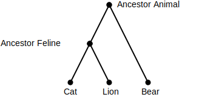
Evolutionary history is often displayed as a tree called a phylogenetic tree, where leaf nodes represent known entities and internal nodes represent inferred ancestor entities. The example above shows a phylogenetic tree for the species cat, lion, and bear based on phenotypic inspection. Cats and lions are inferred as descending from the same ancestor because both have deeply shared physical and behavioural characteristics (felines). Similarly, that feline ancestor and bears are inferred as descending from the same ancestor because all descendants walk on 4 legs.
The typical process for phylogeny is to first measure how related a set of entities are to each other, where each measure is referred to as a distance (e.g. dist(cat, lion) = 2), then work backwards to find a phylogenetic tree that fits / maps to those distances. The distance may be any metric so long as ...
dist(cat, cat) = 0)dist(cat, lion) = 2)dist(cat, lion) = dist(lion, cat))dist(cat, lion) + dist(lion, dog) >= dist(cat, dog))⚠️NOTE️️️⚠️
The leapfrogging point may be confusing. All it's saying is that taking an indirect path between two species should produce a distance that's >= the direct path. For example, the direct path between cat and dog is 6: dist(cat, dog) = 6. If you were to instead jump from cat to lion dist(cat, lion) = 2, then from lion to dog dist(lion, dog) = 5, that combined distance should be >= to 6...
dist(cat, dog) = 6
dist(cat, lion) = 2
dist(lion, dog) = 5
dist(cat, lion) + dist(lion, dog) >= dist(cat, dog)
2 + 5 >= 6
7 >= 6
The Pevzner book refers to this as the triangle inequality.
Later on non-conforming distance matrices are discussed called non-additive distance matrices. I don't know if non-additive distance matrices are required to have this specific property, but they should have all others.
Examples of metrics that may be used as distance, referred to as distance metrics, include...
Distances for a set of entities are typically represented as a 2D matrix that contains all possible pairings, called a distance matrix. The distance matrix for the example Cat/Lion/Bear phylogenetic tree is ...
| Cat | Lion | Bear | |
|---|---|---|---|
| Cat | 0 | 2 | 23 |
| Lion | 2 | 0 | 23 |
| Bear | 23 | 23 | 0 |
Note how the distance matrix has the distance for each pair slotted twice, mirrored across the diagonal of 0s (self distances). For example, the distance between bear and lion is listed twice.
⚠️NOTE️️️⚠️
Just to make it explicit: The ultimate point of this section is to work backwards from a distance matrix to a phylogenetic tree (essentially the concept of phylogeny -- inferring evolutionary history of a set of known / present-day organisms based on how different they are).
⚠️NOTE️️️⚠️
The best way to move forward with this, assuming that you're brand new to it, is to first understand the following four subsections...
Then jump to the algorithm you want to learn (subsection) within Algorithms/Phylogeny/Distance Matrix to Tree and work from the prerequisites to the algorithm. Otherwise all the sections in between come off as disjointed because it's building the intermediate knowledge required for the final algorithms.
WHAT: Given a tree, the distance matrix generated from that tree is said to be an additive distance matrix.
WHY: The term additive distance matrix is derived from the fact that edge weights within the tree are being added together to generate the distances in the distance matrix. For example, in the following tree ...
dist(Cat, Lion) = dist(Cat, A) + dist(A, Lion) = 1 + 1 = 2dist(Cat, Bear) = dist(Cat, A) + dist(A, B) + dist(B, Bear) = 1 + 1 + 2 = 4dist(Lion, Bear) = dist(Lion, A) + dist(A, B) + dist(B, Bear) = 1 + 1 + 2 = 4| Cat | Lion | Bear | |
|---|---|---|---|
| Cat | 0 | 2 | 4 |
| Lion | 2 | 0 | 4 |
| Bear | 4 | 4 | 0 |
However, distance matrices aren't commonly generated from trees. Rather, they're generated by comparing present-day entities to each other to see how diverged they are (their distance from each other). There's no guarantee that a distance matrix generated from comparisons will be an additive distance matrix. That is, there must exist a tree with edge weights that satisfy that distance matrix for it to be an additive distance matrix (commonly referred to as a tree that fits the distance matrix).
In other words, while a...
distance matrix generated from a tree will always be an additive distance matrix, not all distance matrices are additive distance matrices. For example, a tree doesn't exist that maps to the following distance matrix ...
| Cat | Lion | Bear | Racoon | |
|---|---|---|---|---|
| Cat | 0 | 1 | 1 | 1 |
| Lion | 1 | 0 | 1 | 1 |
| Bear | 1 | 1 | 0 | 9 |
| Racoon | 1 | 1 | 9 | 0 |
tree maps to exactly one additive distance matrix, that additive distance matrix maps to many different trees. For example, the following additive distance matrix may map to any of the following trees ...
| Cat | Lion | Bear | |
|---|---|---|---|
| Cat | 0 | 2 | 4 |
| Lion | 2 | 0 | 4 |
| Bear | 4 | 4 | 0 |
ALGORITHM:
ch7_code/src/phylogeny/TreeToAdditiveDistanceMatrix.py (lines 39 to 69):
def find_path(g: Graph[N, ND, E, float], n1: N, n2: N) -> list[E]:
if not g.has_node(n1) or not g.has_node(n2):
ValueError('Node missing')
if n1 == n2:
return []
queued_edges = list()
for e in g.get_outputs(n1):
queued_edges.append((n1, [e]))
while len(queued_edges) > 0:
ignore_n, e_list = queued_edges.pop()
e_last = e_list[-1]
active_n = [n for n in g.get_edge_ends(e_last) if n != ignore_n][0]
if active_n == n2:
return e_list
children = set(g.get_outputs(active_n))
children.remove(e_last)
for child_e in children:
child_ignore_n = active_n
new_e_list = e_list[:] + [child_e]
queued_edges.append((child_ignore_n, new_e_list))
raise ValueError(f'No path from {n1} to {n2}')
def to_additive_distance_matrix(g: Graph[N, ND, E, float]) -> DistanceMatrix[N]:
leaves = {n for n in g.get_nodes() if g.get_degree(n) == 1}
dists = {}
for l1, l2 in product(leaves, repeat=2):
d = sum(g.get_edge_data(e) for e in find_path(g, l1, l2))
dists[l1, l2] = d
return DistanceMatrix(dists)
The tree...
... produces the additive distance matrix ...
| v0 | v1 | v2 | v3 | v4 | v5 | |
|---|---|---|---|---|---|---|
| v0 | 0.0 | 13.0 | 21.0 | 21.0 | 22.0 | 22.0 |
| v1 | 13.0 | 0.0 | 12.0 | 12.0 | 13.0 | 13.0 |
| v2 | 21.0 | 12.0 | 0.0 | 20.0 | 21.0 | 21.0 |
| v3 | 21.0 | 12.0 | 20.0 | 0.0 | 7.0 | 13.0 |
| v4 | 22.0 | 13.0 | 21.0 | 7.0 | 0.0 | 14.0 |
| v5 | 22.0 | 13.0 | 21.0 | 13.0 | 14.0 | 0.0 |
↩PREREQUISITES↩
WHAT: Convert a tree into a simple tree. A simple tree is an unrooted tree where ...
The first point just means that the tree can't contain non-splitting internal nodes. By definition a tree's leaf nodes each have a degree of 1, and this restriction makes it so that each internal node must have a degree > 2 instead of >= 2...


In the context of phylogeny, a simple tree's ...
WHY: Simple trees have properties / restrictions that simplify the process of working backwards from a distance matrix to a tree. In other words, when constructing a tree from a distance matrix, the process is simpler if the tree is restricted to being a simple tree.
The first property is that a unique simple tree exists for a unique additive distance matrix (one-to-one mapping). That is, it isn't possible for...
For example, the following additive distance matrix will only ever map to the following simple tree (and vice-versa)...
| w | u | y | z | |
|---|---|---|---|---|
| w | 0 | 3 | 8 | 7 |
| u | 3 | 0 | 9 | 8 |
| y | 8 | 9 | 0 | 5 |
| z | 7 | 8 | 5 | 0 |
However, that same additive distance matrix can map to an infinite number of non-simple trees (and vice-versa)...
⚠️NOTE️️️⚠️
To clarify: This property / restriction is important because when reconstructing a tree from the distance matrix, if you restrict yourself to a simple tree you'll only ever have 1 tree to reconstruct to. This makes the algorithms simpler. This is discussed further in the cardinality subsection.
The second property is that the direction of evolution isn't maintained in a simple tree: It's an unrooted tree with undirected edges. This is a useful property because, while a distance matrix may provide enough information to infer common ancestry, it doesn't provide enough information to know the true parent-child relationships between those ancestors. For example, any of the internal nodes in the following simple tree may be the top-level entity that all other entities are descendants of ...
The third property is that weights must be > 0, which is because of the restriction on distance metrics specified in the parent section: The distance between any two entities must be > 0. That is, it doesn't make sense for the distance between two entities to be ...
ALGORITHM:
The following examples show various real evolutionary paths and their corresponding simple trees. Note how the simple trees neither fully represent the true lineage nor the direction of evolution (simple trees are unrooted and undirected).

In the first two examples, one present-day entity branched off from another present-day entity. Both entities are still present-day entities (the entity branched off from isn't extinct).
In the fifth example, parent1 split off to the present-day entities entity1 and entity3, then entity2 branched off entity1. All three entities are present-day entities (neither entity1, entity2, nor entity3 is extinct).
In the third and last two examples, the top-level parent doesn't show up because adding it would break the requirement that internal nodes must be splitting (degree > 2). For example, adding parent1 into the simple tree of the last example above causes parent1 to have a degree = 2...
The following algorithm removes nodes of degree = 2, merging its two edges together. This makes it so every internal edge has a degree of > 2...
ch7_code/src/phylogeny/TreeToSimpleTree.py (lines 88 to 105):
def merge_nodes_of_degree2(g: Graph[N, ND, E, float]) -> None:
# Can be made more efficient by not having to re-collect bad nodes each
# iteration. Kept it like this so it's simple to understand what's going on.
while True:
bad_nodes = {n for n in g.get_nodes() if g.get_degree(n) == 2}
if len(bad_nodes) == 0:
return
bad_n = bad_nodes.pop()
bad_e1, bad_e2 = tuple(g.get_outputs(bad_n))
e_id = bad_e1 + bad_e2
e_n1 = [n for n in g.get_edge_ends(bad_e1) if n != bad_n][0]
e_n2 = [n for n in g.get_edge_ends(bad_e2) if n != bad_n][0]
e_weight = g.get_edge_data(bad_e1) + g.get_edge_data(bad_e2)
g.insert_edge(e_id, e_n1, e_n2, e_weight)
g.delete_edge(bad_e1)
g.delete_edge(bad_e2)
g.delete_node(bad_n)
The tree...

... simplifies to ...

The following algorithm tests a tree to see if it meets the requirements of being a simple tree...
ch7_code/src/phylogeny/TreeToSimpleTree.py (lines 36 to 83):
def is_tree(g: Graph[N, ND, E, float]) -> bool:
# Check for cycles
if len(g) == 0:
return False
walked_edges = set()
walked_nodes = set()
queued_edges = set()
start_n = next(g.get_nodes())
for e in g.get_outputs(start_n):
queued_edges.add((start_n, e))
while len(queued_edges) > 0:
ignore_n, e = queued_edges.pop()
active_n = [n for n in g.get_edge_ends(e) if n != ignore_n][0]
walked_edges.add(e)
walked_nodes.update({ignore_n, active_n})
children = set(g.get_outputs(active_n))
children.remove(e)
for child_e in children:
if child_e in walked_edges:
return False # cyclic -- edge already walked
child_ignore_n = active_n
queued_edges.add((child_ignore_n, child_e))
# Check for disconnected graph
if len(walked_nodes) != len(g):
return False # disconnected -- some nodes not reachable
return True
def is_simple_tree(g: Graph[N, ND, E, float]) -> bool:
# Check if tree
if not is_tree(g):
return False
# Test degrees
for n in g.get_nodes():
# Degree == 0 shouldn't exist if tree
# Degree == 1 is leaf node
# Degree == 2 is a non-splitting internal node (NOT ALLOWED)
# Degree >= 3 is splitting internal node
degree = g.get_degree(n)
if degree == 2:
return False
# Test weights
for e in g.get_edges():
# No non-positive weights
weight = g.get_edge_data(e)
if weight <= 0:
return False
return True
The tree...
... is NOT a simple tree
↩PREREQUISITES↩
⚠️NOTE️️️⚠️
This was discussed briefly in the simple tree section, but it's being discussed here in its own section because it's important.
WHAT: Determine the cardinality of between an additive distance matrix and a type of tree. For, ...
WHY: Non-simple trees are essentially derived from simple trees by splicing nodes in between edges (breaking up an edge into multiple edges). For example, any of the following non-simple trees...
... will collapse to the following simple tree (edges connected by nodes of degree 2 merged by adding weights) ...
All of the trees above, both the non-simple trees and the simple tree, will generate the following additive distance matrix ...
| Cat | Lion | Bear | |
|---|---|---|---|
| Cat | 0 | 2 | 4 |
| Lion | 2 | 0 | 3 |
| Bear | 4 | 3 | 0 |
Similarly, this additive distance matrix will only ever map to the simple tree shown above or one of its many non-simple tree derivatives (3 of which are shown above). There is no other simple tree that this additive distance matrix can map to / no other simple tree that will generate this distance matrix. In other words, it isn't possible for...
Working backwards from a distance matrix to a tree is less complex when limiting the tree to a simple tree, because there's only one simple tree possible (vs many non-simple trees).
ALGORITHM:
This section is more of a concept than an algorithm. The following just generates an additive distance matrix from a tree and says if that tree is unique to that additive distance matrix (it should be if it's a simple tree). There is no code to show for it because it's just calling things from previous sections (generating an additive distance matrix and checking if a simple tree).
ch7_code/src/phylogeny/CardinalityTest.py (lines 15 to 19):
def cardinality_test(g: Graph[N, ND, E, float]) -> tuple[DistanceMatrix[N], bool]:
return (
to_additive_distance_matrix(g),
is_simple_tree(g)
)
The tree...
... produces the additive distance matrix ...
| v0 | v1 | v2 | v3 | v4 | v5 | |
|---|---|---|---|---|---|---|
| v0 | 0.0 | 13.0 | 21.0 | 21.0 | 22.0 | 22.0 |
| v1 | 13.0 | 0.0 | 12.0 | 12.0 | 13.0 | 13.0 |
| v2 | 21.0 | 12.0 | 0.0 | 20.0 | 21.0 | 21.0 |
| v3 | 21.0 | 12.0 | 20.0 | 0.0 | 7.0 | 13.0 |
| v4 | 22.0 | 13.0 | 21.0 | 7.0 | 0.0 | 14.0 |
| v5 | 22.0 | 13.0 | 21.0 | 13.0 | 14.0 | 0.0 |
The tree is simple. This is the ONLY simple tree possible for this additive distance matrix and vice-versa.
↩PREREQUISITES↩
WHAT: Determine if a distance matrix is an additive distance matrix.
WHY: Knowing if a distance matrix is additive helps determine how the tree for that distance matrix should be constructed. For example, since it's impossible for a non-additive distance matrix to fit a tree, different algorithms are needed to approximate a tree that somewhat fits.
ALGORITHM:
This algorithm, called the four point condition algorithm, tests pairs within each quartet of leaf nodes to ensure that they meet a certain set of conditions. For example, the following tree has the quartet of leaf nodes (v0, v2, v4, v6) ...
A quartet makes up 3 different pair combinations (pairs of pairs). For example, the example quartet above has the 3 pair combinations ...
⚠️NOTE️️️⚠️
Order of the pairing doesn't matter at either level. For example, ((v0, v2), (v4, v6)) and ((v6, v4), (v2, v0)) are the same. That's why there are only 3.
Of these 3 pair combinations, the test checks to see that ...
In a tree with edge weights >= 0, every leaf node quartet will pass this test. For example, for leaf node quartet (v0, v2, v4, v6) highlighted in the example tree above ...
dist(v0,v2) + dist(v4,v6) <= dist(v0,v6) + dist(v2,v4) == dist(v0,v4) + dist(v2,v6)
Note how the same set of edges are highlighted between the first two diagrams (same distance contributions) while the third diagram has less edges highlighted (missing some distance contributions). This is where the inequality comes from.
⚠️NOTE️️️⚠️
I'm almost certain this inequality should be < instead of <=, because in a phylogenetic tree you can't have an edge weight of 0, right? An edge weight of 0 would indicate that the nodes at each end of an edge are the same entity.
All of the information required for the above calculation is available in the distance matrix...
ch7_code/src/phylogeny/FourPointCondition.py (lines 21 to 47):
def four_point_test(dm: DistanceMatrix[N], l0: N, l1: N, l2: N, l3: N) -> bool:
# Pairs of leaf node pairs
pair_combos = (
((l0, l1), (l2, l3)),
((l0, l2), (l1, l3)),
((l0, l3), (l1, l2))
)
# Different orders to test pair_combos to see if they match conditions
test_orders = (
(0, 1, 2),
(0, 2, 1),
(1, 0, 2),
(1, 2, 0),
(2, 0, 1),
(2, 1, 0)
)
# Find at least one order of pair combos that passes the test
for p1_idx, p2_idx, p3_idx in test_orders:
p1_1, p1_2 = pair_combos[p1_idx]
p2_1, p2_2 = pair_combos[p2_idx]
p3_1, p3_2 = pair_combos[p3_idx]
s1 = dm[p1_1] + dm[p1_2]
s2 = dm[p2_1] + dm[p2_2]
s3 = dm[p3_1] + dm[p3_2]
if s1 <= s2 == s3:
return True
return False
If a distance matrix was derived from a tree / fits a tree, its leaf node quartets will also pass this test. That is, if all leaf node quartets in a distance matrix pass the above test, the distance matrix is an additive distance matrix ...
ch7_code/src/phylogeny/FourPointCondition.py (lines 52 to 64):
def is_additive(dm: DistanceMatrix[N]) -> bool:
# Recall that an additive distance matrix of size <= 3 is guaranteed to be an additive distance
# matrix (try it and see -- any distances you use will always end up fitting a tree). Thats why
# you need at least 4 leaf nodes to test.
if dm.n < 4:
return True
leaves = dm.leaf_ids()
for quartet in combinations(leaves, r=4):
passed = four_point_test(dm, *quartet)
if not passed:
return False
return True
The distance matrix...
| v0 | v1 | v2 | v3 | |
|---|---|---|---|---|
| v0 | 0.0 | 3.0 | 8.0 | 7.0 |
| v1 | 3.0 | 0.0 | 9.0 | 8.0 |
| v2 | 8.0 | 9.0 | 0.0 | 5.0 |
| v3 | 7.0 | 8.0 | 5.0 | 0.0 |
... is additive.
⚠️NOTE️️️⚠️
Could the differences found by this algorithm help determine how "close" a distance matrix is to being an additive distance matrix?
↩PREREQUISITES↩
WHAT: Given an additive distance matrix, there exists a unique simple tree that fits that matrix. Compute the limb length of any leaf node in that simple tree just from the additive distance matrix.
WHY: This is one of the operations required to construct the unique simple tree for an additive distance matrix.
ALGORITHM:
To conceptualize how this algorithm works, consider the following simple tree and its corresponding additive distance matrix...

| v0 | v1 | v2 | v3 | v4 | v5 | v6 | |
|---|---|---|---|---|---|---|---|
| v0 | 0 | 13 | 19 | 20 | 29 | 40 | 36 |
| v1 | 13 | 0 | 10 | 11 | 20 | 31 | 27 |
| v2 | 19 | 10 | 0 | 11 | 20 | 31 | 27 |
| v3 | 20 | 11 | 11 | 0 | 21 | 32 | 28 |
| v4 | 29 | 20 | 20 | 21 | 0 | 17 | 13 |
| v5 | 40 | 31 | 31 | 32 | 17 | 0 | 6 |
| v6 | 36 | 27 | 27 | 28 | 13 | 6 | 0 |
In this simple tree, consider a path between leaf nodes that travels over v2's parent (v2 itself excluded). For example, path(v1,v5) travels over v2's parent...

Now, consider the paths between each of the two nodes in the path above (v1 and v5) and v2: path(v1,v2) + path(v2,v5) ...

Notice how the edges highlighted between path(v1,v5) and path(v1,v2) + path(v2,v5) would be the same had it not been for the two highlights on v2's limb. Adding 2 * path(v2,i0) to path(v1,v5) makes it so that each edge is highlighted an equal number of times ...

path(v1,v2) + path(v2,v5) = path(v1,v5) + 2 * path(v2,i1)
Contrast the above to what happens when the pair of leaf nodes selected DOESN'T travel through v2's parent. For example, path(v4,v5) doesn't travel through v2's parent ...

path(v4,v2) + path(v2,v5) > path(v4,v5) + 2 * path(v2,i1)
Even when path(v4,v5) includes 2 * path(v2,i1), less edges are highlighted when compared to path(v4,v2) + path(v2,v5). Specifically, edge(i1,i2) is highlighted zero times vs two times.
The above two examples give way to the following two formulas: Given a simple tree with distinct leaf nodes {L, A, B} and L's parent Lp ...
These two formulas work just as well with distances instead of paths...
The reason distances work has to do with the fact that simple trees require edges weights of > 0, meaning traversing over an edge always increases the overall distance. If ...
⚠️NOTE️️️⚠️
The Pevzner book has the 2nd formula above as >= instead of >.
I'm assuming they did this because they're letting edge weights be >= 0 instead of > 0, which doesn't make sense because an edge with a weight of 0 means the same entity exists on both ends of the edge. If an edge weight is 0, it'll contribute nothing to the distance, meaning that more edges being highlighted doesn't necessarily mean a larger distance.
In the above formulas, L's limb length is represented as dist(L,Lp). Except for dist(L,Lp), all distances in the formulas are between leaf nodes and as such are found in the distance matrix. Therefore, the formulas need to be isolated to dist(L,Lp) in order to derive what L's limb length is ...
dist(L,A) + dist(L,B) = dist(A,B) + 2 * dist(L,Lp) -- if path(A,B) travels through Lp
dist(L,A) + dist(L,B) = dist(A,B) + 2 * dist(L,Lp)
dist(L,A) + dist(L,B) - dist(A,B) = 2 * dist(L,Lp)
(dist(L,A) + dist(L,B) - dist(A,B)) / 2 = dist(L,Lp)
The following is a conceptualization of the isolation of dist(L,Lp) happening above using the initial equality example from above. Notice how, in the end, v2's limb is highlighted exactly once and nothing else.

dist(L,A) + dist(L,B) > dist(A,B) + 2 * dist(L,Lp) -- if path(A,B) doesn't travel through Lp
dist(L,A) + dist(L,B) > dist(A,B) + 2 * dist(L,Lp)
dist(L,A) + dist(L,B) - dist(A,B) > 2 * dist(L,Lp)
(dist(L,A) + dist(L,B) - dist(A,B)) / 2 > dist(L,Lp)
The following is a conceptualization of the isolation of dist(L,Lp) happening above using the initial inequality example from above. Notice how, in the end, v2's limb is highlighted exactly once but other edges are also highlighted. That's why it's > instead of =.

Notice the left-hand side of both solved formulas are the same: (dist(L,A) + dist(L,B) - dist(A,B)) / 2
The algorithm for finding limb length is essentially an exhaustive test. Of all leaf node pairs (L not included), the one producing the smallest left-hand side result is guaranteed to be L's limb length. Anything larger will include weights from more edges than just L's limb.
⚠️NOTE️️️⚠️
From the book:
Exercise Break: The algorithm proposed on the previous step computes LimbLength(j) in O(n2) time (for an n x n distance matrix). Design an algorithm that computes LimbLength(j) in O(n) time.
The answer to this is obvious now that I've gone through and reasoned about things above.
For the limb length formula to work, you need to find leaf nodes (A, B) whose path travels through leaf node L's parent (Lp). Originally, the book had you try all combinations of leaf nodes (L excluded) and take the minimum. That works, but you don't need to try all possible pairs. Instead, you can just pick any leaf (that isn't L) for A and test against every other node (that isn't L) to find B -- as with the original method, you pick the B that produces the minimum value.
Because a phylogenetic tree is a connected graph (a path exists between each node and all other nodes), at least 1 path will exist starting from A that travels through Lp.
leaf_nodes.remove(L) # remove L from the set
A = leaf_nodes.pop() # removes and returns an arbitrary leaf node
B = min(leafs, key=lambda x: (dist(L, A) + dist(L, x) - dist(A, x)) / 2)
For example, imagine that you're trying to find v2's limb length in the following graph...
Pick v4 as your A node, then try the formula with every other leaf node as B (except v2 because that's the node you're trying to get limb length for + v4 because that's your A node). At least one of path(A, B)'s will cross through v2's parent. Take the minimum, just as you did when you were trying every possible node pair across all leaf nodes in the graph.
ch7_code/src/phylogeny/FindLimbLength.py (lines 22 to 28):
def find_limb_length(dm: DistanceMatrix[N], l: N) -> float:
leaf_nodes = dm.leaf_ids()
leaf_nodes.remove(l)
a = leaf_nodes.pop()
b = min(leaf_nodes, key=lambda x: (dm[l, a] + dm[l, x] - dm[a, x]) / 2)
return (dm[l, a] + dm[l, b] - dm[a, b]) / 2
Given the additive distance matrix...
| v0 | v1 | v2 | v3 | v4 | v5 | v6 | |
|---|---|---|---|---|---|---|---|
| v0 | 0.0 | 13.0 | 19.0 | 20.0 | 29.0 | 40.0 | 36.0 |
| v1 | 13.0 | 0.0 | 10.0 | 11.0 | 20.0 | 31.0 | 27.0 |
| v2 | 19.0 | 10.0 | 0.0 | 11.0 | 20.0 | 31.0 | 27.0 |
| v3 | 20.0 | 11.0 | 11.0 | 0.0 | 21.0 | 32.0 | 28.0 |
| v4 | 29.0 | 20.0 | 20.0 | 21.0 | 0.0 | 17.0 | 13.0 |
| v5 | 40.0 | 31.0 | 31.0 | 32.0 | 17.0 | 0.0 | 6.0 |
| v6 | 36.0 | 27.0 | 27.0 | 28.0 | 13.0 | 6.0 | 0.0 |
The limb for leaf node v2 in its unique simple tree has a weight of 5.0
↩PREREQUISITES↩
WHAT: Splitting a simple tree on the parent of one of its leaf nodes breaks it up into several subtrees. For example, the following simple tree has been split on v2's parent, resulting in 4 different subtrees ...
Given just the additive distance matrix for a simple tree (not the simple tree itself), determine if two leaf nodes belong to the same subtree had that simple tree been split on some leaf node's parent.
WHY: This is one of the operations required to construct the unique simple tree for an additive distance matrix.
ALGORITHM:
The algorithm is essentially the formulas from the limb length algorithm. Recall that those formulas are ...
dist(L,A) + dist(L,B) = dist(A,B) + 2 * dist(L,Lp) -- if path(A,B) travels through Lp
dist(L,A) + dist(L,B) = dist(A,B) + 2 * dist(L,Lp)
dist(L,A) + dist(L,B) - dist(A,B) = 2 * dist(L,Lp)
(dist(L,A) + dist(L,B) - dist(A,B)) / 2 = dist(L,Lp)
dist(L,A) + dist(L,B) > dist(A,B) + 2 * dist(L,Lp) -- if path(A,B) doesn't travel through Lp
dist(L,A) + dist(L,B) > dist(A,B) + 2 * dist(L,Lp)
dist(L,A) + dist(L,B) - dist(A,B) > 2 * dist(L,Lp)
(dist(L,A) + dist(L,B) - dist(A,B)) / 2 > dist(L,Lp)
To conceptualize how this algorithm works, consider the following simple tree and its corresponding additive distance matrix...
| v0 | v1 | v2 | v3 | v4 | v5 | v6 | |
|---|---|---|---|---|---|---|---|
| v0 | 0 | 13 | 19 | 20 | 29 | 40 | 36 |
| v1 | 13 | 0 | 10 | 11 | 20 | 31 | 27 |
| v2 | 19 | 10 | 0 | 11 | 20 | 31 | 27 |
| v3 | 20 | 11 | 11 | 0 | 21 | 32 | 28 |
| v4 | 29 | 20 | 20 | 21 | 0 | 17 | 13 |
| v5 | 40 | 31 | 31 | 32 | 17 | 0 | 6 |
| v6 | 36 | 27 | 27 | 28 | 13 | 6 | 0 |
Consider what happens when you break the edges on v2's parent (i1). The tree breaks into 4 distinct subtrees (colored below as green, yellow, pink, and cyan)...
If the two leaf nodes chosen are ...
within the same subtree, the path will never travel through v2's parent (i1), meaning that the second formula evaluates to true. For example, since v4 and v5 are within the same subset, path(v4,v5) doesn't travel through v2's parent ...

dist(v2,v4) + dist(v2,v5) > dist(v4,v5) + 2 * dist(v2,i1)
not within the same subtree, the path will always travel through v2's parent (i1), meaning that the first formula evaluates to true. For example, since v1 and v5 are within different subsets, path(v1,v5) doesn't travel through v2's parent ...

path(v1,v2) + path(v2,v5) = path(v1,v5) + 2 * path(v2,i1)
ch7_code/src/phylogeny/SubtreeDetect.py (lines 23 to 32):
def is_same_subtree(dm: DistanceMatrix[N], l: N, a: N, b: N) -> bool:
l_weight = find_limb_length(dm, l)
test_res = (dm[l, a] + dm[l, b] - dm[a, b]) / 2
if test_res == l_weight:
return False
elif test_res > l_weight:
return True
else:
raise ValueError('???') # not additive distance matrix?
Given the additive distance matrix...
| v0 | v1 | v2 | v3 | v4 | v5 | v6 | |
|---|---|---|---|---|---|---|---|
| v0 | 0.0 | 13.0 | 19.0 | 20.0 | 29.0 | 40.0 | 36.0 |
| v1 | 13.0 | 0.0 | 10.0 | 11.0 | 20.0 | 31.0 | 27.0 |
| v2 | 19.0 | 10.0 | 0.0 | 11.0 | 20.0 | 31.0 | 27.0 |
| v3 | 20.0 | 11.0 | 11.0 | 0.0 | 21.0 | 32.0 | 28.0 |
| v4 | 29.0 | 20.0 | 20.0 | 21.0 | 0.0 | 17.0 | 13.0 |
| v5 | 40.0 | 31.0 | 31.0 | 32.0 | 17.0 | 0.0 | 6.0 |
| v6 | 36.0 | 27.0 | 27.0 | 28.0 | 13.0 | 6.0 | 0.0 |
Had the tree been split on leaf node v2's parent, leaf nodes v1 and v5 would reside in different subtrees.
↩PREREQUISITES↩
WHAT: Remove a limb from an additive distance matrix, just as it would get removed from its corresponding unique simple tree.
WHY: This is one of the operations required to construct the unique simple tree for an additive distance matrix.
ALGORITHM:
Recall that for any additive distance matrix, there exists a unique simple tree that fits that matrix. For example, the following simple tree is unique to the following distance matrix...

| v0 | v1 | v2 | v3 | |
|---|---|---|---|---|
| v0 | 0 | 13 | 21 | 22 |
| v1 | 13 | 0 | 12 | 13 |
| v2 | 21 | 12 | 0 | 13 |
| v3 | 22 | 13 | 13 | 0 |
Trimming v2 off that simple tree would result in ...

| v0 | v1 | v3 | |
|---|---|---|---|
| v0 | 0 | 13 | 22 |
| v1 | 13 | 0 | 13 |
| v3 | 22 | 13 | 0 |
Notice how when v2 gets trimmed off, the ...
As such, removing the row and column for some leaf node in an additive distance matrix is equivalent to removing its limb from the corresponding unique simple tree then merging together any edges connected by nodes of degree 2.
ch7_code/src/phylogeny/Trimmer.py (lines 26 to 37):
def trim_distance_matrix(dm: DistanceMatrix[N], leaf: N) -> None:
dm.delete(leaf) # remove row+col for leaf
def trim_tree(tree: Graph[N, ND, E, float], leaf: N) -> None:
if tree.get_degree(leaf) != 1:
raise ValueError('Not a leaf node')
edge = next(tree.get_outputs(leaf))
tree.delete_edge(edge)
tree.delete_node(leaf)
merge_nodes_of_degree2(tree) # make sure its a simple tree
Given the additive distance matrix...
| v0 | v1 | v2 | v3 | |
|---|---|---|---|---|
| v0 | 0.0 | 13.0 | 21.0 | 22.0 |
| v1 | 13.0 | 0.0 | 12.0 | 13.0 |
| v2 | 21.0 | 12.0 | 0.0 | 13.0 |
| v3 | 22.0 | 13.0 | 13.0 | 0.0 |
... trimming leaf node v2 results in ...
| v0 | v1 | v3 | |
|---|---|---|---|
| v0 | 0.0 | 13.0 | 22.0 |
| v1 | 13.0 | 0.0 | 13.0 |
| v3 | 22.0 | 13.0 | 0.0 |
↩PREREQUISITES↩
WHAT: Set a limb length to 0 in an additive distance matrix, just as it would be set to 0 in its corresponding unique simple tree. Technically, a simple tree can't have edge weights that are <= 0. This is a special case, typically used as an intermediate operation of some larger algorithm.
WHY: This is one of the operations required to construct the unique simple tree for an additive distance matrix.
ALGORITHM:
Recall that for any additive distance matrix, there exists a unique simple tree that fits that matrix. For example, the following simple tree is unique to the following distance matrix...
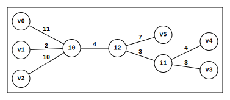
| v0 | v1 | v2 | v3 | v4 | v5 | |
|---|---|---|---|---|---|---|
| v0 | 0 | 13 | 21 | 21 | 22 | 22 |
| v1 | 13 | 0 | 12 | 12 | 13 | 13 |
| v2 | 21 | 12 | 0 | 20 | 21 | 21 |
| v3 | 21 | 12 | 20 | 0 | 7 | 13 |
| v4 | 22 | 13 | 21 | 7 | 0 | 14 |
| v5 | 22 | 13 | 21 | 13 | 14 | 0 |
Setting v5's limb length to 0 (balding v5) would result in ...

| v0 | v1 | v2 | v3 | v4 | v5 | |
|---|---|---|---|---|---|---|
| v0 | 0 | 13 | 21 | 21 | 22 | 15 |
| v1 | 13 | 0 | 12 | 12 | 13 | 6 |
| v2 | 21 | 12 | 0 | 20 | 21 | 14 |
| v3 | 21 | 12 | 20 | 0 | 7 | 6 |
| v4 | 22 | 13 | 21 | 7 | 0 | 7 |
| v5 | 15 | 6 | 14 | 6 | 7 | 0 |
⚠️NOTE️️️⚠️
Can a limb length be 0 in a simple tree? I don't think so, but the book seems to imply that it's possible. But, if the distance between the two nodes on an edge is 0, wouldn't that make them the same organism? Maybe this is just a temporary thing for this algorithm.
Notice how of the two distance matrices, all distances are the same except for v5's distances. Each v5 distance in the balded distance matrix is equivalent to the corresponding distance in the original distance matrix subtracted by v5's original limb length...
| v0 | v1 | v2 | v3 | v4 | v5 | |
|---|---|---|---|---|---|---|
| v0 | 0 | 13 | 21 | 21 | 22 | 22 - 7 = 15 |
| v1 | 13 | 0 | 12 | 12 | 13 | 13 - 7 = 6 |
| v2 | 21 | 12 | 0 | 20 | 21 | 21 - 7 = 14 |
| v3 | 21 | 12 | 20 | 0 | 7 | 13 - 7 = 6 |
| v4 | 22 | 13 | 21 | 7 | 0 | 14 - 7 = 7 |
| v5 | 22 - 7 = 15 | 13 - 7 = 6 | 21 - 7 = 14 | 13 - 7 = 6 | 14 - 7 = 7 | 0 |
Whereas v5 was originally contributing 7 to distances, after balding it contributes 0.
As such, subtracting some leaf node's limb length from its distances in an additive distance matrix is equivalent to balding that leaf node's limb in its corresponding simple tree.
ch7_code/src/phylogeny/Balder.py (lines 25 to 38):
def bald_distance_matrix(dm: DistanceMatrix[N], leaf: N) -> None:
limb_len = find_limb_length(dm, leaf)
for n in dm.leaf_ids_it():
if n == leaf:
continue
dm[leaf, n] -= limb_len
def bald_tree(tree: Graph[N, ND, E, float], leaf: N) -> None:
if tree.get_degree(leaf) != 1:
raise ValueError('Not a leaf node')
limb = next(tree.get_outputs(leaf))
tree.update_edge_data(limb, 0.0)
Given the additive distance matrix...
| v0 | v1 | v2 | v3 | v4 | v5 | |
|---|---|---|---|---|---|---|
| v0 | 0.0 | 13.0 | 21.0 | 21.0 | 22.0 | 22.0 |
| v1 | 13.0 | 0.0 | 12.0 | 12.0 | 13.0 | 13.0 |
| v2 | 21.0 | 12.0 | 0.0 | 20.0 | 21.0 | 21.0 |
| v3 | 21.0 | 12.0 | 20.0 | 0.0 | 7.0 | 13.0 |
| v4 | 22.0 | 13.0 | 21.0 | 7.0 | 0.0 | 14.0 |
| v5 | 22.0 | 13.0 | 21.0 | 13.0 | 14.0 | 0.0 |
... trimming leaf node v5 results in ...
| v0 | v1 | v2 | v3 | v4 | v5 | |
|---|---|---|---|---|---|---|
| v0 | 0.0 | 13.0 | 21.0 | 21.0 | 22.0 | 15.0 |
| v1 | 13.0 | 0.0 | 12.0 | 12.0 | 13.0 | 6.0 |
| v2 | 21.0 | 12.0 | 0.0 | 20.0 | 21.0 | 14.0 |
| v3 | 21.0 | 12.0 | 20.0 | 0.0 | 7.0 | 6.0 |
| v4 | 22.0 | 13.0 | 21.0 | 7.0 | 0.0 | 7.0 |
| v5 | 15.0 | 6.0 | 14.0 | 6.0 | 7.0 | 0.0 |
↩PREREQUISITES↩
WHAT: Given an ...
... this algorithm determines where limb L should be added in the given simple tree such that it fits the additive distance matrix. For example, the following simple tree would map to the following additive distance matrix had v2's limb branched out from some specific location...
| v0 | v1 | v2 | v3 | |
|---|---|---|---|---|
| v0 | 0 | 13 | 21 | 22 |
| v1 | 13 | 0 | 12 | 13 |
| v2 | 21 | 12 | 0 | 13 |
| v3 | 22 | 13 | 13 | 0 |
That specific location is what this algorithm determines. It could be that v2's limb needs to branch from either ...
an internal node ...

an edge, breaking that edge into two by attaching an internal node in between...
⚠️NOTE️️️⚠️
Attaching a new limb to an existing leaf node is never possible because...
WHY: This is one of the operations required to construct the unique simple tree for an additive distance matrix.
ALGORITHM:
The simple tree below would fit the additive distance matrix below had v5's limb been added to it somewhere ...
| v0 | v1 | v2 | v3 | v4 | v5 | |
|---|---|---|---|---|---|---|
| v0 | 0 | 13 | 21 | 21 | 22 | 22 |
| v1 | 13 | 0 | 12 | 12 | 13 | 13 |
| v2 | 21 | 12 | 0 | 20 | 21 | 21 |
| v3 | 21 | 12 | 20 | 0 | 7 | 13 |
| v4 | 22 | 13 | 21 | 7 | 0 | 14 |
| v5 | 22 | 13 | 21 | 13 | 14 | 0 |
There's enough information available in this additive distance matrix to determine ...
⚠️NOTE️️️⚠️
Recall that same subset algorithm says that two leaf nodes in DIFFERENT subsets are guaranteed to travel over v5's parent.
The key to this algorithm is figuring out where along that path (v0 to v3) v5's limb (limb length of 7) should be injected. Imagine that you already had the answer in front of you: v5's limb should be added 4 units from i0 towards i2 ...
Consider the answer above with v5's limb balded...

| v0 | v1 | v2 | v3 | v4 | v5 | |
|---|---|---|---|---|---|---|
| v0 | 0 | 13 | 21 | 21 | 22 | 22 - 7 = 15 |
| v1 | 13 | 0 | 12 | 12 | 13 | 13 - 7 = 6 |
| v2 | 21 | 12 | 0 | 20 | 21 | 21 - 7 = 14 |
| v3 | 21 | 12 | 20 | 0 | 7 | 13 - 7 = 6 |
| v4 | 22 | 13 | 21 | 7 | 0 | 14 - 7 = 7 |
| v5 | 22 - 7 = 15 | 13 - 7 = 6 | 21 - 7 = 14 | 13 - 7 = 6 | 14 - 7 = 7 | 0 |
Since v5's limb length is 0, it doesn't contribute to the distance of any path to / from v5. As such, the distance of any path to / from v5 is actually the distance to / from its parent. For example, ...

Essentially, the balded distance matrix is enough to tell you that the path from v0 to v5's parent has a distance of 15. The balded tree itself isn't required.
def find_pair_traveling_thru_leaf_parent(dist_mat: DistanceMatrix[N], leaf_node: N) -> tuple[N, N]:
leaf_set = dist_mat.leaf_ids() - {leaf_node}
for l1, l2 in product(leaf_set, repeat=2):
if not is_same_subtree(dist_mat, leaf_node, l1, l2):
return l1, l2
raise ValueError('Not found')
def find_distance_to_leaf_parent(dist_mat: DistanceMatrix[N], from_leaf_node: N, to_leaf_node: N) -> float:
balded_dist_mat = dist_mat.copy()
bald_distance_matrix(balded_dist_mat, to_leaf_node)
return balded_dist_mat[from_leaf_node, to_leaf_node]
In the original simple tree, walking a distance of 15 on the path from v0 to v3 takes you to where v5's parent should be. Since there is no internal node there, one is first added by breaking the edge before attaching v5's limb to it ...

Had there been an internal node already there, the limb would get attached to that existing internal node.
def walk_until_distance(
tree: Graph[N, ND, E, float],
n_start: N,
n_end: N,
dist: float
) -> Union[
tuple[Literal['NODE'], N],
tuple[Literal['EDGE'], E, N, N, float, float]
]:
path = find_path(tree, n_start, n_end)
last_edge_end = n_start
dist_walked = 0.0
for edge in path:
ends = tree.get_edge_ends(edge)
n1 = last_edge_end
n2 = next(n for n in ends if n != last_edge_end)
weight = tree.get_edge_data(edge)
dist_walked_with_weight = dist_walked + weight
if dist_walked_with_weight > dist:
return 'EDGE', edge, n1, n2, dist_walked, weight
elif dist_walked_with_weight == dist:
return 'NODE', n2
dist_walked = dist_walked_with_weight
last_edge_end = n2
raise ValueError('Bad inputs')
ch7_code/src/phylogeny/UntrimTree.py (lines 110 to 148):
def untrim_tree(
dist_mat: DistanceMatrix[N],
trimmed_tree: Graph[N, ND, E, float],
gen_node_id: Callable[[], N],
gen_edge_id: Callable[[], E]
) -> None:
# Which node was trimmed?
n_trimmed = find_trimmed_leaf(dist_mat, trimmed_tree)
# Find a pair whose path that goes through the trimmed node's parent
n_start, n_end = find_pair_traveling_thru_leaf_parent(dist_mat, n_trimmed)
# What's the distance from n_start to the trimmed node's parent?
parent_dist = find_distance_to_leaf_parent(dist_mat, n_start, n_trimmed)
# Walk the path from n_start to n_end, stopping once walk dist reaches parent_dist (where trimmed node's parent is)
res = walk_until_distance(trimmed_tree, n_start, n_end, parent_dist)
stopped_on = res[0]
if stopped_on == 'NODE':
# It stopped on an existing internal node -- the limb should be added to this node
parent_n = res[1]
elif stopped_on == 'EDGE':
# It stopped on an edge -- a new internal node should be injected to break the edge, then the limb should extend
# from that node.
edge, n1, n2, walked_dist, edge_weight = res[1:]
parent_n = gen_node_id()
trimmed_tree.insert_node(parent_n)
n1_to_parent_id = gen_edge_id()
n1_to_parent_weight = parent_dist - walked_dist
trimmed_tree.insert_edge(n1_to_parent_id, n1, parent_n, n1_to_parent_weight)
parent_to_n2_id = gen_edge_id()
parent_to_n2_weight = edge_weight - n1_to_parent_weight
trimmed_tree.insert_edge(parent_to_n2_id, parent_n, n2, parent_to_n2_weight)
trimmed_tree.delete_edge(edge)
else:
raise ValueError('???')
# Add the limb
limb_e = gen_edge_id()
limb_len = find_limb_length(dist_mat, n_trimmed)
trimmed_tree.insert_node(n_trimmed)
trimmed_tree.insert_edge(limb_e, parent_n, n_trimmed, limb_len)
Given the additive distance matrix for simple tree T...
| v0 | v1 | v2 | v3 | v4 | v5 | |
|---|---|---|---|---|---|---|
| v0 | 0.0 | 13.0 | 21.0 | 21.0 | 22.0 | 22.0 |
| v1 | 13.0 | 0.0 | 12.0 | 12.0 | 13.0 | 13.0 |
| v2 | 21.0 | 12.0 | 0.0 | 20.0 | 21.0 | 21.0 |
| v3 | 21.0 | 12.0 | 20.0 | 0.0 | 7.0 | 13.0 |
| v4 | 22.0 | 13.0 | 21.0 | 7.0 | 0.0 | 14.0 |
| v5 | 22.0 | 13.0 | 21.0 | 13.0 | 14.0 | 0.0 |
... and simple tree trim(T, v5)...
... , v5 is injected at the appropriate location to become simple tree T (un-trimmed) ...
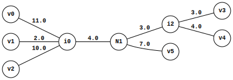
↩PREREQUISITES↩
WHAT: Given a distance matrix, if the distance matrix is ...
WHY: This operation is required for approximating a simple tree for a non-additive distance matrix.
ALGORITHM:
The algorithm essentially boils down to edge counting. Consider the following example simple tree...
If you were to choose a leaf node, then gather the paths from that leaf node to all other leaf nodes, the limb for ...
leaf_count - 1 times.def edge_count(self, l1: N) -> Counter[E]:
# Collect paths from l1 to all other leaf nodes
path_collection = []
for l2 in self.leaf_nodes:
if l1 == l2:
continue
path = self.path(l1, l2)
path_collection.append(path)
# Count edges across all paths
edge_counts = Counter()
for path in path_collection:
edge_counts.update(path)
# Return edge counts
return edge_counts
For example, given that the tree has 6 leaf nodes, edge_count(v1) counts v1's limb 5 times while all other limbs are counted once...

| (i0,i1) | (i1,i2) | (v0,i0) | (v1,i0) | (v2,i0) | (v3,i2) | (v4,i2) | (v5,i1) | |
|---|---|---|---|---|---|---|---|---|
| edge_count(v1) | 3 | 2 | 1 | 5 | 1 | 1 | 1 | 1 |
If you were to choose a pair of leaf nodes and add their edge_count()s together, the limb for ...
leaf_count times.def combine_edge_count(self, l1: N, l2: N) -> Counter[E]:
c1 = self.edge_count(l1)
c2 = self.edge_count(l2)
return c1 + c2
For example, combine_edge_count(v1,v2) counts v1's limb 6 times, v2's limb 6 times, and every other limb 2 times ...
| (i0,i1) | (i1,i2) | (v0,i0) | (v1,i0) | (v2,i0) | (v3,i2) | (v4,i2) | (v5,i1) | |
|---|---|---|---|---|---|---|---|---|
| edge_count(v1) | 3 | 2 | 1 | 5 | 1 | 1 | 1 | 1 |
| edge_count(v2) | 3 | 2 | 1 | 1 | 5 | 1 | 1 | 1 |
| ------- | ------- | ------- | ------- | ------- | ------- | ------- | ------- | |
| 6 | 4 | 2 | 6 | 6 | 2 | 2 | 2 |
The key to this algorithm is to normalize limb counts returned by combine_counts() such that each chosen limb's count equals to each non-chosen limb's count. That is, each chosen limb count needs to be reduced from leaf_count to 2.
To do this, each edge in the path between the chosen pair must be subtracted leaf_count - 2 times from combine_edge_count()'s result.
def combine_edge_count_and_normalize(self, l1: N, l2: N) -> Counter[E]:
edge_counts = self.combine_edge_count(l1, l2)
path_edges = self.path(l1, l2)
for e in path_edges:
edge_counts[e] -= self.leaf_count - 2
return edge_counts
Continuing with the example above, the chosen pair (v1 and v2) each have a limb count of 6 while all other limbs have a count of 2. combine_edge_count_and_normalize(v1,v2) subtracts each edge in path(v1,v2) 4 times from the counts...
| (i0,i1) | (i1,i2) | (v0,i0) | (v1,i0) | (v2,i0) | (v3,i2) | (v4,i2) | (v5,i1) | |
|---|---|---|---|---|---|---|---|---|
| edge_count(v1) | 3 | 2 | 1 | 5 | 1 | 1 | 1 | 1 |
| edge_count(v2) | 3 | 2 | 1 | 1 | 5 | 1 | 1 | 1 |
| -4 * path(v1,v2) | -4 | -4 | ||||||
| ------- | ------- | ------- | ------- | ------- | ------- | ------- | ------- | |
| 6 | 4 | 2 | 2 | 2 | 2 | 2 | 2 |
The insight here is that, if the chosen pair ...
def neighbour_check(self, l1: N, l2: N) -> bool:
path_edges = self.path(l1, l2)
return len(path_edges) == 2
For example, ...

That means if the pair aren't neighbours, combine_edge_count_and_normalize() will normalize limb counts for the pair in addition to reducing internal edge counts. For example, since v1 and v5 aren't neighbours, combine_edge_count_and_normalize(v1,v5) subtracts 4 from the limb counts of v1 and v5 as well as (i0,i1)'s count ...

| (i0,i1) | (i1,i2) | (v0,i0) | (v1,i0) | (v2,i0) | (v3,i2) | (v4,i2) | (v5,i1) | |
|---|---|---|---|---|---|---|---|---|
| edge_count(v1) | 3 | 2 | 1 | 5 | 1 | 1 | 1 | 1 |
| edge_count(v5) | 3 | 2 | 1 | 1 | 1 | 1 | 1 | 5 |
| -4 * path(v1,v5) | -4 | -4 | -4 | |||||
| ------- | ------- | ------- | ------- | ------- | ------- | ------- | ------- | |
| 2 | 4 | 2 | 2 | 2 | 2 | 2 | 2 |
Notice how (i0,i1) was reduced to 2 in the example above. It turns out that any internal edges in the path between the chosen pair get reduced to a count of 2, just like the chosen pair's limb counts.
def reduced_to_2_check(self, l1: N, l2: N) -> bool:
p = self.path(l1, l2)
c = self.combine_edge_count_and_normalize(l1, l2)
return all(c[edge] == 2 for edge in p) # if counts for all edges in p reduced to 2
To understand why, consider what's happening in the example. For edge_count(v1), notice how the count of each internal edge is consistent with the number of leaf nodes it leads to ...
That is, edge_count(v1) counts the internal edge ...
Breaking an internal edge divides a tree into two sub-trees. In the case of (i1,i2), the tree separates into two sub-trees where the...

Running edge_count() for any leaf node on the...
For example, since ...
edge_count(v0) counts (i1,i2) 2 times.edge_count(v1) counts (i1,i2) 2 times.edge_count(v2) counts (i1,i2) 2 times.edge_count(v3) counts (i1,i2) 4 times.edge_count(v4) counts (i1,i2) 4 times.edge_count(v5) counts (i1,i2) 2 times.def segregate_leaves(self, internal_edge: E) -> dict[N, N]:
leaf_to_end = {} # leaf -> one of the ends of internal_edge
e1, e2 = self.tree.get_edge_ends(internal_edge)
for l1 in self.leaf_nodes:
# If path from l1 to e1 ends with internal_edge, it means that it had to
# walk over the internal edge to get to e1, which ultimately means that l1
# it isn't on the e1 side / it's on the e2 side. Otherwise, it's on the e1
# side.
p = self.path(l1, e1)
if p[-1] != internal_edge:
leaf_to_end[l1] = e1
else:
leaf_to_end[l1] = e2
return leaf_to_end
If the chosen pair are on opposite sides, combine_edge_count() will count (i1,i2) 6 times, which is the same number of times that the chosen pair's limbs get counted (the number of leaf nodes in the tree). For example, combine_edge_count(v1,v3) counts (i1,i2) 6 times, because v1 sits on the i1 side (adds 2 to the count) and v3 sits on the i2 side (adds 4 to the count)...
| (i0,i1) | (i1,i2) | (v0,i0) | (v1,i0) | (v2,i0) | (v3,i2) | (v4,i2) | (v5,i1) | |
|---|---|---|---|---|---|---|---|---|
| edge_count(v1) | 3 | 2 | 1 | 5 | 1 | 1 | 1 | 1 |
| edge_count(v3) | 3 | 4 | 1 | 1 | 1 | 5 | 1 | 1 |
| ------- | ------- | ------- | ------- | ------- | ------- | ------- | ------- | |
| 6 | 6 | 2 | 6 | 2 | 6 | 2 | 2 |
This will always be the case for any simple tree: If a chosen pair aren't neighbours, the path between them always travels over at least one internal edge. combine_edge_count() will always count each edge in the path leaf_count times. In the above example, path(v1,v3) travels over internal edges (i0,i1) and (i1,i2) and as such both those edges in addition to the limbs of v1 and v3 have a count of 6.
Just like how combine_edge_count_and_normalize() reduces the counts of the chosen pair's limbs to 2, so will it reduce the count of the internal edges in the path of the chosen pair to 2. That is, all edges in the path between the chosen pair get reduced to a count of 2.
For example, path(v1,v3) has the edges [(v1,i0), (i0,i1), (i1, i2), (v3, i2)]. combine_edge_count_and_normalize(v1,v3) reduces the count of each edge in that path to 2 ...
| (i0,i1) | (i1,i2) | (v0,i0) | (v1,i0) | (v2,i0) | (v3,i2) | (v4,i2) | (v5,i1) | |
|---|---|---|---|---|---|---|---|---|
| edge_count(v1) | 3 | 2 | 1 | 5 | 1 | 1 | 1 | 1 |
| edge_count(v3) | 3 | 4 | 1 | 1 | 1 | 5 | 1 | 1 |
| -4 * path(v1,v3) | -4 | -4 | -4 | -4 | ||||
| ------- | ------- | ------- | ------- | ------- | ------- | ------- | ------- | |
| 2 | 2 | 2 | 2 | 2 | 2 | 2 | 2 |
The ultimate idea is that, for any leaf node pair in a simple tree, combine_edge_count_and_normalize() will have a count of ...
In other words, internal edges are the only differentiating factor in combine_edge_count_and_normalize()'s result. Non-neighbouring pairs will have certain internal edge counts reduced to 2 while neighbouring pairs keep internal edge counts > 2. In a ...
The pair with the highest total count is guaranteed to be a neighbouring pair because lesser total counts may have had their internal edges reduced.
ch7_code/src/phylogeny/NeighbourJoiningMatrix_EdgeCountExplainer.py (lines 126 to 136):
def neighbour_detect(self) -> tuple[int, tuple[N, N]]:
found_pair = None
found_total_count = -1
for l1, l2 in combinations(self.leaf_nodes, r=2):
normalized_counts = self.combine_edge_count_and_normalize(l1, l2)
total_count = sum(c for c in normalized_counts.values())
if total_count > found_total_count:
found_pair = l1, l2
found_total_count = total_count
return found_total_count, found_pair
⚠️NOTE️️️⚠️
The graph in the example run below is the same as the graph used above. It may look different because node positions may have shifted around.
Given the tree...
neighbour_detect reported that v4 and v3 have the highest total edge count of 26 and as such are guaranteed to be neighbours.
For each leaf pair in the tree, combine_count_and_normalize() totals are ...
| v0 | v1 | v2 | v3 | v4 | v5 | |
|---|---|---|---|---|---|---|
| v0 | 0 | 22 | 22 | 16 | 16 | 18 |
| v1 | 22 | 0 | 22 | 16 | 16 | 18 |
| v2 | 22 | 22 | 0 | 16 | 16 | 18 |
| v3 | 16 | 16 | 16 | 0 | 26 | 20 |
| v4 | 16 | 16 | 16 | 26 | 0 | 20 |
| v5 | 18 | 18 | 18 | 20 | 20 | 0 |

This same reasoning is applied to edge weights. That is, instead of just counting edges, the reasoning works the same if you were to multiply edge weights by those counts.
In the edge count version of this algorithm, edge_count() gets the paths from a leaf node to all other leaf nodes and counts up the number of times each edge is encountered. In the edge weight multiplicity version, instead of counting how many times each edge gets encountered, each time an edge gets encountered it increases the multiplicity of its weight ...
def edge_multiple(self, l1: N) -> Counter[E]:
# Collect paths from l1 to all other leaf nodes
path_collection = []
for l2 in self.leaf_nodes:
if l1 == l2:
continue
path = self.path(l1, l2)
path_collection.append(path)
# Sum edge weights across all paths
edge_weight_sums = Counter()
for path in path_collection:
for edge in path:
edge_weight_sums[edge] += self.tree.get_edge_data(edge)
# Return edge weight sums
return edge_weight_sums
| (i0,i1) | (i1,i2) | (v0,i0) | (v1,i0) | (v2,i0) | (v3,i2) | (v4,i2) | (v5,i1) | |
|---|---|---|---|---|---|---|---|---|
| edge_count(v1) | 3 | 2 | 1 | 5 | 1 | 1 | 1 | 1 |
| edge_multiple(v1) | 3*4=12 | 2*3=6 | 1*11=11 | 5*2=10 | 1*10=10 | 1*3=3 | 1*4=4 | 1*7=7 |
Similarly, where in the edge count version combine_edge_count() adds together the edge_count()s for two leaf nodes, the edge weight multiplicity version should add together the edge_multiple()s for two leaf nodes instead...
def combine_edge_multiple(self, l1: N, l2: N) -> Counter[E]:
c1 = self.edge_multiple(l1)
c2 = self.edge_multiple(l2)
return c1 + c2

| (i0,i1) | (i1,i2) | (v0,i0) | (v1,i0) | (v2,i0) | (v3,i2) | (v4,i2) | (v5,i1) | |
|---|---|---|---|---|---|---|---|---|
| combine_edge_count(v1) | 6 | 4 | 2 | 6 | 6 | 2 | 2 | 2 |
| combine_edge_multiple(v1) | 6*4=24 | 4*3=12 | 2*11=22 | 6*2=20 | 6*10=60 | 2*3=6 | 2*4=8 | 2*7=14 |
Similarly, where in the edge count version combine_edge_count_and_normalize() reduces all limbs and possibly some internal edges from combine_edge_count() to a count of 2, the edge multiplicity version reduces weights for those same limbs and edges to a multiple of 2...
def combine_edge_multiple_and_normalize(self, l1: N, l2: N) -> Counter[E]:
edge_multiples = self.combine_edge_multiple(l1, l2)
path_edges = self.path(l1, l2)
for e in path_edges:
edge_multiples[e] -= (self.leaf_count - 2) * self.tree.get_edge_data(e)
return edge_multiples

| (i0,i1) | (i1,i2) | (v0,i0) | (v1,i0) | (v2,i0) | (v3,i2) | (v4,i2) | (v5,i1) | |
|---|---|---|---|---|---|---|---|---|
| combine_edge_count_and_normalize(v1,v2) | 6 | 4 | 2 | 2 | 2 | 2 | 2 | 2 |
| combine_edge_multiple_and_normalize(v1,v2) | 6*4=24 | 4*3=12 | 2*11=22 | 2*2=20 | 2*10=60 | 2*3=6 | 2*4=8 | 2*7=14 |
Similar to combine_edge_count_and_normalize(), for any leaf node pair in a simple tree combine_edge_multiple_and_normalize() will have an edge weight multiple of ...
In other words, internal edge weight multiples are the only differentiating factor in combine_edge_multiple_and_normalize()'s result. Non-neighbouring pairs will have certain internal edge weight multiples reduced to 2 while neighbouring pairs keep internal edge weight multiples > 2. In a ...
The pair with the highest combined multiple is guaranteed to be a neighbouring pair because lesser combined multiples may have had their internal edge multiples reduced.
⚠️NOTE️️️⚠️
Still confused?
Given a simple tree, combine_edge_multiple(A, B) will make it so that...
leaf_count.leaf_count.For example, the following diagrams visualize edge weight multiplicities produced by combine_edge_multiple() for various pairs in a 4 leaf simple tree. Note how the selected pair's limbs have a multiplicity of 4, other limbs have a multiplicity of 2, and internal edges have a multiplicity of 4...
combine_edge_multiple_and_normalize(A, B) normalizes these multiplicities such that ...
| limb multiplicity | internal edge multiplicity | |
|---|---|---|
| neighbouring pairs | all = 2 | all >= 2 |
| non-neighbouring pairs | all = 2 | at least one = 2, others > 2 |
Since limbs always contribute the same regardless of whether the pair is neighbouring or not (2*weight), they can be ignored. That leaves internal edge contributions as the only thing differentiating between neighbouring and non-neighbouring pairs.
A simple tree with 2 or more leaf nodes is guaranteed to have at least 1 neighbouring pair. The pair producing the largest result is the one with maxed out contributions from its multiplied internal edges weights, meaning that none of those contributions were for internal edges reduced to 2*weight. Lesser results MAY be lesser because normalization reduced some of their internal edge weights to 2*weight, but the largest result you know for certain has all of its internal edge weights > 2*weight.
ch7_code/src/phylogeny/NeighbourJoiningMatrix_EdgeMultiplicityExplainer.py (lines 97 to 107):
def neighbour_detect(self) -> tuple[int, tuple[N, N]]:
found_pair = None
found_total_count = -1
for l1, l2 in combinations(self.leaf_nodes, r=2):
normalized_counts = self.combine_edge_multiple_and_normalize(l1, l2)
total_count = sum(c for c in normalized_counts.values())
if total_count > found_total_count:
found_pair = l1, l2
found_total_count = total_count
return found_total_count, found_pair
⚠️NOTE️️️⚠️
The graph in the example run below is the same as the graph used above. It may look different because node positions may have shifted around.
Given the tree...
neighbour_detect reported that v3 and v4 have the highest total edge sum of 122 and as such are guaranteed to be neighbours.
For each leaf pair in the tree, combine_count_and_normalize() totals are ...
| v0 | v1 | v2 | v3 | v4 | v5 | |
|---|---|---|---|---|---|---|
| v0 | 0 | 110 | 110 | 88 | 88 | 94 |
| v1 | 110 | 0 | 110 | 88 | 88 | 94 |
| v2 | 110 | 110 | 0 | 88 | 88 | 94 |
| v3 | 88 | 88 | 88 | 0 | 122 | 104 |
| v4 | 88 | 88 | 88 | 122 | 0 | 104 |
| v5 | 94 | 94 | 94 | 104 | 104 | 0 |
The matrix produced in the example above is called a neighbour joining matrix. The summation of combine_edge_multiple_and_normalize() performed in each matrix slot is rewritable as a set of addition and subtraction operations between leaf node distances. For example, recall that combine_edge_multiple_and_normalize(v1,v2) in the example graph breaks down to edge_multiple(v1) + edge_multiple(v2) - (leaf_count - 2) * path(v1,v2). The sum of ...
edge_multiple(v1) breaks down to...
dist(v1,v0) + dist(v1,v2) + dist(v1,v3) + dist(v1,v4) + dist(v1,v5)
edge_multiple(v2) breaks down to...
dist(v2,v0) + dist(v2,v1) + dist(v2,v3) + dist(v2,v4) + dist(v2,v5)
combine_edge_multiple(v2) is simply the sum of the two summations above:
dist(v1,v0) + dist(v1,v2) + dist(v1,v3) + dist(v1,v4) + dist(v1,v5) +
dist(v2,v0) + dist(v2,v1) + dist(v2,v3) + dist(v2,v4) + dist(v2,v5)
combine_edge_multiple_and_normalize(v1,v2) is simply the above summation but with dist(v1,v2) removed 4 times:
dist(v1,v0) + dist(v1,v2) + dist(v1,v3) + dist(v1,v4) + dist(v1,v5) +
dist(v2,v0) + dist(v2,v1) + dist(v2,v3) + dist(v2,v4) + dist(v2,v5) -
dist(v1,v2) - dist(v1,v2) - dist(v1,v2) - dist(v1,v2)
Since only leaf node distances are being used in the summation calculation, a distance matrix suffices as the input. The actual simple tree isn't required.
ch7_code/src/phylogeny/NeighbourJoiningMatrix.py (lines 21 to 49):
def total_distance(dist_mat: DistanceMatrix[N]) -> dict[N, float]:
ret = {}
for l1 in dist_mat.leaf_ids():
ret[l1] = sum(dist_mat[l1, l2] for l2 in dist_mat.leaf_ids())
return ret
def neighbour_joining_matrix(dist_mat: DistanceMatrix[N]) -> DistanceMatrix[N]:
tot_dists = total_distance(dist_mat)
n = dist_mat.n
ret = dist_mat.copy()
for l1, l2 in product(dist_mat.leaf_ids(), repeat=2):
if l1 == l2:
continue
ret[l1, l2] = tot_dists[l1] + tot_dists[l2] - (n - 2) * dist_mat[l1, l2]
return ret
def find_neighbours(dist_mat: DistanceMatrix[N]) -> tuple[N, N]:
nj_mat = neighbour_joining_matrix(dist_mat)
found_pair = None
found_nj_val = -1
for l1, l2 in product(nj_mat.leaf_ids_it(), repeat=2):
if nj_mat[l1, l2] > found_nj_val:
found_pair = l1, l2
found_nj_val = nj_mat[l1, l2]
assert found_pair is not None
return found_pair
Given the following distance matrix...
| v0 | v1 | v2 | v3 | v4 | v5 | |
|---|---|---|---|---|---|---|
| v0 | 0.0 | 13.0 | 21.0 | 21.0 | 22.0 | 22.0 |
| v1 | 13.0 | 0.0 | 12.0 | 12.0 | 13.0 | 13.0 |
| v2 | 21.0 | 12.0 | 0.0 | 20.0 | 21.0 | 21.0 |
| v3 | 21.0 | 12.0 | 20.0 | 0.0 | 7.0 | 13.0 |
| v4 | 22.0 | 13.0 | 21.0 | 7.0 | 0.0 | 14.0 |
| v5 | 22.0 | 13.0 | 21.0 | 13.0 | 14.0 | 0.0 |
... the neighbour joining matrix is ...
| v0 | v1 | v2 | v3 | v4 | v5 | |
|---|---|---|---|---|---|---|
| v0 | 0.0 | 110.0 | 110.0 | 88.0 | 88.0 | 94.0 |
| v1 | 110.0 | 0.0 | 110.0 | 88.0 | 88.0 | 94.0 |
| v2 | 110.0 | 110.0 | 0.0 | 88.0 | 88.0 | 94.0 |
| v3 | 88.0 | 88.0 | 88.0 | 0.0 | 122.0 | 104.0 |
| v4 | 88.0 | 88.0 | 88.0 | 122.0 | 0.0 | 104.0 |
| v5 | 94.0 | 94.0 | 94.0 | 104.0 | 104.0 | 0.0 |
↩PREREQUISITES↩
WHAT: Given a distance matrix and a pair of leaf nodes identified as being neighbours, if the distance matrix is ...
WHY: This operation is required for approximating a simple tree for a non-additive distance matrix.
Recall that the standard limb length finding algorithm determines the limb length of L by testing distances between leaf nodes to deduce a pair whose path crosses over L's parent. That won't work here because non-additive distance matrices have inconsistent distances -- non-additive means no tree exists that fits its distances.
ALGORITHM:
The algorithm is an extension of the standard limb length finding algorithm, essentially running the same computation multiple times and averaging out the results. For example, v1 and v2 are neighbours in the following simple tree...
Since they're neighbours, they share the same parent node, meaning that the path from...
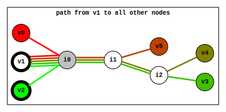
Recall that to find the limb length for L, the standard limb length algorithm had to perform a minimum test to find a pair of leaf nodes whose path travelled over the L's parent. Since this algorithm takes in two neighbouring leaf nodes, that test isn't required here. The path from L's neighbour to every other node always travels over L's parent.
Since the path from L's neighbour to every other node always travels over L's parent, the core computation from the standard algorithm is performed multiple times and averaged to produce an approximate limb length: 0.5 * (dist(L,N) + dist(L,X) - dist(N,X)), where ...
The averaging makes it so that if the input distance matrix were ...
⚠️NOTE️️️⚠️
Still confused? Think about it like this: When the distance matrix is non-additive, each X has a different "view" of what the limb length should be. You're averaging their views to get a single limb length value.
ch7_code/src/phylogeny/FindNeighbourLimbLengths.py (lines 21 to 40):
def view_of_limb_length_using_neighbour(dm: DistanceMatrix[N], l: N, l_neighbour: N, l_from: N) -> float:
return (dm[l, l_neighbour] + dm[l, l_from] - dm[l_neighbour, l_from]) / 2
def approximate_limb_length_using_neighbour(dm: DistanceMatrix[N], l: N, l_neighbour: N) -> float:
leaf_nodes = dm.leaf_ids()
leaf_nodes.remove(l)
leaf_nodes.remove(l_neighbour)
lengths = []
for l_from in leaf_nodes:
length = view_of_limb_length_using_neighbour(dm, l, l_neighbour, l_from)
lengths.append(length)
return mean(lengths)
def find_neighbouring_limb_lengths(dm: DistanceMatrix[N], l1: N, l2: N) -> tuple[float, float]:
l1_len = approximate_limb_length_using_neighbour(dm, l1, l2)
l2_len = approximate_limb_length_using_neighbour(dm, l2, l1)
return l1_len, l2_len
Given distance matrix...
| v0 | v1 | v2 | v3 | v4 | v5 | |
|---|---|---|---|---|---|---|
| v0 | 0.0 | 13.0 | 21.0 | 21.0 | 22.0 | 22.0 |
| v1 | 13.0 | 0.0 | 12.0 | 12.0 | 13.0 | 13.0 |
| v2 | 21.0 | 12.0 | 0.0 | 20.0 | 21.0 | 21.0 |
| v3 | 21.0 | 12.0 | 20.0 | 0.0 | 7.0 | 13.0 |
| v4 | 22.0 | 13.0 | 21.0 | 7.0 | 0.0 | 14.0 |
| v5 | 22.0 | 13.0 | 21.0 | 13.0 | 14.0 | 0.0 |
... and given that v1 and v2 are neighbours, the limb length for leaf node ...
ALGORITHM:
The unoptimized algorithm performs the computation once for each leaf node in the pair. This is inefficient in that it's repeating a lot of the same operations twice. This algorithm removes a lot of that duplicate work.
The unoptimized algorithm maps to the formula ...
... where ...
Just like the code, the formula removes l1 and l2 from the set of leaf nodes (S) for the average's summation. The number of leaf nodes (n) is subtracted by 2 for the average's division because l1 and l2 aren't included. To optimize, consider what happens when you re-organize the formula as follows...
Break up the division in the summation...
Pull out as a term of its own...
⚠️NOTE️️️⚠️
Confused about what's happening above? Think about it like this...
If you're including some constant amount for each element in the averaging, the result of the average will include that constant amount. In the case above, is a constant being added at each element of the average.
Combine the terms in the summation back together ...
Factor out from the entire equation...
⚠️NOTE️️️⚠️
Confused about what's happening above? It's just distributing and pulling out. For example, given the formula 5/2 + x*(3/2 + 5/2 + 9/2) ...
Break up the summation into two simpler summations ...
⚠️NOTE️️️⚠️
Confused about what's happening above? Think about it like this...
(9-1)+(8-2)+(7-3) = 9+8+7-1-2-3 = 24+(-6) = 24-6 = sum([9,8,7])-sum([1,2,3])
It's just re-ordering the operations so that it can be represented as two sums. It's perfectly valid.
The above formula calculates the limb length for l1. To instead find the formula for l2, just swap l1 and l2 ...
Note how the two are almost exactly the same. , and , and both summations are still there. The only exception is the order in which the summations are being subtracted ...
Consider what happens when you re-organize the formula for l2 as follows...
Convert the summation subtraction to an addition of a negative...
Swap the order of the summation addition...
Factor out -1 from summation addition ...
Simplify ...
Simplify ...
After this reorganization, the two match up almost exactly. The only difference is that an addition has been swapped to a subtraction...
The point of this optimization is that the summation calculation only needs to be performed once. The result can be used to calculate the limb length for both of the neighbouring leaf nodes...
Depending on your architecture, this optimized form can be tweaked even further for better performance. Recall that the distance of anything to itself is always zero, meaning that...
If the cost of removing those terms from their respective summations is higher than the cost of keeping them in (adding that extra 0), you might as well not remove them...
Similarly, removing both l2 from the first summation and l1 from the second summation doesn't actually change the result. The first summation will add but the second summation will remove , resulting in an overall contribution of 0. If the cost of removing those terms from their respective summations is higher than the cost of keeping them in, you might as well not remove them...
ch7_code/src/phylogeny/FindNeighbourLimbLengths_Optimized.py (lines 21 to 28):
def find_neighbouring_limb_lengths(dm: DistanceMatrix[N], l1: N, l2: N) -> tuple[float, float]:
l1_dist_sum = sum(dm[l1, k] for k in dm.leaf_ids())
l2_dist_sum = sum(dm[l2, k] for k in dm.leaf_ids())
res = (l1_dist_sum - l2_dist_sum) / (dm.n - 2)
l1_len = (dm[l1, l2] + res) / 2
l2_len = (dm[l1, l2] - res) / 2
return l1_len, l2_len
Given distance matrix...
| v0 | v1 | v2 | v3 | v4 | v5 | |
|---|---|---|---|---|---|---|
| v0 | 0.0 | 13.0 | 21.0 | 21.0 | 22.0 | 22.0 |
| v1 | 13.0 | 0.0 | 12.0 | 12.0 | 13.0 | 13.0 |
| v2 | 21.0 | 12.0 | 0.0 | 20.0 | 21.0 | 21.0 |
| v3 | 21.0 | 12.0 | 20.0 | 0.0 | 7.0 | 13.0 |
| v4 | 22.0 | 13.0 | 21.0 | 7.0 | 0.0 | 14.0 |
| v5 | 22.0 | 13.0 | 21.0 | 13.0 | 14.0 | 0.0 |
... and given that v1 and v2 are neighbours, the limb length for leaf node ...
↩PREREQUISITES↩
WHAT: Given a distance matrix and a pair of leaf nodes identified as being neighbours, this algorithm removes those neighbours from the distance matrix and brings their parent to the forefront (as a leaf node in the distance matrix). If the distance matrix is a non-additive distance matrix (but close to being additive), this algorithm approximates the shared parent.
WHY: This operation is required for approximating a simple tree for a non-additive distance matrix.
ALGORITHM:
At a high-level, this algorithm essentially boils down to balding each of the neighbours and combining them together. For example, v0 and v1 are neighbours in the following simple tree...
| v0 | v1 | v2 | v3 | v4 | v5 | |
|---|---|---|---|---|---|---|
| v0 | 0 | 13 | 21 | 21 | 22 | 22 |
| v1 | 13 | 0 | 12 | 12 | 13 | 13 |
| v2 | 21 | 12 | 0 | 20 | 21 | 21 |
| v3 | 21 | 12 | 20 | 0 | 7 | 13 |
| v4 | 22 | 13 | 21 | 7 | 0 | 14 |
| v5 | 22 | 13 | 21 | 13 | 14 | 0 |
Balding both v0 and v1 results in ...

| v0 | v1 | v2 | v3 | v4 | v5 | |
|---|---|---|---|---|---|---|
| v0 | 0 | 0 | 10 | 10 | 11 | 11 |
| v1 | 0 | 0 | 10 | 10 | 11 | 11 |
| v2 | 10 | 10 | 0 | 20 | 21 | 21 |
| v3 | 10 | 10 | 20 | 0 | 7 | 13 |
| v4 | 11 | 11 | 21 | 7 | 0 | 14 |
| v5 | 11 | 11 | 21 | 13 | 14 | 0 |
Merging together balded v0 and balded v1 is done by iterating over the other leaf nodes and averaging their balded distances (e.g. the merged distance to v2 is calculated as dist(v0,v2) + dist(v1,v2) / 2)...

| M | v2 | v3 | v4 | v5 | |
|---|---|---|---|---|---|
| M | 0 | (10+10)/2=10 | (10+10)/2=10 | (11+11)/2=11 | (11+11)/2=11 |
| v2 | (10+10)/2=10 | 0 | 20 | 21 | 21 |
| v3 | (10+10)/2=10 | 20 | 0 | 7 | 13 |
| v4 | (11+11)/2=11 | 21 | 7 | 0 | 14 |
| v5 | (11+11)/2=11 | 21 | 13 | 14 | 0 |
⚠️NOTE️️️⚠️
Notice how when both v0 and v1 are balded, their distances to other leaf nodes are exactly the same. So, why average it instead of just taking the distinct value? Because averaging helps with understanding the revised form of the algorithm explained in another section.
This algorithm is essentially removing two neighbouring leaf nodes and bringing their shared parent to the forefront (into the distance matrix as a leaf node). In the example above, the new leaf node M represents internal node i0 because the distance between M and i0 is 0.
ch7_code/src/phylogeny/ExposeNeighbourParent_AdditiveExplainer.py (lines 22 to 37):
def expose_neighbour_parent(
dm: DistanceMatrix[N],
l1: N,
l2: N,
gen_node_id: Callable[[], N]
) -> N:
bald_distance_matrix(dm, l1)
bald_distance_matrix(dm, l2)
m_id = gen_node_id()
m_dists = {x: (dm[l1, x] + dm[l2, x]) / 2 for x in dm.leaf_ids_it()}
m_dists[m_id] = 0
dm.insert(m_id, m_dists)
dm.delete(l1)
dm.delete(l2)
return m_id
Given additive distance matrix...
| v0 | v1 | v2 | v3 | v4 | v5 | |
|---|---|---|---|---|---|---|
| v0 | 0.0 | 13.0 | 21.0 | 21.0 | 22.0 | 22.0 |
| v1 | 13.0 | 0.0 | 12.0 | 12.0 | 13.0 | 13.0 |
| v2 | 21.0 | 12.0 | 0.0 | 20.0 | 21.0 | 21.0 |
| v3 | 21.0 | 12.0 | 20.0 | 0.0 | 7.0 | 13.0 |
| v4 | 22.0 | 13.0 | 21.0 | 7.0 | 0.0 | 14.0 |
| v5 | 22.0 | 13.0 | 21.0 | 13.0 | 14.0 | 0.0 |
... and given that v0 and v1 are neighbours, balding and merging v0 and v1 results in ...
| N1 | v2 | v3 | v4 | v5 | |
|---|---|---|---|---|---|
| N1 | 0.0 | 10.0 | 10.0 | 11.0 | 11.0 |
| v2 | 10.0 | 0.0 | 20.0 | 21.0 | 21.0 |
| v3 | 10.0 | 20.0 | 0.0 | 7.0 | 13.0 |
| v4 | 11.0 | 21.0 | 7.0 | 0.0 | 14.0 |
| v5 | 11.0 | 21.0 | 13.0 | 14.0 | 0.0 |
The problem with the above algorithm is that balding a limb can't be done on a non-additive distance matrix. That is, since a tree doesn't exist for a non-additive distance matrix, it's impossible to get a definitive limb length to use for balding. In such cases, a limb length for each path being balded can be approximated. For example, the following non-additive distance matrix is a slightly tweaked version of the additive distance matrix in the initial example where v0 and v1 are neighbours...
| v0 | v1 | v2 | v3 | v4 | v5 | |
|---|---|---|---|---|---|---|
| v0 | 0 | 14 | 22 | 20 | 23 | 22 |
| v1 | 14 | 0 | 12 | 10 | 12 | 14 |
| v2 | 22 | 12 | 0 | 20 | 22 | 20 |
| v3 | 20 | 10 | 20 | 0 | 8 | 12 |
| v4 | 23 | 12 | 22 | 8 | 0 | 15 |
| v5 | 22 | 14 | 20 | 12 | 15 | 0 |
Assuming v0 and v1 are still neighbours, the limb length for v0 based on ...
Similarly, assuming v0 and v1 are still neighbours, the limb length for v1 based on ...
Note how the limb lengths above are very close to the corresponding limb lengths in the original un-tweaked additive distance matrix: 12 for v0, 2 for v1.
⚠️NOTE️️️⚠️
Confused where the above computations are coming from? See "view" of a limb length is described in Algorithms/Phylogeny/Find Neighbour Limb Lengths/Average Algorithm.
To bald a limb in the distance matrix, each leaf node needs its view of the limb length subtracted from its distance. Balding v0 and v1 results in ...
| v0 | v1 | v2 | v3 | v4 | v5 | |
|---|---|---|---|---|---|---|
| v0 | 0 | ????? | 22-12=10 | 20-12=8 | 23-12.5=10.5 | 22-11=11 |
| v1 | ????? | 0 | 12-2=10 | 10-2=8 | 12-1.5=10.5 | 14-3=11 |
| v2 | 22-12=10 | 12-2=10 | 0 | 20 | 22 | 20 |
| v3 | 20-12=8 | 10-2=8 | 20 | 0 | 8 | 12 |
| v4 | 23-12.5=10.5 | 12-1.5=10.5 | 22 | 8 | 0 | 15 |
| v5 | 22-11=11 | 14-3=11 | 20 | 12 | 15 | 0 |
Merging together v0 and v1 happens just as it did before, by averaging together the balded distances for each leaf node...
| M | v2 | v3 | v4 | v5 | |
|---|---|---|---|---|---|
| M | 0 | 22-12=10 | 20-12=8 | 23-12.5=10.5 | 22-11=11 |
| v2 | (10+10)/2=10 | 0 | 20 | 22 | 20 |
| v3 | (8+8)/2=8 | 20 | 0 | 8 | 12 |
| v4 | (10.5+10.5)/2=10.5 | 22 | 8 | 0 | 15 |
| v5 | (11+11)/2=11 | 20 | 12 | 15 | 0 |
Note that dist(v0,v1) is unknown in the balded matrix (denoted by a bunch of question marks). That doesn't matter because dist(v0,v1) merges into dist(M,M), which must always be 0 (the distance from anything to itself is always 0).
ch7_code/src/phylogeny/ExposeNeighbourParent.py (lines 23 to 50):
def expose_neighbour_parent(
dm: DistanceMatrix[N],
l1: N,
l2: N,
gen_node_id: Callable[[], N]
) -> N:
# bald
l1_len_views = {}
l2_len_views = {}
for x in dm.leaf_ids_it():
if x == l1 or x == l2:
continue
l1_len_views[x] = view_of_limb_length_using_neighbour(dm, l1, l2, x)
l2_len_views[x] = view_of_limb_length_using_neighbour(dm, l2, l1, x)
for x in dm.leaf_ids_it():
if x == l1 or x == l2:
continue
dm[l1, x] = dm[l1, x] - l1_len_views[x]
dm[l2, x] = dm[l2, x] - l2_len_views[x]
# merge
m_id = gen_node_id()
m_dists = {x: (dm[l1, x] + dm[l2, x]) / 2 for x in dm.leaf_ids_it()}
m_dists[m_id] = 0
dm.insert(m_id, m_dists)
dm.delete(l1)
dm.delete(l2)
return m_id
Given NON- additive distance matrix...
| v0 | v1 | v2 | v3 | v4 | v5 | |
|---|---|---|---|---|---|---|
| v0 | 0.0 | 14.0 | 22.0 | 20.0 | 23.0 | 22.0 |
| v1 | 14.0 | 0.0 | 12.0 | 10.0 | 12.0 | 14.0 |
| v2 | 22.0 | 12.0 | 0.0 | 20.0 | 22.0 | 20.0 |
| v3 | 20.0 | 10.0 | 20.0 | 0.0 | 8.0 | 12.0 |
| v4 | 23.0 | 12.0 | 22.0 | 8.0 | 0.0 | 15.0 |
| v5 | 22.0 | 14.0 | 20.0 | 12.0 | 15.0 | 0.0 |
... and given that v0 and v1 are neighbours, balding and merging v0 and v1 results in ...
| N1 | v2 | v3 | v4 | v5 | |
|---|---|---|---|---|---|
| N1 | 0.0 | 10.0 | 8.0 | 10.5 | 11.0 |
| v2 | 10.0 | 0.0 | 20.0 | 22.0 | 20.0 |
| v3 | 8.0 | 20.0 | 0.0 | 8.0 | 12.0 |
| v4 | 10.5 | 22.0 | 8.0 | 0.0 | 15.0 |
| v5 | 11.0 | 20.0 | 12.0 | 15.0 | 0.0 |
↩PREREQUISITES↩
ALGORITHM:
This algorithm flips around the idea of finding a limb length to perform the same thing as the averaging algorithm. Instead of finding a limb length, it finds everything in the path EXCEPT for the limb length.
For example, consider the following simple tree and corresponding additive distance matrix ...
| v0 | v1 | v2 | v3 | v4 | v5 | |
|---|---|---|---|---|---|---|
| v0 | 0 | 13 | 21 | 21 | 22 | 22 |
| v1 | 13 | 0 | 12 | 12 | 13 | 13 |
| v2 | 21 | 12 | 0 | 20 | 21 | 21 |
| v3 | 21 | 12 | 20 | 0 | 7 | 13 |
| v4 | 22 | 13 | 21 | 7 | 0 | 14 |
| v5 | 22 | 13 | 21 | 13 | 14 | 0 |
Assume that you hadn't already seen the tree but somehow already knew that v0 and v1 are neighbours. Consider what happens when you use the standard limb length algorithm to find v0's limb length from v3 ...
By slightly tweaking the terms in the expression above, it's possible to instead find the distance between the neighbouring pair's parent (i0) and v3 ...
⚠️NOTE️️️⚠️
All the same distances are being used in this new computation, they're just being added / subtracted in a different order.
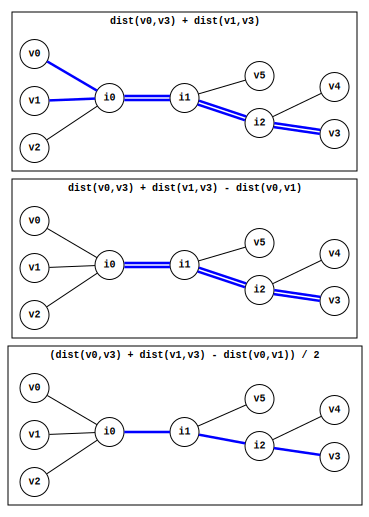
The inverse_len function above in abstracted form is 0.5 * (dist(L,X) + dist(N,X) - dist(L,N)), where ...
Note that the distance calculated by the inverse_len example above is exactly the same distance you'd get for v3 when balding and merging v0 and v1 using the averaging algorithm. That is, instead of using the averaging algorithm to bald and merge the neighbouring pair, you can just inject inverse_len's result for each leaf node into the distance matrix and remove the neighbouring pair.
The inverse_len for leaf node ...
| M | v2 | v3 | v4 | v5 | |
|---|---|---|---|---|---|
| M | 0 | (21+12-13)/2=10 | (21+12-13)/2=10 | (21+12-13)/2=10 | (21+12-13)/2=10 |
| v2 | (21+12-13)/2=10 | 0 | 20 | 21 | 21 |
| v3 | (21+12-13)/2=10 | 20 | 0 | 7 | 13 |
| v4 | (21+12-13)/2=10 | 21 | 7 | 0 | 14 |
| v5 | (22+13-13)/2=11 | 21 | 13 | 14 | 0 |
In fact, inverse_len is just the simplified expression form of the averaging algorithm. Consider the steps you have to go through for each leaf node to bald and merge the neighbouring pair v0 and v1 using the averaging algorithm. For example, to figure out the balded distance between v3 and the merged node, the steps are ...
Get v3's view of v0's limb length:
len(v0) = 0.5 * (dist(v0,v1) + dist(v0,v3) - dist(v1,v3))
Get v3's view of v1's limb length:
len(v1) = 0.5 * (dist(v1,v0) + dist(v1,v3) - dist(v0,v3))
Bald v0 for v3 using step 1's result:
bald_dist(v0,v5) = dist(v0,v3) - len(v0)
Bald v1 for v3 using step 2's result:
bald_dist(v1,v5) = dist(v1,v3) - len(v1)
Average results from step 3 and 4 to produce the merged node's distance for v3:
merge(v0,v1) = (bald_dist(v0,v5) + bald_dist(v1,v5)) / 2
Consider what happens when you combine all of the above steps together as a single expression ...
Simplifying that expression results in ...
The simplified form of the expression is exactly the computation that the inverse_len example ran for v3 ...
Since this algorithm is doing the same thing as the averaging algorithm, it'll work on non-additive distance matrices in the exact same way as the averaging algorithm. It's just the averaging algorithm in simplified / optimized form. For example, the following non-additive distance matrix is a slightly tweaked version of the additive distance matrix in the initial example where v0 and v1 are neighbours...
| v0 | v1 | v2 | v3 | v4 | v5 | |
|---|---|---|---|---|---|---|
| v0 | 0 | 14 | 22 | 20 | 23 | 22 |
| v1 | 14 | 0 | 12 | 10 | 12 | 14 |
| v2 | 22 | 12 | 0 | 20 | 22 | 20 |
| v3 | 20 | 10 | 20 | 0 | 8 | 12 |
| v4 | 23 | 12 | 22 | 8 | 0 | 15 |
| v5 | 22 | 14 | 20 | 12 | 15 | 0 |
Assuming v0 and v1 are still neighbours, the merged distance for ...
| M | v2 | v3 | v4 | v5 | |
|---|---|---|---|---|---|
| M | 0 | (22+12-14)/2=10 | (20+10-14)/2=8 | (23+12-14)/2=10.5 | (22+14-14)/2=11 |
| v2 | (22+12-14)/2=10 | 0 | 20 | 22 | 20 |
| v3 | (20+10-14)/2=8 | 20 | 0 | 8 | 12 |
| v4 | (23+12-14)/2=10.5 | 22 | 8 | 0 | 15 |
| v5 | (22+14-14)/2=11 | 20 | 12 | 15 | 0 |
ch7_code/src/phylogeny/ExposeNeighbourParent_Optimized.py (lines 22 to 35):
def expose_neighbour_parent(
dm: DistanceMatrix[N],
l1: N,
l2: N,
gen_node_id: Callable[[], N]
) -> N:
m_id = gen_node_id()
m_dists = {x: (dm[l1, x] + dm[l2, x] - dm[l1, l2]) / 2 for x in dm.leaf_ids_it()}
m_dists[m_id] = 0
dm.insert(m_id, m_dists)
dm.delete(l1)
dm.delete(l2)
return m_id
Given NON- additive distance matrix...
| v0 | v1 | v2 | v3 | v4 | v5 | |
|---|---|---|---|---|---|---|
| v0 | 0.0 | 14.0 | 22.0 | 20.0 | 23.0 | 22.0 |
| v1 | 14.0 | 0.0 | 12.0 | 10.0 | 12.0 | 14.0 |
| v2 | 22.0 | 12.0 | 0.0 | 20.0 | 22.0 | 20.0 |
| v3 | 20.0 | 10.0 | 20.0 | 0.0 | 8.0 | 12.0 |
| v4 | 23.0 | 12.0 | 22.0 | 8.0 | 0.0 | 15.0 |
| v5 | 22.0 | 14.0 | 20.0 | 12.0 | 15.0 | 0.0 |
... and given that v0 and v1 are neighbours, balding and merging v0 and v1 results in ...
| N1 | v2 | v3 | v4 | v5 | |
|---|---|---|---|---|---|
| N1 | 0.0 | 10.0 | 8.0 | 10.5 | 11.0 |
| v2 | 10.0 | 0.0 | 20.0 | 22.0 | 20.0 |
| v3 | 8.0 | 20.0 | 0.0 | 8.0 | 12.0 |
| v4 | 10.5 | 22.0 | 8.0 | 0.0 | 15.0 |
| v5 | 11.0 | 20.0 | 12.0 | 15.0 | 0.0 |
↩PREREQUISITES↩
WHAT: Given a distance matrix, convert that distance matrix into an evolutionary tree. Different algorithms are presented that either ...
WHY: Recall that converting a distance matrix to a tree is the end goal of phylogeny. Given the distances between a set of known / present-day entities, these algorithms will infer their evolutionary relationships.
ALGORITHM:
Unweighted pair group method with arithmetic mean (UPGMA) is a heuristic algorithm used to estimate a binary ultrametric tree for some distance matrix.
⚠️NOTE️️️⚠️
A binary ultrametric tree is an ultrametric tree where each internal node only branches to two children. In other words, a binary ultrametric tree is a rooted binary tree where all leaf nodes are equidistant from the root.
The algorithm assumes that the rate of mutation is consistent (molecular clock). For example, ...
This assumption is what makes the tree ultrametric. A set of present day species (leaf nodes) are assumed to all have the same amount of mutation (distance) from their shared ancestor (shared internal node).
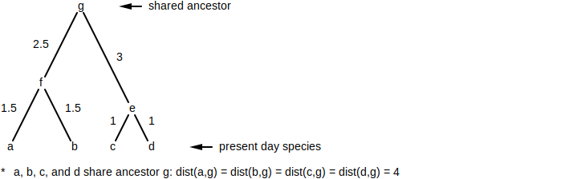
For example, assume the present year is 2000. Four present day species share a common ancestor from the year 1800. The age difference between each of these four species and their shared ancestor is the same: 2000 - 1800 = 200 years.
Since the rate of mutation is assumed to be consistent, all four present day species should have roughly the same amount of mutation when compared against their shared ancestor: 200 years worth of mutation. Assume the number of genome rearrangement reversals is being used as the measure of mutation. If the rate of reversals expected per 100 years is 2, the distance between each of the four present day species and their shared ancestor would be 4: 2 reversals per century * 2 centuries = 4 reversals.
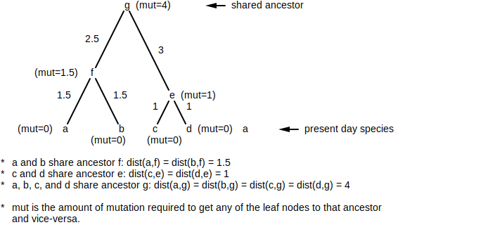
In the example above, ...
Given a distance matrix, UPGMA estimates an ultrametric tree for that matrix by iteratively picking two available nodes and connecting them with a new internal node, where available node is defined as a node without a parent. The process stops once a single available node remains (that node being the root node).
Which two nodes are selected per iteration is based on clustering. In the beginning, each leaf node in the distance matrix is its own cluster: Ca={a}, Cb={b}, Cc={c}, and Cd={d}.
| Ca={a} | Cb={b} | Cc={c} | Cd={d} | |
|---|---|---|---|---|
| Ca={a} | 0 | 3 | 4 | 3 |
| Cb={b} | 3 | 0 | 4 | 5 |
| Cc={c} | 4 | 4 | 0 | 2 |
| Cd={d} | 3 | 5 | 2 | 0 |
The two clusters with the minimum distance are chosen to connect in the tree. In the example distance matrix above, the minimum distance is between Cc and Cd (distance of 2), meaning that Cc and Cd should be connected together with a new internal node.
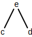
⚠️NOTE️️️⚠️
Note what's happening here. The assumption being made that the leaf nodes for the minimum distance matrix value are always neighbours. Not always true, but probably good enough as a starting point. For example, the following distance matrix and tree would identify v0 and v2 as neighbours when in fact they aren't ...
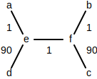
| a | b | c | d | |
|---|---|---|---|---|
| a | 0 | 91 | 3 | 92 |
| b | 91 | 0 | 92 | 181 |
| c | 3 | 92 | 0 | 91 |
| d | 92 | 181 | 91 | 0 |
It may be a good idea to use Algorithms/Phylogeny/Find Neighbours to short circuit this restriction, possibly producing a better heuristic. But, the original algorithm doesn't call for it.
This new internal node represents a shared ancestor. The distance of 2 represents the total amount of mutation that any species in Cc must undergo to become a species in Cd (and vice-versa). Since the assumption is that the rate of mutation is steady, it's assumed that the species in Cc and species in Cd all have an equal amount of mutation from their shared ancestor:

The distance matrix then gets modified by merging together the recently connected clusters. The new cluster combines the leaf nodes from both clusters: Ce={c,d}, where new distance matrix distances for that cluster are computed using the formula...
ch7_code/src/phylogeny/UPGMA.py (lines 64 to 70):
def cluster_dist(dm_orig: DistanceMatrix[N], c_set: ClusterSet, c1: str, c2: str) -> float:
c1_set = c_set[c1] # this should be a set of leaf nodes from the ORIGINAL unmodified distance matrix
c2_set = c_set[c2] # this should be a set of leaf nodes from the ORIGINAL unmodified distance matrix
numerator = sum(dm_orig[i, j] for i, j in product(c1_set, c2_set)) # sum it all up
denominator = len(c1_set) * len(c2_set) # number of additions that occurred
return numerator / denominator
| Ca={a} | Cb={b} | Ce={c,d} | |
|---|---|---|---|
| Ca={a} | 0 | 3 | 3.5 |
| Cb={b} | 3 | 0 | 7.5 |
| Ce={c,d} | 3.5 | 7.5 | 0 |
This process repeats at each iteration until a single cluster remains. At the next iteration, Ca and Cb have the minimum distance in the previous distance matrix (distance of 3), meaning that Ca and Cb should be connected with a new internal internal node:
| Cf={a,b} | Ce={c,d} | |
|---|---|---|
| Cf={a,b} | 0 | 4 |
| Ce={c,d} | 4 | 0 |
At the next iteration, Ce and Cf have the minimum distance in the previous distance matrix (distance of 4), meaning that Ce and Cf should be connected together with a new internal node:
| Cg={a,b,c,d} | |
|---|---|
| Cg={a,b,c,d} | 0 |
The process is complete. Only a single cluster remains (representing the root) / the ultrametric tree is fully generated.

Note that the generated ultrametric tree above is an estimation. The distance matrix for the example above isn't an additive distance matrix, meaning a unique simple tree doesn't exist for it. Even if it were an additive distance matrix, an ultrametric tree is a rooted tree, meaning it'll never qualify as the simple tree unique to that additive distance matrix (root node has degree of 2 which isn't allowed in a simple tree).
In addition, some distances in the generated ultrametric tree are wildly off from the original distance matrix distances. For example, ...
Part of this may have to do with the assumption that the closest two nodes in the distance matrix are neighbors in the ultrametric tree.
ch7_code/src/phylogeny/UPGMA.py (lines 74 to 143):
def find_clusters_with_min_dist(dm: DistanceMatrix[N], c_set: ClusterSet) -> tuple[N, N, float]:
assert c_set.active_count() > 1
min_n1_id = None
min_n2_id = None
min_dist = None
for n1, n2 in product(c_set.active(), repeat=2):
if n1 == n2:
continue
d = dm[n1, n2]
if min_dist is None or d < min_dist:
min_n1_id = n1
min_n2_id = n2
min_dist = d
assert min_n1_id is not None and min_n2_id is not None and min_dist is not None
return min_n1_id, min_n2_id, min_dist
def cluster_merge(
dm: DistanceMatrix[N],
dm_orig: DistanceMatrix[N],
c_set: ClusterSet,
old_id1: N,
old_id2: N,
new_id: N
) -> None:
c_set.merge(new_id, old_id1, old_id2) # create new cluster w/ elements from old - old_ids deactived+new_id actived
new_dists = {}
for existing_id in dm.leaf_ids():
if existing_id == old_id1 or existing_id == old_id2:
continue
new_dist = cluster_dist(dm_orig, c_set, new_id, existing_id)
new_dists[existing_id] = new_dist
dm.merge(new_id, old_id1, old_id2, new_dists) # remove old ids and replace with new_id that has new distances
def upgma(dm: DistanceMatrix[N]) -> tuple[Graph, N]:
g = Graph()
c_set = ClusterSet(dm) # primed with leaf nodes (all active)
for node in dm.leaf_ids_it():
g.insert_node(node, 0) # initial node weights (each leaf node has an age of 0)
dm_orig = dm.copy()
# set node ages
next_node_id = 0
next_edge_id = 0
while c_set.active_count() > 1:
min_n1_id, min_n2_id, min_dist = find_clusters_with_min_dist(dm, c_set)
new_node_id = next_node_id
new_node_age = min_dist / 2
g.insert_node(f'C{new_node_id}', new_node_age)
next_node_id += 1
g.insert_edge(f'E{next_edge_id}', min_n1_id, f'C{new_node_id}')
next_edge_id += 1
g.insert_edge(f'E{next_edge_id}', min_n2_id, f'C{new_node_id}')
next_edge_id += 1
cluster_merge(dm, dm_orig, c_set, min_n1_id, min_n2_id, f'C{new_node_id}')
# set amount of age added by each edge
nodes_by_age = sorted([(n, g.get_node_data(n)) for n in g.get_nodes()], key=lambda x: x[1])
set_edges = set() # edges that have already had their weights set
for child_n, child_age in nodes_by_age:
for e in g.get_outputs(child_n):
if e in set_edges:
continue
parent_n = [n for n in g.get_edge_ends(e) if n != child_n].pop()
parent_age = g.get_node_data(parent_n)
weight = parent_age - child_age
g.update_edge_data(e, weight)
set_edges.add(e)
root_id = c_set.active().pop()
return g, root_id
Given the distance matrix ...
| v0 | v1 | v2 | v3 | v4 | v5 | |
|---|---|---|---|---|---|---|
| v0 | 0.0 | 13.0 | 21.0 | 21.0 | 22.0 | 22.0 |
| v1 | 13.0 | 0.0 | 12.0 | 12.0 | 13.0 | 13.0 |
| v2 | 21.0 | 12.0 | 0.0 | 20.0 | 21.0 | 21.0 |
| v3 | 21.0 | 12.0 | 20.0 | 0.0 | 7.0 | 13.0 |
| v4 | 22.0 | 13.0 | 21.0 | 7.0 | 0.0 | 14.0 |
| v5 | 22.0 | 13.0 | 21.0 | 13.0 | 14.0 | 0.0 |
... the UPGMA generated tree is ...

↩PREREQUISITES↩
ALGORITHM:
Additive phylogeny is a recursive algorithm that finds the unique simple tree for some additive distance matrix. At each recursive step, the algorithm trims off a single leaf node from the distance matrix, stopping once the distance matrix consists of only two leaf nodes. The simple tree for any 2x2 distance matrix is obvious as ...
For example, the following 2x2 distance matrix has the following simple tree...
| v0 | v1 | |
|---|---|---|
| v0 | 0 | 14 |
| v1 | 14 | 0 |
ch7_code/src/phylogeny/AdditivePhylogeny.py (lines 34 to 49):
def to_obvious_graph(
dm: DistanceMatrix[N],
gen_edge_id: Callable[[], E]
) -> Graph[N, ND, E, float]:
if dm.n != 2:
raise ValueError('Distance matrix must only contain 2 leaf nodes')
l1, l2 = dm.leaf_ids()
g = Graph()
g.insert_node(l1)
g.insert_node(l2)
g.insert_edge(
gen_edge_id(),
l1,
l2,
dm[l1, l2]
)
return g
As the algorithm returns from each recursive step, it has 2 pieces of information:
That's enough information to know where on the returned tree L's limb should be added and what L's limb length should be (un-trimming the tree). At the end, the algorithm will have constructed the entire simple tree for the additive distance matrix.
ch7_code/src/phylogeny/AdditivePhylogeny.py (lines 55 to 68):
def additive_phylogeny(
dm: DistanceMatrix[N],
gen_node_id: Callable[[], N],
gen_edge_id: Callable[[], E]
) -> Graph:
if dm.n == 2:
return to_obvious_graph(dm, gen_edge_id)
n = next(dm.leaf_ids_it())
dm_untrimmed = dm.copy()
trim_distance_matrix(dm, n)
g = additive_phylogeny(dm, gen_node_id, gen_edge_id)
untrim_tree(dm_untrimmed, g, gen_node_id, gen_edge_id)
return g
Given the distance matrix ...
| v0 | v1 | v2 | v3 | v4 | v5 | |
|---|---|---|---|---|---|---|
| v0 | 0.0 | 13.0 | 21.0 | 21.0 | 22.0 | 22.0 |
| v1 | 13.0 | 0.0 | 12.0 | 12.0 | 13.0 | 13.0 |
| v2 | 21.0 | 12.0 | 0.0 | 20.0 | 21.0 | 21.0 |
| v3 | 21.0 | 12.0 | 20.0 | 0.0 | 7.0 | 13.0 |
| v4 | 22.0 | 13.0 | 21.0 | 7.0 | 0.0 | 14.0 |
| v5 | 22.0 | 13.0 | 21.0 | 13.0 | 14.0 | 0.0 |
Trimmed v0 to produce distance matrix ...
| v1 | v2 | v3 | v4 | v5 | |
|---|---|---|---|---|---|
| v1 | 0.0 | 12.0 | 12.0 | 13.0 | 13.0 |
| v2 | 12.0 | 0.0 | 20.0 | 21.0 | 21.0 |
| v3 | 12.0 | 20.0 | 0.0 | 7.0 | 13.0 |
| v4 | 13.0 | 21.0 | 7.0 | 0.0 | 14.0 |
| v5 | 13.0 | 21.0 | 13.0 | 14.0 | 0.0 |
Trimmed v1 to produce distance matrix ...
| v2 | v3 | v4 | v5 | |
|---|---|---|---|---|
| v2 | 0.0 | 20.0 | 21.0 | 21.0 |
| v3 | 20.0 | 0.0 | 7.0 | 13.0 |
| v4 | 21.0 | 7.0 | 0.0 | 14.0 |
| v5 | 21.0 | 13.0 | 14.0 | 0.0 |
Trimmed v3 to produce distance matrix ...
| v2 | v4 | v5 | |
|---|---|---|---|
| v2 | 0.0 | 21.0 | 21.0 |
| v4 | 21.0 | 0.0 | 14.0 |
| v5 | 21.0 | 14.0 | 0.0 |
Trimmed v2 to produce distance matrix ...
| v4 | v5 | |
|---|---|---|
| v4 | 0.0 | 14.0 |
| v5 | 14.0 | 0.0 |
Obvious simple tree...

Attached v2 to produce tree...
Attached v3 to produce tree...

Attached v1 to produce tree...
Attached v0 to produce tree...
⚠️NOTE️️️⚠️
The book is inconsistent about whether simple trees can have internal edges of weight 0. Early in the book it says that it can and later on it says that it goes back on that and says internal edges of weight 0 aren't actually allowed. I'd already implied as much given that they'd be the same organism at both ends, and this algorithm explicitly won't allow it in that if it walks up to a node, it'll branch off that node (an additional edge weight of 0 won't extend past that node).
↩PREREQUISITES↩
ALGORITHM:
Neighbour joining phylogeny is a recursive algorithm that either...
At each recursive step, the algorithm finds a pair of neighbouring leaf nodes in the distance matrix and exposes their shared parent (neighbours replaced with parent in the distance matrix), stopping once the distance matrix consists of only two leaf nodes. The simple tree for any 2x2 distance matrix is obvious as ...
For example, the following 2x2 distance matrix has the following simple tree...
| v0 | v1 | |
|---|---|---|
| v0 | 0 | 14 |
| v1 | 14 | 0 |
ch7_code/src/phylogeny/NeighbourJoiningPhylogeny.py (lines 48 to 63):
def to_obvious_graph(
dm: DistanceMatrix[N],
gen_edge_id: Callable[[], E]
) -> Graph:
if dm.n != 2:
raise ValueError('Distance matrix must only contain 2 leaf nodes')
l1, l2 = dm.leaf_ids()
g = Graph()
g.insert_node(l1)
g.insert_node(l2)
g.insert_edge(
gen_edge_id(),
l1,
l2,
dm[l1, l2]
)
return g
As the algorithm returns from each recursive step, it has 3 pieces of information:
That's enough information to know where L and N should be added on to the tree (node P) and what their limb lengths are. At the end, the algorithm will have constructed the entire simple tree for the additive distance matrix.
ch7_code/src/phylogeny/NeighbourJoiningPhylogeny.py (lines 69 to 86):
def neighbour_joining_phylogeny(
dm: DistanceMatrix,
gen_node_id: Callable[[], N],
gen_edge_id: Callable[[], E]
) -> Graph:
if dm.n == 2:
return to_obvious_graph(dm, gen_edge_id)
l1, l2 = find_neighbours(dm)
l1_len, l2_len = find_neighbouring_limb_lengths(dm, l1, l2)
dm_trimmed = dm.copy()
p = expose_neighbour_parent(dm_trimmed, l1, l2, gen_node_id) # p added to dm_trimmed while l1, l2 removed
g = neighbour_joining_phylogeny(dm_trimmed, gen_node_id, gen_edge_id)
g.insert_node(l1)
g.insert_node(l2)
g.insert_edge(gen_edge_id(), p, l1, l1_len)
g.insert_edge(gen_edge_id(), p, l2, l2_len)
return g
Given NON- additive distance matrix...
| v0 | v1 | v2 | v3 | v4 | v5 | |
|---|---|---|---|---|---|---|
| v0 | 0.0 | 14.0 | 22.0 | 20.0 | 23.0 | 22.0 |
| v1 | 14.0 | 0.0 | 12.0 | 10.0 | 12.0 | 14.0 |
| v2 | 22.0 | 12.0 | 0.0 | 20.0 | 22.0 | 20.0 |
| v3 | 20.0 | 10.0 | 20.0 | 0.0 | 8.0 | 12.0 |
| v4 | 23.0 | 12.0 | 22.0 | 8.0 | 0.0 | 15.0 |
| v5 | 22.0 | 14.0 | 20.0 | 12.0 | 15.0 | 0.0 |
Replaced neighbours ('v3', 'v4') with their parent N1 to produce distance matrix ...
| N1 | v0 | v1 | v2 | v5 | |
|---|---|---|---|---|---|
| N1 | 0.0 | 17.5 | 7.0 | 17.0 | 9.5 |
| v0 | 17.5 | 0.0 | 14.0 | 22.0 | 22.0 |
| v1 | 7.0 | 14.0 | 0.0 | 12.0 | 14.0 |
| v2 | 17.0 | 22.0 | 12.0 | 0.0 | 20.0 |
| v5 | 9.5 | 22.0 | 14.0 | 20.0 | 0.0 |
Replaced neighbours ('N1', 'v5') with their parent N2 to produce distance matrix ...
| N2 | v0 | v1 | v2 | |
|---|---|---|---|---|
| N2 | 0.0 | 15.0 | 5.75 | 13.75 |
| v0 | 15.0 | 0.0 | 14.0 | 22.0 |
| v1 | 5.75 | 14.0 | 0.0 | 12.0 |
| v2 | 13.75 | 22.0 | 12.0 | 0.0 |
Replaced neighbours ('v1', 'v2') with their parent N3 to produce distance matrix ...
| N2 | N3 | v0 | |
|---|---|---|---|
| N2 | 0.0 | 3.75 | 15.0 |
| N3 | 3.75 | 0.0 | 12.0 |
| v0 | 15.0 | 12.0 | 0.0 |
Replaced neighbours ('v0', 'N2') with their parent N4 to produce distance matrix ...
| N3 | N4 | |
|---|---|---|
| N3 | 0.0 | 0.375 |
| N4 | 0.375 | 0.0 |
Obvious simple tree...

Attached ('v0', 'N2') to N4 to produce tree...

Attached ('v1', 'v2') to N3 to produce tree...

Attached ('N1', 'v5') to N2 to produce tree...
Attached ('v3', 'v4') to N1 to produce tree...
⚠️NOTE️️️⚠️
The book is inconsistent about whether simple trees can have internal edges of weight 0. Early in the book it says that it can and later on it says that it goes back on that and says internal edges of weight 0 aren't actually allowed. I'd already implied as much given that they'd be the same organism at both ends, but I'm unsure if this algorithm will allow it if fed in a non-additive distance matrix. It should never happend with an additive distance matrix.
ALGORITHM:
⚠️NOTE️️️⚠️
This is essentially a hammer, ignoring much of the logic and techniques derived in prior sections. There is no code for this section because writing it involves doing things like writing a generic linear systems solver, evolutionary algorithms framework, etc... There are Python packages you can use if you really want to do this, but this section is more describing the overarching idea.
The logic and techniques in prior sections typically work much better and much faster than doing something like this, but this doesn't require as much reasoning / thinking. This idea was first hinted at in the Pevzner book when first describing how to assign weights for non-additive distance matrices.
Given an additive distance matrix, if you already know the structure of the tree, with edge weights that satisfy that tree are derivable from that distance matrix. For example, given the following distance matrix and tree structure...
| Cat | Lion | Bear | |
|---|---|---|---|
| Cat | 0 | 2 | 4 |
| Lion | 2 | 0 | 3 |
| Bear | 4 | 3 | 0 |

... the distances between species must have been calculated as follows:
This is a system of linear equations that may be solved using standard algebra. For example, each dist() above is representable as either a variable or a constant...
... , which converts each calculation above to the following equations ...

Solving this system of linear equations results in. ..
As such, the example distance matrix is an additive matrix because there exists a tree that satisfies it. Any of the following edge weights will work with this distance matrix...
The example above tests against a tree that's a non-simple tree (A2 is an internal node with degree of 2). If you limit your search to simple trees and find nothing, there won't be any non-simple trees either: Non-simple trees are essentially simple trees that have had edges broken up by splicing nodes in between (degree 2 nodes).
The non-simple tree example above collapsed into a simple tree:
⚠️NOTE️️️⚠️
The path A1-A2-Bear has been collapsed into A1-Bear, where the weight of the newly collapsed edge is represented by a (formerly y+z). Using the same additive distance matrix, the simple tree above gets solved to w = 2, x = 1, a = 2.
If the distance matrix isn't additive, something like sum of errors squared may be used to converge on an approximate set of weights that work. Similarly, evolutionary algorithms may be used in addition to approximating weights to find a simple tree that's close enough to the
WHAT: It's possible to infer the sequences for shared ancestors in a phylogenetic tree. Specifically, given a phylogenetic tree, each node in may have a sequence assigned to it, where a ...

WHY: Inferring ancestral sequences may help provide additional insight / clues as to the evolution that took place.
ALGORITHM:
Given a phylogenetic tree and the sequences for its leaf nodes (known entities), this algorithm infers sequences for its internal nodes (ancestor entities) based on how likely it is for sequence elements to change from one type to another. The sequence / sequence element most likely to be there is said to be the most parsimonious.
The algorithm only works on sequences of matching length.
⚠️NOTE️️️⚠️
If you're interested to see why it's called small parsimony, see the next section which describes small parsimony vs large parsimony.
⚠️NOTE️️️⚠️
The Pevzner book says that if the sequences for known entities aren't the same length, common practice is to align them (e.g. multiple alignment) and remove any indels before continuing. Once indels are removed, the sequences will all become the same length.

I'm not sure why indels can't just be included as an option (e.g. A, C, T, G, and -)? There's probably a reason. Maybe because indels that happen in bursts are likely from genome rearrangement mutations instead of point mutations and including them muddies the waters? I don't know.
The algorithm works by building a distance map for each index of each node's sequence. Each map defines the distance if that specific index were to contain that specific element. The shorter the distance, the more likely it is for that index to contain that specific element. For example, ...
| A | C | T | G | |
|---|---|---|---|---|
| 0 | 1.0 | 0.0 | 4.0 | 3.0 |
| 1 | 2.0 | 2.0 | 1.0 | 3.0 |
| 2 | 1.0 | 1.0 | 0.0 | 1.0 |
| 3 | 2.0 | 3.0 | 1.0 | 0.0 |
| 4 | 1.0 | 1.0 | 0.0 | 1.0 |
| 5 | 1.0 | 0.0 | 1.0 | 2.0 |
These maps are built from the ground up, starting at leaf nodes and working their way "upward" through the internal nodes of the tree. Since the sequences at leaf nodes are known (leaf nodes represent known entities), building their maps is fairly straightforward: 0.0 distance for the element at that index and ∞ distance for all other elements. For example, the sequence ACTGCT would generate the following mappings at each index ...
| A | C | T | G | |
|---|---|---|---|---|
| 0 | 0.0 | ∞ | ∞ | ∞ |
| 1 | ∞ | 0.0 | ∞ | ∞ |
| 2 | ∞ | ∞ | 0.0 | ∞ |
| 3 | ∞ | ∞ | ∞ | 0.0 |
| 4 | ∞ | 0.0 | ∞ | ∞ |
| 5 | ∞ | ∞ | 0.0 | ∞ |
ch7_code/src/sequence_phylogeny/SmallParsimony.py (lines 188 to 198):
def distance_for_leaf_element_types(
elem_type_dst: str,
elem_types: str = 'ACTG'
) -> dict[str, float]:
dist_set = {}
for e in elem_types:
if e == elem_type_dst:
dist_set[e] = 0.0
else:
dist_set[e] = math.inf
return dist_set
Once all the downstream neighbours of an internal node have mappings, its mappings can be built by determining the minimized distance to reach each element. For example, imagine an internal node with 3 downstream neighbours...

To determine A's value for the mapping at index 3, pull in index 3 from all downstream nodes...

For each downstream index 3 mapping, walk over each element and add in the distance from A to that element, then select the minimum value ...
n2_val = min(
N2[3]['A'] + dist_metric('A', 'A'), # N2[3]['A']=2
N2[3]['C'] + dist_metric('A', 'C'), # N2[3]['C']=4
N2[3]['T'] + dist_metric('A', 'T'), # N2[3]['T']=1
N2[3]['G'] + dist_metric('A', 'G') # N2[3]['G']=4
)
n3_val = min(
N3[3]['A'] + dist_metric('A', 'A'), # N3[3]['A']=2
N3[3]['C'] + dist_metric('A', 'C'), # N3[3]['C']=3
N3[3]['T'] + dist_metric('A', 'T'), # N3[3]['T']=1
N3[3]['G'] + dist_metric('A', 'G') # N3[3]['G']=0
)
n4_val = min(
N4[3]['A'] + dist_metric('A', 'A'), # N4[3]['A']=1
N4[3]['C'] + dist_metric('A', 'C'), # N4[3]['C']=3
N4[3]['T'] + dist_metric('A', 'T'), # N4[3]['T']=1
N4[3]['G'] + dist_metric('A', 'G') # N4[3]['G']=0
)
The sum of all values generated above produces the distance for A in the mapping. You can think of this distance as the minimum cost of transitioning to / from A ...
N1[3]['A'] = n2_val + n3_val + n4_val
This same process is repeated for the remaining elements in the mapping (C, T, and G) to generate the full mapping for index 3.
ch7_code/src/sequence_phylogeny/SmallParsimony.py (lines 150 to 183):
def distance_for_internal_element_types(
downstream_dist_sets: Iterable[dict[str, float]],
dist_metric: Callable[[str, str], float],
elem_types: str = 'ACTG'
) -> dict[str, float]:
dist_set = {}
for elem_type in elem_types:
dist = distance_for_internal_element_type(
downstream_dist_sets,
dist_metric,
elem_type,
elem_types
)
dist_set[elem_type] = dist
return dist_set
def distance_for_internal_element_type(
downstream_dist_sets: Iterable[dict[str, float]],
dist_metric: Callable[[str, str], float],
elem_type_dst: str,
elem_types: str = 'ACTG'
) -> float:
min_dists = []
for downstream_dist_set in downstream_dist_sets:
possible_dists = []
for elem_type_src in elem_types:
downstream_dist = downstream_dist_set[elem_type_src]
transition_cost = dist_metric(elem_type_src, elem_type_dst)
dist = downstream_dist + transition_cost
possible_dists.append(dist)
min_dist = min(possible_dists)
min_dists.append(min_dist)
return sum(min_dists)
The algorithm builds these maps from the ground up, starting at leaf nodes and working their way "upward" through the internal nodes of the tree. Since phylogenetic trees are typically unrooted trees, a node needs to be selected as the root such that the algorithm can work upward to that root. The inferred sequences for internal nodes will very likely be different depending on which node is selected as root.
⚠️NOTE️️️⚠️
The Pevzner book claims this is dynamic programming. This is somewhat similar to how the backtracking sequence alignment path finding algorithm works (they're both graphs).
⚠️NOTE️️️⚠️
If the tree is unrooted, the Pevzner book says to pick an edge and inject a fake root into it, then remove it once the sequences have been inferred. It says that if the tree is a binary tree and hamming distance is used as the metric, the same element type will win at every index of every node (lowest distance) regardless of which edge the fake root was injected into. At least I think that's what it says -- maybe it means the parsimony score will be the same (parsimony score discussed in next section).
If the tree isn't binary and/or something other than hamming distance is chosen as the metric, will this still be the case? If it isn't, I can't see how doing that is any better than just picking some internal node to be the root.
So which node should be selected as root? The tree structure being used for this algorithm very likely came from a phylogenetic tree built using distances (e.g. additive phylogeny, neighbour joining phylogeny, UPGMA, etc..). Here are a couple of ideas I just thought up:
I think the second one might not work because all sums will be the same? Maybe instead average the distances to leaf nodes and pick the one with the largest average?
⚠️NOTE️️️⚠️
The algorithm doesn't factor in distances (edge weights). For example, if an internal node has 3 children, and one has a much shorter distance than the others, shouldn't the shorter one's sequence elements be given more of a preference over the highers (e.g. higher probability of showing up)?
⚠️NOTE️️️⚠️
In addition to small parsimony, there's large parsimony.
Small parsimony: When a tree structure and its leaf node sequences are given, derive the internal node sequences with the lowest possible distance (most parsimonious).
Large parsimony: When only the leaf node sequences are given, derive the combination of tree structure and internal node sequences with the lowest possible distance (most parsimonious).
Trying to do large parsimony explodes the search space (e.g. NP-complete), meaning it isn't realistic to attempt.
ch7_code/src/sequence_phylogeny/SmallParsimony.py (lines 54 to 146):
def populate_distance_sets(
tree: Graph[N, ND, E, ED],
root: N,
seq_length: int,
get_sequence: Callable[[N], str],
set_sequence: Callable[[N, str], None],
get_dist_set: Callable[
[
N, # node
int # index within N's sequence
],
dict[str, float]
],
set_dist_set: Callable[
[
N, # node
int, # index within N's sequence
dict[str, float]
],
None
],
dist_metric: Callable[[str, str], float],
elem_types: str = 'ACTG'
) -> None:
neighbours_unprocessed = Counter()
for n in tree.get_nodes():
neighbours_unprocessed[n] = tree.get_degree(n)
leaf_nodes = {n for n, c in neighbours_unprocessed.items() if c == 1}
internal_nodes = {n for n, c in neighbours_unprocessed.items() if c > 1}
# Add +1 to the unprocessed count of the node deemed to be root. This
# will make it so that it gets processed last.
assert root in neighbours_unprocessed
neighbours_unprocessed[root] += 1
# Build dist sets for leaf nodes
for n in leaf_nodes:
# Build and set dist set for each element
seq = get_sequence(n)
for idx, elem in enumerate(seq):
dist_set = distance_for_leaf_element_types(elem, elem_types)
set_dist_set(n, idx, dist_set)
# Decrement waiting count for upstream neighbour
for edge in tree.get_outputs(n):
n_upstream = tree.get_edge_end(edge, n)
neighbours_unprocessed[n_upstream] -= 1
# Remove from pending nodes
neighbours_unprocessed.pop(n)
# Build dist sets for internal nodes (walking up from leaf nodes)
while True:
# Get next node ready to be processed
ready = {n for n, c in neighbours_unprocessed.items() if c == 1}
if not ready:
break
n = ready.pop()
# For each index, pull distance sets for outputs of n (that have them) and
# use them to build a distance set for n.
for i in range(seq_length):
downstream_dist_sets = []
for edge in tree.get_outputs(n):
n_downstream = tree.get_edge_end(edge, n)
# If it's root, treat all edges as pointing to downstream nodes
# If it's not root, only nodes already processed are downstream nodes
if n != root and n_downstream in neighbours_unprocessed:
continue # Skip -- not root + not processed = actually upstream node
dist_set = get_dist_set(n_downstream, i)
downstream_dist_sets.append(dist_set)
dist_set = distance_for_internal_element_types(
downstream_dist_sets,
dist_metric,
elem_types
)
set_dist_set(n, i, dist_set)
# Mark neighbours as processed
for edge in tree.get_outputs(n):
n_upstream = tree.get_edge_end(edge, n)
if n_upstream in neighbours_unprocessed:
neighbours_unprocessed[n_upstream] -= 1
# Remove from pending nodes
neighbours_unprocessed.pop(n)
# Set sequences for internal nodes based on dist sets
for n in internal_nodes:
seq = ''
for i in range(seq_length):
elem, _ = min(
((elem, dist) for elem, dist in get_dist_set(n, i).items()),
key=lambda x: x[1] # sort on dist
)
seq += elem
set_sequence(n, seq)
The tree...

... with i0 set as its root and the distances ...
| A | C | T | G | |
|---|---|---|---|---|
| A | 0.0 | 1.0 | 1.0 | 1.0 |
| C | 1.0 | 0.0 | 1.0 | 1.0 |
| T | 1.0 | 1.0 | 0.0 | 1.0 |
| G | 1.0 | 1.0 | 1.0 | 0.0 |
... has the following inferred ancestor sequences ...
⚠️NOTE️️️⚠️
The distance metric used in the example execution above is hamming distance. If you're working with proteins, a more appropriate matrix might be a BLOSUM matrix (e.g. BLOSUM62). Whatever you use, just make sure to negate the values if appropriate -- it should be such that the lower the distance the stronger the affinity.
ALGORITHM:
The problem with small parsimony is that inferred sequences vary greatly based on both the given tree structure and the element distance metric used. Specifically, there are many ways in which...
Oftentimes the combination of tree structure and internal node sequences may be reasonable, but they likely aren't optimal (see large parsimony).
Given a phylogenetic tree where small parsimony has been applied, it's possible to derive a parsimony score: a measure of how likely the scenario is based on parsimony. For each edge, compute a weight by taking the two sequences at its ends and summing the distances between the element pairs at each index. For example, ...
The sum of edge weights is the parsimony score of the tree (lower sum is better). For example, the following tree has a parsimony score of 4...
ch7_code/src/sequence_phylogeny/NearestNeighbourInterchange.py (lines 114 to 141):
def parsimony_score(
tree: Graph[N, ND, E, ED],
seq_length: int,
get_dist_set: Callable[
[
N, # node
int # index within N's sequence
],
dict[str, float]
],
set_edge_score: Callable[[E, float], None],
dist_metric: Callable[[str, str], float]
) -> float:
total_score = 0.0
edges = set(tree.get_edges()) # iterator to set -- avoids concurrent modification bug
for e in edges:
n1, n2 = tree.get_edge_ends(e)
e_score = 0.0
for idx in range(seq_length):
n1_ds = get_dist_set(n1, idx)
n2_ds = get_dist_set(n2, idx)
n1_elem = min(n1_ds, key=lambda k: n1_ds[k])
n2_elem = min(n2_ds, key=lambda k: n2_ds[k])
e_score += dist_metric(n1_elem, n2_elem)
set_edge_score(e, e_score)
total_score += e_score
return total_score
The tree...
... has a parsimony score of 4.0...
The nearest neighbour interchange algorithm is a greedy heuristic which attempts to perturb the tree to produce a lower parsimony score. The core operation of this algorithm is to pick an internal edge within the tree and swap neighbours between the nodes at each end ...
These swaps aren't just the nodes themselves, but the entire sub-trees under those nodes. For example, ...
ch7_code/src/sequence_phylogeny/NearestNeighbourInterchange.py (lines 49 to 110):
def list_nn_swap_options(
tree: Graph[N, ND, E, ED],
edge: E
) -> set[
tuple[
frozenset[E], # side1 edges
frozenset[E] # side2 edges
]
]:
n1, n2 = tree.get_edge_ends(edge)
n1_edges = set(tree.get_outputs(n1))
n2_edges = set(tree.get_outputs(n2))
n1_edges.remove(edge)
n2_edges.remove(edge)
n1_edges = frozenset(n1_edges)
n2_edges = frozenset(n2_edges)
n1_edge_cnt = len(n1_edges)
n2_edge_cnt = len(n2_edges)
both_edges = n1_edges | n2_edges
ret = set()
for n1_edges_perturbed in combinations(both_edges, n1_edge_cnt):
n1_edges_perturbed = frozenset(n1_edges_perturbed)
n2_edges_perturbed = frozenset(both_edges.difference(n1_edges_perturbed))
if (n1_edges_perturbed, n2_edges_perturbed) in ret:
continue
if (n2_edges_perturbed, n1_edges_perturbed) in ret:
continue
if {n1_edges_perturbed, n2_edges_perturbed} == {n1_edges, n2_edges}:
continue
ret.add((n1_edges_perturbed, n2_edges_perturbed))
return ret
def nn_swap(
tree: Graph[N, ND, E, ED],
edge: E,
side1: frozenset[E],
side2: frozenset[E]
) -> tuple[
frozenset[E], # orig edges for side A
frozenset[E] # orig edges for side B
]:
n1, n2 = tree.get_edge_ends(edge)
n1_edges = set(tree.get_outputs(n1))
n2_edges = set(tree.get_outputs(n2))
n1_edges.remove(edge)
n2_edges.remove(edge)
assert n1_edges | n2_edges == side1 | side2
edge_details = {}
for e in side1 | side2:
end1, end2, data = tree.get_edge(e)
end = {end1, end2}.difference({n1, n2}).pop()
edge_details[e] = (end, data)
tree.delete_edge(e)
for e in side1:
end, data = edge_details[e]
tree.insert_edge(e, n1, end, data)
for e in side2:
end, data = edge_details[e]
tree.insert_edge(e, n2, end, data)
return frozenset(n1_edges), frozenset(n2_edges) # return original edges
The tree...

... can have any of the following nearest neighbour swaps on edge i0-i1...

Given a tree, this algorithm goes over each internal edge and tries all possible neighbour swaps on that edge in the hopes of driving down the parsimony score. After all possible swaps are performed on every internal edge, the swap that produced the lowest parsimony score is chosen. If that parsimony score is lower than the parsimony score for the original tree, the swap is applied to the original and the process repeats.
ch7_code/src/sequence_phylogeny/NearestNeighbourInterchange.py (lines 145 to 250):
def nn_interchange(
tree: Graph[N, ND, E, ED],
root: N,
seq_length: int,
get_sequence: Callable[[N], str],
set_sequence: Callable[[N, str], None],
get_dist_set: Callable[
[
N, # node
int # index within N's sequence
],
dict[str, float]
],
set_dist_set: Callable[
[
N, # node
int, # index within N's sequence
dict[str, float]
],
None
],
dist_metric: Callable[[str, str], float],
set_edge_score: Callable[[E, float], None],
elem_types: str = 'ACTG',
update_callback: Optional[Callable[[Graph, float], None]] = None
) -> tuple[float, float]:
input_score = None
output_score = None
while True:
populate_distance_sets(
tree,
root,
seq_length,
get_sequence,
set_sequence,
get_dist_set,
set_dist_set,
dist_metric,
elem_types
)
orig_score = parsimony_score(
tree,
seq_length,
get_dist_set,
set_edge_score,
dist_metric
)
if input_score is None:
input_score = orig_score
output_score = orig_score
if update_callback is not None:
update_callback(tree, output_score) # notify caller that the graph updated
swap_scores = []
edges = set(tree.get_edges()) # bug -- avoids concurrent modification problems
for edge in edges:
# is it a limb? if so, skip it -- we want internal edges only
n1, n2 = tree.get_edge_ends(edge)
if tree.get_degree(n1) == 1 or tree.get_degree(n2) == 1:
continue
# get all possible nn swaps for this internal edge
options = list_nn_swap_options(tree, edge)
# for each possible swap...
for swapped_side1, swapped_side2 in options:
# swap
orig_side1, orig_side2 = nn_swap(
tree,
edge,
swapped_side1,
swapped_side2
)
# small parsimony
populate_distance_sets(
tree,
root,
seq_length,
get_sequence,
set_sequence,
get_dist_set,
set_dist_set,
dist_metric,
elem_types
)
# score and store
score = parsimony_score(
tree,
seq_length,
get_dist_set,
set_edge_score,
dist_metric
)
swap_scores.append((score, edge, swapped_side1, swapped_side2))
# unswap (back to original tree)
nn_swap(
tree,
edge,
orig_side1,
orig_side2
)
# if swap producing the lowest parsimony score is lower than original, apply that
# swap and try again, otherwise we're finished
score, edge, side1, side2 = min(swap_scores, key=lambda x: x[0])
if score >= orig_score:
return input_score, output_score
else:
nn_swap(tree, edge, side1, side2)
The tree...
... with i0 set as its root and the distances ...
| A | C | T | G | |
|---|---|---|---|---|
| A | 0.0 | 1.0 | 1.0 | 1.0 |
| C | 1.0 | 0.0 | 1.0 | 1.0 |
| T | 1.0 | 1.0 | 0.0 | 1.0 |
| G | 1.0 | 1.0 | 1.0 | 0.0 |
... has the following inferred ancestor sequences after using nearest neighbour interchange ...
graph score: 9.0
graph score: 6.0
After applying the nearest neighbour interchange heuristic, the tree updated to have a parismony score of 6.0 vs the original score of 9.0
Gene expression is the biological process by which a gene (segment of DNA) is synthesized into a gene product (e.g. protein).
A snapshot of all RNA transcripts within a cell at a given point in time, called a transcriptome, can be captured using RNA sequencing technology. Both the RNA transcript sequences and the counts of those sequences (number of instances) are captured. Given that an RNA transcript is simply a transcribed "copy" of the DNA it came from (it identifies the gene), a snapshot indirectly shows the amount of gene expression taking place for each gene at the time that snapshot was taken.
| Count | |
|---|---|
| Gene / RNA A | 100 |
| Gene / RNA B | 70 |
| Gene / RNA C | 110 |
| ... | ... |
Biologists typically capture multiple snapshots to help identify which genes are influenced by or responsible for some change. The counts from each snapshot are placed together to form a matrix called a gene expression matrix, where each row in the matrix is called a gene expression vector. For example, the following gene expression matrix captures snapshots at regular intervals to help identify which genes are effected by a drug. Notice that the gene expression vector for B lowers after the drug is administered while C's elevates ...
| 1hr before drug given | 0hr before/after drug given | 1hr after drug given | ... | |
|---|---|---|---|---|
| Gene A | 100 | 100 | 100 | ... |
| Gene B | 100 | 70 | 50 | ... |
| Gene C | 100 | 110 | 140 | ... |
| ... | ... | ... | ... | ... |
If a gene expression vector elevates/lowers across the set of snapshots, it may indicate that the gene is either responsible for or influenced by what happened.

Similarly, if two or more gene expression vectors elevate/lower in a similar pattern, it could mean that the genes they represent either perform similar functions or are co-regulated (e.g. each gene is influenced by the same transcription factor).

In addition to the interval-based gene expression matrices described above, it's also common for gene expression matrices to state-based. State-based gene expression matrices combine snapshots from multiple organisms of the same species in different states. For example, there exists some set of genes that are transcribed more / less when comparing a ...
| blood cancer patient1 | blood cancer patient2 | cancer-free patient3 | ... | |
|---|---|---|---|---|
| Gene A | 100 | 100 | 100 | ... |
| Gene B | 100 | 70 | 50 | ... |
| Gene C | 100 | 110 | 140 | ... |
| ... | ... | ... | ... | ... |
Biologists determine which genes may be related to a change by grouping together similar gene expression vectors. The goal is for the gene expression vectors in each group to be more similar to each other than to those in other groups. The process of grouping items together in this way is called clustering, and each group formed by the process is called a cluster. For example, the gene expression matrix below clearly forms two clusters if the similarity metric is the euclidean distance between points...
| 1hr before | 1hr after | |
|---|---|---|
| Gene A | 5 | 1 |
| Gene B | 20 | 1 |
| Gene C | 24 | 4 |
| Gene D | 1 | 2 |
| Gene E | 3 | 4 |
| Gene F | 22 | 4 |
⚠️NOTE️️️⚠️
The goal described above is referred to as the good clustering principle.
In the above example, cluster 1 reveals genes that weren't impacted while cluster 2 reveals genes that had their expression drastically lowered. Real-world gene expression matrices are often much more complex. Specifically, ...
Prior to clustering, RNA sequencing outputs typically have to go through several rounds of processing (cleanup / normalization) to limit the impact of the last two points above. For example, to limit the impact of small fluctuations caused by either noisy data or normal cell operations, biologists often take the logarithm of the data. Doing so removes normal sized fluctuations but keeps drastic ones, which is often the ones biologists are interested in.

⚠️NOTE️️️⚠️
This section doesn't cover de-noising or de-biasing. It only covers clustering and common similarity / distance metrics for real-valued vectors (which are what gene expression vectors are). Note that clustering can be used with data types other than vectors. For example, you can cluster protein sequences where the similarity metric is the BLOSUM62 score.
WHAT: Given two n-dimensional vectors, compute the distance between those vectors if traveling directly from one to the other in a straight line, referred to as the euclidean distance.

WHY: This is one of many common metrics used for clustering gene expression vectors. One way to think about it is that it checks to see how closely component plots of the vectors match up. For example, ...
| hour0 | hour1 | hour2 | hour3 | |
|---|---|---|---|---|
| Gene A | 2 | 10 | 2 | 10 |
| Gene B | 2 | 8 | 2 | 8 |
| Gene C | 2 | 2 | 2 | 10 |
dist((2,10,2,10), (2,8,2,8)) = 2.82dist((2,10,2,10), (2,2,2,10)) = 8dist((2,8,2,8), (2,2,2,10)) = 6.325ALGORITHM:
The algorithm extends the basic 2D distance formula from highschool math to multiple dimensions. Recall that two compute the distance between two...
In n dimensional space, this is calculated as , where v and w are two n dimensional points.
ch8_code/src/metrics/EuclideanDistance.py (lines 9 to 14):
def euclidean_distance(v: Sequence[float], w: Sequence[float], dims: int):
x = 0.0
for i in range(dims):
x += (w[i] - v[i]) ** 2
return sqrt(x)
Given the vectors ...
Their euclidean distance is 2.8284271247461903
WHAT: Given two n-dimensional vectors, compute the distance between those vectors if traveling only via the axis of the coordinate system, referred to as the manhattan distance.

WHY: This is one of many common metrics used for clustering gene expression vectors. One way to think about it is that it checks to see how closely component plots of the vectors match up. For example, ...
| hour0 | hour1 | hour2 | hour3 | |
|---|---|---|---|---|
| Gene A | 2 | 10 | 2 | 10 |
| Gene B | 2 | 8 | 2 | 8 |
| Gene C | 2 | 2 | 2 | 10 |
dist((2,10,2,10), (2,8,2,8)) = 4dist((2,10,2,10), (2,2,2,10)) = 8dist((2,8,2,8), (2,2,2,10)) = 8ALGORITHM:
The algorithm sums the absolute differences between the elements at each index: , where v and w are two n dimensional points. The absolute differences are used because a distance can't be negative.
ch8_code/src/metrics/ManhattanDistance.py (lines 9 to 14):
def manhattan_distance(v: Sequence[float], w: Sequence[float], dims: int):
x = 0.0
for i in range(dims):
x += abs(w[i] - v[i])
return x
Given the vectors ...
Their manhattan distance is 4.0
WHAT: Given two n-dimensional vectors, compute the cosine of the single between them, referred to as the cosine similarity.

This metric only factors in the angles between vectors, not their magnitudes (lengths). For example, imagine the following 2-dimensional gene expression vectors ...
| before | after | |
|---|---|---|
| Gene U | 9 | 9 |
| Gene T | 15 | 32 |
| Gene C | 3 | 0 |
| Gene J | 21 | 21 |
Gene U's count remained unchanged while gene C's count lowered to zero. The angle between those vectors is 45deg.
Gene U's count remained unchanged while gene T's count approximately doubled. The angle between those vectors is roughly 20deg.
Gene C's count lowered to zero but gene T's count approximately doubled. The angle between those vectors is roughly 65deg.

Gene U and gene J's counts are different but both remained unchanged. The angle between those vectors is 0deg.

What's being compared is the trajectory at which the counts changed (angle between vectors), not the counts themselves (vector magnitudes). Given two gene expression vectors, if they grew/shrunk at ...
Since the algorithm is calculating the cosine of the angle, the metric returns a result from from 1 to -1 instead of 0deg to 180deg, where ...
WHY: Imagine the following two 4-dimensional gene expression vectors...
| hour0 | hour1 | hour2 | hour3 | |
|---|---|---|---|---|
| Gene A | 2 | 10 | 2 | 10 |
| Gene B | 1 | 5 | 1 | 5 |
Plotting out each component of the gene expression vectors above reveals that gene B's expression is a scaled down version of gene A's expression ...
The cosine of the angle between gene A's expression and gene B's expression is 1.0 (maximum similarity). This will always be the case as long as one gene's expression is a linearly scaled version of the other gene's expression. For example, the cosine similarity of ...
⚠️NOTE️️️⚠️
Still confused? Scaling makes sense if you think of it in terms of angles. The vectors (5,5) vs (10,10) have the same angle. Any vector with the same angle is just a scaled version of the other -- each of it's components are scaled by the same constant...
While cosine similarity does take into account scaling of components, it doesn't support shifting of components. Imagine the following 4-dimensional gene expression vectors...
| hour0 | hour1 | hour2 | hour3 | |
|---|---|---|---|---|
| Gene A | 2 | 10 | 2 | 10 |
| Gene B | 1 | 5 | 1 | 5 |
| Gene C | 5 | 9 | 5 | 9 |
Plotting out each component of the gene expression vectors above reveals that...
All gene expression vectors follow the same pattern, notice that ...
Even though the patterns are the same across all three gene expression vectors, cosine similarity gets thrown off in the presence of shifting.
⚠️NOTE️️️⚠️
If you're trying to determine if the the components of the gene expression vectors follow the same pattern regardless of scale, the lack of shift support seems to make this unusable. The gene expression vectors may follow a similarly scaled patterns but it seems likely that each pattern is at an arbitrary offset (shift). So then what's the point of this? Why did the book mention if for gene expression analysis?
Pearson similarity seems to factor in both scaling and shifting. Use that instead.
ALGORITHM:
Given the vectors A and B, the formula for the algorithm is as follows ...
The formula is confusing in that the ...
⚠️NOTE️️️⚠️
What is the formula actually calculating / what's the reasoning behind the formula? The only part I understand is the magnitude calculation, which is just the euclidean distance between the origin and the coordinates of a vector. For example, the magnitude between (0,0) and (5,7) is calculated as sqrt((5-0)^2 + (7-0)^2). Since the components of the origin are all always going to be 0, it can be shortened to sqrt(5^2 + 7^2).
The rest of it I don't understand. What is the dot product actually calculating? And why multiply the magnitudes and divide? How does that result in the cosine of the angle?
ch8_code/src/metrics/CosineSimilarity.py (lines 9 to 25):
def cosine_similarity(v: Sequence[float], w: Sequence[float], dims: int):
vec_dp = sum(v[i] * w[i] for i in range(dims))
v_mag = sqrt(sum(v[i] ** 2 for i in range(dims)))
w_mag = sqrt(sum(w[i] ** 2 for i in range(dims)))
return vec_dp / (v_mag * w_mag)
def cosine_distance(v: Sequence[float], w: Sequence[float], dims: int):
# To turn cosine similarity into a distance metric, subtract 1.0 from it. By
# subtracting 1.0, you're changing the bounds from [1.0, -1.0] to [0.0, 2.0].
#
# Recall that any distance metric must return 0 when the items being compared
# are the same and increases the more different they get. By subtracting 1.0,
# you're matching that distance metric requirement: 0.0 when totally similar
# and 2.0 for totally dissimilar.
return 1.0 - cosine_similarity(v, w, dims)
Given the vectors ...
Their cosine similarity is 0.9996695853205689
↩PREREQUISITES↩
⚠️NOTE️️️⚠️
A lot of what's below is my understanding of what's going on, which I'm almost certain is flawed. I've put up a question asking for help.
WHAT: Given two n-dimensional vectors, ...
pair together each index to produce a set of 2D points.

fit a straight line to those points.
quantify the proximity of those points to the fitted line, where the proximity of larger points contribute more to a strong similarity than smaller points. The quantity ranges from 0.0 (loose proximity) and 1.0 (tight proximity), negating the if the slope of the fitted line is negative.

WHY: Imagine the following 4-dimensional gene expression vectors...
| hour0 | hour1 | hour2 | hour3 | |
|---|---|---|---|---|
| Gene A | 2 | 10 | 2 | 10 |
| Gene B | 1 | 5 | 1 | 5 |
| Gene C | 5 | 9 | 5 | 9 |
Plotting out each component of the gene expression vectors above reveals that ...

Pearson similarity returns 1.0 (maximum similarity) for all possible comparison of the three gene expression vectors above. Note that this isn't the case with cosine similarity. Cosine similarity gets thrown off in the presence of shifting while pearson similarity does not.
| Cosine similarity | Pearson similarity | |
|---|---|---|
| B vs A | 1.0 | 1.0 |
| C vs A | 0.992 | 1.0 |
| C vs B | 0.992 | 1.0 |
Similarly, comparing a gene expression vector with a mirror (across the X-axis) that has been scaled and / or shifted will result in a pearson similarity of -1.0.
⚠️NOTE️️️⚠️
If you're trying to determine if the the components of the gene expression vectors follow the same pattern regardless of scale OR offset, this is the similarity to use. They may have similar patterns even though they're scaled differently or offset differently. For example, both genes below may be influenced by the same transcription factor, but their base expression rates are different so the transcription factor influences their gene expression proportionally.

ALGORITHM:
Given the vectors A and B, the formula for the algorithm is as follows ...
⚠️NOTE️️️⚠️
Much like cosine similarity, I can't pinpoint what exactly it is that the formula is calculating / the reasoning behind the calculations. The only part I somewhat understand where it's getting the euclidean distance to the average of each vector.
The rest of it I don't understand.
ch8_code/src/metrics/PearsonSimilarity.py (lines 10 to 28):
def pearson_similarity(v: Sequence[float], w: Sequence[float], dims: int):
v_avg = mean(v)
w_avg = mean(w)
vec_avg_diffs_dp = sum((v[i] - v_avg) * (w[i] - w_avg) for i in range(dims))
dist_to_v_avg = sqrt(sum((v[i] - v_avg) ** 2 for i in range(dims)))
dist_to_w_avg = sqrt(sum((w[i] - w_avg) ** 2 for i in range(dims)))
return vec_avg_diffs_dp / (dist_to_v_avg * dist_to_w_avg)
def pearson_distance(v: Sequence[float], w: Sequence[float], dims: int):
# To turn pearson similarity into a distance metric, subtract 1.0 from it. By
# subtracting 1.0, you're changing the bounds from [1.0, -1.0] to [0.0, 2.0].
#
# Recall that any distance metric must return 0 when the items being compared
# are the same and increases the more different they get. By subtracting 1.0,
# you're matching that distance metric requirement: 0.0 when totally similar
# and 2.0 for totally dissimilar.
return 1.0 - pearson_similarity(v, w, dims)
Given the vectors ...
Their pearson similarity is 0.9999999999999999
↩PREREQUISITES↩
WHAT: Given a list of n-dimensional points (vectors), choose a predefined number of points (k), called centers. Each center identifies a cluster, where the points closest to that center (euclidean distance) are that cluster's members. The goal is to choose centers such that, out of all possible cluster center to member distances, the farthest distance is the minimum it could possibly be out of all possible choices for centers.
In terms of a scoring function, the score being minimized is ...
# d() function from the formula
def dist_to_closest_center(data_pt, center_pts):
center_pt = min(
center_pts,
key=lambda cp: dist(data_pt, cp)
)
return dist(center_pt, data_pt)
# scoring function (what's trying to be minimized)
def k_centers_score(data_pts, center_pts):
return max(dist_to_closest_center(p, center_pts) for p in data_pts)
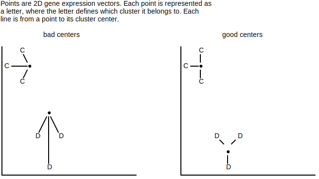
WHY: This is one of the methods used for clustering gene expression vectors. Because it's limited to use euclidean distance as the metric, it's essentially clustering by how close the component plots match up. For example, ...
| hour0 | hour1 | hour2 | hour3 | |
|---|---|---|---|---|
| Gene A | 2 | 10 | 2 | 10 |
| Gene B | 2 | 8 | 2 | 8 |
| Gene C | 2 | 2 | 2 | 10 |
dist((2,10,2,10), (2,8,2,8)) = 2.82dist((2,10,2,10), (2,2,2,10)) = 8dist((2,8,2,8), (2,2,2,10)) = 6.325In addition to only being able to use euclidean distance, another limitation is that it requires knowing the number of clusters (k) beforehand. Other clustering algorithms exist that don't have either restriction.
ALGORITHM:
Solving k-centers for any non-trivial input isn't possible because the search space is too huge. Because of this, heuristics are used. A common k-centers heuristic is the farthest first traversal algorithm. The algorithm iteratively builds out more centers by inspecting the euclidean distances from points to existing centers. At each step, the algorithm ...
The algorithm initially primes the list of centers with a randomly chosen point and stops executing once it has k points.
ch8_code/src/clustering/KCenters_FarthestFirstTraversal.py (lines 119 to 169):
def find_closest_center(data_pt, center_pts):
center_pt = min(
center_pts,
key=lambda cp: dist(data_pt, cp)
)
return center_pt, dist(center_pt, data_pt)
def centers_to_clusters(
centers: list[Sequence[float]],
vectors: list[Sequence[float]]
) -> dict[tuple[float], list[Sequence[float]]]:
mapping = {tuple(ct_pt): [] for ct_pt in centers}
for pt in vectors:
ct_pt, _ = find_closest_center(pt, centers)
ct_pt = tuple(ct_pt)
mapping[ct_pt].append(pt)
return mapping
def k_centers_farthest_first_traversal(
k: int,
vectors: list[Sequence[float]],
dims: int,
iteration_callback: Callable[ # callback func to invoke on each iteration
[
dict[tuple[float], list[Sequence[float]]]
],
None
] | None = None
) -> dict[tuple[float], list[Sequence[float]]]:
# choose an initial center
centers = [random.choice(vectors)]
# notify of cluster for first iteration
mapping = centers_to_clusters(centers, vectors)
iteration_callback(mapping)
# iterate
while len(centers) < k:
# get next center
dists = {}
for pt in vectors:
_, d = find_closest_center(pt, centers)
pt = tuple(pt)
dists[pt] = d
farthest_closest_center_pt = max(dists, key=lambda x: dists[x])
centers.append(farthest_closest_center_pt)
# notify of the current iteration's cluster
mapping = centers_to_clusters(centers, vectors)
iteration_callback(mapping)
return mapping
Given k=3 and vectors=[[2, 2], [2, 4], [2.5, 6], [3.5, 2], [4, 3], [4, 5], [4.5, 4], [7, 2], [7.5, 3], [8, 1], [9, 2], [8, 7], [8.5, 8], [9, 6], [10, 7]]...
The farthest first travel heuristic produced the clusters at each iteration ...
Iteration 0

Iteration 1

Iteration 2

One problem that should be noted with this heuristic is that, when outliers are present, it'll likely place those outliers into their own cluster.
↩PREREQUISITES↩
WHAT: K-means is k-centers except the scoring function is different. Recall that the scoring function for k-centers is ...
... where ...
The scoring function for k-means, called squared error distortion, is as follows ...
⚠️NOTE️️️⚠️
The formula is taking the squares of d() and averaging them.
# d() function from the formula
def dist_to_closest_center(data_pt, center_pts):
center_pt = min(
center_pts,
key=lambda cp: dist(data_pt, cp)
)
return dist(center_pt, data_pt)
# scoring function (what's trying to be minimized)
def k_means_score(data_pts, center_pts):
res = []
for data_pt in data_pts:
dist_to = dist_to_closest_center(data_pt, center_pts)
res.append(dist_to ** 2)
return sum(res) / len(res)
Compared to k-centers, cluster membership is still decided by the distance to its closest cluster (d in the formula above). It's the placement of centers that's different.
⚠️NOTE️️️⚠️
There's a version of k-centers / k-means for similarity metrics / distance metrics other than euclidean distance. It's called k-medods but I haven't have a chance to look at it yet and it wasn't covered by the book.
WHY: K-means is more resilient to outliers than k-centers. For example, consider finding a single center (k=1) for the following 1-D points: [0, 0.5, 1, 1.5, 10]. The last point (10) is an outlier. Without that outlier, k-centers has a center of 0.75 ...

With that outlier, the k-centers has a center of 5, which is a drastic shift from the original 0.75 shown above ...

K-means combats this shift by applying weighting: The idea is that the 4 real points should have a stronger influence on the center than the one outlier point, essentially dragging it back to towards them. Using k-means, the center is 2.6 ...

Note that the scoring functions for k-means and k-centers produce vastly different scores, but the scores themselves don't matter. What matters is the minimization of the score. The diagram below shows the scores for both k-means and k-centers as the center shifts from 10 to 0 ...
ALGORITHM:
Similar to k-centers, solving k-means for any non-trivial input isn't possible because the search space is too huge. Because of this, heuristics are used. A common k-means heuristic is Lloyd's algorithm. The algorithm randomly picks k points to set as the centers and iteratively refines those centers. At each step, the algorithm ...
converts centers to clusters,
The point closest to a center becomes a member of that cluster. Ties are broken arbitrarily.
converts clusters to centers.
The clusters from step 1 are turned into new centers. Each component of a center becomes the average of that dimension across cluster members, referred to as the center of gravity.
def center_of_gravity(data_pts, dim):
center = []
for i in range(dim):
val = mean(pt[i] for pt in data_pts)
center.append(val)
return center
The algorithm will converge to stable centers, at which point it stops iterating.
ch8_code/src/clustering/KMeans_Lloyds.py (lines 138 to 169):
def k_means_lloyds(
k: int,
vectors: list[Sequence[float]],
centers_init: list[Sequence[float]],
dims: int,
iteration_callback: Callable[ # callback func to invoke on each iteration
[
dict[tuple[float], list[Sequence[float]]]
],
None
] | None = None
) -> dict[tuple[float], list[Sequence[float]]]:
old_centers = []
centers = centers_init[:]
while centers != old_centers:
mapping = {tuple(ct_pt): [] for ct_pt in centers}
# centers to clusters
for pt in vectors:
ct_pt, _ = find_closest_center(pt, centers)
ct_pt = tuple(ct_pt)
mapping[ct_pt].append(pt)
# clusters to centers
old_centers = centers
centers = []
for pts in mapping.values():
new_ct_pt = center_of_gravity(pts, dims)
new_ct_pt = tuple(new_ct_pt)
centers.append(new_ct_pt)
# notify of current iteration's cluster
iteration_callback(mapping)
return mapping
Given k=3 and vectors=[[2, 2], [2, 4], [2.5, 6], [3.5, 2], [4, 3], [4, 5], [4.5, 4], [17, 12], [17.5, 13], [18, 11], [19, 12], [18, -7], [18.5, -8], [19, -6], [20, -7]]...
The llyod's algorithm heuristic produced the clusters at each iteration ...
Iteration 0

Iteration 1

Iteration 2

At each iteration, the cluster members captured (step 1) will drag the new center towards them (step 2). After so many iterations, each center will be at a point where further iterations won't capture a different set of members, meaning that the centers will stay where they're at (converged).
⚠️NOTE️️️⚠️
I said "ties are broken arbitrarily" (step 1) because that's what the Pevzner book says. This isn't entirely true? I think it's possible to get into a situation where a tied point ping-pongs back and forth between clusters. So, maybe what actually needs to happen is you need to break ties consistently -- it doesn't matter how, just that its consistent (e.g. the center closest to origin + smallest angle from origin always wins the tied member).
Also, if the centers haven't converged, the dragged center is guaranteed to decrease the squared error distortion when compared to the previous center. But, does that mean that a set of converged centers are optimal in terms of squared error distortion? I don't think so. Even if a cluster converged to all the correct members, could it be that the center can be slightly tweaked to get the squared error distortion down even more? Probably.
The hope with the heuristic is that, at each iteration, enough true cluster members are captured (step 1) to drag the new center (step 2) closer to the true center. One way to increase the odds that this heuristic converges on a good solution is the initial center selection: You can increase the chance of converging to a good solution by probabilistically selecting initial centers that are far from each other, referred to as k-means++ initializer.
The probability of selecting a point as the next center is proportional to its squared distance to the existing centers.
ch8_code/src/clustering/KMeans_Lloyds.py (lines 246 to 264):
def k_means_PP_initializer(
k: int,
vectors: list[Sequence[float]],
):
centers = [random.choice(vectors)]
while len(centers) < k:
choice_points = []
choice_weights = []
for v in vectors:
if v in centers:
continue
_, d = find_closest_center(v, centers)
choice_weights.append(d)
choice_points.append(v)
total = sum(choice_weights)
choice_weights = [w / total for w in choice_weights]
c_pt = random.choices(choice_points, weights=choice_weights, k=1).pop(0)
centers.append(c_pt)
return centers
Given k=3 and vectors=[[2, 2], [2, 4], [2.5, 6], [3.5, 2], [4, 3], [4, 5], [4.5, 4], [17, 12], [17.5, 13], [18, 11], [19, 12], [18, -7], [18.5, -8], [19, -6], [20, -7]]...
The llyod's algorithm heuristic produced the clusters at each iteration ...
Iteration 0

Iteration 1

Iteration 2

Even with k-means++ initializer, Lloyd's algorithm isn't guaranteed to always converge to a good solution. The typically workflow is to run it multiple times, where the run producing centers with the lowest squared error distortion is the one accepted.
Futhermore, Lloyd's algorithm may fail to converge to a good solution when the clusters aren't globular and / or aren't of similar densities. Below are example clusters that are obvious to a human but problematic for the algorithm.
⚠️NOTE️️️⚠️
The Pevzner book explicitly calls out Lloyd's algorithm for this, but I'm thinking this is more to do with the scoring function for k-means (what's trying to be minimized)? I think the same problem applies to the scoring function for k-centers and the furthest first traveled heuristic?
The examples below are taken directly from the Pevzner book.

↩PREREQUISITES↩
WHAT:
WHY:
HOW:
THIS IS NOT FROM THE BOOK, BUT I REASONED ABOUT THIS MYSELF. IMPLEMENT IT AND WRITE ABOUT IT HERE.)
Soft hierarchial clustering - Build out a neighbour joining phylogeny tree. Each internal node is a cluster. The distance between that internal node to all leaf nodes can be used to define the probability that the leaf node belongs to that cluster? This makes sense because neighbour joining phylogeny produces unrooted trees (simple trees). If it were a rooted tree, you could say that internal node X leaf nodes A, B, and C -- meaning that A, B and C are members of cluster X. But, because it's unrooted, technically any leaf node in the graph could be a member of cluster X.
This seems like it'd be very useful. It's easy to understand (if you understand neighbour joining phylogeny / additive phylogeny)
Bacteria are known to have a single chromosome of circular / looping DNA. On that DNA, the replication origin (ori) is the region in which DNA replication starts, while the replication terminus (ter) is where it ends. The ori and ter and usually placed on opposite ends of each other.
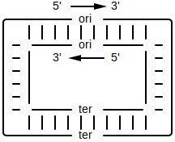
The replication process begins by a replication fork opening at the ori. As replication happens, that fork widens until the point it reaches ter...

For each forked single-stranded DNA, DNA polymerases attach on and synthesize a new reverse complement strand so that it turns back into double-stranded DNA....

The process of synthesizing a reverse complement strand is different based on the section of DNA that DNA polymerase is operating on. For each single-stranded DNA, if the direction of that DNA strand is traveling from ...

Since DNA polymerase can only walk over DNA in the reverse direction (3' to 5'), the 2 reverse half-strands will quickly get walked over in one shot. A primer gets attached to the ori, then a DNA polymerase attaches to that primer to begin synthesis of a new strand. Synthesis continues until the ter is reached...

For the forward half-strands, the process is much slower. Since DNA polymerase can only walk DNA in the reverse direction, the forward half-strands get replicated in small segments. That is, as the replication fork continues to grow, every ~2000 nucleotides a new primer attaches to the end of the fork on the forward strands. A new DNA polymerase attaches to each primer and walks in the reverse direction (towards the ori) to synthesize a small segment of DNA. That small segment of DNA is called an Okazaki fragment...

The replication fork will keep widening until the original 2 strands split off. DNA polymerase will have made sure that for each separated strand, a newly synthesized reverse complement is paired to it. The end result is 2 daughter chromosome where each chromosome has gaps...

The Okazaki fragments synthesized on the forward strands end up getting sewn together by DNA ligase...

There are now two complete copies of the DNA.
↩PREREQUISITES↩
Since the forward half-strand gets its reverse complement synthesized at a much slower rate than the reverse half-strand, it stays single stranded for a much longer time. Single-stranded DNA is 100 times more susceptible to mutations than double-stranded DNA. Specifically, in single-stranded DNA, C has a greater tendency to mutate to T. This process of mutation is referred to as deanimation.

The reverse half-strand spends much less time as a single-stranded DNA. As such, it experiences much less C to T mutations.

Ultimately, that means that a single strand will have a different nucleotide distribution between its forward half-strand vs its backward half-strand. If the half-strand being targeted for replication is the ...
To simplify, the ...
You can use a GC skew diagram to help pinpoint where the ori and ter might be. The plot will typically form a peak where the ter is (more G vs C) and form a valley where the ori is (less G vs C). For example, the GC skew diagram for E. coli bacteria shows a distinct peak and distinct valley.
Calculating skew for: ...
Result: [0, 0, 1, 0,...

Min position (ori): 4719166
Max position (ter): 2073768
⚠️NOTE️️️⚠️
The material talks about how not all bacteria have a single peak and single valley. Some may have multiple. The reasoning for this still hasn't been discovered. It was speculated at one point that some bacteria may have multiple ori / ter regions.
↩PREREQUISITES↩
Within the ori region, there exists several copies of some k-mer pattern. These copies are referred to as DnaA boxes.

The DnaA protein binds to a DnaA box to activate the process of DNA replication. Through experiments, biologists have determined that DnaA boxes are typical 9-mers. The 9-mers may not match exactly -- the DnaA protein may bind to ...
⚠️NOTE️️️⚠️
The reason why multiple copies of the DnaA box exist probably has to do with DNA mutation. If one of the copies mutates to a point where the DnaA protein no longer binds to it, it can still bind to the other copies.
In the example below, the general vicinity of E. coli's ori is found using GC skew, then that general vicinity is searched for repeating 9-mers. These repeating 9-mers are potential DnaA box candidates.
Calculating skew for: ...
Result: [0, 0, 1, 0,...
Ori vicinity (min pos): 4719166
In the ori vicinity, found clusters of k=9 (at least 3 occurrences in window of 500) in ... at...
A transcription factor / regulatory protein is an enzyme that influences the rate of gene expression for some set of genes. As the saturation of a transcription factor changes, so does the rate of gene expression for the set of genes that it influences.
Transcription factors bind to DNA near the genes they influence: a transcription factor binding site is located in a gene's upstream region and the sequence at that location is a fuzzy nucleotide sequence of length 8 to 12 called a regulatory motif. The simplest way to think of a regulatory motif is a regex pattern without quantifiers. For example, the regex [AT]TT[GC]CCCTA may match to ATTGCCCTA, ATTCCCCTA, TTTGCCCTA, and TTTCCCCTA. The regex itself is the motif, while the sequences being matched are motif members.

The production of transcription factors may be tied to certain internal or external conditions. For example, imagine a flower where the petals...
The external conditions of sunlight and temperature causes the saturation of some transcription factors to change. Those transcription factors influence the rate of gene expression for the genes that control the bunching and spreading of the petals.

↩PREREQUISITES↩
Given an organism, it's suspected that some physical change in that organism is linked to a transcription factor. However, it isn't known ...
A special device is used to take snapshots of the organism's mRNA at different points in time: DNA microarray / RNA sequencer. Specifically, two snapshots are taken:
Comparing these snapshots identifies which genes have noticeably differing rates of gene expression. If these genes (or a subset of these genes) were influenced by the same transcription factor, their upstream regions would contain members of that transcription factor's regulatory motif.
Since neither the transcription factor nor its regulatory motif are known, there is no specific motif to search for in the upstream regions. But, because motif members are typically similar to each other, motif matrix finding algorithms can be used on these upstream regions to find sets of similar k-mers. These similar k-mers may all be members of the same transcription factor's regulatory motif.
In the example below, a set of genes in baker's yeast (Saccharomyces cerevisiae) are suspected of being influenced by the same transcription factor. These genes are searched for a common motif. Assuming one is found, it could be the motif of the suspected transcription factor.
⚠️NOTE️️️⚠️
The example below hard codes k to 18, but you typically don't know what k should be set to beforehand. The Pevzner book doesn't discuss how to work around this problem. A strategy for finding k may be to run the motif matrix finding algorithm multiple times, but with a different k each time. For each member, if the k-mers selected across the runs came from the same general vicinity of the gene's upstream region, those k-mers may either be picking ...
Organism is baker's yeast. Suspected genes influenced by transcription factor: THI12, YHL017W, SYN8, YCG1, UBX5, and KEI1.
Searching for 18-mer across a set of 6 gene upstream regions...
GAAAAGAAAGAAAAAGGA
GAAAAGAAAAAGAAAAAA
GAAAGAAAAAGAAAAAAA
AAAAGGAAAAAAAGAAGA
GAAATGAAAAGGAACAGT
AAAATCAAAAAAATAAAT
Score is: 22
A peptide is a miniature protein consisting of a chain of amino acids anywhere between 2 to 100 amino acids in length.

Most peptides are synthesized through the central dogma of molecular biology: a segment of the DNA that encodes the peptide is transcribed to mRNA, which in turn is translated to a peptide by a ribosome.
Non-ribosomal peptides (NRP) however, aren't synthesized via the central dogma of molecular biology. Instead, giant proteins typically found in bacteria and fungi called NRP synthetase build out these peptides by growing them one amino acid at a time.
Each segment of an NRP synthetase protein responsible for the outputting a single amino acid is called an adenylation domain. The example above has 5 adenylation domains, each of which is responsible for outputting a single amino acid of the peptide it produces.
NRPs may be cyclic. Common use-cases for NRPs:
⚠️NOTE️️️⚠️
According to the Wikipedia article on NRPs, there exist a wide range of peptides that are not synthesized by ribosomes but the term non-ribosomal peptide typically refers to the ones synthesized by NRP synthetases.
↩PREREQUISITES↩
Unlike ribosomal peptides, NRPs aren't encoded in the organism's DNA. As such, their sequence can't be inferred by directly by looking through the organism's DNA sequence.
Instead, a sample of the NRP needs to be isolated and passed through a mass spectrometer. A mass spectrometer is a device that shatters and bins molecules by their mass-to-charge ratio: Given a sample of molecules, the device randomly shatters each molecule in the sample (forming ions), then bins each ion by its mass-to-charge ratio ().
The output of a mass spectrometer is a plot called a spectrum. The plot's ...
For example, given a sample containing multiple instances of the linear peptide NQY, the mass spectrometer will take each instance of NQY and randomly break the bonds between its amino acids:
Each subpeptide then will have its mass-to-charge ratio measured, which in turn gets converted to a set of potential masses by performing basic math. With these potential masses, it's possible to infer which amino acids make up the peptide as well as the peptide sequence.
In the example below, peptide sequences are inferred from a noisy spectrum for the cyclopeptide Viomycin. The elements of each inferred peptide sequence are amino acid masses rather than the amino acids themselves (e.g. instead of S being output at a position, the mass of S is output -- 87). Since the spectrum is noisy, the inferred peptide sequences are also noisy (e.g. instead of an amino acid mass 87 showing up as exactly 87 in the peptide sequence, it may show up as 87.2, 86.9, etc...).
Note that the correct peptide sequence isn't guaranteed to be inferred. Also, since Viomycin is a cyclopeptide, the correct peptide may be inferred in a wrapped form (e.g. the cyclopeptide 128-113-57 may show up as 128-113-57, 113-57-128, or 57-128-113).
⚠️NOTE️️️⚠️
I artificially generated a spectrum for Viomycin from the sequence listed on KEGG.
Sequence 0 beta-Lys 1 Dpr 2 Ser 3 Ser 4 Ala 5 Cpd (Cyclization: 1-5)
Gene 0 vioO [UP:Q6WZ98] vioM [UP:Q6WZA0]; 1 vioF [UP:Q6WZA7]; 2-3 vioA [UP:Q6WZB2]; 4 vioI [UP:Q6WZA4]; 5 vioG [UP:Q84CG4]
Organism Streptomyces vinaceus
Type NRP
The problem is that I have no idea what the 5th amino acid is: Cpd (I arbitrarily put it's mass as 200) and I'm unsure of the mapping I found for Dpr (2,3-diaminopropionic acid has mass of 104). The peptide sequence being searched for in the example below is 128-104-87-87-71-200.
Given the ...
Top 24 captured mino acid masses (rounded to 1): [86.8, 86.9, 87.0, 87.1, 71.1, 71.2, 70.9, 71.0, 128.3, 199.8, 199.9, 200.0, 200.1, 103.7, 103.9, 104.0, 104.1, 127.9, 128.0]
For peptides between 673.1 and 680.9...
Genome rearrangement is form of mutation where chromosomes go through structural changes. These structural changes include chromosome segments getting ...
shuffled into a different order (translocation, fission, fusion) or direction (reversal).
For example, a segment of chromosome breaks off and rejoins, but each end of that segment joins back up at a different point.

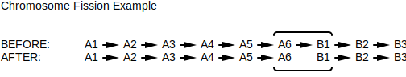
deleted.
For example, a segment of a chromosome breaks off and DNA repair mechanisms close the gap.

duplicated.
For example, a segment of a chromosome breaks off and DNA repair mechanisms close the gap, but that broken off segment may still re-attach at a different location.
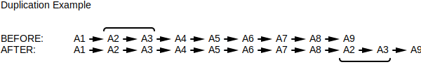
There are fragile regions of chromosomes where breakages are more likely to occur. For example, the ABL-BCR fusion protein, a protein implicated in the development of a cancer known as chronic myeloid leukemia, is the result of human chromosomes 9 and 22 breaking and fusing back together in a different order: Chromosome 9 contains the gene for ABL while chromosome 22 contains the gene for BCR and both genes are in fragile regions of their respective chromosome. If those fragile chromosome regions both break but fuse back together in the wrong order, the ABL-BCR chimeric gene is formed.
As shown with the ABL-BCR fusion protein example above, genome rearrangements often result in the sterility or death of the organism. However, when a species branches off from an existing one, genome rearrangements are likely responsible for at least some of the divergence. That is, the two related genomes will share long stretches of similar genes, but these long stretches will appear as if they had been randomly cut-and-paste and / or randomly reversed when compared to the other. For example, humans and mice have a shared ancestry and as such share a vast number of long stretches (around 280).
These long stretches of similar genes are called synteny blocks. For example, the following genome rearrangement mutations result in 4 synteny blocks shared between the two genomes ...
[G1, G2][G3][G4, G5, G6] (although they're reversed)[G7, G8, G9]↩PREREQUISITES↩
Synteny blocks are identified by first finding matching k-mers and reverse complement matching k-mers, then combining matches that are close together (clustering) to reveal the long stretches of matches that make up synteny blocks.
The visual manifestation of this concept is the genomic dot-plot and synteny graph. A genomic dot-plot is a 2D plot where each axis is assigned to one of the genomes and a dot is placed at each coordinate containing a match, while a synteny graph is the clustered form of a genomic dot-plot that reveals synteny blocks.

The synteny graph above reveals that 4 synteny blocks are shared between the genomes. One of the synteny blocks is a normal match (C) while three are matching against their reverse complements (A, B, and D).

In the example below, two species of the Mycoplasma bacteria are analyzed to find the synteny blocks between them. The output reveals that pretty much the entirety of both genomes are shared, just in a different order.
Finding synteny blocks for...
NOTE: Nucleotide codes that aren't ACGT get filtered out of the genomes.
Generating genomic dotplot...
Clustering genomic dotplot to snyteny graph...
Generating synteny graph...
Mapping synteny graph matches to IDs using x-axis genome...
↩PREREQUISITES↩
A reversal is the most common type of genome rearrangement mutation: A segment of chromosome breaks off and ends up re-attaching, but with the ends swapped.

The theory is that genome rearrangements between two species take the parsimonious path (or close to it). Since reversals are the most common form of genome rearrangement mutation, by calculating a parsimonious reversal path (smallest set of reversals) it's possible to get an idea of how the two species branched off.
Note that there may be many parsimonious reversal paths between two genomes with shared synteny blocks.

Given a parsimonious reversal path, it may be that one of the genomes in the reversal path is the parent species (or close to it).

In the example below, two species of the Mycoplasma bacteria are analyzed to find a parsimonious reversal path using the breakpoint graph algorithm. The output reveals that only 1 reversal is responsible for the change in species. As such, it's very likely that one species broke off from the other rather than there being a shared parent species.
Solving a parsimonious reversal path for...
NOTE: Nucleotide codes that aren't ACGT get filtered out of the genomes.
Generating genomic dotplot...
Clustering genomic dotplot to snyteny graph...
Generating synteny graph...
Mapping synteny graph matches to IDs using x-axis genome...
Generating permutations for genomes...
Generating reversal path on genomes that are cyclic=True...
INITIAL red_p_list=[['+G2C1_B0', '+G2C1_B1', '+G2C1_B2', '-G2C1_B7', '-G2C1_B6', '-G2C1_B5', '-G2C1_B4', '-G2C1_B3', '+G2C1_B8', '+G2C1_B9']]
red_p_list=[['+G2C1_B0', '+G2C1_B1', '+G2C1_B2', '+G2C1_B3', '+G2C1_B4', '+G2C1_B5', '+G2C1_B6', '+G2C1_B7', '+G2C1_B8', '+G2C1_B9']]

When scientists work with biological entities, those entities are either present day entities or relics of extinct entities (paleontology). In certain cases, it's reasonable to assume the shared ancestry of a set of present day entities by comparing their features to those of extinct relics. For example, ...
In most cases however, there are no relics. For example, extinct viruses or bacteria typically don't leave much evidence around in the same way that ...
In such cases, it's still possible to infer the evolutionary history of a set of present day species by comparing their features to see how diverged they are. Those features could be phenotypic features (e.g. behavioural or physical features) or molecular features (e.g. DNA sequences, protein sequences, organelles and other cell features).
The process of inferring evolutionary history by comparing features for divergence is called phylogeny. Phylogeny algorithms provide insight into ...

Oftentimes, phylogeny produces much more accurate results than simply eye-balling it (as was done in the initial example), but ultimately the quality of the result is dependent on what features are being measured and the metric used for measurement. Prior to sequencing technology, most phylogeny was done by comparing phenotypic features (e.g. character tables). Common practice now is to use molecular features (e.g. DNA sequencing) since those have more information that's definitive and less biased (e.g. phenotypic features are subject to human interpretation).
↩PREREQUISITES↩
Evolutionary history is often displayed as a tree called a phylogenetic tree, where leaf nodes represent known entities and internal nodes represent inferred ancestor entities. Depending on the phylogeny algorithm used, the tree may be either a rooted tree or an unrooted tree. The difference is that a rooted tree infers parent-child relationships of ancestors while an unrooted tree does not.

In the example above, the rooted tree (left diagram) shows ancestors B and C as branching off (evolving) from their common ancestor A. The unrooted tree (right diagram) shows ancestors B and C but doesn't provide infer which branched off the other. It could be that ancestor B ultimately descended from C or vice versa.
SARS-CoV-2 is the virus that causes COVID-19. The example below measures SARS-CoV-2 spike protein sequences collected from different patients to produce its evolutionary history. The metric used to measure how diverged two sequences are from each other is global alignment using a BLOSUM80 scoring matrix. Once divergences (distances) are calculated, the neighbour joining phylogeny algorithm is used to generate a phylogenetic tree.
⚠️NOTE️️️⚠️
BLOSUM80 was chosen because SARS-CoV-2 is a relatively new virus (~2 years). I don't know if it was a good choice because I've been told viruses mutate more rapidly, so maybe BLOSUM62 would have been a better choice.
The original NCBI dataset had 30k to 40k unique spike sequences. I couldn't justify sticking all of that into the git repo (too large) so I whittled it down to a random sample of 1000.
From that 1000, only a small sample are selected to run the code. The problem is that sequence alignments are computationally expensive and Python is slow. Doing a sequence alignment between two spike protein sequences on my VM takes a long time (~4 seconds per alignment), so for the full 1000 sequences the total running time would end up being ~4 years (if I calculated it correctly - single core).
Given a random sample of 6 sequences from 1000_unique_sarscov2_spike_seqs.json.xz and the following alignment weights...
A R N D C Q E G H I L K M F P S T W Y V B J Z X *
A 5 -2 -2 -2 -1 -1 -1 0 -2 -2 -2 -1 -1 -3 -1 1 0 -3 -2 0 -2 -2 -1 -1 -6
R -2 6 -1 -2 -4 1 -1 -3 0 -3 -3 2 -2 -4 -2 -1 -1 -4 -3 -3 -1 -3 0 -1 -6
N -2 -1 6 1 -3 0 -1 -1 0 -4 -4 0 -3 -4 -3 0 0 -4 -3 -4 5 -4 0 -1 -6
D -2 -2 1 6 -4 -1 1 -2 -2 -4 -5 -1 -4 -4 -2 -1 -1 -6 -4 -4 5 -5 1 -1 -6
C -1 -4 -3 -4 9 -4 -5 -4 -4 -2 -2 -4 -2 -3 -4 -2 -1 -3 -3 -1 -4 -2 -4 -1 -6
Q -1 1 0 -1 -4 6 2 -2 1 -3 -3 1 0 -4 -2 0 -1 -3 -2 -3 0 -3 4 -1 -6
E -1 -1 -1 1 -5 2 6 -3 0 -4 -4 1 -2 -4 -2 0 -1 -4 -3 -3 1 -4 5 -1 -6
G 0 -3 -1 -2 -4 -2 -3 6 -3 -5 -4 -2 -4 -4 -3 -1 -2 -4 -4 -4 -1 -5 -3 -1 -6
H -2 0 0 -2 -4 1 0 -3 8 -4 -3 -1 -2 -2 -3 -1 -2 -3 2 -4 -1 -4 0 -1 -6
I -2 -3 -4 -4 -2 -3 -4 -5 -4 5 1 -3 1 -1 -4 -3 -1 -3 -2 3 -4 3 -4 -1 -6
L -2 -3 -4 -5 -2 -3 -4 -4 -3 1 4 -3 2 0 -3 -3 -2 -2 -2 1 -4 3 -3 -1 -6
K -1 2 0 -1 -4 1 1 -2 -1 -3 -3 5 -2 -4 -1 -1 -1 -4 -3 -3 -1 -3 1 -1 -6
M -1 -2 -3 -4 -2 0 -2 -4 -2 1 2 -2 6 0 -3 -2 -1 -2 -2 1 -3 2 -1 -1 -6
F -3 -4 -4 -4 -3 -4 -4 -4 -2 -1 0 -4 0 6 -4 -3 -2 0 3 -1 -4 0 -4 -1 -6
P -1 -2 -3 -2 -4 -2 -2 -3 -3 -4 -3 -1 -3 -4 8 -1 -2 -5 -4 -3 -2 -4 -2 -1 -6
S 1 -1 0 -1 -2 0 0 -1 -1 -3 -3 -1 -2 -3 -1 5 1 -4 -2 -2 0 -3 0 -1 -6
T 0 -1 0 -1 -1 -1 -1 -2 -2 -1 -2 -1 -1 -2 -2 1 5 -4 -2 0 -1 -1 -1 -1 -6
W -3 -4 -4 -6 -3 -3 -4 -4 -3 -3 -2 -4 -2 0 -5 -4 -4 11 2 -3 -5 -3 -3 -1 -6
Y -2 -3 -3 -4 -3 -2 -3 -4 2 -2 -2 -3 -2 3 -4 -2 -2 2 7 -2 -3 -2 -3 -1 -6
V 0 -3 -4 -4 -1 -3 -3 -4 -4 3 1 -3 1 -1 -3 -2 0 -3 -2 4 -4 2 -3 -1 -6
B -2 -1 5 5 -4 0 1 -1 -1 -4 -4 -1 -3 -4 -2 0 -1 -5 -3 -4 5 -4 0 -1 -6
J -2 -3 -4 -5 -2 -3 -4 -5 -4 3 3 -3 2 0 -4 -3 -1 -3 -2 2 -4 3 -3 -1 -6
Z -1 0 0 1 -4 4 5 -3 0 -4 -3 1 -1 -4 -2 0 -1 -3 -3 -3 0 -3 5 -1 -6
X -1 -1 -1 -1 -1 -1 -1 -1 -1 -1 -1 -1 -1 -1 -1 -1 -1 -1 -1 -1 -1 -1 -1 -1 -6
* -6 -6 -6 -6 -6 -6 -6 -6 -6 -6 -6 -6 -6 -6 -6 -6 -6 -6 -6 -6 -6 -6 -6 -6 1
The tree generated by neighbour joining phylogeny is (distances measured using global alignment, edge lengths scaled to 0.1) ...
↩PREREQUISITES↩
An unknown ancestor's features are probabilistically inferrable via the features of entities that descend from it.
The example above infers phenotypic features for the common ancestor of leopard and tiger. If a feature is present and the same in both, it's safe to assume that it was present in their common ancestor as well (e.g. 4 legs). Otherwise, there's still some smaller chance that the feature was present, possibly with some variability in how it manifested (e.g. type of coat pattern).
With the advent of sequencing technology, the practice of using phenotypic features for phylogeny was superseded by sequencing data. When sequences are used, the features are the sequences themselves, meaning that the sequence of the common ancestor is what gets inferred.

The example below infers the spike protein sequences for the ancestors of SARS-CoV-2 variants. First, a phylogenetic tree is generated using BLOSUM80 as the distance metric. Then, the sequences are all aligned together using BLOSUM80 (multiple alignment, not pairwise alignment as was used for the distance metric). The sequences of ancestors are inferred using those aligned sequences.
⚠️NOTE️️️⚠️
This is badly cobbled together code. It's taking the code from the previous section's example and embedding/duct-taping even more pieces from the sequence alignment module just to get a running example. In a perfect world I would just import the sequence alignment module, but that module lives in a separate container. This is the best I can do.
Running this is even slower than the previous section's example, so the sample size has been reduced even further.
Given a random sample of 3 sequences from 1000_unique_sarscov2_spike_seqs.json.xz and the following alignment weights...
A R N D C Q E G H I L K M F P S T W Y V B J Z X
A 5 -2 -2 -2 -1 -1 -1 0 -2 -2 -2 -1 -1 -3 -1 1 0 -3 -2 0 -2 -2 -1 -1
R -2 6 -1 -2 -4 1 -1 -3 0 -3 -3 2 -2 -4 -2 -1 -1 -4 -3 -3 -1 -3 0 -1
N -2 -1 6 1 -3 0 -1 -1 0 -4 -4 0 -3 -4 -3 0 0 -4 -3 -4 5 -4 0 -1
D -2 -2 1 6 -4 -1 1 -2 -2 -4 -5 -1 -4 -4 -2 -1 -1 -6 -4 -4 5 -5 1 -1
C -1 -4 -3 -4 9 -4 -5 -4 -4 -2 -2 -4 -2 -3 -4 -2 -1 -3 -3 -1 -4 -2 -4 -1
Q -1 1 0 -1 -4 6 2 -2 1 -3 -3 1 0 -4 -2 0 -1 -3 -2 -3 0 -3 4 -1
E -1 -1 -1 1 -5 2 6 -3 0 -4 -4 1 -2 -4 -2 0 -1 -4 -3 -3 1 -4 5 -1
G 0 -3 -1 -2 -4 -2 -3 6 -3 -5 -4 -2 -4 -4 -3 -1 -2 -4 -4 -4 -1 -5 -3 -1
H -2 0 0 -2 -4 1 0 -3 8 -4 -3 -1 -2 -2 -3 -1 -2 -3 2 -4 -1 -4 0 -1
I -2 -3 -4 -4 -2 -3 -4 -5 -4 5 1 -3 1 -1 -4 -3 -1 -3 -2 3 -4 3 -4 -1
L -2 -3 -4 -5 -2 -3 -4 -4 -3 1 4 -3 2 0 -3 -3 -2 -2 -2 1 -4 3 -3 -1
K -1 2 0 -1 -4 1 1 -2 -1 -3 -3 5 -2 -4 -1 -1 -1 -4 -3 -3 -1 -3 1 -1
M -1 -2 -3 -4 -2 0 -2 -4 -2 1 2 -2 6 0 -3 -2 -1 -2 -2 1 -3 2 -1 -1
F -3 -4 -4 -4 -3 -4 -4 -4 -2 -1 0 -4 0 6 -4 -3 -2 0 3 -1 -4 0 -4 -1
P -1 -2 -3 -2 -4 -2 -2 -3 -3 -4 -3 -1 -3 -4 8 -1 -2 -5 -4 -3 -2 -4 -2 -1
S 1 -1 0 -1 -2 0 0 -1 -1 -3 -3 -1 -2 -3 -1 5 1 -4 -2 -2 0 -3 0 -1
T 0 -1 0 -1 -1 -1 -1 -2 -2 -1 -2 -1 -1 -2 -2 1 5 -4 -2 0 -1 -1 -1 -1
W -3 -4 -4 -6 -3 -3 -4 -4 -3 -3 -2 -4 -2 0 -5 -4 -4 11 2 -3 -5 -3 -3 -1
Y -2 -3 -3 -4 -3 -2 -3 -4 2 -2 -2 -3 -2 3 -4 -2 -2 2 7 -2 -3 -2 -3 -1
V 0 -3 -4 -4 -1 -3 -3 -4 -4 3 1 -3 1 -1 -3 -2 0 -3 -2 4 -4 2 -3 -1
B -2 -1 5 5 -4 0 1 -1 -1 -4 -4 -1 -3 -4 -2 0 -1 -5 -3 -4 5 -4 0 -1
J -2 -3 -4 -5 -2 -3 -4 -5 -4 3 3 -3 2 0 -4 -3 -1 -3 -2 2 -4 3 -3 -1
Z -1 0 0 1 -4 4 5 -3 0 -4 -3 1 -1 -4 -2 0 -1 -3 -3 -3 0 -3 5 -1
X -1 -1 -1 -1 -1 -1 -1 -1 -1 -1 -1 -1 -1 -1 -1 -1 -1 -1 -1 -1 -1 -1 -1 -1
INDEL=-6.0
The tree generated by neighbour joining phylogeny ALONG WITH INFERRED ANCESTRAL SEQUENCES is (distances measured using global alignment, edge lengths scaled to 0.1) ...
CPU optimized C++ global alignment - Simple global alignment is C++ with all optimizations turned on AND multi-threading or fibers that optimize work size to fit in cache lines.
GPU optimized C++ global alignment - Simple global alignment in Nvidia's HPC SDK C++ where GPU "thread" is optimized to fit in caches. Maybe do the divide-and-conquer variant as well. (divide and conquer might be a good idea because it'll work on super fat sequences)
GPU optimized C++ probabilistic multiple alignment - Probabilistic multiple alignment in Nvidia's HPC SDK C++ where GPU "thread" is optimized to fit in caches.
Deep-learning Regulatory Motif Detection - Try training a deep learning model to "find" regulatory motifs for new transcription factors based on past training data.
Global alignment that takes genome rearrangements into account - multiple chromosomes, chromosomes becoming circular or linear, reversals, fissions, fusions, copies, etc..
Organism lookup by k-mer - Two-tiered database containing k-mers. The first tier is an "inverse index" of k-mers that rarely appear across all organisms (unique or almost unique to the genome) exposed as either a trie / hashtable (for exact lookups) or possibly as a list where highly optimized miniature alignments get performed (for fuzzy lookups -- SIMD + things fit nicely into cache lines). It widdles down the list of organism for the second tier, which is a full on database search for each matches across all k-mers.
K-mer hierarchial clustering - Hierarchical cluster together similar k-mers using either pearson similarity/pearson distance [between one/zero vector of sub-k-mers] or sequence alignment distance to form its distance matrix / similarity matrix. This is useful for when you're trying to identify which organism a sequence belongs to by searching for its k-mers in a database. The k-mers that make up the database would be clustered, and k-mers that closely cluster together under a branch of the hierarchial cluster tree are those you'd be more cautious with -- the k-mer may have matched but it could have actually been a corrupted form of one of the other k-mers in the cluster (sequencing error).
This logic also applies to spell checking. Words that cluster together closely are more likely to be mis-identified by a standard spellchecker, meaning individual clusters should have their own spell checking strategies? If you're going to do this with words, use a factor in QWERTY keyboard key distances into the similarity / distance matrix.
Hierarchial clustering explorer - Generate a neighbour joining phylogeny tree based on pearson distance of sequence alignment distance, then visualize the tree and provide the user with "interesting" internal nodes (clusters). In this case, "interesting" would be any internal node where the distance to most leaf nodes is within some threshold / average / variance / etc... Also, maybe provide an "idealized" view of the clustered data for each internal node (e.g. average the vectors for the leaves to produce the vector for the internal node).
Another idea is to take the generated tree and convert it back into distance matrix. If the data isn't junk, the distance metric isn't junk, and the data is clusterable on that distance metric, the generated distance matrix should match closely to the input distance metric. The tool can warn the user if it doesn't.
Soft hierarchial clustering - Build out a neighbour joining phylogeny tree. Each internal node is a cluster. The distance between that internal node to all leaf nodes can be used to define the probability that the leaf node belongs to that cluster? This makes sense because neighbour joining phylogeny produces unrooted trees (simple trees). If it were a rooted tree, you could say that internal node X leaf nodes A, B, and C -- meaning that A, B and C are members of cluster X. But, because it's unrooted, technically any leaf node in the graph could be a member of cluster X.
This relates to the idea above (hierarchial clustering explorer) -- You can identify "interesting clusters" using this (e.g. a small group tightly clustered together) and return it to the user for inspection.
Hierarchial clustering as a means of detecting outliers - Cluster data using neighbouring join phylogeny. How far is each leaf node to its parent internal node? Find any that are grossly over the average / squared error distortion / some other metric? Report it. Try other ways as well (e.g. pick a root and see how far it is from the root -- root picked using some metric like avg distance between leaf nodes / 2 or squared error distortion).
This relates to the idea above (soft hierarchial clustering) -- You may be able to identify outliers using soft hierarchial clustering using this (e.g. the probability of being a part of some internal node is way farther than any of the other leaf nodes).
k-mer - A substring of length k within some larger biological sequence (e.g. DNA or amino acid chain). For example, in the DNA sequence GAAATC, the following k-mer's exist:
| k | k-mers |
|---|---|
| 1 | G A A A T C |
| 2 | GA AA AA AT TC |
| 3 | GAA AAA AAT ATC |
| 4 | GAAA AAAT AATC |
| 5 | GAAAT AAATC |
| 6 | GAAATC |
kd-mer - A substring of length 2k + d within some larger biological sequence (e.g. DNA or amino acid chain) where the first k elements and the last k elements are known but the d elements in between isn't known.
When identifying a kd-mer with a specific k and d, the proper syntax is (k, d)-mer. For example, (1, 2)-mer represents a kd-mer with k=1 and d=2. In the DNA sequence GAAATC, the following (1, 2)-mer's exist: G--A, A--T, A--C.
See read-pair.
5' (5 prime) / 3' (3 prime) - 5' (5 prime) and 3' (3 prime) describe the opposite ends of DNA. The chemical structure at each end is what defines if it's 5' or 3' -- each end is guaranteed to be different from the other. The forward direction on DNA is defined as 5' to 3', while the backwards direction is 3' to 5'.
Two complementing DNA strands will always be attached in opposite directions.
DNA polymerase - An enzyme that replicates a strand of DNA. That is, DNA polymerase walks over a single strand of DNA bases (not the strand of base pairs) and generates a strand of complements. Before DNA polymerase can attach itself and start replicating DNA, it requires a primer.

DNA polymerase is unidirectional, meaning that it can only walk a DNA strand in one direction: reverse (3' to 5')
primer - A primer is a short strand of RNA that binds to some larger strand of DNA (single bases, not a strand of base pairs) and allows DNA synthesis to happen. That is, the primer acts as the entry point for special enzymes DNA polymerases. DNA polymerases bind to the primer to get access to the strand.
replication fork - The process of DNA replication requires that DNA's 2 complementing strands be unwound and split open. The area where the DNA starts to split is called the replication fork. In bacteria, the replication fork starts at the replication origin and keeps expanding until it reaches the replication terminus. Special enzymes called DNA polymerases walk over each unwound strand and create complementing strands.
replication origin (ori) - The point in DNA at which replication starts.
replication terminus (ter) - The point in DNA at which replication ends.
forward half-strand / reverse half-strand - Bacteria are known to have a single chromosome of circular / looping DNA. In this DNA, the replication origin (ori) is the region of DNA where replication starts, while the replication terminus (ter) is where replication ends.

If you split up the DNA based on ori and ter being cutting points, you end up with 4 distinct strands. Given that the direction of a strand is 5' to 3', if the direction of the strand starts at...
ori and ends at ter, it's called the forward half-strand.

ter and ends at ori, it's called the reverse half-strand.

⚠️NOTE️️️⚠️
leading half-strand / lagging half-strand - Given the 2 strands that make up a DNA molecule, the strand that goes in the...
This nomenclature has to do with DNA polymerase. Since DNA polymerase can only walk in the reverse direction (3' to 5'), it synthesizes the leading half-strand in one shot. For the lagging half-strand (5' to 3'), multiple DNA polymerases have to used to synthesize DNA, each binding to the lagging strand and walking backwards a small amount to generate a small fragment of DNA (Okazaki fragment). the process is much slower for the lagging half-strand, that's why it's called lagging.
⚠️NOTE️️️⚠️
Okazaki fragment - A small fragment of DNA generated by DNA polymerase for forward half-strands. DNA synthesis for the forward half-strands can only happen in small pieces. As the fork open ups every ~2000 nucleotides, DNA polymerase attaches to the end of the fork on the forward half-strand and walks in reverse to generate that small segment (DNA polymerase can only walk in the reverse direction).
DNA ligase - An enzyme that sews together short segments of DNA called Okazaki fragments by binding the phosphate group on the end of one strand with the deoxyribose group on the other strand.
DnaA box - A sequence in the ori that the DnaA protein (responsible for DNA replication) binds to.
single stranded DNA - A single strand of DNA, not bound to a strand of its reverse complements.

double stranded DNA - Two strands of DNA bound together, where each strand is the reverse complement of the other.
reverse complement - Given double-stranded DNA, each ...
The reverse complement means that a stretch of single-stranded DNA has its direction reversed (5' and 3' switched) and nucleotides complemented.
gene - A segment of DNA that contains the instructions for either a protein or functional RNA.
gene product - The final synthesized material resulting from the instructions that make up a gene. That synthesized material either being a protein or functional RNA.
transcription - The process of transcribing a gene to RNA. Specifically, the enzyme RNA polymerase copies the segment of DNA that makes up that gene to a strand of RNA.

translation - The process of translating mRNA to protein. Specifically, a ribosome takes in the mRNA generated by transcription and outputs the protein that it codes for.
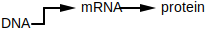
gene expression - The process by which a gene is synthesized into a gene product. When the gene product is...
regulatory gene / regulatory protein - The proteins encoded by these genes affect gene expression for certain other genes. That is, a regulatory protein can cause certain other genes to be expressed more (promote gene expression) or less (repress gene expression).
Regulatory genes are often controlled by external factors (e.g. sunlight, nutrients, temperature, etc..)
feedback loop / negative feedback loop / positive feedback loop - A feedback loop is a system where the output (or some part of the output) is fed back into the system to either promote or repress further outputs.

A positive feedback loop amplifies the output while a negative feedback loop regulates the output. Negative feedback loops in particular are important in biology because they allow organisms to maintain homeostasis / equilibrium (keep a consistent internal state). For example, the system that regulates core temperatures in a human is a negative feedback loop. If a human's core temperature gets too...
In the example above, the output is the core temperature. The body monitors its core temperature and employs mechanisms to bring it back to normal if it goes out of range (e.g. sweat, shiver). The outside temperature is influencing the body's core temperature as well as the internal shivering / sweating mechanisms the body employs.
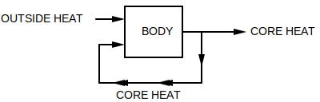
circadian clock / circadian oscillator - A biological clock that synchronizes roughly around the earth's day-night cycle. This internal clock helps many species regulate their physical and behavioural attributes. For example, hunt during the night vs sleep during the day (e.g. nocturnal owls).
upstream region - The area just before some interval of DNA. Since the direction of DNA is 5' to 3', this area is towards the 5' end (upper end).
downstream region - The area just after some interval of DNA. Since the direction of DNA is 5' to 3', this area is towards the 3' end (lower end).
transcription factor - A regulatory protein that controls the rate of transcription for some gene that it has influence over (the copying of DNA to mRNA). The protein binds to a specific sequence in the gene's upstream region.
motif - A pattern that matches against many different k-mers, where those matched k-mers have some shared biological significance. The pattern matches a fixed k where each position may have alternate forms. The simplest way to think of a motif is a regex pattern without quantifiers. For example, the regex [AT]TT[GC]C may match to ATTGC, ATTCC, TTTGC, and TTTCC.
motif member - A specific nucleotide sequence that matches a motif. For example, given a motif represented by the regex [AT]TT[GC]C, the sequences ATTGC, ATTCC, TTTGC, and TTTCC would be its members.
motif matrix - A set of k-mers stacked on top of each other in a matrix, where the k-mers are either...
For example, the motif [AT]TT[GC]C has the following matrix:
| 0 | 1 | 2 | 3 | 4 |
|---|---|---|---|---|
| A | T | T | G | C |
| A | T | T | C | C |
| T | T | T | G | C |
| T | T | T | C | C |
regulatory motif - The motif of a transcription factor, typically 8 to 12 nucleotides in length.
transcription factor binding site - The physical binding site for a transcription factor. A gene that's regulated by a transcription factor needs a sequence located in its upstream region that the transcription factor can bind to: a motif member of that transcription factor's regulatory motif.
⚠️NOTE️️️⚠️
A gene's upstream region is the 600 to 1000 nucleotides preceding the start of the gene.
complementary DNA (cDNA) - A single strand of DNA generated from mRNA. The enzyme reverse transcriptase scans over the mRNA and creates the complementing single DNA strand.
The mRNA portion breaks off, leaving the single-stranded DNA.

DNA microarray - A device used to compare gene expression. This works by measuring 2 mRNA samples against each other: a control sample and an experimental sample. The samples could be from...
Both mRNA samples are converted to cDNA and are given fluorescent dyes. The control sample gets dyed green while the experimental sample gets dyed red.

A sheet is broken up into multiple regions, where each region has the cDNA for one specific gene from the control sample printed.

The idea is that once the experimental cDNA is introduced to that region, it should bind to the control cDNA that's been printed to form double-stranded DNA. The color emitted in a region should correspond to the amount of gene expression for the gene that region represents. For example, if a region on the sheet is fully yellow, it means that the gene expression for that gene is roughly equal (red mixed with green is yellow).
greedy algorithm - An algorithm that tries to speed things up by taking the locally optimal choice at each step. That is, the algorithm doesn't look more than 1 step ahead.
For example, imagine a chess playing AI that had a strategy of trying to eliminate the other player's most valuable piece at each turn. It would be considered greedy because it only looks 1 move ahead before taking action. Normal chess AIs / players look many moves ahead before taking action. As such, the greedy AI may be fast but it would very likely lose most matches.
Cromwell's rule - When a probability is based on past events, 0.0 and 1.0 shouldn't be used. That is, if you've...
Unless you're dealing with hard logical statements where prior occurrences don't come in to play (e.g. 1+1=2), you should include a small chance that some extremely unlikely event may happen. The example tossed around is "the probability that the sun will not rise tomorrow." Prior recorded observations show that the sun has always risen, but that doesn't mean that there's a 1.0 probability of the sun rising tomorrow (e.g. some extremely unlikely cataclysmic event may prevent the sun from rising).
Laplace's rule of succession - If some independent true/false event occurs n times, and s of those n times were successes, it's natural for people to assume the probability of success is . However, if the number of successes is 0, the probability would be 0.0. Cromwell's rule states that when a probability is based off past events, 0.0 and 1.0 shouldn't be used. As such, a more appropriate / meaningful measure of probability is .
For example, imagine you're sitting on a park bench having lunch. Of the 8 birds you've seen since starting your lunch, all have been pigeons. If you were to calculate the probability that the next bird you'll see a crow, would be flawed because it states that there's no chance that the next bird will be a crow (there obviously is a chance, but it may be a small chance). Instead, applying Laplace's rule allows for the small probability that a crow may be seen next: .
Laplace's rule of succession is more meaningful when the number of trials (n) is small.
pseudocount - When a zero is replaced with a small number to prevent unfair scoring. See Laplace's rule of succession.
randomized algorithm - An algorithm that uses a source of randomness as part of its logic. Randomized algorithms come in two forms: Las Vegas algorithms and Monte Carlo algorithms
Las Vegas algorithm - A randomized algorithm that delivers a guaranteed exact solution. That is, even though the algorithm makes random decisions it is guaranteed to converge on the exact solution to the problem its trying to solve (not an approximate solution).
An example of a Las Vegas algorithm is randomized quicksort (randomness is applied when choosing the pivot).
Monte Carlo algorithm - A randomized algorithm that delivers an approximate solution. Because these algorithms are quick, they're typically run many times. The approximation considered the best out of all runs is the one that gets chosen as the solution.
An example of a Monte Carlo algorithm is a genetic algorithm to optimize the weights of a deep neural network. That is, a step of the optimization requires running n different neural networks to see which gives the best result, then replacing those n networks with n copies of the best performing network where each copy has randomly tweaked weights. At some point the algorithm will stop producing incrementally better results.
Perform the optimization (the entire thing, not just a single step) thousands of times and pick the best network.
consensus string - The k-mer generated by selecting the most abundant column at each index of a motif matrix.
| 0 | 1 | 2 | 3 | 4 | |
|---|---|---|---|---|---|
| k-mer 1 | A | T | T | G | C |
| k-mer 2 | A | T | T | C | C |
| k-mer 3 | T | T | T | G | C |
| k-mer 4 | T | T | T | C | C |
| k-mer 5 | A | T | T | C | G |
| consensus | A | T | T | C | C |
The generated k-mer may also use a hybrid alphabet. The consensus string for the same matrix above using IUPAC nucleotide codes: WTTSS.
entropy - The uncertainty associated with a random variable. Given some set of outcomes for a variable, it's calculated as .
This definition is for information theory. In other contexts (e.g. physics, economics), this term has a different meaning.
genome - In the context of a ...
DNA of individual cells mutate all the time. For example, even in multi-cell organism, two cells from the same mouse may not have the exact same DNA.
sequence - The ordered elements that make up some biological entity. For example, a ...
sequencing - The process of determining which nucleotides are assigned to which positions in a strand of DNA or RNA.
The machinery used for DNA sequencing is called a sequencer. A sequencer takes multiple copies of the same DNA, breaks that DNA up into smaller fragments, and scans in those fragments. Each fragment is typically the same length but has a unique starting offset. Because the starting offsets are all different, the original larger DNA sequence can be guessed at by finding fragment with overlapping regions and stitching them together.
| 0 | 1 | 2 | 3 | 4 | 5 | 6 | 7 | 8 | 9 | |
|---|---|---|---|---|---|---|---|---|---|---|
| read 1 | C | T | T | C | T | T | ||||
| read 2 | G | C | T | T | C | T | ||||
| read 3 | T | G | C | T | T | C | ||||
| read 4 | T | T | G | C | T | T | ||||
| read 5 | A | T | T | G | C | T | ||||
| reconstructed | A | T | T | G | C | T | T | C | T | T |
sequencer - A machine that performs DNA or RNA sequencing.
sequencing error - An error caused by a sequencer returning a fragment where a nucleotide was misinterpreted at one or more positions (e.g. offset 3 was actually a C but it got scanned in as a G).
⚠️NOTE️️️⚠️
This term may also be used in reference to homopolymer errors, known to happen with nanopore technology. From here...
A homopolymer is when you have stretches of the same nucleotide, and the error is miscounting the number of them. e.g: GAAAC could be called as "GAAC" or "GAAAAC" or even "GAAAAAAAC".
read - A segment of genome scanned in during the process of sequencing.
read-pair - A segment of genome scanning in during the process of sequencing, where the middle of the segment is unknown. That is, the first k elements and the last k elements are known, but the d elements in between aren't known. The total size of the segment is 2k + d.
Sequencers provide read-pairs as an alternative to longer reads because the longer a read is the more errors it contains.
See kd-mer.
fragment - A scanned sequence returned by a sequencer. Represented as either a read or a read-pair.
assembly - The process of stitching together overlapping fragments to guess the sequence of the original larger DNA sequence that those fragments came from.
hybrid alphabet - When representing a sequence that isn't fully conserved, it may be more appropriate to use an alphabet where each letter can represent more than 1 nucleotide. For example, the IUPAC nucleotide codes provides the following alphabet:
If the sequence being represented can be either AAAC or AATT, it may be easier to represent a single string of AAWY.
IUPAC nucleotide code - A hybrid alphabet with the following mapping:
| Letter | Base |
|---|---|
| A | Adenine |
| C | Cytosine |
| G | Guanine |
| T (or U) | Thymine (or Uracil) |
| R | A or G |
| Y | C or T |
| S | G or C |
| W | A or T |
| K | G or T |
| M | A or C |
| B | C or G or T |
| D | A or G or T |
| H | A or C or T |
| V | A or C or G |
| N | any base |
| . or - | gap |
sequence logo - A graphical representation of how conserved a sequence's positions are. Each position has its possible nucleotides stacked on top of each other, where the height of each nucleotide is based on how conserved it is. The more conserved a position is, the taller that column will be.
Typically applied to DNA or RNA, and May also be applied to other biological sequence types (e.g. amino acids).
The following is an example of a logo generated from a motif sequence:
Generating logo for the following motif matrix...
TCGGGGGTTTTT
CCGGTGACTTAC
ACGGGGATTTTC
TTGGGGACTTTT
AAGGGGACTTCC
TTGGGGACTTCC
TCGGGGATTCAT
TCGGGGATTCCT
TAGGGGAACTAC
TCGGGTATAACC
Result...

transposon - A DNA sequence that can change its position within a genome, altering the genome size. They come in two flavours:
Often times, transposons cause disease. For example, ...
adjacency list - An internal representation of a graph where each node has a list of pointers to other nodes that it can forward to.

The graph above represented as an adjacency list would be...
| From | To |
|---|---|
| A | B |
| B | C |
| C | D,E |
| D | F |
| E | D,F |
| F |
adjacency matrix - An internal representation of a graph where a matrix defines the number of times that each node forwards to every other node.
The graph above represented as an adjacency matrix would be...
| A | B | C | D | E | F | |
|---|---|---|---|---|---|---|
| A | 0 | 1 | 0 | 0 | 0 | 0 |
| B | 0 | 0 | 1 | 0 | 0 | 0 |
| C | 0 | 0 | 0 | 1 | 1 | 0 |
| D | 0 | 0 | 0 | 0 | 0 | 1 |
| E | 0 | 0 | 0 | 1 | 0 | 1 |
| F | 0 | 0 | 0 | 0 | 0 | 0 |
Hamiltonian path - A path in a graph that visits every node exactly once.
The graph below has the Hamiltonian path ABCEDF.
Eulerian path - A path in a graph that visits every edge exactly once.
In the graph below, the Eulerian path is (A,B), (B,C), (C,D), (D,E), (E,C), (C,D), (D,F).

Eulerian cycle - An Eulerian path that forms a cycle. That is, a path in a graph that is a cycle and visits every edge exactly once.
The graph below has an Eulerian cycle of (A,B), (B,C) (C,D), (D,F), (F,C), (C,A).

If a graph contains an Eulerian cycle, it's said to be an Eulerian graph.
Eulerian graph - For a graph to be Eulerian, it must have an Eulerian cycle: a path in a graph that is a cycle and visits every edge exactly once. For a graph to have an Eulerian cycle, it must be both balanced and strongly connected.
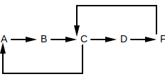
Note how in the graph above, ...
every node is reachable from every other node (strongly connected),
every node has an outdegree equal to its indegree (balanced).
| Node | Indegree | Outdegree |
|---|---|---|
| A | 1 | 1 |
| B | 1 | 1 |
| C | 2 | 2 |
| D | 1 | 1 |
| F | 1 | 1 |
In contrast, the following graphs are not Eulerian graphs (no Eulerian cycles exist):
Strongly connected but not balanced.

Balanced but not strongly connected.
Balanced but disconnected (not strongly connected).

disconnected / connected - A graph is disconnected if you can break it out into 2 or more distinct sub-graphs without breaking any paths. In other words, the graph contains at least two nodes which aren't contained in any path.
The graph below is disconnected because there is no path that contains E, F, G, or H and A, B, C, or D.

The graph below is connected.

strongly connected - A graph is strongly connected if every node is reachable from every other node.
The graph below is not strongly connected because neither A nor B is reachable by C, D, E, or F.
The graph below is strongly connected because all nodes are reachable from all nodes.
indegree / outdegree - The number of edges leading into / out of a node of a directed graph.
balanced node - A node of a directed graph that has an equal indegree and outdegree. That is, the number of edges coming in is equal to the number of edges going out.
The node below has an indegree and outdegree of 1. It is balanced.

balanced graph - A directed graph where ever node is balanced.
The graph below is balanced because all nodes are balanced.
| Node | Indegree | Outdegree |
|---|---|---|
| A | 1 | 1 |
| B | 1 | 1 |
| C | 2 | 2 |
| D | 1 | 1 |
| F | 1 | 1 |
overlap graph - A graph representing the k-mers making up a string. Specifically, the graph is built in 2 steps:
Each node is a fragment.
Each edge is between overlapping fragments (nodes), where the ...

Overlap graphs used for genome assembly.
de Bruijn graph - A special graph representing the k-mers making up a string. Specifically, the graph is built in 2 steps:
Each k-mer is represented as an edge connecting 2 nodes. The ...
For example, ...

Each node representing the same value is merged together to form the graph.
For example, ...

De Bruijn graphs are used for genome assembly. It's much faster to assemble a genome from a de Bruijn graph than it is to from an overlap graphs.
De Bruijn graphs were originally invented to solve the k-universal string problem.
k-universal - For some alphabet and k, a string is considered k-universal if it contains every k-mer for that alphabet exactly once. For example, for an alphabet containing only 0 and 1 (binary) and k=3, a 3-universal string would be 0001110100 because it contains every 3-mer exactly once:
⚠️NOTE️️️⚠️
This is effectively assembly. There are a set of k-mers and they're being stitched together to form a larger string. The only difference is that the elements aren't nucleotides.
De Bruijn graphs were invented in an effort to construct k-universal strings for arbitrary values of k. For example, given the k-mers in the example above (000, 001, ...), a k-universal string can be found by constructing a de Bruijn graph from the k-mers and finding a Eulerian cycle in that graph.
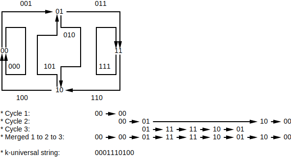
There are multiple Eulerian cycles in the graph, meaning that there are multiple 3-universal strings:
For larger values of k (e.g. 20), finding k-universal strings would be too computationally intensive without De Bruijn graphs and Eulerian cycles.
coverage - Given a substring from some larger sequence that was reconstructed from a set of fragments, the coverage of that substring is the number of reads used to construct it. The substring length is typically 1: the coverage for each position of the sequence.

read breaking - The concept of taking multiple reads and breaking them up into smaller reads.
When read breaking, smaller k-mers result in better coverage but also make the de Bruijn graph more tangled. The more tangled the de Bruijn graph is, the harder it is to infer the full sequence.
In the example above, the average coverage...
See also: read-pair breaking.
⚠️NOTE️️️⚠️
What purpose does this actually serve? Mimicking 1 long read as n shorter reads isn't equivalent to actually having sequenced those n shorter reads. For example, what if the longer read being broken up has an error? That error replicates when breaking into n shorter reads, which gives a false sense of having good coverage and makes it seem as if it wasn't an error.
read-pair breaking - The concept of taking multiple read-pairs and breaking them up into read-pairs with a smaller k.
When read-pair breaking, a smaller k results in better coverage but also make the de Bruijn graph more tangled. The more tangled the de Bruijn graph is, the harder it is to infer the full sequence.
In the example above, the average coverage...
See also: read breaking.
⚠️NOTE️️️⚠️
What purpose does this actually serve? Mimicking 1 long read-pair as n shorter read-pairs isn't equivalent to actually having sequenced those n shorter read-pairs. For example, what if the longer read-pair being broken up has an error? That error replicates when breaking into n shorter read-pairs, which gives a false sense of having good coverage and makes it seem as if it wasn't an error.
contig - An unambiguous stretch of DNA derived by searching an overlap graph / de Bruijn graph for paths that are the longest possible stretches of non-branching nodes (indegree and outdegree of 1). Each stretch will be a path that's either ...
a line: each node has an indegree and outdegree of 1.
a cycle: each node has an indegree and outdegree of 1 and it loops.
a line sandwiched between branching nodes: nodes in between have an indegree and outdegree of 1 but either...
Real-world complications with DNA sequencing make de Bruijn / overlap graphs too tangled to guess a full genome: both strands of double-stranded DNA are sequenced and mixed into the graph, sequencing errors make into the graph, repeats regions of the genome can't be reliably handled by the graph, poor coverage, etc.. As such, biologists / bioinformaticians have no choice but to settle on contigs.

ribonucleotide - Elements that make up RNA, similar to how nucleotides are the elements that make up DNA.
antibiotic - A substance (typically an enzyme) for killing, preventing, or inhibiting the grow of bacterial infections.
amino acid - The building blocks of peptides / proteins, similar to how nucleotides are the building blocks of DNA.
See proteinogenic amino acid for the list of 20 amino acids used during the translation.
proteinogenic amino acid - Amino acids that are used during translation. These are the 20 amino acids that the ribosome translates from codons. In contrast, there are many other non-proteinogenic amino acids that are used for non-ribosomal peptides.
The term "proteinogenic" means "protein creating".
| 1 Letter Code | 3 Letter Code | Amino Acid | Mass (daltons) |
|---|---|---|---|
| A | Ala | Alanine | 71.04 |
| C | Cys | Cysteine | 103.01 |
| D | Asp | Aspartic acid | 115.03 |
| E | Glu | Glutamic acid | 129.04 |
| F | Phe | Phenylalanine | 147.07 |
| G | Gly | Glycine | 57.02 |
| H | His | Histidine | 137.06 |
| I | Ile | Isoleucine | 113.08 |
| K | Lys | Lysine | 128.09 |
| L | Leu | Leucine | 113.08 |
| M | Met | Methionine | 131.04 |
| N | Asn | Asparagine | 114.04 |
| P | Pro | Proline | 97.05 |
| Q | Gln | Glutamine | 128.06 |
| R | Arg | Arginine | 156.1 |
| S | Ser | Serine | 87.03 |
| T | Thr | Threonine | 101.05 |
| V | Val | Valine | 99.07 |
| W | Trp | Tryptophan | 186.08 |
| Y | Tyr | Tyrosine | 163.06 |
⚠️NOTE️️️⚠️
The masses are monoisotopic masses.
peptide - A short amino acid chain of at least size two. Peptides are considered miniature proteins, but when something should be called a peptide vs a protein is loosely defined: the cut-off is anywhere between 50 to 100 amino acids.
polypeptide - A peptide of at least size 10.
amino acid residue - The part of an amino acid that makes it unique from all others.
When two or more amino acids combine to make a peptide/protein, specific elements are removed from each amino acid. What remains of each amino acid is the amino acid residue.
cyclopeptide - A peptide that doesn't have a start / end. It loops.

linear peptide - A peptide that has a start and an end. It doesn't loop.

subpeptide - A peptide derived taking some contiguous piece of a larger peptide.
A subpeptide can have a length == 1 where a peptide must have a length > 1. As such, in the case where the subpeptide has a length ...
central dogma of molecular biology - The overall concept of transcription and translation: Instructions for making a protein are copied from DNA to RNA, then RNA feeds into the ribosome to make that protein (DNA → RNA → Protein).
Most, not all, peptides are synthesized as described above. Non-ribosomal peptides are synthesized outside of the transcription and translation.
non-ribosomal peptide - A peptide that was synthesized by a protein called NRP synthetase rather than synthesized by a ribosome. NRP synthetase builds peptides one amino acid at a time without relying on transcription or translation.
Non-ribosomal peptides may be cyclic. Common use-cases for non-ribosomal peptides:
non-ribosomal peptide synthetase - A protein responsible for the production of a non-ribosomal peptide.
adenylation domain - A segment of an NRP synthetase protein responsible for the outputting a single amino acid. For example, the NRP synthetase responsible for producing Tyrocidine has 10 adenylation domains, each of which is responsible for outputting a single amino acid of Tyrocidine.
mass spectrometer - A device that randomly shatters molecules into pieces and measures the mass-to-charge of those pieces. The output of the device is a plot called a spectrum.
Note that mass spectrometers have various real-world practical problems. Specifically, they ...
spectrum - The output of a mass spectrometer. The...
Note that mass spectrometers have various real-world practical problems. Specifically, they ...
As such, these plots aren't exact.
experimental spectrum - List of potential fragment masses derived from a spectrum. That is, the molecules fed into the mass spectrometer were randomly fragmented and each fragment had its mass-to-charge ratio measured. From there, each mass-to-charge ratio was converted to a set of potential masses.
The masses in an experimental spectrum ...
In the context of peptides, the mass spectrometer is expected to fragment based on the bonds holding the individual amino acids together. For example, given the linear peptide NQY, the experimental spectrum may include the masses for [N, Q, ?, ?, QY, ?, NQY] (? indicate faulty masses, Y and NQ missing).
theoretical spectrum - List of all of possible fragment masses for a molecule in addition to 0 and the mass of the entire molecule. This is what the experimental spectrum would be in a perfect world: no missing masses, no faulty masses, no noise, only a single possible mass for each mass-to-charge ratio.
In the context of peptides, the mass spectrometer is expected to fragment based on the bonds holding the individual amino acids together. For example, given the linear peptide NQY, the theoretical spectrum will include the masses for [0, N, Q, Y, NQ, QY, NQY]. It shouldn't include masses for partial amino acids. For example, it shouldn't include NQY breaking into 2 pieces by splitting Q, such that one half has N and part of Q, and the other has the remaining part of Q with Y.
spectrum convolution - An operation used to derive amino acid masses that probably come from the peptide used to generate that experimental spectrum. That is, it generates a list of amino acid masses that could have been for the peptide that generated the experimental spectrum.
The operation derives amino acid masses by subtracting experimental spectrum masses from each other. For example, the following experimental spectrum is for the linear peptide NQY: [113.9, 115.1, 136.2, 162.9, 242.0, 311.1, 346.0, 405.2]. Performing 242.0 - 113.9 results in 128.1, which is very close to the mass for amino acid Y.
Note how the mass for Y was derived from the masses in experimental spectrum even though it's missing from the experimental spectrum itself:
dalton - A unit of measurement used in physics and chemistry. 1 Dalton is approximately the mass of a single proton / neutron, derived by taking the mass of a carbon-12 atom and dividing it by 12.
codon - A sequence of 3 ribonucleotides that maps to an amino acid or a stop marker. During translation, the ribosome translates the RNA to a protein 3 ribonucleotides at a time:
⚠️NOTE️️️⚠️
The stop marker tells the ribosome to stop translating / the protein is complete.
⚠️NOTE️️️⚠️
The codons are listed as ribonucleotides (RNA). For nucleotides (DNA), swap U with T.
| 1 Letter Code | 3 Letter Code | Amino Acid | Codons |
|---|---|---|---|
| A | Ala | Alanine | GCA, GCC, GCG, GCU |
| C | Cys | Cysteine | UGC, UGU |
| D | Asp | Aspartic acid | GAC, GAU |
| E | Glu | Glutamic acid | GAA, GAG |
| F | Phe | Phenylalanine | UUC, UUU |
| G | Gly | Glycine | GGA, GGC, GGG, GGU |
| H | His | Histidine | CAC, CAU |
| I | Ile | Isoleucine | AUA, AUC, AUU |
| K | Lys | Lysine | AAA, AAG |
| L | Leu | Leucine | CUA, CUC, CUG, CUU, UUA, UUG |
| M | Met | Methionine | AUG |
| N | Asn | Asparagine | AAC, AAU |
| P | Pro | Proline | CCA, CCC, CCG, CCU |
| Q | Gln | Glutamine | CAA, CAG |
| R | Arg | Arginine | AGA, AGG, CGA, CGC, CGG, CGU |
| S | Ser | Serine | AGC, AGU, UCA, UCC, UCG, UCU |
| T | Thr | Threonine | ACA, ACC, ACG, ACU |
| V | Val | Valine | GUA, GUC, GUG, GUU |
| W | Trp | Tryptophan | UGG |
| Y | Tyr | Tyrosine | UAC, UAU |
| * | * | STOP | UAA, UAG, UGA |
reading frame - The different ways of dividing a DNA string into codons. Specifically, there are 6 different ways that a DNA string can be divided into codons:
For example, given the string ATGTTCCATTAA, the following codon division are possible:
| DNA | Start Index | Discard Prefix | Codons | Discard Suffix |
|---|---|---|---|---|
| ATGTTCCATTAA | 0 | ATG, TTC, CAT, TAA | ||
| ATGTTCCATTAA | 1 | A | TGT, TCC, ATT | AA |
| ATGTTCCATTAA | 2 | AT | GTT, CCA, TTA | A |
| TTAATGGAACAT | 0 | TTA, ATG, GAA, CAT | ||
| TTAATGGAACAT | 1 | T | TAA, TGG, AAC | AT |
| TTAATGGAACAT | 2 | TT | AAT, GGA, ACA | T |
⚠️NOTE️️️⚠️
TTAATGGAACAT is the reverse complement of ATGTTCCATTAA.
encode - When a DNA string or its reverse complement is made up of the codons required for an amino acid sequence. For example, ACAGTA encodes for the amino acid sequence...
branch-and-bound algorithm - A bruteforce algorithm that enumerates candidates to explore at each step but also discards untenable candidates using various checks. The enumeration of candidates is the branching step, while the culling of untenable candidates is the bounding step.
subsequence - A sequence derived by traversing some other sequence in order and choosing which elements to keep vs delete. For example, can is a subsequence of cation.

Not to be confused with substring. A substring may also be a subsequence, but a subsequence won't necessarily be a substring.
substring - A sequence derived by taking a contiguous part of some other sequence (order of elements maintained). For example, cat is a substring of cation.
Not to be confused with subsequence. A substring may also be a subsequence, but a subsequence won't necessarily be a substring.
topological order - A 1-dimensional ordering of nodes in a directed acyclic graph in which each node is ahead of all of its predecessors / parents. In other words, the node is ahead of all other nodes that connect to it.
For example, the graph ...

... the topological order is either [A, B, C, D, E] or [A, B, C, E, D]. Both are correct.
longest common subsequence - A common subsequence between a set of strings of which is the longest out of all possible common subsequences. There may be more than one per set.
For example, AACCTTGG and ACACTGTGA share a longest common subsequence of...
ACCTGG...

AACTGG...
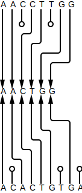
etc..
sequence alignment - Given a set of sequences, a sequence alignment is a set of operations applied to each position in an effort to line up the sequences. These operations include:
For example, the sequences MAPLE and TABLE may be aligned by performing...
| String 1 | String 2 | Operation |
|---|---|---|
| M | Insert/delete | |
| T | Insert/delete | |
| A | A | Keep matching |
| P | B | Replace |
| L | L | Keep matching |
| E | E | Keep matching |
Or, MAPLE and TABLE may be aligned by performing...
| String 1 | String 2 | Operation |
|---|---|---|
| M | T | Replace |
| A | A | Keep matching |
| P | B | Replace |
| L | L | Keep matching |
| E | E | Keep matching |
The names of these operations make more sense if you were to think of alignment instead as transformation. The first example above in the context of transforming MAPLE to TABLE may be thought of as:
| From | To | Operation | Result |
|---|---|---|---|
| M | Delete M | ||
| T | Insert T | T | |
| A | A | Keep matching A | TA |
| P | B | Replace P to B | TAB |
| L | L | Keep matching L | TABL |
| E | E | Keep matching E | TABLE |
The shorthand form of representing sequence alignments is to stack each sequence. The example above may be written as...
| 0 | 1 | 2 | 3 | 4 | 5 | |
|---|---|---|---|---|---|---|
| String 1 | M | A | P | L | E | |
| String 2 | T | A | B | L | E |
All possible sequence alignments are represented using an alignment graph. A path through the alignment graph (called alignment path) represents one possible way to align the set of sequences.
alignment graph - A directed graph representing all possible sequence alignments for some set of sequences. For example, the graph showing all the different ways that MAPLE and TABLE may be aligned ...
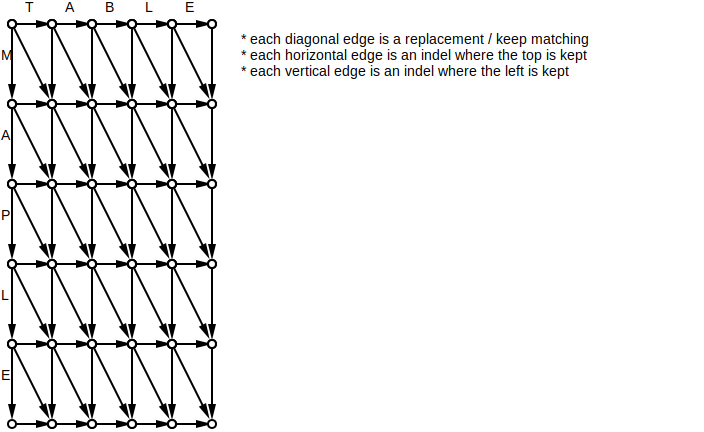
A path in this graph from source (top-left) to sink (bottom-right) represents an alignment.
alignment path - A path in an alignment graph that represents one possible sequence alignment. For example, the following alignment path ...

is for the sequence alignment...
| 0 | 1 | 2 | 3 | 4 | 5 | 6 | 7 | |
|---|---|---|---|---|---|---|---|---|
| String 1 | - | - | M | A | P | - | L | E |
| String 2 | T | A | - | B | L | E | - | - |
indel - In the context of sequence alignment, indel is short-hand for insert/delete. For example, the following sequence alignment has 2 indels in the very beginning...
| String 1 | String 2 | Operation |
|---|---|---|
| M | Indel | |
| T | Indel | |
| A | A | Keep matching |
| P | B | Replace |
| L | L | Keep matching |
| E | E | Keep matching |
The term insert/delete makes sense if you were to think of the set of operations as a transformation rather than an alignment. For example, the example above in the context of transforming MAPLE to TABLE:
| From | To | Operation | Result |
|---|---|---|---|
| M | Delete M | ||
| T | Insert T | T | |
| A | A | Keep matching A | TA |
| P | B | Replace P to B | TAB |
| L | L | Keep matching L | TABL |
| E | E | Keep matching E | TABLE |
oncogene - A gene that has the potential to cause cancer. In tumor cells, these genes are often mutated or expressed at higher levels.
Most normal cells will undergo apoptosis when critical functions are altered and malfunctioning. Activated oncogenes may cause those cells to survive and proliferate instead.
hamming distance - Given two strings, the hamming distance is the number of positional mismatches between them. For example, the hamming distance between ACTTTGTT and AGTTTCTT is 2.
| 0 | 1 | 2 | 3 | 4 | 5 | 6 | 7 | |
|---|---|---|---|---|---|---|---|---|
| String 1 | A | C | T | T | T | G | T | T |
| String 2 | A | G | T | T | T | C | T | T |
| Results | ✓ | ✗ | ✓ | ✓ | ✓ | ✗ | ✓ | ✓ |
dynamic programming - An algorithm that solves a problem by recursively breaking it down into smaller sub-problems, where the result of each recurrence computation is stored in some lookup table such that it can be re-used if it were ever encountered again (essentially trading space for speed). The lookup table may be created beforehand or as a cache that gets filled as the algorithm runs.
For example, imagine a money system where coins are represented in 1, 12, and 13 cent denominations. You can use recursion to find the minimum number of coins to represent some monetary value such as $0.17:
def min_coins(value):
if value == 0.01 or value == 0.12 or value == 0.13:
return 1
else:
return min([
min_coins(value - 0.01) + 1,
min_coins(value - 0.12) + 1,
min_coins(value - 0.13) + 1
])
The recursive graph above shows how $0.17 can be produced from a minimum of 5 coins: 1 x 13 cent denomination and 4 x 1 cent denomination. However, it recomputes identical parts of the graph multiple times. For example, min_coins(3) is independently computed 5 times. With dynamic programming, it would only be computed once and the result would be re-used each subsequent time min_coins(3) gets encountered.
manhattan tourist problem - The Manhattan tourist problem is an allegory to help explain sequence alignment graphs. Whereas in sequence alignments you're finding a path through the graph from source to sink that has the maximum weight, in the Manhattan tourist problem you're finding a path from 59th St and 8th Ave to 42nd St and 3rd Ave with the most tourist sights to see. It's essentially the same problem as global alignment:
point accepted mutation - A scoring matrix used for sequence alignments of proteins. The scoring matrix is calculated by inspecting / extrapolating mutations as homologous proteins evolve. Specifically, mutations in the DNA sequence that encode some protein may change the resulting amino acid sequence for that protein. Those mutations that...
blocks amino acid substitution matrix - A scoring matrix used for sequence alignments of proteins. The scoring matrix is calculated by scanning a protein database for highly conserved regions between similar proteins, where the mutations between those highly conserved regions define the scores. Specifically, those highly conserved regions are identified based on local alignments without support for indels (gaps not allowed). Non-matching positions in that alignment define potentially acceptable mutations.
point mutation - A mutation in DNA (or RNA) where a single nucleotide base is either changed, inserted, or deleted.
directed acyclic graph - A graph where the edges are directed (have a direction) and no cycles exist in the graph.
For example, the following is a directed acyclic graph...
The following graph isn't a directed acyclic graph because the edges don't have a direction (no arrowhead means you can travel in either direction)...

The following graph isn't a directed acyclic graph because it contains a cycle between D and B...

divide-and-conquer algorithm - An algorithm that solves a problem by recursively breaking it down into two or more smaller sub-problems, up until the point where each sub-problem is small enough / simple enough to solve. Examples include quicksort and merge sort.
See dynamic programming.
global alignment - A form of sequence alignment that finds the highest scoring alignment between a set of sequences. The sequences are aligned in their entirety. For example, the sequences TRELLO and MELLOW have the following global alignment...
| 0 | 1 | 2 | 3 | 4 | 5 | 6 |
|---|---|---|---|---|---|---|
| T | R | E | L | L | O | - |
| - | M | E | L | L | O | W |
This is the form of sequence alignment that most people think about when they hear "sequence alignment."
local alignment - A form of sequence alignment that isolates the alignment to a substring of each sequence. The substrings that score the highest are the ones selected. For example, the sequences TRELLO and MELLOW have the following local alignment...
| 0 | 1 | 2 | 3 |
|---|---|---|---|
| E | L | L | O |
| E | L | L | O |
... because out of all substrings in TRELLO and all substrings in MELLOW, ELLO (from TRELLO) scores the highest against ELLO (from MELLOW).
fitting alignment - A form of 2-way sequence alignment that isolates the alignment such that the entirety of one sequence is aligned against a substring of the other sequence. The substring producing the highest score is the one that's selected. For example, the sequences ELO and MELLOW have the following fitting alignment...
| 0 | 1 | 2 | 3 |
|---|---|---|---|
| E | L | - | O |
| E | L | L | O |
... because out of all the substrings in MELLOW, the substring ELLO scores the highest against ELO.
overlap alignment - A form of 2-way sequence alignment that isolates the alignment to a suffix of the first sequences and a prefix of the second sequence. The prefix and suffix producing the highest score are the ones selected . For example, the sequences BURRITO and RICOTTA have the following overlap alignment...
| 0 | 1 | 2 | 3 | 4 |
|---|---|---|---|---|
| R | I | T | - | O |
| R | I | - | C | O |
... because out of all the suffixes in BURRITO and the prefixes in RICOTTA, RITO and RICO score the highest.
Levenshtein distance - An application of global alignment where the final weight represents the minimum number of operations required to transform one sequence to another (via swaps, insertions, and deletions). Matches are scored 0, while mismatches and indels are scored -1. For example, TRELLO and MELLOW have the Levenshtein distance of 3...
| 0 | 1 | 2 | 3 | 4 | 5 | 6 | ||
|---|---|---|---|---|---|---|---|---|
| T | R | E | L | L | O | - | ||
| - | M | E | L | L | O | W | ||
| Score | -1 | -1 | 0 | 0 | 0 | 0 | -1 | Total: -3 |
Negate the total score to get the minimum number of operations. In the example above, the final score of -3 maps to a minimum of 3 operations.
genome rearrangement - A type of mutation where chromosomes go through structural changes, typically caused by either
The different classes of rearrangement include...
reversal / inversion: A break at two different locations followed by rejoining of the broken ends in different order. and rejoin in different order
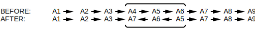
deletion:

duplication:

chromosome fusion:

chromosome fission:

The segments of the genome that were moved around are referred to as synteny blocks.
chimeric gene - A gene born from two separate genes getting fused together. A chimeric gene may have been created via genome rearrangement translocations.
An example of a chimeric gene is the gene coding for ABL-BCR fusion protein: A fusion of two smaller genes (coding for ABL and BCR individually) caused by chromosomes 9 and 22 breaking and re-attaching in a different order. The ABL-BCR fusion protein has been implicated in the development of a cancer known as chronic myeloid leukemia.
reversal distance - The minimum number of genome rearrangement reversals required to transform genome P to genome Q. The minimum is chosen because of parsimony.
The short-hand for this is .
dosage compensation - The mechanism by which sex chromosome gene expression is equalized between different sexes of the same species.
For example, mammals have two sexes...
Since females have two X chromosomes, it would make sense for females to have double the gene expression for X chromosome genes. However, many X chromosome genes have nothing to do with sex and if their expression were doubled it would lead to disease. As such, female mammals randomly shut down one of two X chromosomes so as to keep X chromosome gene expression levels roughly equivalent to that of males.
For mammals, this mechanism means that X chromosomes are mostly conserved because an X chromosome that's gone through genome rearrangement likely won't survive: If a gene jumps off an X chromosome its gene expression may double, leading to problems.
Different species have different mechanisms for equalization. For example, some species will double the gene expression on the male's single X chromosome rather than deactivating one of the female's two X chromosomes. Other hermaphroditic species may scale down X chromosome gene expression when multiple X chromosomes are present.
synteny - Intervals within two sets of chromosomes that have similar genes which are either in ...
The idea is that as evolution branches out a single ancestor species to different sub-species, genome rearrangements (reversals, translocations, etc..) are responsible for some of those mutations. As chromosomes break and rejoin back together in different order, the stretches between breakage points remain largely the same. For example, it's assumed that mice and humans have the same ancestor species because of the high number of synteny blocks between their genomes (most human genes have a mouse counterpart).

parsimony - The scientific concept of choosing the fewest number of steps / shortest path / simplest scenario / simplest explanation that fits the evidence available.
genomic dot-plot - Given two genomes, create a 2D plot where each axis is assigned to one of the genomes and a dot is placed at each coordinate containing a match, where a match is either a shared k-mer or a k-mer and its reverse complement. Matches may also be fuzzily found (e.g. within some hamming distance rather).
For example, ...
Genomic dot-plots are typically used in building synteny graphs: Graphs that reveal shared synteny blocks (shared stretches of DNA). Synteny blocks exist because genome rearrangements account for a large percentage of mutations between two species that branched off from the same parent (given that they aren't too far removed -- e.g. mouse vs human).
synteny graph - Given the genomic dot-plot for two genomes, cluster together points so as to reveal synteny blocks. For example, ...
... reveals that 4 synteny blocks are shared between the genomes. One of the synteny blocks is a normal match (C) while three are matching against their reverse complements (A, B, and D)...
breakpoint - Given two genomes that share synteny blocks, where one genome has the synteny blocks in desired order and direction while the other does not, an ...
adjacency is when two neighbouring synteny blocks in the undesired genome are following each other just as they do in the desired genome.
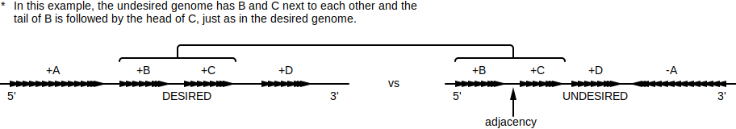
breakpoint is when two neighbouring synteny blocks in the undesired genome don't fit the definition of an adjacency: They aren't following each other just as they do in the desired genome.

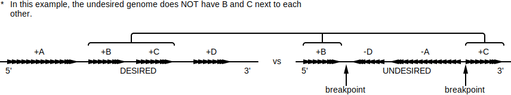
Breakpoints and adjacencies are useful because they identify desirable points for reversals (genome rearrangement), giving way to algorithms that find / estimate the reversal distance. For example, a contiguous train of adjacencies in an undesired genome may identify the boundaries for a single reversal that gets the undesired genome closer to the desired genome.
The number of breakpoints and adjacencies always equals one less than the number of synteny blocks.
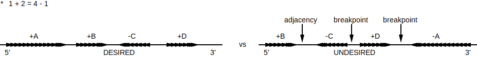
breakpoint graph - An undirected graph representing the order and orientation of synteny blocks shared between two genomes.
For example, the following two genomes share the synteny blocks A, B, C, and D...
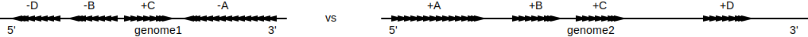
The breakpoint graph for the above two genomes is basically just a merge of the above diagrams. The set of synteny blocks shared between both genomes (A, B, C, and D) become dashed edges where each edge's...
Gap regions between synteny blocks are represented by solid colored edges, either red or blue depending on which genome it is.
If the genomes are linear, gap region edges are created between the nodes and the edges and a special termination node.

In the above breakpoint graph, the blue edges represent genome 2's gap regions while the red edges represent genome 1's gap regions. The set of edges representing synteny blocks is shared between them.
Breakpoint graphs build on the concept of breakpoints to compute a parsimonious path of fusion, fission, and reversal mutations (genome rearrangements) that transforms one genome into the other (see 2-break). Conventionally, blue edges represent the final desired path while red edges represent the path being transformed. As such, breakpoint graphs typically order synteny blocks so that blue edges are uniformly sandwiched between synteny blocks / red edges get chaotically scattered around.
2-break - Given a breakpoint graph, a 2-break operation breaks the two red edges at a synteny block boundary and re-wires them such that one of the red edges matches the blue edge at that boundary.
For example, the two red edges highlighted below share the same synteny block boundary and can be re-wired such that one of the edges matches the blue edge at that synteny boundary ...
Each 2-break operation on a breakpoint graph represents a fusion, fission, or reversal mutation (genome rearrangement). Continually applying 2-breaks until all red edges match blue edges reveals a parsimonious path of such mutations that transforms the red genome to the blue genome.
permutation - A list representing a single chromosome in one of the two genomes that make up a breakpoint graph. The entire breakpoint graph is representable as two sets of permutations, where each genome in the breakpoint graph is a set.
Permutation sets are commonly used for tersely representing breakpoint graphs as text. For example, given the following breakpoint graph ...
... , the permutation set representing the red genome may be any of the following ...
{[-D, -B, +C, -A]}{[+A, -C, +B, +D]}{[-B, +C, -A, -D]}{[-C, +B, +D, +A]}{[+C, -A, -D, -B]}All representations above are equivalent.
⚠️NOTE️️️⚠️
See Algorithms/Synteny/Reversal Path/Breakpoint List Algorithm for a full explanation of how to read permutations / how to convert from and to breakpoint graphs.
fusion - Joining two or more things together to form a single entity. For example, two chromosomes may join together to form a single chromosome (genome rearrangement).
fission - Splitting a single entity into two or more parts. For example, a single chromosome may break into multiple pieces where each piece becomes its own chromosome (genome rearrangement).
translocation - Changing location. For example, part of a chromosome may transfer to another chromosome (genome rearrangement).
severe acute respiratory syndrome - A deadly coronavirus that emerged from China around early 2003.
coronavirus - A family of viruses that attack the respiratory tracts of mammals and birds. The name comes from the fact that the outer spikes of the virus resemble the corona of the sun (crown of the sun / outermost part of the sun's atmosphere protruding out).
The common cold, SARS, and COVID-19 are examples of coronaviruses.
human immunodeficiency virus - A virus that over time causes acquired immunodeficiency syndrome (AIDS).
immunodeficiency - A state in which the immune system's ability to fight infectious disease and cancer is compromised or entirely absent.
DNA virus - A virus with a DNA genome. Depending on the type of virus, the genome may be single-stranded DNA or double-stranded DNA.
Herpes, chickenpox, and smallpox are examples of DNA viruses.
RNA virus - A virus with a RNA genome. RNA replication has a higher rate than DNA replication, meaning that RNA viruses mutate faster than DNA viruses.
Coronaviruses, HIV, and influenza are examples of RNA viruses.
phylogeny - The concept of inferring the evolutionary history among some set of species (shared ancestry) by inspecting properties of those species (e.g. relatedness of phenotypic or genotypic characteristics).

In the example above, cat and lion are descendants of some shared ancestor species. Likewise, that ancestor and bears are likely descendants from some other higher up species.
phylogenetic tree - A tree showing the degree in which biological species or entities (e.g. viruses) are related. Such trees help infer relationships such as common ancestry or which animal a virus jumped to humans from (e.g. virus A and B are related but A is only present in bats while B just showed up in humans).
distance metric - A metric used to measure how different a pair of entities are to each other. Examples include...
⚠️NOTE️️️⚠️
See also: similarity metric.
distance matrix - Given a set of n different entities, a distance matrix is an n-by-n matrix where each element contains the distance between the entities for that cell. For example, for the species snake, lizard, bird, and crocodile ...
| Snake | Lizard | Bird | Crocodile | |
|---|---|---|---|---|
| Snake | 0 | 2 | 6 | 4 |
| Lizard | 2 | 0 | 6 | 4 |
| Bird | 6 | 6 | 0 | 5 |
| Crocodile | 4 | 4 | 5 | 0 |
The distance metric can be anything so long as it meets the following properties:
⚠️NOTE️️️⚠️
I think what the last bullet point means is that the distance will be >= if you travel to it indirectly (hop over to it instead of taking a straight path). For example, if dist(B,C) = 5, then dist(A,B) + dist(A,C) must be >= 5.

A, B, and C are species.
Common distance metrics include...
Distance matrices are used to generate phylogenetic trees. A single distance matrix may fit many different trees or it's possible that it fits no tree at all. For example, the distance matrix above fits the tree...

tree - In graph theory, a tree is an acyclic undirected graph in which any two nodes are connected by exactly one path (nodes branch outward / never converge).
Trees come in two forms: rooted trees and unrooted trees. In graph theory, a tree typically refers to an unrooted tree.
⚠️NOTE️️️⚠️
This is different from the computer science definition of tree, which is an abstract data type representing a hierarchy (always a single root that flows downwards), typically generalized as a directed acyclic graph as opposed to an undirected acyclic graph.
unrooted tree - A tree without a root node...
An unrooted tree may be turned into a rooted tree by choosing any non-leaf node (internal node) to be the root node.
rooted tree - A tree with a root node...

subtree - Given a node in a tree, that node and all of its descendants comprise a subtree. For example, the following tree has the subtree ...
degree - The number of edges leading into / out of a node of an undirected graph.
The node below has a degree of 3.

simple tree - An unrooted tree where ...
In the context of phylogeny, a simple tree's ...
The restrictions placed on simple trees simplify the process of working backwards from a distance matrix to a phylogenetic tree.
additive distance matrix - Given a distance matrix, if there exists a tree with edge weights that satisfy that distance matrix (referred to as fit), that distance matrix is said to be an additive distance matrix.
For example, the following tree fits the following distance matrix ...
| Cat | Lion | Bear | |
|---|---|---|---|
| Cat | 0 | 2 | 3 |
| Lion | 2 | 0 | 3 |
| Bear | 3 | 3 | 0 |

The term additive is used because the weights of all edges along the path between leaves (i, j) add to dist(i, j) in the distance matrix. Not all distance matrices are additive. For example, no simple tree exists that satisfies the following distance matrix...
| S1 | S2 | S3 | S4 | |
|---|---|---|---|---|
| S1 | 0 | 3 | 4 | 3 |
| S2 | 3 | 0 | 4 | 5 |
| S3 | 4 | 4 | 0 | 2 |
| S4 | 3 | 5 | 2 | 0 |
Test simple tree 1:

dist(S1, S2) is 3 = w + x
dist(S1, S3) is 4 = w + y
dist(S1, S4) is 3 = w + z
dist(S2, S3) is 4 = x + y
dist(S2, S4) is 5 = x + z
dist(S3, S4) is 2 = y + z
Attempting to solve this produces inconsistent results. Solved values for each variable don't work across all equations present.
Test simple tree 2:
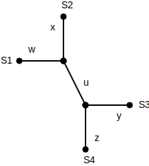
dist(S1, S2) is 3 = w + x
dist(S1, S3) is 4 = w + u + y
dist(S1, S4) is 3 = w + u + z
dist(S2, S3) is 4 = x + u + y
dist(S2, S4) is 5 = x + u + z
dist(S3, S4) is 2 = y + z
Attempting to solve this produces inconsistent results. Solved values for each variable don't work across all equations present.
Test simple tree 3:
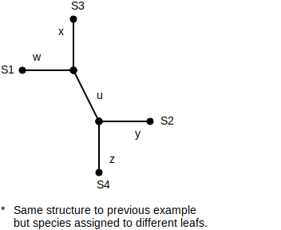
dist(S1, S2) is 4 = w + u + y
dist(S1, S3) is 3 = w + x
dist(S1, S4) is 3 = w + u + z
dist(S2, S3) is 4 = x + u + y
dist(S2, S4) is 2 = y + z
dist(S3, S4) is 5 = x + u + z
Attempting to solve this produces inconsistent results. Solved values for each variable don't work across all equations present.
etc..
neighbour - Given two leaf nodes in a tree, those leaf nodes are said to be neighbours if they share they connect to the same internal node. For example, leaf nodes A and B are neighbours in the following tree because they both connect to internal node D ...

⚠️NOTE️️️⚠️
A leaf node will only ever have 1 parent, by definition of a tree.
limb - Given a leaf node in a tree, that leaf node's limb is the edge between it and its parent (node it's connected to). For example, the following tree has the following limbs ...
⚠️NOTE️️️⚠️
A leaf node will only ever have 1 parent, by definition of a tree.
limb length - Given a leaf node in a tree, the leaf node's limb length is the weight assigned to its limb. For example, node A has a limb length of 2 in the following tree...

four point condition - An algorithm for determining if a distance matrix is an additive distance matrix. Given four leaf nodes, the algorithm checks different permutations of those leaf nodes to see if any pass a test, where that test builds node pairings from the quartet and checks their distances to see if they meet a specific condition...
for a, b, c, d in permutations(quartet, r=4): # find one perm that passes the following test
s1 = dist_mat[a][b] + dist_mat[c][d] # sum of dists for (a,b) and (c,d)
s2 = dist_mat[a][c] + dist_mat[b][d] # sum of dists for (a,c) and (b,d)
s3 = dist_mat[a][d] + dist_mat[b][c] # sum of dists for (a,d) and (b,c)
if s1 <= s2 == s3:
return True
return False
If all possible leaf node quartets pass the above test, the distance matrix is an additive distance matrix (was derived from a tree / fits a tree).
⚠️NOTE️️️⚠️
See Algorithms/Phylogeny/Test Additive Distance Matrix for a full explanation of how this algorithm works.
trimmed distance matrix - A distance matrix where a leaf node's row and column have been removed. This is equivalent to removing the leaf node's limb in the corresponding simple tree and merging together any edges connected by nodes of degree 2.
For example, removing v2 from the following distance matrix...
| v0 | v1 | v2 | v3 | |
|---|---|---|---|---|
| v0 | 0 | 13 | 21 | 22 |
| v1 | 13 | 0 | 12 | 13 |
| v2 | 21 | 12 | 0 | 13 |
| v3 | 22 | 13 | 13 | 0 |
... results in v2's row and column being removed ...
| v0 | v1 | v3 | |
|---|---|---|---|
| v0 | 0 | 13 | 22 |
| v1 | 13 | 0 | 13 |
| v3 | 22 | 13 | 0 |
balded distance matrix - An additive distance matrix where the distances in a leaf node's row and column have been subtracted by that leaf node's limb length. This is equivalent to setting the leaf node's limb length to 0 in the corresponding simple tree.
For example, balding v5's limb length in the following distance matrix ...
| v0 | v1 | v2 | v3 | v4 | v5 | |
|---|---|---|---|---|---|---|
| v0 | 0 | 13 | 21 | 21 | 22 | 22 |
| v1 | 13 | 0 | 12 | 12 | 13 | 13 |
| v2 | 21 | 12 | 0 | 20 | 21 | 21 |
| v3 | 21 | 12 | 20 | 0 | 7 | 13 |
| v4 | 22 | 13 | 21 | 7 | 0 | 14 |
| v5 | 22 | 13 | 21 | 13 | 14 | 0 |
... results in ...
| v0 | v1 | v2 | v3 | v4 | v5 | |
|---|---|---|---|---|---|---|
| v0 | 0 | 13 | 21 | 21 | 22 | 15 |
| v1 | 13 | 0 | 12 | 12 | 13 | 6 |
| v2 | 21 | 12 | 0 | 20 | 21 | 14 |
| v3 | 21 | 12 | 20 | 0 | 7 | 6 |
| v4 | 22 | 13 | 21 | 7 | 0 | 7 |
| v5 | 15 | 6 | 14 | 6 | 7 | 0 |
⚠️NOTE️️️⚠️
Technically, an edge weight of 0 is a violation of the simple tree requirement of having edge weights > 0. This is a special case.
⚠️NOTE️️️⚠️
How do you know the limb length from just the distance matrix? See the algorithm to determine limb length for any leaf from just the distance matrix.
additive phylogeny - A recursive algorithm that finds the unique simple tree for some additive distance matrix. The algorithm trims a single leaf node at each recursive step until the distance matrix has a size of two. The simple tree for any two leaf nodes is those two nodes connected by a single edge. Using that tree as its base, the algorithm recurses out of each step by finding where that step's trimmed node exists on the tree and attaching it on.
At the end, the algorithm will have constructed the entire simple tree for the additive distance matrix. For example, ...
Initial distance matrix ...
| v0 | v1 | v2 | v3 | |
|---|---|---|---|---|
| v0 | 0 | 13 | 21 | 22 |
| v1 | 13 | 0 | 12 | 13 |
| v2 | 21 | 12 | 0 | 13 |
| v3 | 22 | 13 | 13 | 0 |
Trim v1 to produce distance matrix ...
| v0 | v2 | v3 | |
|---|---|---|---|
| v0 | 0 | 21 | 22 |
| v2 | 21 | 0 | 13 |
| v3 | 22 | 13 | 0 |
Trim v0 to produce distance matrix ...
| v2 | v3 | |
|---|---|---|
| v2 | 0 | 13 |
| v3 | 13 | 0 |
Distance matrix maps to the obvious simple tree...

Attach v0 to produce tree...

Attach v1 to produce tree...
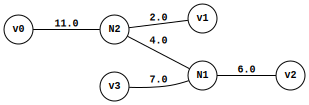
⚠️NOTE️️️⚠️
See Algorithms/Phylogeny/Distance Matrix to Tree/Additive Phylogeny Algorithm for a full explanation of how this algorithm works.
sum of squared errors - Sum of errors squared is an algorithm used to quantify how far off some estimation / prediction is.
Given a set of real values and a set of predicted values, the error is the difference between the real and predicted values at each data point. For example...
| Real | 5 | 4 | 7 | 8 | 5 | 4 |
| Predicted | 4 | 5 | 7 | 6 | 4 | 4 |
| Error | 1 | -1 | 0 | 2 | 1 | 0 |
The algorithm squares each error and sums them together:
res = 0
for r_val, p_val in zip(real, predicted):
err = r_val - p_val
res += err ** 2
The algorithm as a formula:
speciation - The evolutionary process by which a species splits into distinct child species.
In phylogenetic trees, internal nodes branching are assumed to be speciation events. That is, an event where the ancestral species represented by that node splits into distinct child species.
unrooted binary tree - In the context of phylogeny, an unrooted binary tree is a simple tree where internal nodes must have a degree of 3...

In other words, an edge leading to an internal node is guaranteed to branch exactly twice.

Contrast that to normal simple trees where internal nodes can have any degree greater than 2...

⚠️NOTE️️️⚠️
Recall that simple trees are unrooted to begin with and can't have nodes with degree 2 (train of non-branching edges not allowed).
rooted binary tree - In the context of phylogeny, a rooted binary tree is an unrooted binary tree with a root node injected in between one of its edges. The injected root node will always end up as an internal node of degree of 2, breaking the constraint of ...

ultrametric tree - A rooted tree where all leaf nodes are equidistant from the root.

In the example above, all leaf nodes are a distance of 4 from the root.
⚠️NOTE️️️⚠️
Does an ultrametric tree have to be a rooted binary tree? I think the answer is no: UPGMA generated rooted binary trees, but ultrametric trees in general just have to be rooted trees / they don't have to be binary.
molecular clock - The assumption that the rate of mutation is more-or-less consistent. For example, ...
This assumption is used for some phylogeny algorithms (e.g. UPGMA).
unweighted pair group method with arithmetic mean (UPGMA) - A heuristic algorithm used to estimate a binary ultrametric tree for some distance matrix.
⚠️NOTE️️️⚠️
A binary ultrametric tree is an ultrametric tree where each internal node only branches to two children. In other words, a binary ultrametric tree is a rooted binary tree where all leaf nodes are equidistant from the root.
The algorithm assumes that the rate of mutation is consistent (molecular clock). This assumption is what makes the tree ultrametric. A set of present day species (leaf nodes) are assumed to all have the same amount of mutation (distance) from their shared ancestor (shared internal node).
⚠️NOTE️️️⚠️
See Algorithms/Phylogeny/Distance Matrix to Tree/UPGMA Algorithm for a full explanation of how this algorithm works.
neighbour joining matrix - A matrix produced by transforming a distance matrix such that each element is calculated as total_dist(a) + total_dist(b) - (n - 2) * dist(a, b), where...
The maximum element in the neighbour joining matrix is guaranteed to be for two neighbouring leaf nodes. For example, the following distance matrix produces the following neighbour joining matrix...
| v0 | v1 | v2 | v3 | v4 | v5 | |
|---|---|---|---|---|---|---|
| v0 | 0 | 13 | 21 | 21 | 22 | 22 |
| v1 | 13 | 0 | 12 | 12 | 13 | 13 |
| v2 | 21 | 12 | 0 | 20 | 21 | 21 |
| v3 | 21 | 12 | 20 | 0 | 7 | 13 |
| v4 | 22 | 13 | 21 | 7 | 0 | 14 |
| v5 | 22 | 13 | 21 | 13 | 14 | 0 |
| v0 | v1 | v2 | v3 | v4 | v5 | |
|---|---|---|---|---|---|---|
| v0 | 0 | 110 | 110 | 88 | 88 | 94 |
| v1 | 110 | 0 | 110 | 88 | 88 | 94 |
| v2 | 110 | 110 | 0 | 88 | 88 | 94 |
| v3 | 88 | 88 | 88 | 0 | 122 | 104 |
| v4 | 88 | 88 | 88 | 122 | 0 | 104 |
| v5 | 94 | 94 | 94 | 104 | 104 | 0 |
The maximum element is for (v3, v4), meaning that v3 and v4 are neighbouring leaf nodes.
⚠️NOTE️️️⚠️
See Algorithms/Phylogeny/Find Neighbours for a full explanation of how this algorithm works.
neighbour joining phylogeny - A recursive algorithm that can either...
The algorithm finds and replaces a pair of neighbouring leaf nodes in the distance matrix with their shared parent at each recursive step (parent is promoted to a leaf node) until the distance matrix has a size of two. The simple tree for any two leaf nodes is those two nodes connected by a single edge. Using that tree as its base, the algorithm recurses out of each step by attaching the neighbours removed from the distance at that step to their parent in the tree.
⚠️NOTE️️️⚠️
The term neighbouring means having a shared parent in the tree, not next to each other in the distance matrix.
At the end, the algorithm will have constructed the entire simple tree for the additive distance matrix. For example, ...
Initial non-additive distance matrix ...
| v0 | v1 | v2 | v3 | |
|---|---|---|---|---|
| v0 | 0 | 16 | 22 | 22 |
| v1 | 16 | 0 | 13 | 12 |
| v2 | 22 | 13 | 0 | 11 |
| v3 | 22 | 12 | 11 | 0 |
Replace neighbours (v1, v0) with their parent N1 to produce distance matrix ...
| N1 | v2 | v3 | |
|---|---|---|---|
| N1 | 0 | 22 | 22 |
| v2 | 9.5 | 0 | 11 |
| v3 | 9 | 11 | 0 |
Replace neighbours (v2, v3) with their parent N2 to produce distance matrix ...
| N1 | N2 | |
|---|---|---|
| N1 | 0 | 3.75 |
| N2 | 3.75 | 0 |
Distance matrix maps to the obvious simple tree...
Attach (v2, v3) to N2 to produce tree...

Attach (v1, v0) to N1 to produce tree...

⚠️NOTE️️️⚠️
See Algorithms/Phylogeny/Distance Matrix to Tree/Neighbour Joining Phylogeny Algorithm for a full explanation of how this algorithm works.
paleontology - The scientific study of ancient organisms: dinosaurs, prehistoric plants, prehistoric insects, prehistoric fungi, etc...
anatomy - The study of the identification and description of structures in organisms.
character table - A matrix where the columns represent biological entities and the rows represent characteristics of those entities, where those characteristics are typically anatomically or physiologically.
| wings | sucks blood | number of legs | |
|---|---|---|---|
| house fly | 2 | no | 6 |
| mosquito | 2 | yes | 6 |
| snail | 0 | no | 0 |
Character tables were commonly used for phylogeny before discovering that DNA can be used to compare the relatedness of organisms.
A row in a character table is referred to as a character vector. Prior to the advent of sequencers, scientists would treat character vectors as sequences for generating phylogenetic trees or doing comparisons between organisms.
mitochondrial DNA - DNA unique to the mitochondria. This DNA is unique to the mitochondria, different from the DNA of the cell that the mitochondria lives in. The mitochondria is suspected of being bacteria that made it into the cell and survived, forming a symbiotic relationship.
Mitochondrial DNA is inherited fully from the mother. It isn't a mix of parental DNA as the cell DNA is.
small parsimony - In the context of phylogenetic trees, ...

Large parsimony isn't a process that's normally done because the search space explodes in size (e.g. NP-complete). Instead, small parsimony is used on a tree generated using an algorithm like UPGMA or neighbour joining phylogeny.
⚠️NOTE️️️⚠️
The parsimony score algorithm is what's typically used to evaluate how well a combination of tree structure + ancestral sequences do.
parsimony score - Given a phylogenetic tree with sequences for both leaf nodes (known entities) and internal nodes (inferred ancestral entities), the parsimony score is a measure of how far off a parent's sequence is from its children (and vice versa). The idea is that the most parsimonious evolutionary path is the one that's most likely to have occurred. As such, the less far off sequences are, the more likely it is that the actual ancestral lineage and ancestral sequences match what's depicted in the tree.
Saccharomyces - A genus of yeast used for producing alcohol and bread.
diauxic shift - A change in the metabolism of Saccharomyces cerevisiae. When glucose is present, Saccharomyces cerevisiae consumes that glucose for energy and produces ethanol as a byproduct. Once all available glucose in the environment has been depleted, it inverts its metabolism to instead consume the ethanol byproduct it produced earlier.
The consumption of ethanol only happens in the presence of oxygen. Without oxygen, Saccharomyces cerevisiae enters hibernation until either glucose or oxygen become available. This property is what allows for the making of wine: Wine production typically involves sealed barrels that prevent oxygen from entering.
whole genome duplication - A rare evolutionary event in which the entire genome of an organism is duplicated.
After duplication, much of the functionality provided by the genome becomes redundant. The organism evolves much more rapidly because a mutation in one copy of a gene won't necessarily make the organism less fit (duplicate copy still exists). It's typical for a whole genome duplication to be quickly followed up by massive amounts of gene mutations, gene loss, and genome rearrangements.
gene expression matrix - A matrix where each column represents a point in time, each row represents a gene, and each cell is a number representing the amount of gene expression taking place for that gene (row) at that time (column).
| 5 AM | 6 AM | 7 AM | |
|---|---|---|---|
| Gene 1 | 1.0 | 1.0 | 1.0 |
| Gene 2 | 1.0 | 0.7 | 0.5 |
| Gene 3 | 1.0 | 1.1 | 1.4 |
Each row in a gene expression matrix is called a gene expression vector.
co-regulate - A set of genes whose gene expression is regulated by the same transcription factor.
RNA transcript - RNA output of transcription.
transcriptome - All RNA transcripts within a cell at a specific point in time.
good clustering principle - The idea that items within the same cluster should be more similar to each other than items in other clusters.
⚠️NOTE️️️⚠️
This was originally introduced as "every pair of points within the same cluster should be closer to each other than any points each from different clusters", where "closer" was implying euclidean distance. I think the idea was intended to be abstracted out to the definition above since the items may not be thought of as "points" but as vectors or sequences + you can choose a similarity metric other than euclidean distance.
euclidean distance - The distance between two points if traveling directly from one to the other in a straight line.
In 2 dimensional space, this is calculated as .
In 3 dimensional space, this is calculated as .
In n dimensional space, this is calculated as , where v and w are two n dimensional points.
manhattan distance - The distance between two points if traveling only via the axis of the coordinate system.
In n dimensional space, this is calculated as , where v and w are two n dimensional points.
⚠️NOTE️️️⚠️
The name manhattan distance is an allegory to the city blocks of manhattan, where your options (most of the time) are to move either left/right or up/down. Other names for this same metric are taxi-cab distance and city block distance.
clustering - Grouping together a set of objects such that objects within the same group are more similar to each other than objects in other groups. Each group is referred to as a cluster.
k-centers clustering - A form of clustering where a point, called a center, defines cluster membership. k different centers are chosen (one for each cluster), and the points closest to each center (euclidean distance) make up members of that cluster. The goal is to choose centers such that, out of all possible cluster center to member distances, the farthest distance is the minimum it could possibly be out of all possible choices for centers.
In terms of a scoring function, the score being minimized is ...
# d() function from the formula
def dist_to_closest_center(data_pt, center_pts):
center_pt = min(
center_pts,
key=lambda cp: dist(data_pt, cp)
)
return dist(center_pt, data_pt)
# scoring function (what's trying to be minimized)
def k_centers_score(data_pts, center_pts):
return max(dist_to_closest_center(p, center_pts) for p in data_pts)

For a non-trivial input, the search space is too massive for a straight-forward algorithm to work. As such, heuristics are commonly used instead.
⚠️NOTE️️️⚠️
See farthest first traversal heuristic.
farthest first traversal - A heuristic commonly used for k-centers clustering. The algorithm iteratively builds out more centers by inspecting the euclidean distances from points to existing centers. At each step, the algorithm ...
The algorithm initially primes the list of centers with a randomly chosen point and stops executing once it has k points.
k-means clustering - A form of clustering where a point, called a center, defines cluster membership. k different centers are chosen (one for each cluster), and the points closest to each center (euclidean distance) make up members of that cluster. The goal is to choose centers such that, out of all possible cluster center to member distances, the formula below is the minimum it could possibly be out of all possible choices for centers.
The formula below is referred to as squared error distortion.
# d() function from the formula
def find_closest_center(data_pt, center_pts):
center_pt = min(
center_pts,
key=lambda cp: dist(data_pt, cp)
)
return center_pt, dist(center_pt, data_pt)
# scoring function (what's trying to be minimized) -- taking squares of d() and averaging
def squared_error_distortion(data_pts, center_pts):
res = []
for data_pt in data_pts:
closest_center_pt, dist_to = find_closest_center(data_pt, center_pts)
res.append(dist_to ** 2)
return sum(res) / len(res)
Compared to k-centers, k-means more appropriately handles outliers. If outliers are present, k-centers's metric causes the cluster center to be wildly offset while k-mean's metric will only be mildly offset. In the example below, the best scoring cluster center for k-centers is wildly offset by outlier Z while k-means isn't offset as much.
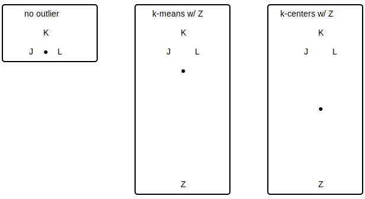
For a non-trivial input, the search space is too massive for a straight-forward algorithm to work. As such, heuristics are commonly used instead.
⚠️NOTE️️️⚠️
See Lloyd's algorithm.
center of gravity - In terms of clustering using euclidean distance, the center of gravity for a set of points is the average of each individual dimension / coordinates.
def center_of_gravity(data_pts, dim):
center = []
for i in range(dim):
val = mean(pt[i] for pt in data_pts)
center.append(val)
return center
For example, for the 2D points (0,5), (1,3), and (2,2), the center of gravity is (1, 3.3333). The coordinate / dimension for ...
0+1+2/3 = 1.5+3+2/3 = 3.3333.Lloyd's algorithm - A heuristic for determining centers in k-means clustering. The algorithm begins by choosing centers by arbitrarily selecting k points from the points being clustered, then iteratively...
The algorithm stops once the new centers are the same as the centers from the previous iteration (stops converging).
Since this algorithm is a heuristic, it doesn't always converge to a good solution. The algorithm typically runs multiple times, where the run producing centers with the lowest squared error distortion is accepted. An enhancement to the algorithm, called k-means++ initializer, increases the chances of converging to a good solution by probabilistically selecting initial centers that are far from each other:
The probability of selecting a point as the next center is proportional to its squared distance to the existing centers.
def k_means_PP_initializer(data_pts, k):
centers = [random.choice(data_pts)]
while len(centers) < k:
choice_points = []
choice_weights = []
for pt in data_pts:
if pt in centers:
continue
_, d = find_closest_center(pt, centers)
choice_weights.append(d)
choice_points.append(pt)
total = sum(choice_weights)
choice_weights = [w / total for w in choice_weights]
c_pt = random.choices(choice_points, weights=choice_weights, k=1).pop(0)
centers.append(c_pt)
return centers
hard clustering / soft clustering - In the context of clustering, ...
soft clustering algorithms assign each data point to a set of probabilities, where each probability is how likely it is for that data point to be assigned to a cluster.

hard clustering algorithms assign each data point to exactly one cluster.

dot product - Given two equal sized vectors, the dot product of those vectors is calculated by first multiplying the pair at each index, then summing the result of those multiplications together. For example, the dot product (1, 2, 3) and (4, 5, 6) is 1*4+2*5+3*6.
The notation for dot product is a central dot in between the two vector: .
⚠️NOTE️️️⚠️
Central dot is also common place for standard multiplication.
In geometry, the dot product of two vectors is used to get the angle between those vector.
conditional probability - The probability of an event occurring given that another event has already occurred.
The notation for conditional probability is Pr(B|A), where B is the event occurring and A is the event that's already occurred.
If B and A are...
similarity metric - A metric used to measure how similar a pair of entities are to each other. Where as a distance metric must start at 0 for total similarity and grows based on how different the entities are, a similarity metric has no requirements for bounds on similarity or dissimilarity. Examples of similarity metrics include ...
⚠️NOTE️️️⚠️
This topic was only briefly discussed, so I don't know for sure what the properties/requirements are for a similarity metric other than higher = more similar. Contrast this to distance metrics, where it explicitly mentions the requirements that need to be followed (e.g. triangle inequality property). For similarity metrics, it didn't say if there's some upper-bound to similarity or if totally similar entities have to score the same. For example, does similarity(snake,snake) == similarity(bird,bird) have to be true or can it be that similarity(snake,snake) > similarity(bird,bird)?
I saw on Wikipedia that sequence alignment scoring matrices like PAM and BLOSUM are similarity matrices, so that implies that totally similar entities don't have to be the same score. For example, in BLOSUM62 similarity(A,A) = 4 but similarity(R,R) = 5.
Also, does a similarity metric have to be symmetric? For example, similarity(snake,bird) == similarity(bird,snake). I think it does have to be symmetric.
similarity matrix - Given a set of n different entities, a similarity matrix is an n-by-n matrix where each element contains the similarity measure between the entities for that cell. For example, for the species snake, lizard, bird, and crocodile ...
| Snake | Lizard | Bird | Crocodile | |
|---|---|---|---|---|
| Snake | 1.0 | 0.8 | 0.4 | 0.6 |
| Lizard | 0.8 | 1.0 | 0.4 | 0.6 |
| Bird | 0.4 | 0.4 | 1.0 | 0.5 |
| Crocodile | 0.6 | 0.6 | 0.5 | 1.0 |
⚠️NOTE️️️⚠️
This topic was only briefly discussed, so I have no idea what properties are required other than: 0 = completely dissimilar / orthogonal and anything higher than that is more similar. It didn't say if there's some upper-bound to similarity or if totally similar entities have to score the same. For example, does similarity(snake,snake) == similarity(bird,bird) have to be true or can it be that similarity(snake,snake) > similarity(bird,bird)? I saw on Wikipedia that sequence alignment scoring matrices like PAM and BLOSUM are similarity matrices, so that implies that totally similar entities don't have to be the same score. For example, in BLOSUM62 similarity(A,A) = 4 but similarity(R,R) =5.
There may be other properties involved, such as how the triangle inequality property is a thing for distance matrices / distance metrics.
pearson correlation coefficient - A metric used to quantify how correlated two vectors are.
In the above formula, x and y are the two input vectors and avg is the average function. The result of the formula is a number between -1 and 1, where ...
The formula may be modified to become a distance metric as follows: 1 - pearson_correlation(x, y). Where as the pearson correlation coefficient varies between -1 and 1, the pearson distance varies between 0 (totally similar) and 2 (totally dissimilar).
similarity graph - A transformation of a similarity matrix into a graph, where the entities that make up the similarity matrix are represented as nodes and edges between nodes are only made if the similarity exceeds a certain threshold.
The similarity graph below was generated using the accompanying similarity matrix and threshold of 0.45.
| Snake | Lizard | Bird | Crocodile | |
|---|---|---|---|---|
| Snake | 1.0 | 0.8 | 0.4 | 0.6 |
| Lizard | 0.8 | 1.0 | 0.4 | 0.6 |
| Bird | 0.4 | 0.4 | 1.0 | 0.5 |
| Crocodile | 0.6 | 0.6 | 0.5 | 1.0 |

Similarity graphs are used for clustering (e.g. gene expression vectors). Assuming clusters exist and the similarity metric captures them, there should be some threshold where the edges produced in the similarity graph form cliques or corrupted cliques (a set of nodes that would form a clique if it weren't for a few extra edges and/or missing edges).
clique - A set of nodes in a graph where every possible node pairing has an edge.

clique graph - A graph consisting only of cliques.
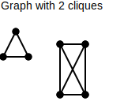
RNA sequencing - A technique which uses next-generation sequencing to reveal the presence and quantity of RNA in a biological sample at some given moment.
hierarchial cluster - A form of tiered clustering where clusters are represented as a tree. Each node represents a cluster (leaf nodes being a cluster of size 1), where the clusters represented by a parent node is the combination of the clusters represented by its children.

⚠️NOTE️️️⚠️
Hierarchial clustering has its roots in phylogeny. The similarity metric to build clusters is massages into a distance metric, which is then used to form a tree that represents the clusters.
cosine similarity - A similarity metric that measures if two vectors grew/shrunk in a similar trajectories (similar angles).
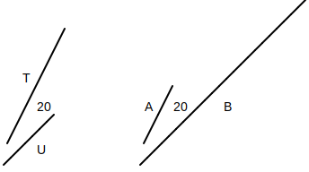
The metric computes the trajectory as the cosine of an angle between vectors. In the example above, T and U have different magnitudes than A and B, but the angle between T and U is exactly the same as the angle between A and B: 20deg. The cosine similarity of both pairs is cos(20deg) = 0.939. Had the angle been ...
The formula may be modified to become a distance metric as follows: 1 - cosine_similarity(x, y). Where as the cosine similarity varies between -1 and 1, the cosine distance varies between 0 (totally similar) and 2 (totally dissimilar).